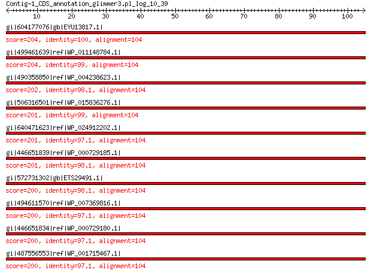

bitscore colors: <40, 40-50 , 50-80, 80-200, >200
 BLASTP 2.2.31+
Reference: Stephen F. Altschul, Thomas L. Madden, Alejandro A.
Schaffer, Jinghui Zhang, Zheng Zhang, Webb Miller, and David J.
Lipman (1997), "Gapped BLAST and PSI-BLAST: a new generation of
protein database search programs", Nucleic Acids Res. 25:3389-3402.
Reference for composition-based statistics: Alejandro A. Schaffer,
L. Aravind, Thomas L. Madden, Sergei Shavirin, John L. Spouge, Yuri
I. Wolf, Eugene V. Koonin, and Stephen F. Altschul (2001),
"Improving the accuracy of PSI-BLAST protein database searches with
composition-based statistics and other refinements", Nucleic Acids
Res. 29:2994-3005.
Database: All non-redundant GenBank CDS translations+PDB+SwissProt+PIR+PRF
excluding environmental samples from WGS projects
49,011,213 sequences; 17,563,301,199 total letters
Query= Contig-1_CDS_annotation_glimmer3.pl_log_10_39
Length=104
Score E
Sequences producing significant alignments: (Bits) Value
gi|604177076|gb|EYU13817.1| LSU ribosomal protein L24P 204 1e-65
gi|499461639|ref|WP_011148784.1| 50S ribosomal protein L24 204 3e-65
gi|490358850|ref|WP_004238623.1| 50S ribosomal protein L24 202 8e-65
gi|506316501|ref|WP_015836276.1| 50S ribosomal protein L24 201 2e-64
gi|640471623|ref|WP_024912202.1| 50S ribosomal protein L24 201 4e-64
gi|446651839|ref|WP_000729185.1| MULTISPECIES: 50S ribosomal pro... 201 4e-64
gi|572731302|gb|ETS29491.1| LSU ribosomal protein L24P 200 5e-64
gi|494611570|ref|WP_007369816.1| MULTISPECIES: 50S ribosomal pro... 200 6e-64
gi|446651834|ref|WP_000729180.1| 50S ribosomal protein L24 200 6e-64
gi|487556553|ref|WP_001715467.1| 50S ribosomal protein L24 200 6e-64
>gi|604177076|gb|EYU13817.1| LSU ribosomal protein L24P [Photorhabdus luminescens BA1]
Length=104
Score = 204 bits (519), Expect = 1e-65, Method: Compositional matrix adjust.
Identities = 104/104 (100%), Positives = 104/104 (100%), Gaps = 0/104 (0%)
Query 1 MAAKIRRDDEVIVLTGKDKGKRGKVKQVLSTGKVIVEGINLVKKHQKPVPALNQPGGIVE 60
MAAKIRRDDEVIVLTGKDKGKRGKVKQVLSTGKVIVEGINLVKKHQKPVPALNQPGGIVE
Sbjct 1 MAAKIRRDDEVIVLTGKDKGKRGKVKQVLSTGKVIVEGINLVKKHQKPVPALNQPGGIVE 60
Query 61 KEAAIQVSNVAIFNAATGKADRVGFRFEDGKKVRFFKSNSETIK 104
KEAAIQVSNVAIFNAATGKADRVGFRFEDGKKVRFFKSNSETIK
Sbjct 61 KEAAIQVSNVAIFNAATGKADRVGFRFEDGKKVRFFKSNSETIK 104
>gi|499461639|ref|WP_011148784.1| 50S ribosomal protein L24 [Photorhabdus luminescens]
gi|37528532|ref|NP_931877.1| 50S ribosomal protein L24 [Photorhabdus luminescens subsp. laumondii
TTO1]
gi|46396777|sp|Q7MYG2.1|RL24_PHOLL RecName: Full=50S ribosomal protein L24 [Photorhabdus luminescens
subsp. laumondii TTO1]
gi|36787970|emb|CAE17087.1| 50S ribosomal protein L24 [Photorhabdus luminescens subsp. laumondii
TTO1]
Length=104
Score = 204 bits (518), Expect = 3e-65, Method: Compositional matrix adjust.
Identities = 103/104 (99%), Positives = 104/104 (100%), Gaps = 0/104 (0%)
Query 1 MAAKIRRDDEVIVLTGKDKGKRGKVKQVLSTGKVIVEGINLVKKHQKPVPALNQPGGIVE 60
MAAKIRRDDEVIVLTGKDKGKRGKVKQVLSTGKVIVEGINLVKKHQKPVPALNQPGGIVE
Sbjct 1 MAAKIRRDDEVIVLTGKDKGKRGKVKQVLSTGKVIVEGINLVKKHQKPVPALNQPGGIVE 60
Query 61 KEAAIQVSNVAIFNAATGKADRVGFRFEDGKKVRFFKSNSETIK 104
KEAAIQVSNVAIFNAATGKADRVGFRFEDGKK+RFFKSNSETIK
Sbjct 61 KEAAIQVSNVAIFNAATGKADRVGFRFEDGKKIRFFKSNSETIK 104
>gi|490358850|ref|WP_004238623.1| 50S ribosomal protein L24 [Morganella morganii]
gi|455737452|ref|YP_007503718.1| LSU ribosomal protein L24p (L26e) [Morganella morganii subsp.
morganii KT]
gi|455419015|gb|AGG29345.1| LSU ribosomal protein L24p (L26e) [Morganella morganii subsp.
morganii KT]
gi|468907499|gb|EMP49948.1| LSU ribosomal protein L24p (L26e) [Morganella morganii SC01]
gi|570277866|gb|ETO41515.1| 50S ribosomal protein L24 [Morganella sp. EGD-HP17]
gi|571172250|emb|CDK65667.1| LSU ribosomal protein L24p (L26e) [Morganella morganii IS15]
Length=104
Score = 202 bits (514), Expect = 8e-65, Method: Compositional matrix adjust.
Identities = 102/104 (98%), Positives = 104/104 (100%), Gaps = 0/104 (0%)
Query 1 MAAKIRRDDEVIVLTGKDKGKRGKVKQVLSTGKVIVEGINLVKKHQKPVPALNQPGGIVE 60
MAAKIRRDDE+IVLTGKDKGKRGKVKQVLS+GKVIVEGINLVKKHQKPVPALNQPGGIVE
Sbjct 1 MAAKIRRDDEIIVLTGKDKGKRGKVKQVLSSGKVIVEGINLVKKHQKPVPALNQPGGIVE 60
Query 61 KEAAIQVSNVAIFNAATGKADRVGFRFEDGKKVRFFKSNSETIK 104
KEAAIQVSNVAIFNAATGKADRVGFRFEDGKKVRFFKSNSETIK
Sbjct 61 KEAAIQVSNVAIFNAATGKADRVGFRFEDGKKVRFFKSNSETIK 104
>gi|506316501|ref|WP_015836276.1| 50S ribosomal protein L24 [Photorhabdus asymbiotica]
gi|253991678|ref|YP_003043034.1| 50S ribosomal protein L24 [Photorhabdus asymbiotica]
gi|253783128|emb|CAQ86293.1| 50S ribosomal protein L24 [Photorhabdus asymbiotica]
Length=104
Score = 201 bits (512), Expect = 2e-64, Method: Compositional matrix adjust.
Identities = 103/104 (99%), Positives = 103/104 (99%), Gaps = 0/104 (0%)
Query 1 MAAKIRRDDEVIVLTGKDKGKRGKVKQVLSTGKVIVEGINLVKKHQKPVPALNQPGGIVE 60
MAAKIRRDDEVIVLTGKDKGKRGKVKQVLSTGKVIVEGINLVKKHQKPVPALNQPGGIVE
Sbjct 1 MAAKIRRDDEVIVLTGKDKGKRGKVKQVLSTGKVIVEGINLVKKHQKPVPALNQPGGIVE 60
Query 61 KEAAIQVSNVAIFNAATGKADRVGFRFEDGKKVRFFKSNSETIK 104
KEAAIQVSNVAIFNA TGKADRVGFRFEDGKKVRFFKSNSETIK
Sbjct 61 KEAAIQVSNVAIFNAITGKADRVGFRFEDGKKVRFFKSNSETIK 104
>gi|640471623|ref|WP_024912202.1| 50S ribosomal protein L24 [Serratia fonticola]
gi|573928612|gb|AHG19909.1| 50S ribosomal protein L24 [Serratia fonticola RB-25]
Length=104
Score = 201 bits (510), Expect = 4e-64, Method: Compositional matrix adjust.
Identities = 101/104 (97%), Positives = 103/104 (99%), Gaps = 0/104 (0%)
Query 1 MAAKIRRDDEVIVLTGKDKGKRGKVKQVLSTGKVIVEGINLVKKHQKPVPALNQPGGIVE 60
MAAKIRRDDEVIVLTGKDKGKRGKVK VLSTGKVIVEGINLVKKHQKPVPALNQPGGIVE
Sbjct 1 MAAKIRRDDEVIVLTGKDKGKRGKVKNVLSTGKVIVEGINLVKKHQKPVPALNQPGGIVE 60
Query 61 KEAAIQVSNVAIFNAATGKADRVGFRFEDGKKVRFFKSNSETIK 104
KEAAIQVSN+A+FNAATGKADRVGFRFEDGKKVRFFKSNSETIK
Sbjct 61 KEAAIQVSNIALFNAATGKADRVGFRFEDGKKVRFFKSNSETIK 104
>gi|446651839|ref|WP_000729185.1| MULTISPECIES: 50S ribosomal protein L24 [Enterobacteriaceae]
gi|15803836|ref|NP_289870.1| 50S ribosomal protein L24 [Escherichia coli O157:H7 str. EDL933]
gi|15833428|ref|NP_312201.1| 50S ribosomal protein L24 [Escherichia coli O157:H7 str. Sakai]
gi|16131188|ref|NP_417768.1| 50S ribosomal subunit protein L24 [Escherichia coli str. K-12
substr. MG1655]
gi|16766718|ref|NP_462333.1| 50S ribosomal protein L24 [Salmonella enterica subsp. enterica
serovar Typhimurium str. LT2]
gi|62181933|ref|YP_218350.1| 50S ribosomal protein L24 [Salmonella enterica subsp. enterica
serovar Choleraesuis str. SC-B67]
gi|74313828|ref|YP_312247.1| 50S ribosomal protein L24 [Shigella sonnei Ss046]
gi|82545672|ref|YP_409619.1| 50S ribosomal protein L24 [Shigella boydii Sb227]
gi|110807157|ref|YP_690677.1| 50S ribosomal protein L24 [Shigella flexneri 5 str. 8401]
gi|152972216|ref|YP_001337362.1| 50S ribosomal protein L24 [Klebsiella pneumoniae subsp. pneumoniae
MGH 78578]
gi|156932245|ref|YP_001436162.1| 50S ribosomal protein L24 [Cronobacter sakazakii ATCC BAA-894]
gi|157159126|ref|YP_001464777.1| 50S ribosomal protein L24 [Escherichia coli E24377A]
gi|157162783|ref|YP_001460101.1| 50S ribosomal protein L24 [Escherichia coli HS]
gi|161506019|ref|YP_001573131.1| 50S ribosomal protein L24 [Salmonella enterica subsp. arizonae
serovar 62:z4,z23:- str. RSK2980]
gi|161616455|ref|YP_001590420.1| 50S ribosomal protein L24 [Salmonella enterica subsp. enterica
serovar Paratyphi B str. SPB7]
gi|170018455|ref|YP_001723409.1| 50S ribosomal protein L24 [Escherichia coli ATCC 8739]
gi|170082829|ref|YP_001732149.1| 50S ribosomal protein L24 [Escherichia coli str. K-12 substr.
DH10B]
gi|170682364|ref|YP_001745571.1| 50S ribosomal protein L24 [Escherichia coli SMS-3-5]
gi|187733732|ref|YP_001881993.1| 50S ribosomal protein L24 [Shigella boydii CDC 3083-94]
gi|194445033|ref|YP_002042679.1| 50S ribosomal protein L24 [Salmonella enterica subsp. enterica
serovar Newport str. SL254]
gi|194448938|ref|YP_002047452.1| 50S ribosomal protein L24 [Salmonella enterica subsp. enterica
serovar Heidelberg str. SL476]
gi|194737014|ref|YP_002116371.1| 50S ribosomal protein L24 [Salmonella enterica subsp. enterica
serovar Schwarzengrund str. CVM19633]
gi|197247628|ref|YP_002148348.1| 50S ribosomal protein L24 [Salmonella enterica subsp. enterica
serovar Agona str. SL483]
gi|198246225|ref|YP_002217391.1| 50S ribosomal protein L24 [Salmonella enterica subsp. enterica
serovar Dublin str. CT_02021853]
gi|205354943|ref|YP_002228744.1| 50S ribosomal protein L24 [Salmonella enterica subsp. enterica
serovar Gallinarum str. 287/91]
gi|207858671|ref|YP_002245322.1| 50S ribosomal protein L24 [Salmonella enterica subsp. enterica
serovar Enteritidis str. P125109]
gi|209397708|ref|YP_002272765.1| 50S ribosomal protein L24 [Escherichia coli O157:H7 str. EC4115]
gi|209920775|ref|YP_002294859.1| 50S ribosomal protein L24 [Escherichia coli SE11]
gi|218550584|ref|YP_002384375.1| 50S ribosomal protein L24 [Escherichia fergusonii ATCC 35469]
gi|218555866|ref|YP_002388779.1| 50S ribosomal protein L24 [Escherichia coli IAI1]
gi|218697001|ref|YP_002404668.1| 50S ribosomal protein L24 [Escherichia coli 55989]
gi|218702071|ref|YP_002409700.1| 50S ribosomal protein L24 [Escherichia coli IAI39]
gi|218706916|ref|YP_002414435.1| 50S ribosomal protein L24 [Escherichia coli UMN026]
gi|224585224|ref|YP_002639023.1| 50S ribosomal protein L24 [Salmonella enterica subsp. enterica
serovar Paratyphi C str. RKS4594]
gi|238896805|ref|YP_002921550.1| 50S ribosomal protein L24 [Klebsiella pneumoniae subsp. pneumoniae
NTUH-K2044]
gi|238902400|ref|YP_002928196.1| 50S ribosomal protein L24 [Escherichia coli BW2952]
gi|242237870|ref|YP_002986051.1| 50S ribosomal protein L24 [Dickeya dadantii Ech703]
gi|251786563|ref|YP_003000867.1| 50S ribosomal protein L24 [Escherichia coli BL21(DE3)]
gi|253771867|ref|YP_003034698.1| 50S ribosomal protein L24 [Escherichia coli 'BL21-Gold(DE3)pLysS
AG']
gi|254163237|ref|YP_003046345.1| 50S ribosomal protein L24 [Escherichia coli B str. REL606]
gi|254289987|ref|YP_003055735.1| 50S ribosomal protein L24 [Escherichia coli BL21(DE3)]
gi|254795246|ref|YP_003080083.1| 50S ribosomal protein L24 [Escherichia coli O157:H7 str. TW14359]
gi|260846107|ref|YP_003223885.1| 50S ribosomal subunit protein L24 [Escherichia coli O103:H2 str.
12009]
gi|260857430|ref|YP_003231321.1| 50S ribosomal protein L24 [Escherichia coli O26:H11 str. 11368]
gi|260870052|ref|YP_003236454.1| 50S ribosomal protein L24 [Escherichia coli O111:H- str. 11128]
gi|283788055|ref|YP_003367920.1| 50S ribosomal protein L24 [Citrobacter rodentium ICC168]
gi|291284667|ref|YP_003501485.1| 50S ribosomal protein L24 [Escherichia coli O55:H7 str. CB9615]
gi|296105017|ref|YP_003615163.1| large subunit ribosomal protein L24 [Enterobacter cloacae subsp.
cloacae ATCC 13047]
gi|311277736|ref|YP_003939967.1| 50S ribosomal protein L24 [Enterobacter lignolyticus SCF1]
gi|340000967|ref|YP_004731851.1| 50S ribosomal subunit protein L24 [Salmonella bongori NCTC 12419]
gi|365972399|ref|YP_004953960.1| 50S ribosomal protein L24 [Enterobacter cloacae EcWSU1]
gi|378446807|ref|YP_005234439.1| 50S ribosomal protein L24 [Salmonella enterica subsp. enterica
serovar Typhimurium str. D23580]
gi|378452259|ref|YP_005239619.1| 50S ribosomal protein L24 [Salmonella enterica subsp. enterica
serovar Typhimurium str. 14028S]
gi|378701323|ref|YP_005183281.1| 50S ribosomal protein L24 [Salmonella enterica subsp. enterica
serovar Typhimurium str. SL1344]
gi|378711251|ref|YP_005276144.1| 50S ribosomal protein L24 [Escherichia coli KO11FL]
gi|378957724|ref|YP_005215211.1| 50S ribosomal protein L24 [Salmonella enterica subsp. enterica
serovar Gallinarum/pullorum str. RKS5078]
gi|378981016|ref|YP_005229157.1| 50S ribosomal protein L24 [Klebsiella pneumoniae subsp. pneumoniae
HS11286]
gi|378986023|ref|YP_005249179.1| 50S ribosomal protein L24 [Salmonella enterica subsp. enterica
serovar Typhimurium str. T000240]
gi|378990734|ref|YP_005253898.1| 50S ribosomal protein L24 [Salmonella enterica subsp. enterica
serovar Typhimurium str. UK-1]
gi|379702688|ref|YP_005244416.1| 50S ribosomal protein L24 [Salmonella enterica subsp. enterica
serovar Typhimurium str. ST4/74]
gi|383180483|ref|YP_005458488.1| 50S ribosomal protein L24 [Shigella sonnei 53G]
gi|383498073|ref|YP_005398762.1| 50S ribosomal protein L24 [Salmonella enterica subsp. enterica
serovar Typhimurium str. 798]
gi|386036842|ref|YP_005956755.1| 50S ribosomal protein L24 [Klebsiella pneumoniae KCTC 2242]
gi|386593104|ref|YP_006089504.1| 50S ribosomal protein L24 [Salmonella enterica subsp. enterica
serovar Heidelberg str. B182]
gi|386593983|ref|YP_006090383.1| 50S ribosomal protein L24 [Escherichia coli DH1]
gi|386610684|ref|YP_006126170.1| 50S ribosomal protein L24 [Escherichia coli W]
gi|386616087|ref|YP_006135753.1| ribosomal protein RplX [Escherichia coli UMNK88]
gi|386626112|ref|YP_006145840.1| 50S ribosomal protein L24 [Escherichia coli O7:K1 str. CE10]
gi|386699737|ref|YP_006163574.1| 50S ribosomal protein L24 [Escherichia coli KO11FL]
gi|386706553|ref|YP_006170400.1| 50S ribosomal protein L24 [Escherichia coli P12b]
gi|386711202|ref|YP_006174923.1| 50S ribosomal protein L24 [Escherichia coli W]
gi|387508701|ref|YP_006160957.1| 50S ribosomal protein L24 [Escherichia coli O55:H7 str. RM12579]
gi|387609015|ref|YP_006097871.1| 50S ribosomal protein L24 [Escherichia coli 042]
gi|387613985|ref|YP_006117101.1| 50S ribosomal protein L24 [Escherichia coli ETEC H10407]
gi|387622960|ref|YP_006130588.1| large subunit ribosomal protein L24 [Escherichia coli DH1]
gi|387884479|ref|YP_006314781.1| 50S ribosomal protein L24 [Escherichia coli Xuzhou21]
gi|388479929|ref|YP_492123.1| 50S ribosomal protein L24 [Escherichia coli str. K-12 substr.
W3110]
gi|389839343|ref|YP_006341427.1| 50S ribosomal protein L24 [Cronobacter sakazakii ES15]
gi|392980985|ref|YP_006479573.1| 50S ribosomal protein L24 [Enterobacter cloacae subsp. dissolvens
SDM]
gi|402778698|ref|YP_006634244.1| 50S ribosomal protein L24 [Klebsiella pneumoniae subsp. pneumoniae
1084]
gi|407471272|ref|YP_006782285.1| 50S ribosomal protein L24 [Escherichia coli O104:H4 str. 2009EL-2071]
gi|407480072|ref|YP_006777221.1| 50S ribosomal protein L24 [Escherichia coli O104:H4 str. 2011C-3493]
gi|409247140|ref|YP_006887840.1| 50S ribosomal protein L24 [Salmonella enterica subsp. enterica
serovar Weltevreden str. 2007-60-3289-1]
gi|410480633|ref|YP_006768179.1| 50S ribosomal protein L24 [Escherichia coli O104:H4 str. 2009EL-2050]
gi|443619372|ref|YP_007383228.1| 50S ribosomal protein L24 [Escherichia coli APEC O78]
gi|449306548|ref|YP_007438904.1| 50S ribosomal protein L24 [Cronobacter sakazakii SP291]
gi|452122758|ref|YP_007473006.1| 50S ribosomal protein L24 [Salmonella enterica subsp. enterica
serovar Javiana str. CFSAN001992]
gi|471334855|ref|YP_007558332.1| 50S ribosomal subunit protein L24 [Escherichia coli str. K-12
substr. MDS42]
gi|482905996|ref|YP_007904556.1| 50S ribosomal protein L24 [Salmonella enterica subsp. enterica
serovar Typhimurium str. U288]
gi|525814699|ref|YP_008244717.1| 50S ribosomal protein L24 [Salmonella enterica subsp. enterica
serovar Heidelberg str. 41578]
gi|525828814|ref|YP_008251783.1| 50S ribosomal protein L24 [Salmonella enterica subsp. enterica
serovar Heidelberg str. CFSAN002069]
gi|525840428|ref|YP_008257955.1| 50S ribosomal protein L24 [Salmonella enterica subsp. enterica
serovar Typhimurium var. 5- str. CFSAN001921]
gi|525859132|ref|YP_008262676.1| 50S ribosomal protein L24 [Salmonella enterica subsp. enterica
serovar Cubana str. CFSAN002050]
gi|525945892|ref|YP_008306910.1| 50S ribosomal protein L24 [Salmonella enterica subsp. enterica
serovar Bareilly str. CFSAN000189]
gi|526218621|ref|YP_008263823.1| 50S ribosomal protein L24 [Salmonella enterica subsp. enterica
serovar 4 [Salmonella enterica subsp. enterica serovar 4,[5],12:i:-
str. 08-1736]
gi|526229455|ref|YP_008324098.1| LSU ribosomal protein L24p (L26e) [Salmonella bongori N268-08]
gi|528817176|ref|YP_008358379.1| 50S ribosomal protein L24 [Salmonella enterica subsp. enterica
serovar Newport str. USMARC-S3124.1]
gi|529221689|ref|YP_008383279.1| 50S ribosomal protein L24 [Salmonella enterica subsp. enterica
serovar Pullorum str. S06004]
gi|530628265|ref|YP_008423533.1| 50S ribosomal protein L24 [Klebsiella pneumoniae JM45]
gi|537439291|ref|YP_008483668.1| 50S ribosomal subunit protein L24 [Salmonella enterica subsp.
enterica serovar Gallinarum/pullorum str. CDC1983-67]
gi|544391777|ref|YP_008566463.1| 50S ribosomal protein L24 [Escherichia coli LY180]
gi|549480769|ref|YP_008615067.1| 50S ribosomal protein L24 [Salmonella enterica subsp. enterica
serovar Thompson str. RM6836]
gi|549725984|ref|YP_008646174.1| 50S ribosomal protein L24 [Salmonella enterica subsp. enterica
serovar Typhimurium str. DT2]
gi|550446474|ref|YP_008662262.1| 50S ribosomal protein L24 [Klebsiella pneumoniae CG43]
gi|550902776|ref|YP_008671868.1| 50S ribosomal protein L24 [Salmonella enterica subsp. enterica
serovar Typhimurium str. DT104]
gi|563654770|ref|YP_008862856.1| 50S ribosomal protein L24 [Salmonella enterica subsp. enterica
serovar Agona str. 24249]
gi|565643823|ref|YP_008895119.1| hypothetical protein P262_00495 [Cronobacter sakazakii CMCC 45402]
gi|45593503|sp|P60624.2|RL24_ECOLI RecName: Full=50S ribosomal protein L24 [Escherichia coli K-12]
gi|45593504|sp|P60625.2|RL24_ECO57 RecName: Full=50S ribosomal protein L24 [Escherichia coli O157:H7]
gi|45593505|sp|P60626.2|RL24_SALTY RecName: Full=50S ribosomal protein L24 [Salmonella enterica
subsp. enterica serovar Typhimurium str. LT2]
gi|75480360|sp|Q57J43.1|RL24_SALCH RecName: Full=50S ribosomal protein L24 [Salmonella enterica
subsp. enterica serovar Choleraesuis str. SC-B67]
gi|109893322|sp|Q31VW7.1|RL24_SHIBS RecName: Full=50S ribosomal protein L24 [Shigella boydii Sb227]
gi|109893324|sp|Q3YWV0.1|RL24_SHISS RecName: Full=50S ribosomal protein L24 [Shigella sonnei Ss046]
gi|123146640|sp|Q0SZZ3.1|RL24_SHIF8 RecName: Full=50S ribosomal protein L24 [Shigella flexneri 5
str. 8401]
gi|166222051|sp|A7MPH5.1|RL24_CROS8 RecName: Full=50S ribosomal protein L24 [Cronobacter sakazakii
ATCC BAA-894]
gi|166222064|sp|A6TEW1.1|RL24_KLEP7 RecName: Full=50S ribosomal protein L24 [Klebsiella pneumoniae
subsp. pneumoniae MGH 78578]
gi|166987881|sp|A7ZSJ8.1|RL24_ECO24 RecName: Full=50S ribosomal protein L24 [Escherichia coli E24377A]
gi|166987882|sp|A8A5B4.1|RL24_ECOHS RecName: Full=50S ribosomal protein L24 [Escherichia coli HS]
gi|189042322|sp|B1IPZ0.1|RL24_ECOLC RecName: Full=50S ribosomal protein L24 [Escherichia coli ATCC
8739]
gi|189042334|sp|A9MN59.1|RL24_SALAR RecName: Full=50S ribosomal protein L24 [Salmonella enterica
subsp. arizonae serovar 62:z4,z23:-]
gi|189042335|sp|A9MSY7.1|RL24_SALPB RecName: Full=50S ribosomal protein L24 [Salmonella enterica
subsp. enterica serovar Paratyphi B str. SPB7]
gi|226734437|sp|B5YTN0.1|RL24_ECO5E RecName: Full=50S ribosomal protein L24 [Escherichia coli O157:H7
str. EC4115]
gi|226734438|sp|B7NLM8.1|RL24_ECO7I RecName: Full=50S ribosomal protein L24 [Escherichia coli IAI39]
gi|226734439|sp|B7M1M3.1|RL24_ECO8A RecName: Full=50S ribosomal protein L24 [Escherichia coli IAI1]
gi|226734440|sp|B1X6G1.1|RL24_ECODH RecName: Full=50S ribosomal protein L24 [Escherichia coli str.
K-12 substr. DH10B]
gi|226734441|sp|B7NDT0.1|RL24_ECOLU RecName: Full=50S ribosomal protein L24 [Escherichia coli UMN026]
gi|226734442|sp|B6I223.1|RL24_ECOSE RecName: Full=50S ribosomal protein L24 [Escherichia coli SE11]
gi|226734443|sp|B1LHC3.1|RL24_ECOSM RecName: Full=50S ribosomal protein L24 [Escherichia coli SMS-3-5]
gi|226734445|sp|B7LRS5.1|RL24_ESCF3 RecName: Full=50S ribosomal protein L24 [Escherichia fergusonii
ATCC 35469]
gi|226736672|sp|B5F7T4.1|RL24_SALA4 RecName: Full=50S ribosomal protein L24 [Salmonella enterica
subsp. enterica serovar Agona str. SL483]
gi|226736673|sp|B5FJK3.1|RL24_SALDC RecName: Full=50S ribosomal protein L24 [Salmonella enterica
subsp. enterica serovar Dublin str. CT_02021853]
gi|226736674|sp|B5R280.1|RL24_SALEP RecName: Full=50S ribosomal protein L24 [Salmonella enterica
subsp. enterica serovar Enteritidis str. P125109]
gi|226736675|sp|B5RH26.1|RL24_SALG2 RecName: Full=50S ribosomal protein L24 [Salmonella enterica
subsp. enterica serovar Gallinarum str. 287/91]
gi|226736676|sp|B4TKK4.1|RL24_SALHS RecName: Full=50S ribosomal protein L24 [Salmonella enterica
subsp. enterica serovar Heidelberg str. SL476]
gi|226736677|sp|B4SUS9.1|RL24_SALNS RecName: Full=50S ribosomal protein L24 [Salmonella enterica
subsp. enterica serovar Newport str. SL254]
gi|226736679|sp|B4TXD1.1|RL24_SALSV RecName: Full=50S ribosomal protein L24 [Salmonella enterica
subsp. enterica serovar Schwarzengrund str. CVM19633]
gi|226736682|sp|B2U2S7.1|RL24_SHIB3 RecName: Full=50S ribosomal protein L24 [Shigella boydii CDC
3083-94]
gi|254800999|sp|B7L4J5.1|RL24_ECO55 RecName: Full=50S ribosomal protein L24 [Escherichia coli 55989]
gi|254801016|sp|C0Q0A5.1|RL24_SALPC RecName: Full=50S ribosomal protein L24 [Salmonella enterica
subsp. enterica serovar Paratyphi C str. RKS4594]
gi|259646659|sp|C4ZUG4.1|RL24_ECOBW RecName: Full=50S ribosomal protein L24 [Escherichia coli BW2952]
gi|116666590|pdb|1VS6|U Chain U, Crystal Structure Of The Bacterial Ribosome From Escherichia
Coli In Complex With The Antibiotic Kasugamyin At 3.5a
Resolution. This File Contains The 50s Subunit Of One 70s
Ribosome. The Entire Crystal Structure Contains Two 70s Ribosomes
And Is Described In Remark 400.
gi|116666642|pdb|1VS8|U Chain U, Crystal Structure Of The Bacterial Ribosome From Escherichia
Coli In Complex With The Antibiotic Kasugamyin At 3.5a
Resolution. This File Contains The 50s Subunit Of One 70s
Ribosome. The Entire Crystal Structure Contains Two 70s Ribosomes
And Is Described In Remark 400.
gi|257097362|pdb|3I1N|U Chain U, Crystal Structure Of The E. Coli 70s Ribosome In An
Intermediate State Of Ratcheting
gi|257097414|pdb|3I1P|U Chain U, Crystal Structure Of The E. Coli 70s Ribosome In An
Intermediate State Of Ratcheting
gi|257097468|pdb|3I1R|U Chain U, Crystal Structure Of The E. Coli 70s Ribosome In An
Intermediate State Of Ratcheting
gi|257097522|pdb|3I1T|U Chain U, Crystal Structure Of The E. Coli 70s Ribosome In An
Intermediate State Of Ratcheting
gi|257097577|pdb|3I20|U Chain U, Crystal Structure Of The E. Coli 70s Ribosome In An
Intermediate State Of Ratcheting
gi|257097632|pdb|3I22|U Chain U, Crystal Structure Of The E. Coli 70s Ribosome In An
Intermediate State Of Ratcheting
gi|290560352|pdb|3KCR|U Chain U, Ribosome-Secy Complex. This Entry 3kcr Contains 50s
Ribosomal Subnit. The 30s Ribosomal Subunit Can Be Found In
Pdb Entry 3kc4
gi|308198375|pdb|1VT2|U Chain U, Crystal Structure Of The E. Coli Ribosome Bound To Cem-101.
This File Contains The 50s Subunit Of The Second 70s
Ribosome.
gi|308198749|pdb|3ORB|U Chain U, Crystal Structure Of The E. Coli Ribosome Bound To Cem-101.
This File Contains The 50s Subunit Of The First 70s
Ribosome Bound To Cem-101.
gi|326634230|pdb|3IZT|V Chain V, Structural Insights Into Cognate Vs. Near-Cognate Discrimination
During Decoding. This Entry Contains The Large
Subunit Of A Ribosome Programmed With A Near-Cognate Codon.
gi|326634263|pdb|3IZU|V Chain V, Structural Insights Into Cognate Vs. Near-Cognate Discrimination
During Decoding. This Entry Contains The Large
Subunit Of A Ribosome Programmed With A Cognate Codon
gi|371927550|pdb|3SGF|Y Chain Y, Crystal Structure Of Release Factor Rf3 Trapped In The
Gtp State On A Rotated Conformation Of The Ribosome
gi|371927675|pdb|3UOS|Y Chain Y, Crystal Structure Of Release Factor Rf3 Trapped In The
Gtp State On A Rotated Conformation Of The Ribosome (Without
Viomycin)
gi|402550627|pdb|4GAR|U Chain U, Allosteric Control Of The Ribosome By Small-Molecule
Antibiotics
gi|402550682|pdb|4GAU|U Chain U, Allosteric Control Of The Ribosome By Small-Molecule
Antibiotics
gi|524934291|pdb|4KIX|U Chain U, Control Of Ribosomal Subunit Rotation By Elongation
Factor G
gi|524934360|pdb|4KIZ|U Chain U, Control Of Ribosomal Subunit Rotation By Elongation
Factor G
gi|524934424|pdb|4KJ1|U Chain U, Control Of Ribosomal Subunit Rotation By Elongation
Factor G
gi|524934502|pdb|4KJ3|U Chain U, Control Of Ribosomal Subunit Rotation By Elongation
Factor G
gi|524934571|pdb|4KJ5|U Chain U, Control Of Ribosomal Subunit Rotation By Elongation
Factor G
gi|524934633|pdb|4KJ7|U Chain U, Control Of Ribosomal Subunit Rotation By Elongation
Factor G
gi|524934698|pdb|4KJ9|U Chain U, Control Of Ribosomal Subunit Rotation By Elongation
Factor G
gi|524934760|pdb|4KJB|U Chain U, Control Of Ribosomal Subunit Rotation By Elongation
Factor G
gi|564730781|pdb|3J5O|U Chain U, Visualization Of Two Trnas Trapped In Transit During
Ef-g-mediated Translocation (50s Subunit)
gi|12517938|gb|AAG58430.1|AE005556_23 50S ribosomal subunit protein L24 [Escherichia coli O157:H7 str.
EDL933]
gi|42980|emb|CAA25716.1| unnamed protein product [Escherichia coli]
gi|606243|gb|AAA58106.1| 50S ribosomal subunit protein L24 [Escherichia coli str. K-12
substr. MG1655]
gi|1789705|gb|AAC76334.1| 50S ribosomal subunit protein L24 [Escherichia coli str. K-12
substr. MG1655]
gi|13363647|dbj|BAB37597.1| 50S ribosomal subunit protein L24 [Escherichia coli O157:H7 str.
Sakai]
gi|16421985|gb|AAL22292.1| 50S ribosomal subunit protein L24 [Salmonella enterica subsp.
enterica serovar Typhimurium str. LT2]
gi|62129566|gb|AAX67269.1| 50S ribosomal protein L24 [Salmonella enterica subsp. enterica
serovar Choleraesuis str. SC-B67]
gi|73857305|gb|AAZ90012.1| 50S ribosomal subunit protein L24 [Shigella sonnei Ss046]
gi|81247083|gb|ABB67791.1| 50S ribosomal subunit protein L24 [Shigella boydii Sb227]
gi|85676732|dbj|BAE77982.1| 50S ribosomal subunit protein L24 [Escherichia coli str. K-12
substr. W3110]
gi|110616705|gb|ABF05372.1| 50S ribosomal subunit protein L24 [Shigella flexneri 5 str. 8401]
gi|150957065|gb|ABR79095.1| 50S ribosomal protein L24 [Klebsiella pneumoniae subsp. pneumoniae
MGH 78578]
gi|156530499|gb|ABU75325.1| hypothetical protein ESA_00016 [Cronobacter sakazakii ATCC BAA-894]
gi|157068463|gb|ABV07718.1| ribosomal protein L24 [Escherichia coli HS]
gi|157081156|gb|ABV20864.1| ribosomal protein L24 [Escherichia coli E24377A]
gi|160867366|gb|ABX23989.1| hypothetical protein SARI_04200 [Salmonella enterica subsp. arizonae
serovar 62:z4,z23:-]
gi|161365819|gb|ABX69587.1| hypothetical protein SPAB_04270 [Salmonella enterica subsp. enterica
serovar Paratyphi B str. SPB7]
gi|169753383|gb|ACA76082.1| ribosomal protein L24 [Escherichia coli ATCC 8739]
gi|169890664|gb|ACB04371.1| 50S ribosomal subunit protein L24 [Escherichia coli str. K-12
substr. DH10B]
gi|170520082|gb|ACB18260.1| ribosomal protein L24 [Escherichia coli SMS-3-5]
gi|187430724|gb|ACD09998.1| ribosomal protein L24 [Shigella boydii CDC 3083-94]
gi|187766796|gb|EDU30640.1| ribosomal protein L24 [Escherichia coli O157:H7 str. EC4196]
gi|188013867|gb|EDU51989.1| ribosomal protein L24 [Escherichia coli O157:H7 str. EC4113]
gi|188490068|gb|EDU65171.1| ribosomal protein L24 [Escherichia coli 53638]
gi|188998469|gb|EDU67467.1| ribosomal protein L24 [Escherichia coli O157:H7 str. EC4076]
gi|189358869|gb|EDU77288.1| ribosomal protein L24 [Escherichia coli O157:H7 str. EC4401]
gi|189361782|gb|EDU80201.1| ribosomal protein L24 [Escherichia coli O157:H7 str. EC4486]
gi|189374234|gb|EDU92650.1| ribosomal protein L24 [Escherichia coli O157:H7 str. EC869]
gi|190900219|gb|EDV60104.1| ribosomal protein L24 [Escherichia coli B7A]
gi|192925856|gb|EDV80506.1| ribosomal protein L24 [Escherichia coli E22]
gi|192955151|gb|EDV85645.1| ribosomal protein L24 [Escherichia coli E110019]
gi|194403696|gb|ACF63918.1| ribosomal protein L24 [Salmonella enterica subsp. enterica serovar
Newport str. SL254]
gi|194407242|gb|ACF67461.1| ribosomal protein L24 [Salmonella enterica subsp. enterica serovar
Heidelberg str. SL476]
gi|194411284|gb|EDX27666.1| ribosomal protein L24 [Escherichia coli B171]
gi|194421054|gb|EDX37083.1| ribosomal protein L24 [Escherichia coli 101-1]
gi|194457982|gb|EDX46821.1| ribosomal protein L24 [Salmonella enterica subsp. enterica serovar
Kentucky str. CVM29188]
gi|194712516|gb|ACF91737.1| ribosomal protein L24 [Salmonella enterica subsp. enterica serovar
Schwarzengrund str. CVM19633]
gi|197211331|gb|ACH48728.1| ribosomal protein L24 [Salmonella enterica subsp. enterica serovar
Agona str. SL483]
gi|197241401|gb|EDY24021.1| ribosomal protein L24 [Salmonella enterica subsp. enterica serovar
Saintpaul str. SARA23]
gi|197940741|gb|ACH78074.1| ribosomal protein L24 [Salmonella enterica subsp. enterica serovar
Dublin str. CT_02021853]
gi|199603740|gb|EDZ02285.1| ribosomal protein L24 [Salmonella enterica subsp. enterica serovar
Virchow str. SL491]
gi|205274724|emb|CAR39780.1| 50S ribosomal subunit protein L24 [Salmonella enterica subsp.
enterica serovar Gallinarum str. 287/91]
gi|205346894|gb|EDZ33525.1| ribosomal protein L24 [Salmonella enterica subsp. enterica serovar
Hadar str. RI_05P066]
gi|206710474|emb|CAR34832.1| 50S ribosomal subunit protein L24 [Salmonella enterica subsp.
enterica serovar Enteritidis str. P125109]
gi|208733219|gb|EDZ81906.1| ribosomal protein L24 [Escherichia coli O157:H7 str. EC4045]
gi|208738821|gb|EDZ86503.1| ribosomal protein L24 [Escherichia coli O157:H7 str. EC4042]
gi|209159108|gb|ACI36541.1| ribosomal protein L24 [Escherichia coli O157:H7 str. EC4115]
gi|209757148|gb|ACI76886.1| 50S ribosomal subunit protein L24 [Escherichia coli]
gi|209757150|gb|ACI76887.1| 50S ribosomal subunit protein L24 [Escherichia coli]
gi|209757152|gb|ACI76888.1| 50S ribosomal subunit protein L24 [Escherichia coli]
gi|209757154|gb|ACI76889.1| 50S ribosomal subunit protein L24 [Escherichia coli]
gi|209757156|gb|ACI76890.1| 50S ribosomal subunit protein L24 [Escherichia coli]
gi|209914034|dbj|BAG79108.1| 50S ribosomal protein L24 [Escherichia coli SE11]
gi|217322186|gb|EEC30610.1| ribosomal protein L24 [Escherichia coli O157:H7 str. TW14588]
gi|218353733|emb|CAV00019.1| 50S ribosomal subunit protein L24 [Escherichia coli 55989]
gi|218358125|emb|CAQ90772.1| 50S ribosomal subunit protein L24 [Escherichia fergusonii ATCC
35469]
gi|218362634|emb|CAR00260.1| 50S ribosomal subunit protein L24 [Escherichia coli IAI1]
gi|218372057|emb|CAR19917.1| 50S ribosomal subunit protein L24 [Escherichia coli IAI39]
gi|218434013|emb|CAR14930.1| 50S ribosomal subunit protein L24 [Escherichia coli UMN026]
gi|224469752|gb|ACN47582.1| 50S ribosomal protein L24 [Salmonella enterica subsp. enterica
serovar Paratyphi C str. RKS4594]
gi|226838976|gb|EEH70999.1| 50S ribosomal protein L24 [Escherichia sp. 1_1_43]
gi|238549132|dbj|BAH65483.1| 50S ribosomal protein L24 [Klebsiella pneumoniae subsp. pneumoniae
NTUH-K2044]
gi|238859863|gb|ACR61861.1| 50S ribosomal subunit protein L24 [Escherichia coli BW2952]
gi|242129927|gb|ACS84229.1| ribosomal protein L24 [Dickeya dadantii Ech703]
gi|242378836|emb|CAQ33628.1| 50S ribosomal subunit protein L24, subunit of 50S ribosomal subunit
and ribosome [Escherichia coli BL21(DE3)]
gi|253322911|gb|ACT27513.1| ribosomal protein L24 [Escherichia coli 'BL21-Gold(DE3)pLysS
AG']
gi|253975138|gb|ACT40809.1| 50S ribosomal protein L24 [Escherichia coli B str. REL606]
gi|253979294|gb|ACT44964.1| 50S ribosomal protein L24 [Escherichia coli BL21(DE3)]
gi|254594646|gb|ACT74007.1| 50S ribosomal subunit protein L24 [Escherichia coli O157:H7 str.
TW14359]
gi|257756079|dbj|BAI27581.1| 50S ribosomal subunit protein L24 [Escherichia coli O26:H11 str.
11368]
gi|257761254|dbj|BAI32751.1| 50S ribosomal subunit protein L24 [Escherichia coli O103:H2 str.
12009]
gi|257766408|dbj|BAI37903.1| 50S ribosomal subunit protein L24 [Escherichia coli O111:H- str.
11128]
gi|260447672|gb|ACX38094.1| ribosomal protein L24 [Escherichia coli DH1]
gi|261248586|emb|CBG26424.1| 50S ribosomal subunit protein L24 [Salmonella enterica subsp.
enterica serovar Typhimurium str. D23580]
gi|267995638|gb|ACY90523.1| 50S ribosomal protein L24 [Salmonella enterica subsp. enterica
serovar Typhimurium str. 14028S]
gi|282951509|emb|CBG91208.1| 50S ribosomal subunit protein L24 [Citrobacter rodentium ICC168]
gi|284923315|emb|CBG36409.1| 50S ribosomal subunit protein L24 [Escherichia coli 042]
gi|290764540|gb|ADD58501.1| 50S ribosomal protein L24 [Escherichia coli O55:H7 str. CB9615]
gi|291321753|gb|EFE61184.1| 50S ribosomal protein L24 [Escherichia coli B088]
gi|291431302|gb|EFF04287.1| 50S ribosomal protein L24 [Escherichia coli B185]
gi|291468375|gb|EFF10868.1| 50S ribosomal protein L24 [Escherichia coli B354]
gi|295059476|gb|ADF64214.1| large subunit ribosomal protein L24 [Enterobacter cloacae subsp.
cloacae ATCC 13047]
gi|298276482|gb|EFI18000.1| large subunit ribosomal protein L24 [Escherichia coli FVEC1302]
gi|299881628|gb|EFI89839.1| ribosomal protein L24 [Escherichia coli MS 196-1]
gi|300318217|gb|EFJ68001.1| ribosomal protein L24 [Escherichia coli MS 175-1]
gi|300359488|gb|EFJ75358.1| ribosomal protein L24 [Escherichia coli MS 198-1]
gi|300399537|gb|EFJ83075.1| ribosomal protein L24 [Escherichia coli MS 69-1]
gi|300404430|gb|EFJ87968.1| ribosomal protein L24 [Escherichia coli MS 84-1]
gi|300414543|gb|EFJ97853.1| ribosomal protein L24 [Escherichia coli MS 115-1]
gi|300421730|gb|EFK05041.1| ribosomal protein L24 [Escherichia coli MS 182-1]
gi|300453777|gb|EFK17397.1| ribosomal protein L24 [Escherichia coli MS 116-1]
gi|300459463|gb|EFK22956.1| ribosomal protein L24 [Escherichia coli MS 21-1]
gi|300460026|gb|EFK23519.1| ribosomal protein L24 [Escherichia coli MS 187-1]
gi|300524654|gb|EFK45723.1| ribosomal protein L24 [Escherichia coli MS 119-7]
gi|300532373|gb|EFK53435.1| ribosomal protein L24 [Escherichia coli MS 107-1]
gi|300839213|gb|EFK66973.1| ribosomal protein L24 [Escherichia coli MS 124-1]
gi|300848003|gb|EFK75763.1| ribosomal protein L24 [Escherichia coli MS 78-1]
gi|301077774|gb|EFK92580.1| ribosomal protein L24 [Escherichia coli MS 146-1]
gi|301159972|emb|CBW19491.1| 50S ribosomal subunit protein L24 [Salmonella enterica subsp.
enterica serovar Typhimurium str. SL1344]
gi|306905461|gb|EFN35996.1| ribosomal protein L24 [Escherichia coli W]
gi|308121634|gb|EFO58896.1| ribosomal protein L24 [Escherichia coli MS 145-7]
gi|308746931|gb|ADO46683.1| ribosomal protein L24 [Enterobacter lignolyticus SCF1]
gi|309703721|emb|CBJ03062.1| 50S ribosomal subunit protein L24 [Escherichia coli ETEC H10407]
gi|310334807|gb|EFQ01012.1| ribosomal protein L24 [Escherichia coli 1827-70]
gi|312914452|dbj|BAJ38426.1| 50S ribosomal protein L24 [Salmonella enterica subsp. enterica
serovar Typhimurium str. T000240]
gi|315062601|gb|ADT76928.1| 50S ribosomal subunit protein L24 [Escherichia coli W]
gi|315137884|dbj|BAJ45043.1| large subunit ribosomal protein L24 [Escherichia coli DH1]
gi|315255892|gb|EFU35860.1| ribosomal protein L24 [Escherichia coli MS 85-1]
gi|315616986|gb|EFU97598.1| ribosomal protein L24 [Escherichia coli 3431]
gi|320087874|emb|CBY97637.1| 50S ribosomal protein L24 [Salmonella enterica subsp. enterica
serovar Weltevreden str. 2007-60-3289-1]
gi|320173953|gb|EFW49129.1| 50S ribosomal protein L24 [Shigella dysenteriae CDC 74-1112]
gi|320182693|gb|EFW57579.1| 50S ribosomal protein L24 [Shigella boydii ATCC 9905]
gi|320187030|gb|EFW61742.1| 50S ribosomal protein L24 [Shigella flexneri CDC 796-83]
gi|320191657|gb|EFW66307.1| 50S ribosomal protein L24 [Escherichia coli O157:H7 str. EC1212]
gi|320199496|gb|EFW74086.1| 50S ribosomal protein L24 [Escherichia coli EC4100B]
gi|320639614|gb|EFX09208.1| 50S ribosomal protein L24 [Escherichia coli O157:H7 str. G5101]
gi|320645112|gb|EFX14128.1| 50S ribosomal protein L24 [Escherichia coli O157:H- str. 493-89]
gi|320650423|gb|EFX18889.1| 50S ribosomal protein L24 [Escherichia coli O157:H- str. H 2687]
gi|320655948|gb|EFX23868.1| 50S ribosomal protein L24 [Escherichia coli O55:H7 str. 3256-97
TW 07815]
gi|320661400|gb|EFX28815.1| 50S ribosomal protein L24 [Escherichia coli O55:H7 str. USDA
5905]
gi|320666422|gb|EFX33405.1| 50S ribosomal protein L24 [Escherichia coli O157:H7 str. LSU-61]
gi|321226479|gb|EFX51529.1| LSU ribosomal protein L24p L26e [Salmonella enterica subsp. enterica
serovar Typhimurium str. TN061786]
gi|322615030|gb|EFY11954.1| 50S ribosomal protein L24 [Salmonella enterica subsp. enterica
serovar Montevideo str. 315996572]
gi|322617317|gb|EFY14218.1| 50S ribosomal protein L24 [Salmonella enterica subsp. enterica
serovar Montevideo str. 495297-1]
gi|322625539|gb|EFY22364.1| 50S ribosomal protein L24 [Salmonella enterica subsp. enterica
serovar Montevideo str. 495297-3]
gi|322626381|gb|EFY23190.1| 50S ribosomal protein L24 [Salmonella enterica subsp. enterica
serovar Montevideo str. 495297-4]
gi|322632107|gb|EFY28860.1| 50S ribosomal protein L24 [Salmonella enterica subsp. enterica
serovar Montevideo str. 515920-1]
gi|322635014|gb|EFY31737.1| 50S ribosomal protein L24 [Salmonella enterica subsp. enterica
serovar Montevideo str. 515920-2]
gi|322643285|gb|EFY39852.1| 50S ribosomal protein L24 [Salmonella enterica subsp. enterica
serovar Montevideo str. 531954]
gi|322646631|gb|EFY43138.1| 50S ribosomal protein L24 [Salmonella enterica subsp. enterica
serovar Montevideo str. NC_MB110209-0054]
gi|322649977|gb|EFY46396.1| 50S ribosomal protein L24 [Salmonella enterica subsp. enterica
serovar Montevideo str. OH_2009072675]
gi|322652694|gb|EFY49034.1| 50S ribosomal protein L24 [Salmonella enterica subsp. enterica
serovar Montevideo str. CASC_09SCPH15965]
gi|322659549|gb|EFY55793.1| 50S ribosomal protein L24 [Salmonella enterica subsp. enterica
serovar Montevideo str. 19N]
gi|322665509|gb|EFY61696.1| 50S ribosomal protein L24 [Salmonella enterica subsp. enterica
serovar Montevideo str. 81038-01]
gi|322670403|gb|EFY66542.1| 50S ribosomal protein L24 [Salmonella enterica subsp. enterica
serovar Montevideo str. MD_MDA09249507]
gi|322670476|gb|EFY66610.1| 50S ribosomal protein L24 [Salmonella enterica subsp. enterica
serovar Montevideo str. 414877]
gi|322675052|gb|EFY71135.1| 50S ribosomal protein L24 [Salmonella enterica subsp. enterica
serovar Montevideo str. 366867]
gi|322681589|gb|EFY77618.1| 50S ribosomal protein L24 [Salmonella enterica subsp. enterica
serovar Montevideo str. 413180]
gi|322685933|gb|EFY81922.1| 50S ribosomal protein L24 [Salmonella enterica subsp. enterica
serovar Montevideo str. 446600]
gi|322716420|gb|EFZ07991.1| 50S ribosomal protein L24 [Salmonella enterica subsp. enterica
serovar Choleraesuis str. SCSA50]
gi|323131787|gb|ADX19217.1| 50S ribosomal protein L24 [Salmonella enterica subsp. enterica
serovar Typhimurium str. ST4/74]
gi|323154147|gb|EFZ40350.1| ribosomal protein L24 [Escherichia coli EPECa14]
gi|323162988|gb|EFZ48823.1| ribosomal protein L24 [Escherichia coli E128010]
gi|323164873|gb|EFZ50664.1| ribosomal protein L24 [Shigella sonnei 53G]
gi|323173945|gb|EFZ59573.1| ribosomal protein L24 [Escherichia coli LT-68]
gi|323179155|gb|EFZ64729.1| ribosomal protein L24 [Escherichia coli OK1180]
gi|323182787|gb|EFZ68188.1| ribosomal protein L24 [Escherichia coli OK1357]
gi|323189086|gb|EFZ74370.1| ribosomal protein L24 [Escherichia coli RN587/1]
gi|323196441|gb|EFZ81592.1| 50S ribosomal protein L24 [Salmonella enterica subsp. enterica
serovar Montevideo str. 556150-1]
gi|323202320|gb|EFZ87365.1| 50S ribosomal protein L24 [Salmonella enterica subsp. enterica
serovar Montevideo str. 609460]
gi|323211233|gb|EFZ96078.1| 50S ribosomal protein L24 [Salmonella enterica subsp. enterica
serovar Montevideo str. 556152]
gi|323216058|gb|EGA00789.1| 50S ribosomal protein L24 [Salmonella enterica subsp. enterica
serovar Montevideo str. MB101509-0077]
gi|323223451|gb|EGA07779.1| 50S ribosomal protein L24 [Salmonella enterica subsp. enterica
serovar Montevideo str. MB102109-0047]
gi|323226819|gb|EGA11009.1| 50S ribosomal protein L24 [Salmonella enterica subsp. enterica
serovar Montevideo str. MB110209-0055]
gi|323231819|gb|EGA15929.1| 50S ribosomal protein L24 [Salmonella enterica subsp. enterica
serovar Montevideo str. MB111609-0052]
gi|323233228|gb|EGA17323.1| 50S ribosomal protein L24 [Salmonella enterica subsp. enterica
serovar Montevideo str. 2009083312]
gi|323237295|gb|EGA21360.1| 50S ribosomal protein L24 [Salmonella enterica subsp. enterica
serovar Montevideo str. 2009085258]
gi|323245530|gb|EGA29529.1| 50S ribosomal protein L24 [Salmonella enterica subsp. enterica
serovar Montevideo str. 315731156]
gi|323249036|gb|EGA32958.1| 50S ribosomal protein L24 [Salmonella enterica subsp. enterica
serovar Montevideo str. IA_2009159199]
gi|323250659|gb|EGA34540.1| 50S ribosomal protein L24 [Salmonella enterica subsp. enterica
serovar Montevideo str. IA_2010008282]
gi|323256888|gb|EGA40602.1| 50S ribosomal protein L24 [Salmonella enterica subsp. enterica
serovar Montevideo str. IA_2010008283]
gi|323263037|gb|EGA46584.1| 50S ribosomal protein L24 [Salmonella enterica subsp. enterica
serovar Montevideo str. IA_2010008284]
gi|323266037|gb|EGA49532.1| 50S ribosomal protein L24 [Salmonella enterica subsp. enterica
serovar Montevideo str. IA_2010008285]
gi|323272794|gb|EGA56197.1| 50S ribosomal protein L24 [Salmonella enterica subsp. enterica
serovar Montevideo str. IA_2010008287]
gi|323376812|gb|ADX49080.1| ribosomal protein L24 [Escherichia coli KO11FL]
gi|323934493|gb|EGB30901.1| ribosomal protein L24 [Escherichia coli E1520]
gi|323944270|gb|EGB40346.1| ribosomal protein L24 [Escherichia coli H120]
gi|323959540|gb|EGB55193.1| ribosomal protein L24 [Escherichia coli H489]
gi|323966271|gb|EGB61706.1| ribosomal protein L24 [Escherichia coli M863]
gi|323970113|gb|EGB65387.1| ribosomal protein L24 [Escherichia coli TA007]
gi|323974738|gb|EGB69851.1| ribosomal protein L24 [Escherichia coli TW10509]
gi|324017873|gb|EGB87092.1| ribosomal protein L24 [Escherichia coli MS 117-3]
gi|324111988|gb|EGC05967.1| ribosomal protein L24 [Escherichia fergusonii B253]
gi|324116301|gb|EGC10221.1| ribosomal protein L24 [Escherichia coli E1167]
gi|325498876|gb|EGC96735.1| 50S ribosomal protein L24 [Escherichia fergusonii ECD227]
gi|326342557|gb|EGD66331.1| 50S ribosomal protein L24 [Escherichia coli O157:H7 str. 1044]
gi|326344544|gb|EGD68293.1| 50S ribosomal protein L24 [Escherichia coli O157:H7 str. 1125]
gi|326625172|gb|EGE31517.1| 50S ribosomal protein L24 [Salmonella enterica subsp. enterica
serovar Dublin str. SD3246]
gi|326630092|gb|EGE36435.1| 50S ribosomal protein L24 [Salmonella enterica subsp. enterica
serovar Gallinarum str. SG9]
gi|327250957|gb|EGE62650.1| ribosomal protein L24 [Escherichia coli STEC_7v]
gi|328537356|gb|EGF63606.1| ribosomal protein L24 [Klebsiella sp. MS 92-3]
gi|331036299|gb|EGI08525.1| ribosomal protein L24 [Escherichia coli H736]
gi|331046917|gb|EGI18995.1| ribosomal protein L24 [Escherichia coli M718]
gi|331057432|gb|EGI29418.1| ribosomal protein L24 [Escherichia coli TA143]
gi|331062200|gb|EGI34120.1| ribosomal protein L24 [Escherichia coli TA271]
gi|331067722|gb|EGI39120.1| ribosomal protein L24 [Escherichia coli TA280]
gi|331072550|gb|EGI43875.1| ribosomal protein L24 [Escherichia coli H591]
gi|331077322|gb|EGI48534.1| ribosomal protein L24 [Escherichia coli H299]
gi|332085458|gb|EGI90624.1| ribosomal protein L24 [Shigella boydii 5216-82]
gi|332090494|gb|EGI95592.1| ribosomal protein L24 [Shigella boydii 3594-74]
gi|332104216|gb|EGJ07562.1| ribosomal protein L24 [Shigella sp. D9]
gi|332345256|gb|AEE58590.1| ribosomal protein RplX [Escherichia coli UMNK88]
gi|332749725|gb|EGJ80140.1| ribosomal protein L24 [Shigella flexneri 4343-70]
gi|332990281|gb|AEF09264.1| 50S ribosomal protein L24 [Salmonella enterica subsp. enterica
serovar Typhimurium str. UK-1]
gi|332996493|gb|EGK16120.1| ribosomal protein L24 [Shigella flexneri VA-6]
gi|332996739|gb|EGK16364.1| ribosomal protein L24 [Shigella flexneri K-272]
gi|332997268|gb|EGK16884.1| ribosomal protein L24 [Shigella flexneri K-218]
gi|333012788|gb|EGK32166.1| ribosomal protein L24 [Shigella flexneri K-227]
gi|333952938|gb|EGL70941.1| 50S ribosomal protein L24 [Cronobacter sakazakii E899]
gi|335573246|gb|EGM59609.1| ribosomal protein L24 [Shigella flexneri J1713]
gi|338768606|gb|EGP23397.1| 50S ribosomal protein L24 [Escherichia coli PCN033]
gi|339417030|gb|AEJ58702.1| ribosomal protein L24 [Escherichia coli UMNF18]
gi|339514329|emb|CCC32092.1| 50S ribosomal subunit protein L24 [Salmonella bongori NCTC 12419]
gi|339763970|gb|AEK00191.1| 50S ribosomal protein L24 [Klebsiella pneumoniae KCTC 2242]
gi|340732840|gb|EGR61976.1| 50S ribosomal protein L24 [Escherichia coli O104:H4 str. 01-09591]
gi|340738407|gb|EGR72656.1| 50S ribosomal protein L24 [Escherichia coli O104:H4 str. LB226692]
gi|341919710|gb|EGT69320.1| hypothetical protein C22711_3350 [Escherichia coli O104:H4 str.
C227-11]
gi|342361539|gb|EGU25675.1| 50S ribosomal protein L24 [Escherichia coli XH140A]
gi|342926989|gb|EGU95711.1| ribosomal protein L24 [Escherichia coli MS 79-10]
gi|344191974|gb|EGV46076.1| 50S ribosomal protein L24 [Escherichia coli XH001]
gi|345332484|gb|EGW64940.1| ribosomal protein L24 [Escherichia coli STEC_C165-02]
gi|345333298|gb|EGW65749.1| ribosomal protein L24 [Escherichia coli 2534-86]
gi|345334696|gb|EGW67137.1| ribosomal protein L24 [Escherichia coli STEC_B2F1]
gi|345347550|gb|EGW79854.1| ribosomal protein L24 [Escherichia coli STEC_94C]
gi|345349574|gb|EGW81855.1| ribosomal protein L24 [Escherichia coli 3030-1]
gi|345359928|gb|EGW92102.1| ribosomal protein L24 [Escherichia coli STEC_EH250]
gi|345367500|gb|EGW99541.1| ribosomal protein L24 [Escherichia coli STEC_DG131-3]
gi|345371210|gb|EGX03181.1| ribosomal protein L24 [Escherichia coli G58-1]
gi|345373452|gb|EGX05411.1| ribosomal protein L24 [Escherichia coli STEC_H.1.8]
gi|345378782|gb|EGX10702.1| ribosomal protein L24 [Escherichia coli STEC_MHI813]
gi|345385286|gb|EGX15131.1| ribosomal protein L24 [Escherichia coli STEC_S1191]
gi|345391509|gb|EGX21298.1| ribosomal protein L24 [Escherichia coli TX1999]
gi|349739848|gb|AEQ14554.1| 50S ribosomal subunit protein L24 [Escherichia coli O7:K1 str.
CE10]
gi|353074202|gb|EHB39963.1| ribosomal protein L24 [Salmonella enterica subsp. enterica serovar
Infantis str. SARB27]
gi|353565561|gb|EHC31304.1| LSU ribosomal protein L24p [Salmonella enterica subsp. enterica
serovar Adelaide str. A4-669]
gi|353566610|gb|EHC32041.1| LSU ribosomal protein L24p [Salmonella enterica subsp. enterica
serovar Alachua str. R6-377]
gi|353585006|gb|EHC44970.1| LSU ribosomal protein L24p [Salmonella enterica subsp. enterica
serovar Give str. S5-487]
gi|353586208|gb|EHC45851.1| LSU ribosomal protein L24p [Salmonella enterica subsp. enterica
serovar Hvittingfoss str. A4-620]
gi|353593766|gb|EHC51449.1| LSU ribosomal protein L24p [Salmonella enterica subsp. enterica
serovar Inverness str. R8-3668]
gi|353603972|gb|EHC58902.1| LSU ribosomal protein L24p [Salmonella enterica subsp. enterica
serovar Johannesburg str. S5-703]
gi|353615105|gb|EHC66732.1| LSU ribosomal protein L24p [Salmonella enterica subsp. enterica
serovar Mississippi str. A4-633]
gi|353619958|gb|EHC70203.1| LSU ribosomal protein L24p [Salmonella enterica subsp. enterica
serovar Minnesota str. A4-603]
gi|353625858|gb|EHC74538.1| LSU ribosomal protein L24p [Salmonella enterica subsp. enterica
serovar Montevideo str. S5-403]
gi|353633925|gb|EHC80614.1| LSU ribosomal protein L24p [Salmonella enterica subsp. enterica
serovar Rubislaw str. A4-653]
gi|353635237|gb|EHC81610.1| LSU ribosomal protein L24p [Salmonella enterica subsp. enterica
serovar Senftenberg str. A4-543]
gi|353642507|gb|EHC86941.1| LSU ribosomal protein L24p (L26e) [Salmonella enterica subsp.
enterica serovar Uganda str. R8-3404]
gi|353658944|gb|EHC98989.1| LSU ribosomal protein L24p [Salmonella enterica subsp. enterica
serovar Urbana str. R8-2977]
gi|353659394|gb|EHC99302.1| LSU ribosomal protein L24p [Salmonella enterica subsp. enterica
serovar Wandsworth str. A4-580]
gi|354858635|gb|EHF19084.1| 50S ribosomal protein L24 [Escherichia coli O104:H4 str. C236-11]
gi|354863089|gb|EHF23523.1| 50S ribosomal protein L24 [Escherichia coli O104:H4 str. C227-11]
gi|354863979|gb|EHF24409.1| 50S ribosomal protein L24 [Escherichia coli O104:H4 str. 04-8351]
gi|354871124|gb|EHF31522.1| 50S ribosomal protein L24 [Escherichia coli O104:H4 str. 09-7901]
gi|354877662|gb|EHF38020.1| 50S ribosomal protein L24 [Escherichia coli O104:H4 str. 11-3677]
gi|354886563|gb|EHF46845.1| 50S ribosomal protein L24 [Escherichia coli O104:H4 str. 11-4404]
gi|354890455|gb|EHF50694.1| 50S ribosomal protein L24 [Escherichia coli O104:H4 str. 11-4522]
gi|354894776|gb|EHF54966.1| 50S ribosomal protein L24 [Escherichia coli O104:H4 str. 11-4623]
gi|354906581|gb|EHF66655.1| 50S ribosomal protein L24 [Escherichia coli O104:H4 str. 11-4632
C1]
gi|354909224|gb|EHF69257.1| 50S ribosomal protein L24 [Escherichia coli O104:H4 str. 11-4632
C2]
gi|354911209|gb|EHF71214.1| 50S ribosomal protein L24 [Escherichia coli O104:H4 str. 11-4632
C3]
gi|354913982|gb|EHF73967.1| 50S ribosomal protein L24 [Escherichia coli O104:H4 str. 11-4632
C4]
gi|354921660|gb|EHF81581.1| 50S ribosomal protein L24 [Escherichia coli O104:H4 str. 11-4632
C5]
gi|357208335|gb|AET56381.1| 50S ribosomal subunit protein L24 [Salmonella enterica subsp.
enterica serovar Gallinarum/pullorum str. RKS5078]
gi|357954494|gb|EHJ80663.1| LSU ribosomal protein L24p [Salmonella enterica subsp. enterica
serovar Baildon str. R6-199]
gi|359333492|dbj|BAL39939.1| 50S ribosomal subunit protein L24 [Escherichia coli str. K-12
substr. MDS42]
gi|363549398|gb|EHL33752.1| 50S ribosomal protein L24 [Salmonella enterica subsp. enterica
serovar Montevideo str. SARB31]
gi|363559170|gb|EHL43345.1| 50S ribosomal protein L24 [Salmonella enterica subsp. enterica
serovar Montevideo str. LQC 10]
gi|363559876|gb|EHL44025.1| 50S ribosomal protein L24 [Salmonella enterica subsp. enterica
serovar Montevideo str. SARB30]
gi|363562442|gb|EHL46540.1| 50S ribosomal protein L24 [Salmonella enterica subsp. enterica
serovar Montevideo str. ATCC BAA710]
gi|363564727|gb|EHL48769.1| 50S ribosomal protein L24 [Salmonella enterica subsp. enterica
serovar Montevideo str. 29N]
gi|363575856|gb|EHL59702.1| 50S ribosomal protein L24 [Salmonella enterica subsp. enterica
serovar Montevideo str. 42N]
gi|363579136|gb|EHL62930.1| 50S ribosomal protein L24 [Salmonella enterica subsp. enterica
serovar Montevideo str. 4441 H]
gi|363653470|gb|EHL92436.1| 50S ribosomal protein L24 [Klebsiella sp. 4_1_44FAA]
gi|364520427|gb|AEW63555.1| 50S ribosomal protein L24 [Klebsiella pneumoniae subsp. pneumoniae
HS11286]
gi|365751312|gb|AEW75539.1| 50S ribosomal protein L24 [Enterobacter cloacae EcWSU1]
gi|366059743|gb|EHN24011.1| 50S ribosomal protein L24 [Salmonella enterica subsp. enterica
serovar Montevideo str. CT_02035318]
gi|366064212|gb|EHN28413.1| 50S ribosomal protein L24 [Salmonella enterica subsp. enterica
serovar Montevideo str. 80959-06]
gi|366068317|gb|EHN32461.1| 50S ribosomal protein L24 [Salmonella enterica subsp. enterica
serovar Montevideo str. CT_02035278]
gi|366072608|gb|EHN36697.1| 50S ribosomal protein L24 [Salmonella enterica subsp. enterica
serovar Montevideo str. CT_02035321]
gi|366073046|gb|EHN37124.1| 50S ribosomal protein L24 [Salmonella enterica subsp. enterica
serovar Montevideo str. CT_02035320]
gi|366077170|gb|EHN41190.1| 50S ribosomal protein L24 [Salmonella enterica subsp. enterica
serovar Pomona str. ATCC 10729]
gi|366077201|gb|EHN41220.1| 50S ribosomal protein L24 [Salmonella enterica subsp. enterica
serovar Montevideo str. CT_02035327]
gi|371593634|gb|EHN82512.1| 50S ribosomal protein L24 [Escherichia coli H494]
gi|371596174|gb|EHN85014.1| 50S ribosomal protein L24 [Escherichia coli TA124]
gi|371606991|gb|EHN95576.1| 50S ribosomal protein L24 [Escherichia coli E101]
gi|371615997|gb|EHO04373.1| 50S ribosomal protein L24 [Escherichia coli B093]
gi|372206655|gb|EHP20158.1| 50S ribosomal protein L24 [Salmonella enterica subsp. enterica
serovar Montevideo str. IA_2010008286]
gi|373245368|gb|EHP64839.1| 50S ribosomal protein L24 [Escherichia coli 4_1_47FAA]
gi|374360695|gb|AEZ42402.1| 50S ribosomal protein L24 [Escherichia coli O55:H7 str. RM12579]
gi|377538791|dbj|GAB54047.1| 50S ribosomal protein L24 [Escherichia hermannii NBRC 105704]
gi|377890227|gb|EHU54685.1| ribosomal protein L24 [Escherichia coli DEC3A]
gi|377891922|gb|EHU56374.1| ribosomal protein L24 [Escherichia coli DEC3B]
gi|377900261|gb|EHU64595.1| ribosomal protein L24 [Escherichia coli DEC3C]
gi|377905461|gb|EHU69730.1| ribosomal protein L24 [Escherichia coli DEC3E]
gi|377907072|gb|EHU71308.1| ribosomal protein L24 [Escherichia coli DEC3D]
gi|377920577|gb|EHU84594.1| ribosomal protein L24 [Escherichia coli DEC4A]
gi|377927442|gb|EHU91357.1| ribosomal protein L24 [Escherichia coli DEC4B]
gi|377934578|gb|EHU98406.1| ribosomal protein L24 [Escherichia coli DEC3F]
gi|377937055|gb|EHV00843.1| ribosomal protein L24 [Escherichia coli DEC4C]
gi|377938833|gb|EHV02596.1| ribosomal protein L24 [Escherichia coli DEC4D]
gi|377945426|gb|EHV09121.1| ribosomal protein L24 [Escherichia coli DEC4E]
gi|377953396|gb|EHV16974.1| ribosomal protein L24 [Escherichia coli DEC4F]
gi|377958191|gb|EHV21711.1| ribosomal protein L24 [Escherichia coli DEC5A]
gi|377962628|gb|EHV26080.1| ribosomal protein L24 [Escherichia coli DEC5B]
gi|377970803|gb|EHV34161.1| ribosomal protein L24 [Escherichia coli DEC5C]
gi|377972135|gb|EHV35485.1| ribosomal protein L24 [Escherichia coli DEC5D]
gi|377980694|gb|EHV43954.1| ribosomal protein L24 [Escherichia coli DEC5E]
gi|377989860|gb|EHV53026.1| ribosomal protein L24 [Escherichia coli DEC6B]
gi|377990630|gb|EHV53788.1| ribosomal protein L24 [Escherichia coli DEC6A]
gi|377993451|gb|EHV56583.1| ribosomal protein L24 [Escherichia coli DEC6C]
gi|378004662|gb|EHV67673.1| ribosomal protein L24 [Escherichia coli DEC6D]
gi|378007658|gb|EHV70626.1| ribosomal protein L24 [Escherichia coli DEC6E]
gi|378012878|gb|EHV75805.1| ribosomal protein L24 [Escherichia coli DEC7A]
gi|378021474|gb|EHV84176.1| ribosomal protein L24 [Escherichia coli DEC7C]
gi|378025261|gb|EHV87905.1| ribosomal protein L24 [Escherichia coli DEC7D]
gi|378030393|gb|EHV92994.1| ribosomal protein L24 [Escherichia coli DEC7B]
gi|378035828|gb|EHV98380.1| ribosomal protein L24 [Escherichia coli DEC7E]
gi|378044171|gb|EHW06592.1| ribosomal protein L24 [Escherichia coli DEC8A]
gi|378044883|gb|EHW07293.1| ribosomal protein L24 [Escherichia coli DEC8B]
gi|378050002|gb|EHW12336.1| ribosomal protein L24 [Escherichia coli DEC8C]
gi|378058556|gb|EHW20764.1| ribosomal protein L24 [Escherichia coli DEC8D]
gi|378061899|gb|EHW24078.1| ribosomal protein L24 [Escherichia coli DEC8E]
gi|378069769|gb|EHW31854.1| ribosomal protein L24 [Escherichia coli DEC9A]
gi|378074628|gb|EHW36662.1| ribosomal protein L24 [Escherichia coli DEC9B]
gi|378076288|gb|EHW38296.1| ribosomal protein L24 [Escherichia coli DEC9C]
gi|378087362|gb|EHW49222.1| ribosomal protein L24 [Escherichia coli DEC9D]
gi|378091064|gb|EHW52898.1| ribosomal protein L24 [Escherichia coli DEC9E]
gi|378097488|gb|EHW59240.1| ribosomal protein L24 [Escherichia coli DEC10A]
gi|378101092|gb|EHW62781.1| ribosomal protein L24 [Escherichia coli DEC10B]
gi|378107534|gb|EHW69153.1| ribosomal protein L24 [Escherichia coli DEC10C]
gi|378112450|gb|EHW74029.1| ribosomal protein L24 [Escherichia coli DEC10D]
gi|378124858|gb|EHW86261.1| ribosomal protein L24 [Escherichia coli DEC10E]
gi|378126224|gb|EHW87620.1| ribosomal protein L24 [Escherichia coli DEC11A]
gi|378126856|gb|EHW88249.1| ribosomal protein L24 [Escherichia coli DEC10F]
gi|378139008|gb|EHX00257.1| ribosomal protein L24 [Escherichia coli DEC11B]
gi|378145564|gb|EHX06726.1| ribosomal protein L24 [Escherichia coli DEC11D]
gi|378146874|gb|EHX08023.1| ribosomal protein L24 [Escherichia coli DEC11C]
gi|378155262|gb|EHX16321.1| ribosomal protein L24 [Escherichia coli DEC11E]
gi|378162360|gb|EHX23324.1| ribosomal protein L24 [Escherichia coli DEC12B]
gi|378166176|gb|EHX27102.1| ribosomal protein L24 [Escherichia coli DEC12A]
gi|378166895|gb|EHX27813.1| ribosomal protein L24 [Escherichia coli DEC12C]
gi|378179671|gb|EHX40379.1| ribosomal protein L24 [Escherichia coli DEC12D]
gi|378183768|gb|EHX44409.1| ribosomal protein L24 [Escherichia coli DEC13A]
gi|378183939|gb|EHX44578.1| ribosomal protein L24 [Escherichia coli DEC12E]
gi|378195270|gb|EHX55770.1| ribosomal protein L24 [Escherichia coli DEC13D]
gi|378196477|gb|EHX56963.1| ribosomal protein L24 [Escherichia coli DEC13C]
gi|378197361|gb|EHX57842.1| ribosomal protein L24 [Escherichia coli DEC13B]
gi|378210270|gb|EHX70633.1| ribosomal protein L24 [Escherichia coli DEC13E]
gi|378213516|gb|EHX73828.1| ribosomal protein L24 [Escherichia coli DEC14A]
gi|378216086|gb|EHX76374.1| ribosomal protein L24 [Escherichia coli DEC14B]
gi|378224652|gb|EHX84853.1| ribosomal protein L24 [Escherichia coli DEC14C]
gi|378228570|gb|EHX88721.1| ribosomal protein L24 [Escherichia coli DEC14D]
gi|378235122|gb|EHX95194.1| ribosomal protein L24 [Escherichia coli DEC15A]
gi|378240458|gb|EHY00428.1| ribosomal protein L24 [Escherichia coli DEC15B]
gi|378244929|gb|EHY04870.1| ribosomal protein L24 [Escherichia coli DEC15C]
gi|378252792|gb|EHY12678.1| ribosomal protein L24 [Escherichia coli DEC15D]
gi|378257322|gb|EHY17162.1| ribosomal protein L24 [Escherichia coli DEC15E]
gi|379049872|gb|EHY67765.1| ribosomal protein L24 [Salmonella enterica subsp. houtenae str.
ATCC BAA-1581]
gi|379987457|emb|CCF86470.1| 50S ribosomal protein L24 [Salmonella enterica subsp. enterica
serovar Senftenberg str. SS209]
gi|380464894|gb|AFD60297.1| 50S ribosomal subunit protein L24 [Salmonella enterica subsp.
enterica serovar Typhimurium str. 798]
gi|381293063|gb|EIC34235.1| 50S ribosomal protein L24 [Salmonella enterica subsp. enterica
serovar Heidelberg str. 41579]
gi|381295659|gb|EIC36768.1| 50S ribosomal protein L24 [Salmonella enterica subsp. enterica
serovar Heidelberg str. 41563]
gi|381298397|gb|EIC39476.1| 50S ribosomal protein L24 [Salmonella enterica subsp. enterica
serovar Heidelberg str. 41573]
gi|381307347|gb|EIC48205.1| 50S ribosomal protein L24 [Salmonella enterica subsp. enterica
serovar Heidelberg str. 41565]
gi|381311773|gb|EIC52583.1| 50S ribosomal protein L24 [Salmonella enterica subsp. enterica
serovar Heidelberg str. 41566]
gi|383104721|gb|AFG42230.1| 50S ribosomal protein L24 [Escherichia coli P12b]
gi|383391264|gb|AFH16222.1| 50S ribosomal protein L24 [Escherichia coli KO11FL]
gi|383406894|gb|AFH13137.1| 50S ribosomal protein L24 [Escherichia coli W]
gi|383468593|gb|EID63614.1| 50S ribosomal protein L24 [Shigella flexneri 5a str. M90T]
gi|383476253|gb|EID68199.1| ribosomal protein L24 [Escherichia coli W26]
gi|383800145|gb|AFH47227.1| LSU ribosomal protein L24p (L26e) [Salmonella enterica subsp.
enterica serovar Heidelberg str. B182]
gi|384381068|gb|EIE38931.1| ribosomal protein L24 [Escherichia coli J53]
gi|384470576|gb|EIE54680.1| ribosomal protein L24 [Escherichia coli AI27]
gi|385153748|gb|EIF15776.1| 50S ribosomal protein L24 [Escherichia coli O32:H37 str. P4]
gi|385537875|gb|EIF84742.1| 50S ribosomal protein L24 [Escherichia coli M919]
gi|385709545|gb|EIG46542.1| 50S ribosomal protein L24 [Escherichia coli H730]
gi|385709747|gb|EIG46743.1| 50S ribosomal protein L24 [Escherichia coli B799]
gi|386120024|gb|EIG68661.1| 50S ribosomal protein L24 [Escherichia sp. 4_1_40B]
gi|386139962|gb|EIG81117.1| ribosomal protein L24 [Escherichia coli 1.2741]
gi|386144600|gb|EIG91066.1| ribosomal protein L24 [Escherichia coli 97.0246]
gi|386151490|gb|EIH02779.1| ribosomal protein L24 [Escherichia coli 5.0588]
gi|386155984|gb|EIH12334.1| ribosomal protein L24 [Escherichia coli 97.0259]
gi|386163313|gb|EIH25109.1| ribosomal protein L24 [Escherichia coli 1.2264]
gi|386167124|gb|EIH33644.1| ribosomal protein L24 [Escherichia coli 96.0497]
gi|386173457|gb|EIH45469.1| ribosomal protein L24 [Escherichia coli 99.0741]
gi|386178766|gb|EIH56245.1| ribosomal protein L24 [Escherichia coli 3.2608]
gi|386183880|gb|EIH66627.1| ribosomal protein L24 [Escherichia coli 93.0624]
gi|386188656|gb|EIH77445.1| ribosomal protein L24 [Escherichia coli 4.0522]
gi|386195810|gb|EIH90045.1| ribosomal protein L24 [Escherichia coli JB1-95]
gi|386202892|gb|EII01883.1| ribosomal protein L24 [Escherichia coli 96.154]
gi|386208351|gb|EII12856.1| ribosomal protein L24 [Escherichia coli 5.0959]
gi|386212720|gb|EII23164.1| ribosomal protein L24 [Escherichia coli 9.0111]
gi|386219518|gb|EII35982.1| ribosomal protein L24 [Escherichia coli 4.0967]
gi|386222071|gb|EII44500.1| ribosomal protein L24 [Escherichia coli 2.3916]
gi|386229365|gb|EII56720.1| ribosomal protein L24 [Escherichia coli 3.3884]
gi|386236364|gb|EII68340.1| ribosomal protein L24 [Escherichia coli 2.4168]
gi|386241450|gb|EII78368.1| ribosomal protein L24 [Escherichia coli 3.2303]
gi|386246673|gb|EII88403.1| ribosomal protein L24 [Escherichia coli 3003]
gi|386254412|gb|EIJ04102.1| ribosomal protein L24 [Escherichia coli B41]
gi|386260344|gb|EIJ15818.1| ribosomal protein L24 [Escherichia coli 900105 (10e)]
gi|386797937|gb|AFJ30971.1| 50S ribosomal protein L24 [Escherichia coli Xuzhou21]
gi|387849819|gb|AFJ97916.1| 50S ribosomal protein L24 [Cronobacter sakazakii ES15]
gi|388335290|gb|EIL01859.1| 50S ribosomal protein L24 [Escherichia coli O103:H2 str. CVM9450]
gi|388335425|gb|EIL01990.1| 50S ribosomal protein L24 [Escherichia coli O111:H11 str. CVM9534]
gi|388341161|gb|EIL07304.1| 50S ribosomal protein L24 [Escherichia coli O103:H25 str. CVM9340]
gi|388348740|gb|EIL14311.1| 50S ribosomal protein L24 [Escherichia coli O111:H8 str. CVM9570]
gi|388355150|gb|EIL20009.1| 50S ribosomal protein L24 [Escherichia coli O111:H8 str. CVM9574]
gi|388367656|gb|EIL31322.1| 50S ribosomal protein L24 [Escherichia coli O26:H11 str. CVM9942]
gi|388369572|gb|EIL33162.1| 50S ribosomal protein L24 [Escherichia coli O111:H11 str. CVM9545]
gi|388377876|gb|EIL40656.1| 50S ribosomal protein L24 [Escherichia coli O26:H11 str. CVM10026]
gi|388389516|gb|EIL51043.1| 50S ribosomal protein L24 [Escherichia coli KD2]
gi|388397920|gb|EIL58877.1| 50S ribosomal protein L24 [Escherichia coli 541-15]
gi|388404135|gb|EIL64625.1| 50S ribosomal protein L24 [Escherichia coli 75]
gi|388408995|gb|EIL69322.1| 50S ribosomal protein L24 [Escherichia coli 541-1]
gi|388410128|gb|EIL70384.1| 50S ribosomal protein L24 [Escherichia coli 576-1]
gi|388419359|gb|EIL79101.1| 50S ribosomal protein L24 [Escherichia coli CUMT8]
gi|390638795|gb|EIN18289.1| ribosomal protein L24 [Escherichia coli FRIK1996]
gi|390640488|gb|EIN19946.1| ribosomal protein L24 [Escherichia coli FDA517]
gi|390640678|gb|EIN20129.1| ribosomal protein L24 [Escherichia coli FDA505]
gi|390658138|gb|EIN35940.1| ribosomal protein L24 [Escherichia coli FRIK1985]
gi|390658202|gb|EIN36002.1| ribosomal protein L24 [Escherichia coli 93-001]
gi|390661229|gb|EIN38891.1| ribosomal protein L24 [Escherichia coli FRIK1990]
gi|390675263|gb|EIN51420.1| ribosomal protein L24 [Escherichia coli PA3]
gi|390678593|gb|EIN54544.1| ribosomal protein L24 [Escherichia coli PA5]
gi|390682225|gb|EIN58001.1| ribosomal protein L24 [Escherichia coli PA9]
gi|390693657|gb|EIN68276.1| ribosomal protein L24 [Escherichia coli PA10]
gi|390698137|gb|EIN72526.1| ribosomal protein L24 [Escherichia coli PA14]
gi|390698813|gb|EIN73186.1| ribosomal protein L24 [Escherichia coli PA15]
gi|390712325|gb|EIN85282.1| ribosomal protein L24 [Escherichia coli PA22]
gi|390719351|gb|EIN92077.1| ribosomal protein L24 [Escherichia coli PA25]
gi|390721295|gb|EIN93995.1| ribosomal protein L24 [Escherichia coli PA24]
gi|390725337|gb|EIN97846.1| ribosomal protein L24 [Escherichia coli PA28]
gi|390738889|gb|EIO10086.1| ribosomal protein L24 [Escherichia coli PA31]
gi|390739551|gb|EIO10719.1| ribosomal protein L24 [Escherichia coli PA32]
gi|390742885|gb|EIO13874.1| ribosomal protein L24 [Escherichia coli PA33]
gi|390756219|gb|EIO25730.1| ribosomal protein L24 [Escherichia coli PA40]
gi|390763582|gb|EIO32823.1| ribosomal protein L24 [Escherichia coli PA39]
gi|390764789|gb|EIO33986.1| ribosomal protein L24 [Escherichia coli PA41]
gi|390766373|gb|EIO35497.1| ribosomal protein L24 [Escherichia coli PA42]
gi|390779357|gb|EIO47071.1| ribosomal protein L24 [Escherichia coli TW06591]
gi|390787359|gb|EIO54849.1| ribosomal protein L24 [Escherichia coli TW07945]
gi|390787746|gb|EIO55219.1| ribosomal protein L24 [Escherichia coli TW10246]
gi|390794084|gb|EIO61385.1| ribosomal protein L24 [Escherichia coli TW11039]
gi|390802338|gb|EIO69378.1| ribosomal protein L24 [Escherichia coli TW09098]
gi|390804678|gb|EIO71626.1| ribosomal protein L24 [Escherichia coli TW09109]
gi|390814352|gb|EIO80932.1| ribosomal protein L24 [Escherichia coli TW10119]
gi|390823762|gb|EIO89793.1| ribosomal protein L24 [Escherichia coli EC4203]
gi|390825420|gb|EIO91340.1| ribosomal protein L24 [Escherichia coli TW09195]
gi|390828652|gb|EIO94303.1| ribosomal protein L24 [Escherichia coli EC4196]
gi|390843021|gb|EIP06842.1| ribosomal protein L24 [Escherichia coli TW14313]
gi|390843956|gb|EIP07723.1| ribosomal protein L24 [Escherichia coli TW14301]
gi|390848636|gb|EIP12096.1| ribosomal protein L24 [Escherichia coli EC4421]
gi|390859117|gb|EIP21477.1| ribosomal protein L24 [Escherichia coli EC4422]
gi|390863515|gb|EIP25649.1| ribosomal protein L24 [Escherichia coli EC4013]
gi|390868098|gb|EIP29861.1| ribosomal protein L24 [Escherichia coli EC4402]
gi|390876253|gb|EIP37241.1| ribosomal protein L24 [Escherichia coli EC4439]
gi|390881599|gb|EIP42174.1| ribosomal protein L24 [Escherichia coli EC4436]
gi|390891452|gb|EIP51082.1| ribosomal protein L24 [Escherichia coli EC4437]
gi|390893516|gb|EIP53067.1| ribosomal protein L24 [Escherichia coli EC4448]
gi|390898200|gb|EIP57473.1| ribosomal protein L24 [Escherichia coli EC1738]
gi|390906475|gb|EIP65366.1| ribosomal protein L24 [Escherichia coli EC1734]
gi|390916821|gb|EIP75262.1| ribosomal protein L24 [Escherichia coli EC1863]
gi|390917564|gb|EIP75982.1| ribosomal protein L24 [Escherichia coli EC1845]
gi|391243214|gb|EIQ02510.1| ribosomal protein L24 [Shigella flexneri K-1770]
gi|391244204|gb|EIQ03491.1| ribosomal protein L24 [Shigella flexneri 2850-71]
gi|391248251|gb|EIQ07495.1| ribosomal protein L24 [Shigella flexneri CCH060]
gi|391257196|gb|EIQ16316.1| ribosomal protein L24 [Shigella flexneri K-315]
gi|391274492|gb|EIQ33300.1| ribosomal protein L24 [Shigella boydii 4444-74]
gi|391282237|gb|EIQ40873.1| ribosomal protein L24 [Shigella sonnei 3233-85]
gi|391292255|gb|EIQ50591.1| ribosomal protein L24 [Shigella sonnei 4822-66]
gi|391298624|gb|EIQ56624.1| ribosomal protein L24 [Shigella dysenteriae 225-75]
gi|391302903|gb|EIQ60749.1| ribosomal protein L24 [Escherichia coli EPECa12]
gi|391310258|gb|EIQ67913.1| ribosomal protein L24 [Escherichia coli EPEC C342-62]
gi|392326918|gb|AFM61871.1| 50S ribosomal protein L24 [Enterobacter cloacae subsp. dissolvens
SDM]
gi|392759561|gb|EJA16412.1| 50S ribosomal protein L24 [Salmonella enterica subsp. enterica
serovar Newport str. CVM 19447]
gi|392761190|gb|EJA18019.1| 50S ribosomal protein L24 [Salmonella enterica subsp. enterica
serovar Newport str. CVM 19567]
gi|392767386|gb|EJA24155.1| 50S ribosomal protein L24 [Salmonella enterica subsp. enterica
serovar Newport str. CVM 19449]
gi|392780480|gb|EJA37132.1| 50S ribosomal protein L24 [Salmonella enterica subsp. enterica
serovar Newport str. CVM 22513]
gi|392781790|gb|EJA38428.1| 50S ribosomal protein L24 [Salmonella enterica subsp. enterica
serovar Newport str. CVM 21550]
gi|392784655|gb|EJA41243.1| 50S ribosomal protein L24 [Salmonella enterica subsp. enterica
serovar Newport str. CVM 22425]
gi|392785440|gb|EJA42016.1| 50S ribosomal protein L24 [Salmonella enterica subsp. enterica
serovar Newport str. CVM 21538]
gi|392797465|gb|EJA53772.1| 50S ribosomal protein L24 [Salmonella enterica subsp. enterica
serovar Newport str. CVM N1543]
gi|392801208|gb|EJA57437.1| 50S ribosomal protein L24 [Salmonella enterica subsp. enterica
serovar Newport str. CVM 22462]
gi|392804865|gb|EJA61004.1| 50S ribosomal protein L24 [Salmonella enterica subsp. enterica
serovar Newport str. CVM N18486]
gi|392808048|gb|EJA64103.1| 50S ribosomal protein L24 [Salmonella enterica subsp. enterica
serovar Newport str. CVM 21554]
gi|392809854|gb|EJA65883.1| 50S ribosomal protein L24 [Salmonella enterica subsp. enterica
serovar Newport str. CVM 19443]
gi|392817402|gb|EJA73316.1| 50S ribosomal protein L24 [Salmonella enterica subsp. enterica
serovar Newport str. CVM 37978]
gi|392823765|gb|EJA79559.1| 50S ribosomal protein L24 [Salmonella enterica subsp. enterica
serovar Newport str. CVM 19593]
gi|392825279|gb|EJA81031.1| 50S ribosomal protein L24 [Salmonella enterica subsp. enterica
serovar Newport str. CVM 19470]
gi|392827274|gb|EJA82984.1| 50S ribosomal protein L24 [Salmonella enterica subsp. enterica
serovar Newport str. CVM 19536]
gi|392830184|gb|EJA85840.1| 50S ribosomal protein L24 [Salmonella enterica subsp. enterica
serovar Newport str. CVM 4176]
gi|394385836|gb|EJE63352.1| 50S ribosomal protein L24 [Escherichia coli O111:H8 str. CVM9602]
gi|394388332|gb|EJE65614.1| 50S ribosomal protein L24 [Escherichia coli O111:H8 str. CVM9634]
gi|394392115|gb|EJE68910.1| 50S ribosomal protein L24 [Escherichia coli O26:H11 str. CVM10224]
gi|394398813|gb|EJE74950.1| 50S ribosomal protein L24 [Escherichia coli O111:H11 str. CVM9553]
gi|394401942|gb|EJE77706.1| hypothetical protein ECO10021_28782 [Escherichia coli O26:H11
str. CVM10021]
gi|394403960|gb|EJE79448.1| 50S ribosomal protein L24 [Escherichia coli O111:H11 str. CVM9455]
gi|394416990|gb|EJE90748.1| 50S ribosomal protein L24 [Escherichia coli O26:H11 str. CVM10030]
gi|394419710|gb|EJE93292.1| 50S ribosomal protein L24 [Escherichia coli O26:H11 str. CVM9952]
gi|395980562|gb|EJH89786.1| 50S ribosomal protein L24 [Salmonella enterica subsp. enterica
serovar Enteritidis str. 639016-6]
gi|395993192|gb|EJI02292.1| 50S ribosomal protein L24 [Salmonella enterica subsp. enterica
serovar Enteritidis str. 622731-39]
gi|395993242|gb|EJI02338.1| 50S ribosomal protein L24 [Salmonella enterica subsp. enterica
serovar Enteritidis str. 640631]
gi|395994067|gb|EJI03149.1| 50S ribosomal protein L24 [Salmonella enterica subsp. enterica
serovar Enteritidis str. 77-0424]
gi|395995941|gb|EJI04998.1| 50S ribosomal protein L24 [Salmonella enterica subsp. enterica
serovar Enteritidis str. 485549-17]
gi|396007707|gb|EJI16651.1| 50S ribosomal protein L24 [Salmonella enterica subsp. enterica
serovar Enteritidis str. 607307-6]
gi|396009590|gb|EJI18515.1| 50S ribosomal protein L24 [Salmonella enterica subsp. enterica
serovar Enteritidis str. 596866-22]
gi|396020039|gb|EJI28888.1| 50S ribosomal protein L24 [Salmonella enterica subsp. enterica
serovar Enteritidis str. 596866-70]
gi|396020103|gb|EJI28951.1| 50S ribosomal protein L24 [Salmonella enterica subsp. enterica
serovar Enteritidis str. 629164-26]
gi|396024149|gb|EJI32937.1| 50S ribosomal protein L24 [Salmonella enterica subsp. enterica
serovar Enteritidis str. 629164-37]
gi|396028907|gb|EJI37659.1| 50S ribosomal protein L24 [Salmonella enterica subsp. enterica
serovar Enteritidis str. 639672-46]
gi|396029014|gb|EJI37764.1| 50S ribosomal protein L24 [Salmonella enterica subsp. enterica
serovar Enteritidis str. 639672-50]
gi|396038554|gb|EJI47190.1| 50S ribosomal protein L24 [Salmonella enterica subsp. enterica
serovar Enteritidis str. 77-2659]
gi|396043191|gb|EJI51804.1| 50S ribosomal protein L24 [Salmonella enterica subsp. enterica
serovar Enteritidis str. 77-1427]
gi|396047978|gb|EJI56544.1| 50S ribosomal protein L24 [Salmonella enterica subsp. enterica
serovar Enteritidis str. 78-1757]
gi|396049518|gb|EJI58057.1| 50S ribosomal protein L24 [Salmonella enterica subsp. enterica
serovar Enteritidis str. 8b-1]
gi|396050097|gb|EJI58630.1| 50S ribosomal protein L24 [Salmonella enterica subsp. enterica
serovar Enteritidis str. 22510-1]
gi|396050774|gb|EJI59295.1| 50S ribosomal protein L24 [Salmonella enterica subsp. enterica
serovar Enteritidis str. 648905 5-18]
gi|396063479|gb|EJI71871.1| 50S ribosomal protein L24 [Salmonella enterica subsp. enterica
serovar Enteritidis str. 648901 6-18]
gi|396065104|gb|EJI73483.1| 50S ribosomal protein L24 [Salmonella enterica subsp. enterica
serovar Enteritidis str. 50-3079]
gi|396067894|gb|EJI76247.1| 50S ribosomal protein L24 [Salmonella enterica subsp. enterica
serovar Enteritidis str. 58-6482]
gi|397340063|gb|EJJ33280.1| 50S ribosomal protein L24 [Klebsiella pneumoniae subsp. pneumoniae
KPNIH2]
gi|397341651|gb|EJJ34826.1| 50S ribosomal protein L24 [Klebsiella pneumoniae subsp. pneumoniae
KPNIH4]
gi|397357319|gb|EJJ50081.1| 50S ribosomal protein L24 [Klebsiella pneumoniae subsp. pneumoniae
KPNIH5]
gi|397357379|gb|EJJ50140.1| 50S ribosomal protein L24 [Klebsiella pneumoniae subsp. pneumoniae
KPNIH6]
gi|397360930|gb|EJJ53600.1| 50S ribosomal protein L24 [Klebsiella pneumoniae subsp. pneumoniae
KPNIH7]
gi|397373684|gb|EJJ66080.1| 50S ribosomal protein L24 [Klebsiella pneumoniae subsp. pneumoniae
KPNIH9]
gi|397376044|gb|EJJ68314.1| 50S ribosomal protein L24 [Klebsiella pneumoniae subsp. pneumoniae
KPNIH8]
gi|397391400|gb|EJJ83255.1| 50S ribosomal protein L24 [Klebsiella pneumoniae subsp. pneumoniae
KPNIH11]
gi|397392490|gb|EJJ84282.1| 50S ribosomal protein L24 [Klebsiella pneumoniae subsp. pneumoniae
KPNIH12]
gi|397400496|gb|EJJ92138.1| 50S ribosomal protein L24 [Klebsiella pneumoniae subsp. pneumoniae
KPNIH14]
gi|397408695|gb|EJK00046.1| 50S ribosomal protein L24 [Klebsiella pneumoniae subsp. pneumoniae
KPNIH17]
gi|397408802|gb|EJK00147.1| 50S ribosomal protein L24 [Klebsiella pneumoniae subsp. pneumoniae
KPNIH16]
gi|397419590|gb|EJK10730.1| 50S ribosomal protein L24 [Klebsiella pneumoniae subsp. pneumoniae
KPNIH18]
gi|397425839|gb|EJK16700.1| 50S ribosomal protein L24 [Klebsiella pneumoniae subsp. pneumoniae
KPNIH20]
gi|397427156|gb|EJK17941.1| 50S ribosomal protein L24 [Klebsiella pneumoniae subsp. pneumoniae
KPNIH19]
gi|397434041|gb|EJK24682.1| 50S ribosomal protein L24 [Klebsiella pneumoniae subsp. pneumoniae
KPNIH21]
gi|397441912|gb|EJK32277.1| 50S ribosomal protein L24 [Klebsiella pneumoniae subsp. pneumoniae
KPNIH22]
gi|397449182|gb|EJK39328.1| 50S ribosomal protein L24 [Klebsiella pneumoniae subsp. pneumoniae
KPNIH23]
gi|397783653|gb|EJK94511.1| ribosomal protein L24 [Escherichia coli STEC_O31]
gi|397893816|gb|EJL10271.1| ribosomal protein L24 [Shigella flexneri 6603-63]
gi|397896451|gb|EJL12870.1| ribosomal protein L24 [Shigella sonnei str. Moseley]
gi|402519336|gb|EJW26698.1| 50S ribosomal protein L24 [Salmonella enterica subsp. enterica
serovar Heidelberg str. CFSAN00322]
gi|402522494|gb|EJW29818.1| 50S ribosomal protein L24 [Salmonella enterica subsp. enterica
serovar Heidelberg str. CFSAN00325]
gi|402522880|gb|EJW30199.1| 50S ribosomal protein L24 [Salmonella enterica subsp. enterica
serovar Heidelberg str. CFSAN00326]
gi|402528791|gb|EJW36040.1| 50S ribosomal protein L24 [Salmonella enterica subsp. enterica
serovar Heidelberg str. CFSAN00328]
gi|402539652|gb|AFQ63801.1| LSU ribosomal protein L24p (L26e) [Klebsiella pneumoniae subsp.
pneumoniae 1084]
gi|404334888|gb|EJZ61364.1| ribosomal protein L24 [Shigella flexneri 1485-80]
gi|405596037|gb|EKB69407.1| 50S ribosomal protein L24 [Klebsiella pneumoniae subsp. pneumoniae
WGLW1]
gi|405598685|gb|EKB71887.1| 50S ribosomal protein L24 [Klebsiella pneumoniae subsp. pneumoniae
WGLW2]
gi|405608623|gb|EKB81574.1| 50S ribosomal protein L24 [Klebsiella pneumoniae subsp. pneumoniae
WGLW3]
gi|405610574|gb|EKB83369.1| 50S ribosomal protein L24 [Klebsiella pneumoniae subsp. pneumoniae
WGLW5]
gi|406775795|gb|AFS55219.1| 50S ribosomal protein L24 [Escherichia coli O104:H4 str. 2009EL-2050]
gi|407052369|gb|AFS72420.1| 50S ribosomal protein L24 [Escherichia coli O104:H4 str. 2011C-3493]
gi|407067307|gb|AFS88354.1| 50S ribosomal protein L24 [Escherichia coli O104:H4 str. 2009EL-2071]
gi|407805663|gb|EKF76914.1| 50S ribosomal protein L24 [Klebsiella pneumoniae subsp. pneumoniae
KpQ3]
gi|408062151|gb|EKG96657.1| ribosomal protein L24 [Escherichia coli PA7]
gi|408064529|gb|EKG99010.1| ribosomal protein L24 [Escherichia coli FRIK920]
gi|408067612|gb|EKH02045.1| ribosomal protein L24 [Escherichia coli PA34]
gi|408077513|gb|EKH11717.1| ribosomal protein L24 [Escherichia coli FDA506]
gi|408080988|gb|EKH15027.1| ribosomal protein L24 [Escherichia coli FDA507]
gi|408089472|gb|EKH22782.1| ribosomal protein L24 [Escherichia coli FDA504]
gi|408095555|gb|EKH28524.1| ribosomal protein L24 [Escherichia coli FRIK1999]
gi|408101956|gb|EKH34374.1| ribosomal protein L24 [Escherichia coli FRIK1997]
gi|408106562|gb|EKH38660.1| ribosomal protein L24 [Escherichia coli NE1487]
gi|408113330|gb|EKH44930.1| ribosomal protein L24 [Escherichia coli NE037]
gi|408119525|gb|EKH50591.1| ribosomal protein L24 [Escherichia coli FRIK2001]
gi|408125693|gb|EKH56289.1| ribosomal protein L24 [Escherichia coli PA4]
gi|408135510|gb|EKH65290.1| ribosomal protein L24 [Escherichia coli PA23]
gi|408138302|gb|EKH67977.1| ribosomal protein L24 [Escherichia coli PA49]
gi|408144753|gb|EKH73973.1| ribosomal protein L24 [Escherichia coli PA45]
gi|408153056|gb|EKH81466.1| ribosomal protein L24 [Escherichia coli TT12B]
gi|408158155|gb|EKH86283.1| ribosomal protein L24 [Escherichia coli MA6]
gi|408162113|gb|EKH90033.1| ribosomal protein L24 [Escherichia coli 5905]
gi|408171419|gb|EKH98538.1| ribosomal protein L24 [Escherichia coli CB7326]
gi|408178122|gb|EKI04855.1| ribosomal protein L24 [Escherichia coli EC96038]
gi|408181334|gb|EKI07895.1| ribosomal protein L24 [Escherichia coli 5412]
gi|408190932|gb|EKI16559.1| ribosomal protein L24 [Escherichia coli TW15901]
gi|408198730|gb|EKI23946.1| ribosomal protein L24 [Escherichia coli ARS4.2123]
gi|408199684|gb|EKI24879.1| ribosomal protein L24 [Escherichia coli TW00353]
gi|408210442|gb|EKI35006.1| ribosomal protein L24 [Escherichia coli 3006]
gi|408214752|gb|EKI39163.1| ribosomal protein L24 [Escherichia coli PA38]
gi|408225030|gb|EKI48726.1| ribosomal protein L24 [Escherichia coli EC1735]
gi|408226301|gb|EKI49950.1| ribosomal protein L24 [Escherichia coli N1]
gi|408236154|gb|EKI59066.1| ribosomal protein L24 [Escherichia coli EC1736]
gi|408239930|gb|EKI62655.1| ribosomal protein L24 [Escherichia coli EC1737]
gi|408244506|gb|EKI66935.1| ribosomal protein L24 [Escherichia coli EC1846]
gi|408253281|gb|EKI74885.1| ribosomal protein L24 [Escherichia coli EC1847]
gi|408257132|gb|EKI78476.1| ribosomal protein L24 [Escherichia coli EC1848]
gi|408263742|gb|EKI84576.1| ribosomal protein L24 [Escherichia coli EC1849]
gi|408272295|gb|EKI92394.1| ribosomal protein L24 [Escherichia coli EC1850]
gi|408275215|gb|EKI95189.1| ribosomal protein L24 [Escherichia coli EC1856]
gi|408283592|gb|EKJ02749.1| ribosomal protein L24 [Escherichia coli EC1862]
gi|408289375|gb|EKJ08138.1| ribosomal protein L24 [Escherichia coli EC1864]
gi|408294330|gb|EKJ12730.1| ribosomal protein L24 [Escherichia coli EC1865]
gi|408305265|gb|EKJ22664.1| ribosomal protein L24 [Escherichia coli EC1868]
gi|408305988|gb|EKJ23368.1| ribosomal protein L24 [Escherichia coli EC1866]
gi|408316895|gb|EKJ33148.1| ribosomal protein L24 [Escherichia coli EC1869]
gi|408322456|gb|EKJ38442.1| ribosomal protein L24 [Escherichia coli EC1870]
gi|408324757|gb|EKJ40682.1| ribosomal protein L24 [Escherichia coli NE098]
gi|408334857|gb|EKJ49727.1| ribosomal protein L24 [Escherichia coli FRIK523]
gi|408341622|gb|EKJ56066.1| ribosomal protein L24 [Escherichia coli 0.1288]
gi|408344294|gb|EKJ58669.1| ribosomal protein L24 [Escherichia coli 0.1304]
gi|408456918|gb|EKJ80723.1| ribosomal protein L24 [Escherichia coli AD30]
gi|408546814|gb|EKK24221.1| ribosomal protein L24 [Escherichia coli 5.2239]
gi|408546933|gb|EKK24334.1| ribosomal protein L24 [Escherichia coli 3.4870]
gi|408547924|gb|EKK25310.1| ribosomal protein L24 [Escherichia coli 6.0172]
gi|408565079|gb|EKK41174.1| ribosomal protein L24 [Escherichia coli 8.0566]
gi|408565213|gb|EKK41301.1| ribosomal protein L24 [Escherichia coli 8.0586]
gi|408566382|gb|EKK42454.1| ribosomal protein L24 [Escherichia coli 8.0569]
gi|408576837|gb|EKK52422.1| ribosomal protein L24 [Escherichia coli 10.0833]
gi|408579470|gb|EKK54930.1| ribosomal protein L24 [Escherichia coli 8.2524]
gi|408589340|gb|EKK63861.1| ribosomal protein L24 [Escherichia coli 10.0869]
gi|408594924|gb|EKK69197.1| ribosomal protein L24 [Escherichia coli 88.0221]
gi|408597127|gb|EKK71200.1| ribosomal protein L24 [Escherichia coli 8.0416]
gi|408608278|gb|EKK81677.1| ribosomal protein L24 [Escherichia coli 10.0821]
gi|410114053|emb|CCM84221.1| LSU ribosomal protein L24p (L26e) [Klebsiella pneumoniae subsp.
pneumoniae ST258-K26BO]
gi|410123414|emb|CCM86540.1| LSU ribosomal protein L24p (L26e) [Klebsiella pneumoniae subsp.
pneumoniae ST258-K28BO]
gi|412964684|emb|CCK48613.1| 50S ribosomal subunit protein L24 [Escherichia coli chi7122]
gi|412971271|emb|CCJ45926.1| 50S ribosomal subunit protein L24 [Escherichia coli]
gi|414013939|gb|EKS97801.1| 50S ribosomal protein L24 [Salmonella enterica subsp. enterica
serovar Typhimurium str. STm1]
gi|414015202|gb|EKS99028.1| 50S ribosomal protein L24 [Salmonella enterica subsp. enterica
serovar Typhimurium str. STm8]
gi|414015513|gb|EKS99327.1| 50S ribosomal protein L24 [Salmonella enterica subsp. enterica
serovar Typhimurium str. STm2]
gi|414028679|gb|EKT11856.1| 50S ribosomal protein L24 [Salmonella enterica subsp. enterica
serovar Typhimurium str. STm9]
gi|414030057|gb|EKT13199.1| 50S ribosomal protein L24 [Salmonella enterica subsp. enterica
serovar Typhimurium str. STm3]
gi|414032183|gb|EKT15195.1| 50S ribosomal protein L24 [Salmonella enterica subsp. enterica
serovar Typhimurium str. STm4]
gi|414043542|gb|EKT26041.1| 50S ribosomal protein L24 [Salmonella enterica subsp. enterica
serovar Typhimurium str. STm6]
gi|414043760|gb|EKT26244.1| 50S ribosomal protein L24 [Salmonella enterica subsp. enterica
serovar Typhimurium str. STm10]
gi|414048755|gb|EKT30990.1| 50S ribosomal protein L24 [Salmonella enterica subsp. enterica
serovar Typhimurium str. STm11]
gi|414056604|gb|EKT38416.1| 50S ribosomal protein L24 [Salmonella enterica subsp. enterica
serovar Typhimurium str. STm12]
gi|414063037|gb|EKT44239.1| 50S ribosomal protein L24 [Salmonella enterica subsp. enterica
serovar Typhimurium str. STm5]
gi|414710121|emb|CCN31825.1| ribosomal protein L24 [Klebsiella pneumoniae subsp. pneumoniae
Ecl8]
gi|421933209|gb|EKT91002.1| 50S ribosomal protein L24 [Escherichia coli O111:H11 str. CFSAN001630]
gi|421943127|gb|EKU00419.1| 50S ribosomal protein L24 [Escherichia coli O111:H8 str. CFSAN001632]
gi|421944180|gb|EKU01441.1| 50S ribosomal protein L24 [Escherichia coli O26:H11 str. CFSAN001629]
gi|423237070|emb|CCK08761.1| LSU ribosomal protein L24p (L26e) [Cronobacter sakazakii 696]
gi|426293135|emb|CCJ94394.1| LSU ribosomal protein L24p (L26e) [Cronobacter malonaticus 681]
gi|426313068|emb|CCJ99794.1| LSU ribosomal protein L24p (L26e) [Cronobacter malonaticus 507]
gi|426320215|emb|CCK04117.1| LSU ribosomal protein L24p (L26e) [Cronobacter sakazakii 701]
gi|426324001|emb|CCK12886.1| LSU ribosomal protein L24p (L26e) [Cronobacter sakazakii 680]
gi|427201136|gb|EKV71533.1| ribosomal protein L24 [Escherichia coli 89.0511]
gi|427202359|gb|EKV72691.1| ribosomal protein L24 [Escherichia coli 88.1042]
gi|427206270|gb|EKV76487.1| ribosomal protein L24 [Escherichia coli 88.1467]
gi|427218790|gb|EKV87777.1| ribosomal protein L24 [Escherichia coli 90.0091]
gi|427222141|gb|EKV90934.1| ribosomal protein L24 [Escherichia coli 90.2281]
gi|427225573|gb|EKV94204.1| ribosomal protein L24 [Escherichia coli 90.0039]
gi|427239400|gb|EKW06884.1| ribosomal protein L24 [Escherichia coli 93.0056]
gi|427239782|gb|EKW07256.1| ribosomal protein L24 [Escherichia coli 93.0055]
gi|427243844|gb|EKW11199.1| ribosomal protein L24 [Escherichia coli 94.0618]
gi|427257370|gb|EKW23498.1| ribosomal protein L24 [Escherichia coli 95.1288]
gi|427258077|gb|EKW24185.1| ribosomal protein L24 [Escherichia coli 95.0183]
gi|427259213|gb|EKW25277.1| ribosomal protein L24 [Escherichia coli 95.0943]
gi|427274472|gb|EKW39124.1| ribosomal protein L24 [Escherichia coli 96.0428]
gi|427277130|gb|EKW41679.1| ribosomal protein L24 [Escherichia coli 96.0427]
gi|427281458|gb|EKW45775.1| ribosomal protein L24 [Escherichia coli 96.0939]
gi|427289884|gb|EKW53390.1| ribosomal protein L24 [Escherichia coli 96.0932]
gi|427296619|gb|EKW59668.1| ribosomal protein L24 [Escherichia coli 96.0107]
gi|427297060|gb|EKW60101.1| ribosomal protein L24 [Escherichia coli 97.0003]
gi|427309496|gb|EKW71813.1| ribosomal protein L24 [Escherichia coli 97.1742]
gi|427312495|gb|EKW74648.1| ribosomal protein L24 [Escherichia coli 97.0007]
gi|427317175|gb|EKW79085.1| ribosomal protein L24 [Escherichia coli 99.0672]
gi|427324516|gb|EKW85988.1| ribosomal protein L24 [Escherichia coli 99.0678]
gi|427326246|gb|EKW87669.1| ribosomal protein L24 [Escherichia coli 99.0713]
gi|427540475|emb|CCM93667.1| LSU ribosomal protein L24p (L26e) [Klebsiella pneumoniae subsp.
pneumoniae ST512-K30BO]
gi|429251873|gb|EKY36441.1| ribosomal protein L24 [Escherichia coli 96.0109]
gi|429253148|gb|EKY37642.1| ribosomal protein L24 [Escherichia coli 97.0010]
gi|429346707|gb|EKY83486.1| 50S ribosomal protein L24 [Escherichia coli O104:H4 str. 11-02092]
gi|429356686|gb|EKY93361.1| 50S ribosomal protein L24 [Escherichia coli O104:H4 str. 11-02033-1]
gi|429357561|gb|EKY94234.1| 50S ribosomal protein L24 [Escherichia coli O104:H4 str. 11-02030]
gi|429372853|gb|EKZ09402.1| 50S ribosomal protein L24 [Escherichia coli O104:H4 str. 11-02093]
gi|429374794|gb|EKZ11333.1| 50S ribosomal protein L24 [Escherichia coli O104:H4 str. 11-02281]
gi|429377424|gb|EKZ13945.1| 50S ribosomal protein L24 [Escherichia coli O104:H4 str. 11-02318]
gi|429388656|gb|EKZ25081.1| 50S ribosomal protein L24 [Escherichia coli O104:H4 str. 11-02913]
gi|429391425|gb|EKZ27829.1| 50S ribosomal protein L24 [Escherichia coli O104:H4 str. 11-03439]
gi|429392434|gb|EKZ28835.1| 50S ribosomal protein L24 [Escherichia coli O104:H4 str. 11-03943]
gi|429401955|gb|EKZ38248.1| 50S ribosomal protein L24 [Escherichia coli O104:H4 str. 11-04080]
gi|429403008|gb|EKZ39293.1| 50S ribosomal protein L24 [Escherichia coli O104:H4 str. Ec11-9990]
gi|429406635|gb|EKZ42890.1| 50S ribosomal protein L24 [Escherichia coli O104:H4 str. Ec11-9450]
gi|429414676|gb|EKZ50850.1| 50S ribosomal protein L24 [Escherichia coli O104:H4 str. Ec11-4984]
gi|429418146|gb|EKZ54292.1| 50S ribosomal protein L24 [Escherichia coli O104:H4 str. Ec11-4986]
gi|429424438|gb|EKZ60539.1| 50S ribosomal protein L24 [Escherichia coli O104:H4 str. Ec11-4987]
gi|429428241|gb|EKZ64317.1| 50S ribosomal protein L24 [Escherichia coli O104:H4 str. Ec11-4988]
gi|429433298|gb|EKZ69331.1| 50S ribosomal protein L24 [Escherichia coli O104:H4 str. Ec11-5603]
gi|429440258|gb|EKZ76236.1| 50S ribosomal protein L24 [Escherichia coli O104:H4 str. Ec11-5604]
gi|429445156|gb|EKZ81098.1| 50S ribosomal protein L24 [Escherichia coli O104:H4 str. Ec12-0465]
gi|429449097|gb|EKZ84999.1| 50S ribosomal protein L24 [Escherichia coli O104:H4 str. Ec11-6006]
gi|429454748|gb|EKZ90606.1| 50S ribosomal protein L24 [Escherichia coli O104:H4 str. Ec12-0466]
gi|429458855|gb|EKZ94675.1| 50S ribosomal protein L24 [Escherichia coli O104:H4 str. Ec11-9941]
gi|430872774|gb|ELB96354.1| 50S ribosomal protein L24 [Escherichia coli KTE2]
gi|430891559|gb|ELC14085.1| 50S ribosomal protein L24 [Escherichia coli KTE10]
gi|430893301|gb|ELC15625.1| 50S ribosomal protein L24 [Escherichia coli KTE11]
gi|430896118|gb|ELC18362.1| 50S ribosomal protein L24 [Escherichia coli KTE12]
gi|430915113|gb|ELC36197.1| 50S ribosomal protein L24 [Escherichia coli KTE21]
gi|430923091|gb|ELC43828.1| 50S ribosomal protein L24 [Escherichia coli KTE26]
gi|430936609|gb|ELC56877.1| 50S ribosomal protein L24 [Escherichia coli KTE44]
gi|430951777|gb|ELC70985.1| 50S ribosomal protein L24 [Escherichia coli KTE181]
gi|430977970|gb|ELC94793.1| 50S ribosomal protein L24 [Escherichia coli KTE193]
gi|430985906|gb|ELD02489.1| 50S ribosomal protein L24 [Escherichia coli KTE204]
gi|431002242|gb|ELD17755.1| 50S ribosomal protein L24 [Escherichia coli KTE208]
gi|431004246|gb|ELD19472.1| 50S ribosomal protein L24 [Escherichia coli KTE210]
gi|431013779|gb|ELD27501.1| 50S ribosomal protein L24 [Escherichia coli KTE212]
gi|431018231|gb|ELD31667.1| 50S ribosomal protein L24 [Escherichia coli KTE213]
gi|431047749|gb|ELD57734.1| 50S ribosomal protein L24 [Escherichia coli KTE228]
gi|431057915|gb|ELD67325.1| 50S ribosomal protein L24 [Escherichia coli KTE234]
gi|431060786|gb|ELD70108.1| 50S ribosomal protein L24 [Escherichia coli KTE233]
gi|431067071|gb|ELD75680.1| 50S ribosomal protein L24 [Escherichia coli KTE235]
gi|431071867|gb|ELD79624.1| 50S ribosomal protein L24 [Escherichia coli KTE236]
gi|431077424|gb|ELD84675.1| 50S ribosomal protein L24 [Escherichia coli KTE237]
gi|431090271|gb|ELD96040.1| 50S ribosomal protein L24 [Escherichia coli KTE51]
gi|431112630|gb|ELE16312.1| 50S ribosomal protein L24 [Escherichia coli KTE56]
gi|431137514|gb|ELE39359.1| 50S ribosomal protein L24 [Escherichia coli KTE66]
gi|431151597|gb|ELE52610.1| 50S ribosomal protein L24 [Escherichia coli KTE75]
gi|431156592|gb|ELE57259.1| 50S ribosomal protein L24 [Escherichia coli KTE76]
gi|431160807|gb|ELE61308.1| 50S ribosomal protein L24 [Escherichia coli KTE77]
gi|431167358|gb|ELE67623.1| 50S ribosomal protein L24 [Escherichia coli KTE80]
gi|431168832|gb|ELE69064.1| 50S ribosomal protein L24 [Escherichia coli KTE81]
gi|431177631|gb|ELE77545.1| 50S ribosomal protein L24 [Escherichia coli KTE83]
gi|431197096|gb|ELE95962.1| 50S ribosomal protein L24 [Escherichia coli KTE111]
gi|431197693|gb|ELE96520.1| 50S ribosomal protein L24 [Escherichia coli KTE116]
gi|431208179|gb|ELF06401.1| 50S ribosomal protein L24 [Escherichia coli KTE119]
gi|431211654|gb|ELF09615.1| 50S ribosomal protein L24 [Escherichia coli KTE142]
gi|431217588|gb|ELF15154.1| 50S ribosomal protein L24 [Escherichia coli KTE143]
gi|431219557|gb|ELF16951.1| 50S ribosomal protein L24 [Escherichia coli KTE156]
gi|431235881|gb|ELF31095.1| 50S ribosomal protein L24 [Escherichia coli KTE161]
gi|431240723|gb|ELF35171.1| 50S ribosomal protein L24 [Escherichia coli KTE171]
gi|431260466|gb|ELF52563.1| 50S ribosomal protein L24 [Escherichia coli KTE9]
gi|431279833|gb|ELF70780.1| 50S ribosomal protein L24 [Escherichia coli KTE42]
gi|431293715|gb|ELF83998.1| 50S ribosomal protein L24 [Escherichia coli KTE29]
gi|431307300|gb|ELF95592.1| 50S ribosomal protein L24 [Escherichia coli KTE48]
gi|431322087|gb|ELG09675.1| 50S ribosomal protein L24 [Escherichia coli KTE50]
gi|431324047|gb|ELG11503.1| 50S ribosomal protein L24 [Escherichia coli KTE54]
gi|431337005|gb|ELG24099.1| 50S ribosomal protein L24 [Escherichia coli KTE78]
gi|431349258|gb|ELG36099.1| 50S ribosomal protein L24 [Escherichia coli KTE79]
gi|431352999|gb|ELG39757.1| 50S ribosomal protein L24 [Escherichia coli KTE91]
gi|431360193|gb|ELG46804.1| 50S ribosomal protein L24 [Escherichia coli KTE101]
gi|431361474|gb|ELG48055.1| 50S ribosomal protein L24 [Escherichia coli KTE115]
gi|431382359|gb|ELG66697.1| 50S ribosomal protein L24 [Escherichia coli KTE136]
gi|431383006|gb|ELG67147.1| 50S ribosomal protein L24 [Escherichia coli KTE135]
gi|431386342|gb|ELG70298.1| 50S ribosomal protein L24 [Escherichia coli KTE140]
gi|431397796|gb|ELG81228.1| 50S ribosomal protein L24 [Escherichia coli KTE144]
gi|431402111|gb|ELG85424.1| 50S ribosomal protein L24 [Escherichia coli KTE146]
gi|431408780|gb|ELG91962.1| 50S ribosomal protein L24 [Escherichia coli KTE147]
gi|431413994|gb|ELG96743.1| 50S ribosomal protein L24 [Escherichia coli KTE158]
gi|431418074|gb|ELH00488.1| 50S ribosomal protein L24 [Escherichia coli KTE154]
gi|431435948|gb|ELH17555.1| 50S ribosomal protein L24 [Escherichia coli KTE190]
gi|431454051|gb|ELH34429.1| 50S ribosomal protein L24 [Escherichia coli KTE196]
gi|431460731|gb|ELH41016.1| 50S ribosomal protein L24 [Escherichia coli KTE184]
gi|431464729|gb|ELH44847.1| 50S ribosomal protein L24 [Escherichia coli KTE197]
gi|431470352|gb|ELH50274.1| 50S ribosomal protein L24 [Escherichia coli KTE202]
gi|431477195|gb|ELH56965.1| 50S ribosomal protein L24 [Escherichia coli KTE203]
gi|431528077|gb|ELI04788.1| 50S ribosomal protein L24 [Escherichia coli KTE105]
gi|431547581|gb|ELI21878.1| 50S ribosomal protein L24 [Escherichia coli KTE112]
gi|431553858|gb|ELI27780.1| 50S ribosomal protein L24 [Escherichia coli KTE117]
gi|431562579|gb|ELI35878.1| 50S ribosomal protein L24 [Escherichia coli KTE120]
gi|431567264|gb|ELI40265.1| 50S ribosomal protein L24 [Escherichia coli KTE122]
gi|431578796|gb|ELI51386.1| 50S ribosomal protein L24 [Escherichia coli KTE125]
gi|431580189|gb|ELI52755.1| 50S ribosomal protein L24 [Escherichia coli KTE128]
gi|431608042|gb|ELI77394.1| 50S ribosomal protein L24 [Escherichia coli KTE138]
gi|431643934|gb|ELJ11622.1| 50S ribosomal protein L24 [Escherichia coli KTE163]
gi|431654094|gb|ELJ21165.1| 50S ribosomal protein L24 [Escherichia coli KTE166]
gi|431674740|gb|ELJ40896.1| 50S ribosomal protein L24 [Escherichia coli KTE177]
gi|431689625|gb|ELJ55128.1| 50S ribosomal protein L24 [Escherichia coli KTE232]
gi|431698434|gb|ELJ63478.1| 50S ribosomal protein L24 [Escherichia coli KTE82]
gi|431713623|gb|ELJ77850.1| 50S ribosomal protein L24 [Escherichia coli KTE90]
gi|431716949|gb|ELJ81053.1| 50S ribosomal protein L24 [Escherichia coli KTE95]
gi|434939909|gb|ELL46645.1| 50S ribosomal protein L24 [Salmonella enterica subsp. enterica
serovar Pullorum str. ATCC 9120]
gi|434961521|gb|ELL54802.1| 50S ribosomal protein L24 [Salmonella enterica subsp. enterica
serovar Enteritidis str. CHS44]
gi|434965766|gb|ELL58684.1| 50S ribosomal protein L24 [Salmonella enterica subsp. enterica
serovar Enteritidis str. CDC_2010K_1882]
gi|434976561|gb|ELL68785.1| 50S ribosomal protein L24 [Salmonella enterica subsp. enterica
serovar Enteritidis str. CDC_2010K_1884]
gi|434977796|gb|ELL69888.1| 50S ribosomal protein L24 [Salmonella enterica subsp. enterica
serovar Enteritidis str. CDC_2010K_1594]
gi|434978428|gb|ELL70462.1| 50S ribosomal protein L24 [Salmonella enterica subsp. enterica
serovar Enteritidis str. 22704]
gi|434987960|gb|ELL79562.1| 50S ribosomal protein L24 [Salmonella enterica subsp. enterica
serovar Enteritidis str. SE30663]
gi|434990737|gb|ELL82274.1| 50S ribosomal protein L24 [Salmonella enterica subsp. enterica
serovar Enteritidis str. CDC_2010K_1566]
gi|434993759|gb|ELL85157.1| 50S ribosomal protein L24 [Salmonella enterica subsp. enterica
serovar Enteritidis str. CDC_2010K_1580]
gi|434997029|gb|ELL88311.1| 50S ribosomal protein L24 [Salmonella enterica subsp. enterica
serovar Enteritidis str. CDC_2010K_1441]
gi|435000458|gb|ELL91605.1| 50S ribosomal protein L24 [Salmonella enterica subsp. enterica
serovar Enteritidis str. CDC_2010K_1543]
gi|435001185|gb|ELL92305.1| 50S ribosomal protein L24 [Salmonella enterica subsp. enterica
serovar Enteritidis str. CDC_2010K_1810]
gi|435006538|gb|ELL97426.1| 50S ribosomal protein L24 [Salmonella enterica subsp. enterica
serovar Enteritidis str. CDC_2010K_1558]
gi|435018802|gb|ELM09259.1| 50S ribosomal protein L24 [Salmonella enterica subsp. enterica
serovar Enteritidis str. CDC_2010K_1010]
gi|435021415|gb|ELM11789.1| 50S ribosomal protein L24 [Salmonella enterica subsp. enterica
serovar Enteritidis str. CDC_2010K_1018]
gi|435025076|gb|ELM15257.1| 50S ribosomal protein L24 [Salmonella enterica subsp. enterica
serovar Enteritidis str. CDC_2010K_0895]
gi|435030705|gb|ELM20712.1| 50S ribosomal protein L24 [Salmonella enterica subsp. enterica
serovar Enteritidis str. CDC_2010K_1729]
gi|435032891|gb|ELM22809.1| 50S ribosomal protein L24 [Salmonella enterica subsp. enterica
serovar Enteritidis str. CDC_2010K_0899]
gi|435044637|gb|ELM34313.1| 50S ribosomal protein L24 [Salmonella enterica subsp. enterica
serovar Enteritidis str. CDC_2010K_1457]
gi|435047424|gb|ELM37012.1| 50S ribosomal protein L24 [Salmonella enterica subsp. enterica
serovar Enteritidis str. CDC_2010K_1444]
gi|435047485|gb|ELM37067.1| 50S ribosomal protein L24 [Salmonella enterica subsp. enterica
serovar Enteritidis str. CDC_2010K_1747]
gi|435049678|gb|ELM39194.1| 50S ribosomal protein L24 [Salmonella enterica subsp. enterica
serovar Enteritidis str. CDC_2010K_1445]
gi|435064338|gb|ELM53471.1| 50S ribosomal protein L24 [Salmonella enterica subsp. enterica
serovar Enteritidis str. CDC_2010K_1559]
gi|435064674|gb|ELM53795.1| 50S ribosomal protein L24 [Salmonella enterica subsp. enterica
serovar Enteritidis str. CDC_2010K_1808]
gi|435071947|gb|ELM60881.1| 50S ribosomal protein L24 [Salmonella enterica subsp. enterica
serovar Enteritidis str. CDC_2010K_1565]
gi|435076275|gb|ELM65061.1| 50S ribosomal protein L24 [Salmonella enterica subsp. enterica
serovar Enteritidis str. CDC_2010K_0956]
gi|435077227|gb|ELM65985.1| 50S ribosomal protein L24 [Salmonella enterica subsp. enterica
serovar Enteritidis str. CDC_2010K_1455]
gi|435080614|gb|ELM69290.1| 50S ribosomal protein L24 [Salmonella enterica subsp. enterica
serovar Enteritidis str. CDC_2010K_1811]
gi|435089839|gb|ELM78253.1| 50S ribosomal protein L24 [Salmonella enterica subsp. enterica
serovar Enteritidis str. CDC_2010K_1575]
gi|435098963|gb|ELM87187.1| 50S ribosomal protein L24 [Salmonella enterica subsp. enterica
serovar Enteritidis str. CDC_2010K_1725]
gi|435103541|gb|ELM91621.1| 50S ribosomal protein L24 [Salmonella enterica subsp. enterica
serovar Enteritidis str. CDC_2010K_1791]
gi|435103593|gb|ELM91670.1| 50S ribosomal protein L24 [Salmonella enterica subsp. enterica
serovar Enteritidis str. CDC_2010K_1745]
gi|435104118|gb|ELM92189.1| 50S ribosomal protein L24 [Salmonella enterica subsp. enterica
serovar Enteritidis str. CDC_2010K_1795]
gi|435108124|gb|ELM96092.1| 50S ribosomal protein L24 [Salmonella enterica subsp. enterica
serovar Enteritidis str. 576709]
gi|435123115|gb|ELN10612.1| 50S ribosomal protein L24 [Salmonella enterica subsp. enterica
serovar Enteritidis str. 635290-58]
gi|435124359|gb|ELN11818.1| 50S ribosomal protein L24 [Salmonella enterica subsp. enterica
serovar Enteritidis str. 607308-16]
gi|435125867|gb|ELN13294.1| 50S ribosomal protein L24 [Salmonella enterica subsp. enterica
serovar Enteritidis str. 607308-19]
gi|435133273|gb|ELN20441.1| 50S ribosomal protein L24 [Salmonella enterica subsp. enterica
serovar Enteritidis str. 607307-2]
gi|435133910|gb|ELN21056.1| 50S ribosomal protein L24 [Salmonella enterica subsp. enterica
serovar Enteritidis str. 607308-9]
gi|435137311|gb|ELN24377.1| 50S ribosomal protein L24 [Salmonella enterica subsp. enterica
serovar Enteritidis str. 629163]
gi|435147283|gb|ELN34056.1| 50S ribosomal protein L24 [Salmonella enterica subsp. enterica
serovar Enteritidis str. SE15-1]
gi|435151113|gb|ELN37767.1| 50S ribosomal protein L24 [Salmonella enterica subsp. enterica
serovar Enteritidis str. CVM_56-3991]
gi|435154741|gb|ELN41305.1| 50S ribosomal protein L24 [Salmonella enterica subsp. enterica
serovar Enteritidis str. CVM_N202]
gi|435160566|gb|ELN46835.1| 50S ribosomal protein L24 [Salmonella enterica subsp. enterica
serovar Enteritidis str. CVM_81-2490]
gi|435166940|gb|ELN52887.1| 50S ribosomal protein L24 [Salmonella enterica subsp. enterica
serovar Enteritidis str. CVM_76-3618]
gi|435170768|gb|ELN56499.1| 50S ribosomal protein L24 [Salmonella enterica subsp. enterica
serovar Enteritidis str. SL913]
gi|435173485|gb|ELN58994.1| 50S ribosomal protein L24 [Salmonella enterica subsp. enterica
serovar Enteritidis str. SL909]
gi|435182306|gb|ELN67332.1| 50S ribosomal protein L24 [Salmonella enterica subsp. enterica
serovar Enteritidis str. CVM_69-4941]
gi|435187413|gb|ELN72180.1| 50S ribosomal protein L24 [Salmonella enterica subsp. enterica
serovar Enteritidis str. 638970-15]
gi|435192124|gb|ELN76675.1| 50S ribosomal protein L24 [Salmonella enterica subsp. enterica
serovar Enteritidis str. CHS4]
gi|435193179|gb|ELN77661.1| 50S ribosomal protein L24 [Salmonella enterica subsp. enterica
serovar Enteritidis str. 17927]
gi|435203320|gb|ELN87081.1| 50S ribosomal protein L24 [Salmonella enterica subsp. enterica
serovar Enteritidis str. 543463 22-17]
gi|435211418|gb|ELN94532.1| 50S ribosomal protein L24 [Salmonella enterica subsp. enterica
serovar Enteritidis str. 543463 40-18]
gi|435219648|gb|ELO01993.1| 50S ribosomal protein L24 [Salmonella enterica subsp. enterica
serovar Enteritidis str. 561362 1-1]
gi|435226196|gb|ELO07781.1| 50S ribosomal protein L24 [Salmonella enterica subsp. enterica
serovar Enteritidis str. 642046 4-7]
gi|435226725|gb|ELO08281.1| 50S ribosomal protein L24 [Salmonella enterica subsp. enterica
serovar Enteritidis str. 642044 4-1]
gi|435234456|gb|ELO15313.1| 50S ribosomal protein L24 [Salmonella enterica subsp. enterica
serovar Enteritidis str. 648899 3-17]
gi|435238472|gb|ELO19105.1| 50S ribosomal protein L24 [Salmonella enterica subsp. enterica
serovar Enteritidis str. 648898 4-5]
gi|435238535|gb|ELO19167.1| 50S ribosomal protein L24 [Salmonella enterica subsp. enterica
serovar Enteritidis str. 648900 1-16]
gi|435245955|gb|ELO25982.1| 50S ribosomal protein L24 [Salmonella enterica subsp. enterica
serovar Enteritidis str. 648901 1-17]
gi|435259374|gb|ELO38599.1| 50S ribosomal protein L24 [Salmonella enterica subsp. enterica
serovar Enteritidis str. 648903 1-6]
gi|435261360|gb|ELO40516.1| 50S ribosomal protein L24 [Salmonella enterica subsp. enterica
serovar Enteritidis str. 648901 39-2]
gi|435263583|gb|ELO42628.1| 50S ribosomal protein L24 [Salmonella enterica subsp. enterica
serovar Enteritidis str. 648902 6-8]
gi|435265409|gb|ELO44262.1| 50S ribosomal protein L24 [Salmonella enterica subsp. enterica
serovar Enteritidis str. 653049 13-19]
gi|435266859|gb|ELO45587.1| 50S ribosomal protein L24 [Salmonella enterica subsp. enterica
serovar Enteritidis str. 642044 8-1]
gi|435273475|gb|ELO51742.1| 50S ribosomal protein L24 [Salmonella enterica subsp. enterica
serovar Enteritidis str. 561362 9-7]
gi|435280658|gb|ELO58353.1| 50S ribosomal protein L24 [Salmonella enterica subsp. enterica
serovar Enteritidis str. 648904 3-6]
gi|435284132|gb|ELO61635.1| 50S ribosomal protein L24 [Salmonella enterica subsp. enterica
serovar Enteritidis str. 543463 42-20]
gi|435284905|gb|ELO62323.1| 50S ribosomal protein L24 [Salmonella enterica subsp. enterica
serovar Enteritidis str. 648901 16-16]
gi|435292655|gb|ELO69410.1| 50S ribosomal protein L24 [Salmonella enterica subsp. enterica
serovar Enteritidis str. 76-2651]
gi|435303479|gb|ELO79353.1| 50S ribosomal protein L24 [Salmonella enterica subsp. enterica
serovar Enteritidis str. 33944]
gi|435306494|gb|ELO81784.1| 50S ribosomal protein L24 [Salmonella enterica subsp. enterica
serovar Enteritidis str. SARB17]
gi|435314673|gb|ELO88067.1| 50S ribosomal protein L24 [Salmonella enterica subsp. enterica
serovar Enteritidis str. 81-2625]
gi|435314718|gb|ELO88109.1| 50S ribosomal protein L24 [Salmonella enterica subsp. enterica
serovar Enteritidis str. 6.0562-1]
gi|435321905|gb|ELO94253.1| 50S ribosomal protein L24 [Salmonella enterica subsp. enterica
serovar Enteritidis str. 62-1976]
gi|435329239|gb|ELP00685.1| 50S ribosomal protein L24 [Salmonella enterica subsp. enterica
serovar Enteritidis str. 53-407]
gi|435337787|gb|ELP07259.1| 50S ribosomal protein L24 [Salmonella enterica subsp. enterica
serovar Enteritidis str. 50-5646]
gi|436419203|gb|ELP17082.1| 50S ribosomal protein L24 [Salmonella enterica subsp. enterica
serovar Agona str. SH10GFN094]
gi|436419736|gb|ELP17610.1| 50S ribosomal protein L24 [Salmonella enterica subsp. enterica
serovar Agona str. SH11G1113]
gi|436423638|gb|ELP21445.1| 50S ribosomal protein L24 [Salmonella enterica subsp. enterica
serovar Agona str. SH08SF124]
gi|441607691|emb|CCP96031.1| LSU ribosomal protein L24p (L26e) [Escherichia coli O10:K5(L):H4
str. ATCC 23506]
gi|441651910|emb|CCQ02532.1| LSU ribosomal protein L24p (L26e) [Escherichia coli O5:K4(L):H4
str. ATCC 23502]
gi|443423880|gb|AGC88784.1| 50S ribosomal protein L24 [Escherichia coli APEC O78]
gi|444534719|gb|ELV14915.1| ribosomal protein L24 [Escherichia coli 99.0814]
gi|444537618|gb|ELV17536.1| ribosomal protein L24 [Escherichia coli 09BKT078844]
gi|444544242|gb|ELV23318.1| ribosomal protein L24 [Escherichia coli 99.0815]
gi|444554281|gb|ELV31856.1| ribosomal protein L24 [Escherichia coli 99.0816]
gi|444555480|gb|ELV32943.1| ribosomal protein L24 [Escherichia coli 99.0839]
gi|444560793|gb|ELV37936.1| ribosomal protein L24 [Escherichia coli 99.0848]
gi|444568558|gb|ELV45227.1| ribosomal protein L24 [Escherichia coli 99.1753]
gi|444575290|gb|ELV51534.1| ribosomal protein L24 [Escherichia coli 99.1793]
gi|444586449|gb|ELV61952.1| ribosomal protein L24 [Escherichia coli 99.1775]
gi|444589094|gb|ELV64444.1| ribosomal protein L24 [Escherichia coli ATCC 700728]
gi|444590623|gb|ELV65933.1| ribosomal protein L24 [Escherichia coli PA11]
gi|444591327|gb|ELV66617.1| ribosomal protein L24 [Escherichia coli 99.1805]
gi|444605027|gb|ELV79683.1| ribosomal protein L24 [Escherichia coli PA19]
gi|444611901|gb|ELV86218.1| ribosomal protein L24 [Escherichia coli PA2]
gi|444616780|gb|ELV90929.1| ribosomal protein L24 [Escherichia coli PA13]
gi|444618197|gb|ELV92288.1| ribosomal protein L24 [Escherichia coli PA48]
gi|444619189|gb|ELV93240.1| ribosomal protein L24 [Escherichia coli PA47]
gi|444635135|gb|ELW08573.1| ribosomal protein L24 [Escherichia coli 7.1982]
gi|444638682|gb|ELW12013.1| ribosomal protein L24 [Escherichia coli 99.1781]
gi|444639538|gb|ELW12847.1| ribosomal protein L24 [Escherichia coli PA8]
gi|444642064|gb|ELW15274.1| ribosomal protein L24 [Escherichia coli 99.1762]
gi|444651026|gb|ELW23836.1| ribosomal protein L24 [Escherichia coli PA35]
gi|444653846|gb|ELW26543.1| ribosomal protein L24 [Escherichia coli 3.4880]
gi|444660887|gb|ELW33232.1| ribosomal protein L24 [Escherichia coli 95.0083]
gi|444675314|gb|ELW46768.1| ribosomal protein L24 [Escherichia coli 99.0670]
gi|444794409|gb|ELX22324.1| 50S ribosomal protein L24 [Salmonella enterica subsp. enterica
serovar 4,[5],12:i:- str. 08-1700]
gi|444801342|gb|ELX29149.1| 50S ribosomal subunit protein L24 [Salmonella enterica subsp.
enterica serovar Rissen str. 150]
gi|444804742|gb|ELX32495.1| 50S ribosomal protein L24 [Salmonella enterica subsp. enterica
serovar 4,[5],12:i:- str. 08-1739]
gi|444813976|gb|ELX41534.1| 50S ribosomal protein L24 [Salmonella enterica subsp. enterica
serovar Javiana str. ATCC BAA-1593]
gi|444814435|gb|ELX41987.1| 50S ribosomal protein L24 [Salmonella enterica subsp. enterica
serovar Typhimurium str. CDC_2009K1153]
gi|444821893|gb|ELX49301.1| 50S ribosomal protein L24 [Salmonella enterica subsp. enterica
serovar Kentucky str. 29439]
gi|444831858|gb|ELX59079.1| 50S ribosomal protein L24 [Salmonella enterica subsp. enterica
serovar Typhimurium str. LT2-4_delta.ramA::kan]
gi|444836696|gb|ELX63854.1| 50S ribosomal protein L24 [Salmonella enterica subsp. enterica
serovar Montevideo str. 316111868]
gi|444836778|gb|ELX63933.1| 50S ribosomal protein L24 [Salmonella enterica subsp. enterica
serovar Typhimurium str. LT2-4]
gi|444845854|gb|ELX71038.1| 50S ribosomal protein L24 [Salmonella enterica subsp. enterica
serovar Gallinarum str. 9184]
gi|444846740|gb|ELX71896.1| 50S ribosomal protein L24 [Salmonella enterica subsp. enterica
serovar Dublin str. SL1438]
gi|444848945|gb|ELX74063.1| 50S ribosomal protein L24 [Salmonella enterica subsp. enterica
serovar Dublin str. HWS51]
gi|444859273|gb|ELX84224.1| 50S ribosomal protein L24 [Salmonella enterica subsp. enterica
serovar Enteritidis str. SE8a]
gi|444861846|gb|ELX86717.1| 50S ribosomal protein L24 [Salmonella enterica subsp. enterica
serovar Enteritidis str. SE10]
gi|444871887|gb|ELX96277.1| 50S ribosomal protein L24 [Salmonella enterica subsp. enterica
serovar Enteritidis str. 20037]
gi|444873940|gb|ELX98210.1| 50S ribosomal protein L24 [Salmonella enterica subsp. enterica
serovar Enteritidis str. 18569]
gi|444876058|gb|ELY00247.1| 50S ribosomal protein L24 [Salmonella enterica subsp. enterica
serovar Enteritidis str. 13-1]
gi|444879399|gb|ELY03501.1| 50S ribosomal protein L24 [Salmonella enterica subsp. enterica
serovar Enteritidis str. 436]
gi|444883316|gb|ELY07208.1| 50S ribosomal protein L24 [Salmonella enterica subsp. enterica
serovar Enteritidis str. PT23]
gi|448875587|gb|EMB10600.1| 50S ribosomal protein L24 [Klebsiella pneumoniae hvKP1]
gi|449096581|gb|AGE84615.1| 50S ribosomal protein L24 [Cronobacter sakazakii SP291]
gi|449314452|gb|EMD04618.1| 50S ribosomal protein L24 [Escherichia coli O08]
gi|449315705|gb|EMD05842.1| 50S ribosomal protein L24 [Escherichia coli S17]
gi|449317443|gb|EMD07532.1| 50S ribosomal protein L24 [Escherichia coli SEPT362]
gi|451911762|gb|AGF83568.1| 50S ribosomal protein L24 [Salmonella enterica subsp. enterica
serovar Javiana str. CFSAN001992]
gi|459466583|gb|EMG61274.1| 50S ribosomal protein L24 [Salmonella enterica subsp. enterica
serovar Newport str. Shandong_3]
gi|459466631|gb|EMG61321.1| 50S ribosomal protein L24 [Salmonella enterica subsp. enterica
serovar Newport str. SH111077]
gi|459466848|gb|EMG61530.1| 50S ribosomal protein L24 [Salmonella enterica subsp. enterica
serovar Newport str. Henan_3]
gi|459674352|gb|EMH90975.1| ribosomal protein L24 [Klebsiella pneumoniae JHCK1]
gi|459932508|gb|EMH96170.1| 50S ribosomal protein L24 [Klebsiella pneumoniae RYC492]
gi|460780010|gb|EMI36584.1| ribosomal protein L24 [Klebsiella pneumoniae VA360]
gi|471238043|gb|EMR15556.1| 50S ribosomal protein L24 [Klebsiella pneumoniae 700603]
gi|471240812|gb|EMR18246.1| 50S ribosomal protein L24 [Klebsiella pneumoniae ATCC BAA-1705]
gi|471241259|gb|EMR18688.1| 50S ribosomal protein L24 [Klebsiella pneumoniae ATCC BAA-2146]
gi|471372329|gb|EMR50407.1| ribosomal protein L24 [Salmonella enterica subsp. enterica serovar
Dublin str. UC16]
gi|472410344|gb|EMR93159.1| 50S ribosomal subunit protein L24 [Escherichia coli ONT:H33 str.
C48/93]
gi|472414226|gb|EMR96920.1| 50S ribosomal subunit protein L24 [Escherichia coli O104:H4 str.
E92/11]
gi|472416844|gb|EMR99480.1| 50S ribosomal subunit protein L24 [Escherichia coli O104:H4 str.
E112/10]
gi|472420314|gb|EMS02859.1| 50S ribosomal subunit protein L24 [Escherichia coli O127:H27
str. C43/90]
gi|476033018|gb|EMU58637.1| ribosomal protein L24 [Escherichia coli MP021552.7]
gi|476033305|gb|EMU58920.1| ribosomal protein L24 [Escherichia coli MP021552.11]
gi|476042265|gb|EMU67585.1| ribosomal protein L24 [Escherichia coli MP021552.12]
gi|476049529|gb|EMU74425.1| ribosomal protein L24 [Escherichia coli MP021017.9]
gi|476051725|gb|EMU76568.1| ribosomal protein L24 [Escherichia coli MP021017.6]
gi|476054227|gb|EMU79024.1| ribosomal protein L24 [Escherichia coli MP021017.5]
gi|476065262|gb|EMU89815.1| ribosomal protein L24 [Escherichia coli MP021017.4]
gi|476066671|gb|EMU91198.1| ribosomal protein L24 [Escherichia coli MP021017.3]
gi|476069306|gb|EMU93780.1| ribosomal protein L24 [Escherichia coli MP021017.2]
gi|476084378|gb|EMV08249.1| ribosomal protein L24 [Escherichia coli MP021017.11]
gi|476092075|gb|EMV15644.1| ribosomal protein L24 [Escherichia coli MP021017.12]
gi|476093567|gb|EMV17090.1| ribosomal protein L24 [Escherichia coli C-34666]
gi|476103764|gb|EMV27006.1| ribosomal protein L24 [Escherichia coli BCE034_MS-14]
gi|476114898|gb|EMV37705.1| ribosomal protein L24 [Escherichia coli BCE019_MS-13]
gi|476115500|gb|EMV38296.1| ribosomal protein L24 [Escherichia coli BCE002_MS12]
gi|476121310|gb|EMV43965.1| ribosomal protein L24 [Escherichia coli 2872800]
gi|476122196|gb|EMV44825.1| ribosomal protein L24 [Escherichia coli 2875000]
gi|476130719|gb|EMV52914.1| ribosomal protein L24 [Escherichia coli 2872000]
gi|476131148|gb|EMV53334.1| ribosomal protein L24 [Escherichia coli 2871950]
gi|476133219|gb|EMV55367.1| ribosomal protein L24 [Escherichia coli 2867750]
gi|476146754|gb|EMV68582.1| ribosomal protein L24 [Escherichia coli 2866450]
gi|476149937|gb|EMV71718.1| ribosomal protein L24 [Escherichia coli 2866750]
gi|476159367|gb|EMV80961.1| ribosomal protein L24 [Escherichia coli 2866550]
gi|476161535|gb|EMV82960.1| ribosomal protein L24 [Escherichia coli 2861200]
gi|476162494|gb|EMV83866.1| ribosomal protein L24 [Escherichia coli 2865200]
gi|476168940|gb|EMV90139.1| ribosomal protein L24 [Escherichia coli 2860050]
gi|476191281|gb|EMW12016.1| ribosomal protein L24 [Escherichia coli 2851500]
gi|476191806|gb|EMW12497.1| ribosomal protein L24 [Escherichia coli 2850400]
gi|476192098|gb|EMW12740.1| ribosomal protein L24 [Escherichia coli 2850750]
gi|476192301|gb|EMW12911.1| ribosomal protein L24 [Escherichia coli 2848050]
gi|476197985|gb|EMW18460.1| ribosomal protein L24 [Escherichia coli 2845650]
gi|476209001|gb|EMW29240.1| ribosomal protein L24 [Escherichia coli 2845350]
gi|476212870|gb|EMW32984.1| ribosomal protein L24 [Escherichia coli 2785200]
gi|476214143|gb|EMW34220.1| ribosomal protein L24 [Escherichia coli 2788150]
gi|476223854|gb|EMW43586.1| ribosomal protein L24 [Escherichia coli 2770900]
gi|476226857|gb|EMW46414.1| ribosomal protein L24 [Escherichia coli 2780750]
gi|476235082|gb|EMW54494.1| ribosomal protein L24 [Escherichia coli 2762100]
gi|476238685|gb|EMW58020.1| ribosomal protein L24 [Escherichia coli 2756500]
gi|476244552|gb|EMW63705.1| ribosomal protein L24 [Escherichia coli 2749250]
gi|476253230|gb|EMW72015.1| ribosomal protein L24 [Escherichia coli 2747800]
gi|476256150|gb|EMW74878.1| ribosomal protein L24 [Escherichia coli 2731150]
gi|476266752|gb|EMW85277.1| ribosomal protein L24 [Escherichia coli 180050]
gi|476267586|gb|EMW86091.1| ribosomal protein L24 [Escherichia coli 180600]
gi|476273119|gb|EMW91374.1| ribosomal protein L24 [Escherichia coli ThroopD]
gi|476274835|gb|EMW93030.1| ribosomal protein L24 [Escherichia coli 174750]
gi|476278699|gb|EMW96844.1| ribosomal protein L24 [Escherichia coli P0304777.1]
gi|476287847|gb|EMX05900.1| ribosomal protein L24 [Escherichia coli P0302308.1]
gi|476294618|gb|EMX12605.1| ribosomal protein L24 [Escherichia coli P0302293.2]
gi|476299743|gb|EMX17657.1| ribosomal protein L24 [Escherichia coli P0301867.1]
gi|476302713|gb|EMX20589.1| ribosomal protein L24 [Escherichia coli MP021566.1]
gi|476311218|gb|EMX28950.1| ribosomal protein L24 [Escherichia coli MP021561.2]
gi|476318157|gb|EMX35774.1| ribosomal protein L24 [Escherichia coli MP021552.8]
gi|476318739|gb|EMX36352.1| ribosomal protein L24 [Escherichia coli MP021017.1]
gi|476328713|gb|EMX46211.1| ribosomal protein L24 [Escherichia coli MP020980.2]
gi|476330177|gb|EMX47654.1| ribosomal protein L24 [Escherichia coli Jurua 20/10]
gi|476333740|gb|EMX51198.1| ribosomal protein L24 [Escherichia coli MP020940.1]
gi|476343416|gb|EMX60797.1| ribosomal protein L24 [Escherichia coli Jurua 18/11]
gi|476349159|gb|EMX66501.1| ribosomal protein L24 [Escherichia coli Envira 10/1]
gi|476349776|gb|EMX67114.1| ribosomal protein L24 [Escherichia coli Envira 8/11]
gi|476356851|gb|EMX74124.1| ribosomal protein L24 [Escherichia coli 2726800]
gi|476364805|gb|EMX81986.1| ribosomal protein L24 [Escherichia coli 2719100]
gi|476367929|gb|EMX85074.1| ribosomal protein L24 [Escherichia coli BCE001_MS16]
gi|476373199|gb|EMX90328.1| ribosomal protein L24 [Escherichia coli 2720900]
gi|476654966|gb|EMZ61130.1| ribosomal protein L24 [Escherichia coli 2735000]
gi|476655353|gb|EMZ61505.1| ribosomal protein L24 [Escherichia coli 174900]
gi|476658288|gb|EMZ64379.1| ribosomal protein L24 [Escherichia coli 2846750]
gi|476670276|gb|EMZ76032.1| ribosomal protein L24 [Escherichia coli 199900.1]
gi|476671672|gb|EMZ77395.1| ribosomal protein L24 [Escherichia coli 2722950]
gi|476675541|gb|EMZ81184.1| ribosomal protein L24 [Escherichia coli p0305293.1]
gi|476685637|gb|EMZ91023.1| ribosomal protein L24 [Escherichia coli P0305260.1]
gi|476689590|gb|EMZ94924.1| ribosomal protein L24 [Escherichia coli P0304816.1]
gi|476696509|gb|ENA01714.1| ribosomal protein L24 [Escherichia coli P0299438.2]
gi|476696943|gb|ENA02138.1| ribosomal protein L24 [Escherichia coli P0299917.1]
gi|476705051|gb|ENA10166.1| ribosomal protein L24 [Escherichia coli P0298942.1]
gi|476708021|gb|ENA13071.1| ribosomal protein L24 [Escherichia coli BCE008_MS-13]
gi|476713516|gb|ENA18521.1| ribosomal protein L24 [Escherichia coli 201600.1]
gi|476723703|gb|ENA28524.1| ribosomal protein L24 [Escherichia coli BCE007_MS-11]
gi|476733171|gb|ENA37899.1| ribosomal protein L24 [Escherichia coli P0301867.4]
gi|476738651|gb|ENA43184.1| ribosomal protein L24 [Escherichia coli P0301867.2]
gi|476739720|gb|ENA44183.1| ribosomal protein L24 [Escherichia coli 2729250]
gi|476745807|gb|ENA50063.1| ribosomal protein L24 [Escherichia coli 2726950]
gi|476755145|gb|ENA59027.1| ribosomal protein L24 [Escherichia coli 178900]
gi|476768710|gb|ENA71651.1| ribosomal protein L24 [Escherichia coli 179550]
gi|476770728|gb|ENA73276.1| ribosomal protein L24 [Escherichia coli 180200]
gi|476773310|gb|ENA75726.1| ribosomal protein L24 [Escherichia coli 2730450]
gi|476774656|gb|ENA77016.1| ribosomal protein L24 [Escherichia coli 2741950]
gi|476775723|gb|ENA78042.1| ribosomal protein L24 [Escherichia coli 2730350]
gi|476788587|gb|ENA90267.1| ribosomal protein L24 [Escherichia coli 2860650]
gi|476790852|gb|ENA92479.1| ribosomal protein L24 [Escherichia coli 2864350]
gi|476802416|gb|ENB03628.1| ribosomal protein L24 [Escherichia coli 2862600]
gi|476804101|gb|ENB05220.1| ribosomal protein L24 [Escherichia coli 2866350]
gi|476811035|gb|ENB11833.1| ribosomal protein L24 [Escherichia coli BCE008_MS-01]
gi|476816675|gb|ENB16985.1| ribosomal protein L24 [Escherichia coli 2875150]
gi|476819621|gb|ENB19595.1| ribosomal protein L24 [Escherichia coli BCE011_MS-01]
gi|476826258|gb|ENB25759.1| ribosomal protein L24 [Escherichia coli BCE030_MS-09]
gi|476832305|gb|ENB31408.1| ribosomal protein L24 [Escherichia coli BCE032_MS-12]
gi|476838349|gb|ENB37255.1| ribosomal protein L24 [Escherichia coli P0298942.10]
gi|476851409|gb|ENB46616.1| ribosomal protein L24 [Escherichia coli MP021561.3]
gi|476858822|gb|ENB53593.1| ribosomal protein L24 [Escherichia coli P0298942.12]
gi|476859342|gb|ENB54082.1| ribosomal protein L24 [Escherichia coli P0298942.11]
gi|476863155|gb|ENB56914.1| ribosomal protein L24 [Escherichia coli P0298942.15]
gi|476866348|gb|ENB59083.1| ribosomal protein L24 [Escherichia coli P0298942.6]
gi|476867526|gb|ENB60218.1| ribosomal protein L24 [Escherichia coli P0298942.2]
gi|476880026|gb|ENB71920.1| ribosomal protein L24 [Escherichia coli P0298942.7]
gi|476880889|gb|ENB72701.1| ribosomal protein L24 [Escherichia coli P0298942.9]
gi|476881756|gb|ENB73520.1| ribosomal protein L24 [Escherichia coli P0298942.8]
gi|476895152|gb|ENB86090.1| ribosomal protein L24 [Escherichia coli P0299438.10]
gi|476900474|gb|ENB91108.1| ribosomal protein L24 [Escherichia coli P0299438.11]
gi|476904147|gb|ENB94465.1| ribosomal protein L24 [Escherichia coli P0299438.3]
gi|476911340|gb|ENC01398.1| ribosomal protein L24 [Escherichia coli P0299438.4]
gi|476918445|gb|ENC08274.1| ribosomal protein L24 [Escherichia coli P0299438.5]
gi|476918900|gb|ENC08707.1| ribosomal protein L24 [Escherichia coli P0299438.6]
gi|476921567|gb|ENC11302.1| ribosomal protein L24 [Escherichia coli P0299438.7]
gi|476932955|gb|ENC22450.1| ribosomal protein L24 [Escherichia coli P0299438.8]
gi|476939546|gb|ENC28817.1| ribosomal protein L24 [Escherichia coli P02997067.6]
gi|476939962|gb|ENC29223.1| ribosomal protein L24 [Escherichia coli P0299438.9]
gi|476955543|gb|ENC44002.1| ribosomal protein L24 [Escherichia coli P0299917.2]
gi|476958998|gb|ENC47255.1| ribosomal protein L24 [Escherichia coli P0299917.10]
gi|476963586|gb|ENC51415.1| ribosomal protein L24 [Escherichia coli P0299917.3]
gi|476965440|gb|ENC53182.1| ribosomal protein L24 [Escherichia coli P0299917.4]
gi|476965953|gb|ENC53683.1| ribosomal protein L24 [Escherichia coli P0299917.5]
gi|476978125|gb|ENC65297.1| ribosomal protein L24 [Escherichia coli P0299917.6]
gi|476987316|gb|ENC74058.1| ribosomal protein L24 [Escherichia coli P0299917.7]
gi|476993891|gb|ENC80414.1| ribosomal protein L24 [Escherichia coli P0299917.8]
gi|476994836|gb|ENC81291.1| ribosomal protein L24 [Escherichia coli P0299917.9]
gi|477003425|gb|ENC89396.1| ribosomal protein L24 [Escherichia coli P0301867.11]
gi|477005031|gb|ENC90916.1| ribosomal protein L24 [Escherichia coli P0301867.8]
gi|477011324|gb|ENC96784.1| ribosomal protein L24 [Escherichia coli P0302308.10]
gi|477013762|gb|ENC99125.1| ribosomal protein L24 [Escherichia coli P0302308.11]
gi|477020564|gb|END05656.1| ribosomal protein L24 [Escherichia coli P0302308.2]
gi|477023020|gb|END07947.1| ribosomal protein L24 [Escherichia coli P0302308.3]
gi|477035018|gb|END19374.1| ribosomal protein L24 [Escherichia coli P0302308.5]
gi|477044156|gb|END27785.1| ribosomal protein L24 [Escherichia coli 179100]
gi|477051377|gb|END34394.1| ribosomal protein L24 [Escherichia coli P0302308.4]
gi|477051693|gb|END34699.1| ribosomal protein L24 [Escherichia coli p0305293.13]
gi|477065288|gb|END47530.1| ribosomal protein L24 [Escherichia coli 2854350]
gi|477066096|gb|END48207.1| ribosomal protein L24 [Escherichia coli 2733950]
gi|477068524|gb|END50437.1| ribosomal protein L24 [Escherichia coli MP020980.1]
gi|477073170|gb|END54890.1| ribosomal protein L24 [Escherichia coli BCE006_MS-23]
gi|477080577|gb|END61807.1| ribosomal protein L24 [Escherichia coli P0298942.4]
gi|477081532|gb|END62719.1| ribosomal protein L24 [Escherichia coli P0298942.3]
gi|477083937|gb|END65096.1| ribosomal protein L24 [Escherichia coli P0299483.1]
gi|477105933|gb|END86192.1| ribosomal protein L24 [Escherichia coli P0299483.2]
gi|477108567|gb|END88673.1| ribosomal protein L24 [Escherichia coli P0301867.13]
gi|477109166|gb|END89257.1| ribosomal protein L24 [Escherichia coli P0299483.3]
gi|477109533|gb|END89612.1| ribosomal protein L24 [Escherichia coli P0301904.3]
gi|477109721|gb|END89791.1| ribosomal protein L24 [Escherichia coli P0302293.7]
gi|477124031|gb|ENE03379.1| ribosomal protein L24 [Escherichia coli P0304799.3]
gi|477126146|gb|ENE05420.1| ribosomal protein L24 [Escherichia coli P0305260.2]
gi|477138072|gb|ENE16807.1| ribosomal protein L24 [Escherichia coli p0305293.14]
gi|477139665|gb|ENE18145.1| ribosomal protein L24 [Escherichia coli P0302293.3]
gi|477151347|gb|ENE29151.1| ribosomal protein L24 [Escherichia coli P0302293.4]
gi|477151701|gb|ENE29494.1| ribosomal protein L24 [Escherichia coli P0302293.6]
gi|477159328|gb|ENE36674.1| ribosomal protein L24 [Escherichia coli P0302293.10]
gi|477166069|gb|ENE43146.1| ribosomal protein L24 [Escherichia coli P0302293.9]
gi|477178661|gb|ENE55313.1| ribosomal protein L24 [Escherichia coli P0304777.10]
gi|477181284|gb|ENE57806.1| ribosomal protein L24 [Escherichia coli P0304777.13]
gi|477183344|gb|ENE59734.1| ribosomal protein L24 [Escherichia coli P0304777.12]
gi|477185924|gb|ENE62209.1| ribosomal protein L24 [Escherichia coli P0304777.11]
gi|477202924|gb|ENE78807.1| ribosomal protein L24 [Escherichia coli P0304777.2]
gi|477203660|gb|ENE79515.1| ribosomal protein L24 [Escherichia coli P0304777.14]
gi|477211594|gb|ENE87182.1| ribosomal protein L24 [Escherichia coli P0304777.15]
gi|477214726|gb|ENE90066.1| ribosomal protein L24 [Escherichia coli P0304777.3]
gi|477215318|gb|ENE90529.1| ribosomal protein L24 [Escherichia coli P0304777.4]
gi|477219705|gb|ENE94747.1| ribosomal protein L24 [Escherichia coli P0304777.7]
gi|477222193|gb|ENE97086.1| ribosomal protein L24 [Escherichia coli P0304777.5]
gi|477224022|gb|ENE98837.1| ribosomal protein L24 [Escherichia coli P0304777.8]
gi|477233530|gb|ENF07689.1| ribosomal protein L24 [Escherichia coli P0304777.9]
gi|477242007|gb|ENF15734.1| ribosomal protein L24 [Escherichia coli P0304816.10]
gi|477253204|gb|ENF26264.1| ribosomal protein L24 [Escherichia coli P0304816.11]
gi|477255848|gb|ENF28743.1| ribosomal protein L24 [Escherichia coli P0304816.12]
gi|477264854|gb|ENF37406.1| ribosomal protein L24 [Escherichia coli P0304816.13]
gi|477266706|gb|ENF39184.1| ribosomal protein L24 [Escherichia coli P0304816.15]
gi|477267784|gb|ENF40210.1| ribosomal protein L24 [Escherichia coli P0304816.14]
gi|477286664|gb|ENF58269.1| ribosomal protein L24 [Escherichia coli P0304816.2]
gi|477286854|gb|ENF58434.1| ribosomal protein L24 [Escherichia coli P0304816.6]
gi|477289099|gb|ENF60470.1| ribosomal protein L24 [Escherichia coli P0304816.7]
gi|477289730|gb|ENF61068.1| ribosomal protein L24 [Escherichia coli P0304816.8]
gi|477298134|gb|ENF69106.1| ribosomal protein L24 [Escherichia coli P0304816.9]
gi|477302557|gb|ENF73403.1| ribosomal protein L24 [Escherichia coli P0305260.10]
gi|477310463|gb|ENF80956.1| ribosomal protein L24 [Escherichia coli P0305260.11]
gi|477312859|gb|ENF83200.1| ribosomal protein L24 [Escherichia coli P0305260.12]
gi|477317840|gb|ENF88056.1| ribosomal protein L24 [Escherichia coli P0305260.13]
gi|477325406|gb|ENF95216.1| ribosomal protein L24 [Escherichia coli P0305260.15]
gi|477330769|gb|ENG00354.1| ribosomal protein L24 [Escherichia coli P0305260.3]
gi|477332498|gb|ENG02026.1| ribosomal protein L24 [Escherichia coli P0305260.4]
gi|477341114|gb|ENG10250.1| ribosomal protein L24 [Escherichia coli P0305260.5]
gi|477345156|gb|ENG14182.1| ribosomal protein L24 [Escherichia coli P0305260.6]
gi|477345439|gb|ENG14458.1| ribosomal protein L24 [Escherichia coli P0305260.7]
gi|477355256|gb|ENG24009.1| ribosomal protein L24 [Escherichia coli P0305260.8]
gi|477363236|gb|ENG31744.1| ribosomal protein L24 [Escherichia coli P0305260.9]
gi|477370801|gb|ENG39041.1| ribosomal protein L24 [Escherichia coli p0305293.11]
gi|477370898|gb|ENG39136.1| ribosomal protein L24 [Escherichia coli p0305293.10]
gi|477377266|gb|ENG45215.1| ribosomal protein L24 [Escherichia coli p0305293.15]
gi|477382327|gb|ENG49941.1| ribosomal protein L24 [Escherichia coli p0305293.12]
gi|477395921|gb|ENG62900.1| ribosomal protein L24 [Escherichia coli p0305293.2]
gi|477400097|gb|ENG66841.1| ribosomal protein L24 [Escherichia coli p0305293.3]
gi|477406481|gb|ENG72842.1| ribosomal protein L24 [Escherichia coli p0305293.4]
gi|477409621|gb|ENG75717.1| ribosomal protein L24 [Escherichia coli p0305293.9]
gi|477410388|gb|ENG76423.1| ribosomal protein L24 [Escherichia coli p0305293.8]
gi|477414758|gb|ENG80482.1| ribosomal protein L24 [Escherichia coli 178200]
gi|477424226|gb|ENG89139.1| ribosomal protein L24 [Escherichia coli 178850]
gi|477430319|gb|ENG94813.1| ribosomal protein L24 [Escherichia coli P0301867.3]
gi|477430840|gb|ENG95310.1| ribosomal protein L24 [Escherichia coli P0298942.14]
gi|477435931|gb|ENH00185.1| ribosomal protein L24 [Escherichia coli P0301867.5]
gi|477442963|gb|ENH06874.1| ribosomal protein L24 [Escherichia coli P0301867.7]
gi|477451009|gb|ENH14318.1| ribosomal protein L24 [Escherichia coli P0302308.12]
gi|477454216|gb|ENH17377.1| ribosomal protein L24 [Escherichia coli P0302308.14]
gi|477466108|gb|ENH28618.1| ribosomal protein L24 [Escherichia coli P0304816.4]
gi|477467701|gb|ENH30175.1| ribosomal protein L24 [Escherichia coli P0304816.3]
gi|477468834|gb|ENH31261.1| ribosomal protein L24 [Escherichia coli P0302308.13]
gi|477473812|gb|ENH36104.1| ribosomal protein L24 [Escherichia coli P0304816.5]
gi|477488972|gb|ENH50351.1| ribosomal protein L24 [Escherichia coli p0305293.6]
gi|477494669|gb|ENH55704.1| ribosomal protein L24 [Escherichia coli p0305293.7]
gi|478698104|gb|ENO10261.1| 50S ribosomal subunit protein L24 [Escherichia coli O157:H43
str. T22]
gi|481050588|gb|ENZ85175.1| 50S ribosomal protein L24 [Salmonella enterica subsp. houtenae
serovar 16:z4,z32:-- str. RKS3027]
gi|482542796|gb|AGK11065.1| 50S ribosomal protein L24 [Salmonella enterica subsp. enterica
serovar Typhimurium str. U288]
gi|484372120|emb|CCR03389.1| ribosomal protein L24 [Salmonella enterica subsp. enterica serovar
Agona str. 73.H.09]
gi|484380329|emb|CCR07737.1| ribosomal protein L24 [Salmonella enterica subsp. enterica serovar
Agona str. 72.A.52]
gi|484385118|emb|CCR12485.1| ribosomal protein L24 [Salmonella enterica subsp. enterica serovar
Agona str. 71.E.05]
gi|484389790|emb|CCR17200.1| ribosomal protein L24 [Salmonella enterica subsp. enterica serovar
Agona str. 70.E.05]
gi|484394584|emb|CCR21974.1| ribosomal protein L24 [Salmonella enterica subsp. enterica serovar
Agona str. 69.H.06]
gi|484741071|emb|CCR26414.1| ribosomal protein L24 [Salmonella enterica subsp. enterica serovar
Agona str. 68.U.05]
gi|484762361|emb|CCR31078.1| ribosomal protein L24 [Salmonella enterica subsp. enterica serovar
Agona str. 66.F.99]
gi|484777142|emb|CCR35967.1| ribosomal protein L24 [Salmonella enterica subsp. enterica serovar
Agona str. 65.H.72]
gi|484794451|emb|CCR40577.1| ribosomal protein L24 [Salmonella enterica subsp. enterica serovar
Agona str. 64.H.00]
gi|484818185|emb|CCR45009.1| ribosomal protein L24 [Salmonella enterica subsp. enterica serovar
Agona str. 63.H.87]
gi|484823607|emb|CCR49427.1| ribosomal protein L24 [Salmonella enterica subsp. enterica serovar
Agona str. 62.H.72]
gi|484828210|emb|CCR54470.1| ribosomal protein L24 [Salmonella enterica subsp. enterica serovar
Agona str. 61.O.08]
gi|484833207|emb|CCR59018.1| ribosomal protein L24 [Salmonella enterica subsp. enterica serovar
Agona str. 60.O.08]
gi|484838034|emb|CCR63662.1| ribosomal protein L24 [Salmonella enterica subsp. enterica serovar
Agona str. 59.F.08]
gi|484843012|emb|CCR68259.1| ribosomal protein L24 [Salmonella enterica subsp. enterica serovar
Agona str. 58.E.08]
gi|484901641|emb|CCR72874.1| ribosomal protein L24 [Salmonella enterica subsp. enterica serovar
Agona str. 56.O.08]
gi|484908156|emb|CCR77504.1| ribosomal protein L24 [Salmonella enterica subsp. enterica serovar
Agona str. 55.U.08]
gi|484913026|emb|CCR82119.1| ribosomal protein L24 [Salmonella enterica subsp. enterica serovar
Agona str. 54.O.08]
gi|484917874|emb|CCR86715.1| ribosomal protein L24 [Salmonella enterica subsp. enterica serovar
Agona str. 53.F.08]
gi|484922792|emb|CCR91352.1| ribosomal protein L24 [Salmonella enterica subsp. enterica serovar
Agona str. 52.F.08]
gi|484928577|emb|CCR95338.1| ribosomal protein L24 [Salmonella enterica subsp. enterica serovar
Agona str. 51.E.09]
gi|484933476|emb|CCS00473.1| ribosomal protein L24 [Salmonella enterica subsp. enterica serovar
Agona str. 50.E.08]
gi|484938491|emb|CCS05118.1| ribosomal protein L24 [Salmonella enterica subsp. enterica serovar
Agona str. 48.E.08]
gi|484945475|emb|CCS08393.1| ribosomal protein L24 [Salmonella enterica subsp. enterica serovar
Agona str. 46.E.09]
gi|484949107|emb|CCT80967.1| ribosomal protein L24 [Salmonella enterica subsp. enterica serovar
Agona str. 08.A.05]
gi|484954106|emb|CCT85726.1| ribosomal protein L24 [Salmonella enterica subsp. enterica serovar
Agona str. 07.O.05]
gi|484960149|emb|CCT90384.1| ribosomal protein L24 [Salmonella enterica subsp. enterica serovar
Agona str. 06.O.05]
gi|484965095|emb|CCT95152.1| ribosomal protein L24 [Salmonella enterica subsp. enterica serovar
Agona str. 05.O.06]
gi|484970956|emb|CCT99496.1| ribosomal protein L24 [Salmonella enterica subsp. enterica serovar
Agona str. 04.O.05]
gi|484975628|emb|CCU04580.1| ribosomal protein L24 [Salmonella enterica subsp. enterica serovar
Agona str. 03.O.05]
gi|484982730|emb|CCU09264.1| ribosomal protein L24 [Salmonella enterica subsp. enterica serovar
Agona str. 02.O.05]
gi|484987800|emb|CCU13974.1| ribosomal protein L24 [Salmonella enterica subsp. enterica serovar
Agona str. 01.O.05]
gi|484992935|emb|CCU18631.1| ribosomal protein L24 [Salmonella enterica subsp. enterica serovar
Agona str. 10.A.05]
gi|484997976|emb|CCU23314.1| ribosomal protein L24 [Salmonella enterica subsp. enterica serovar
Agona str. 67.H.09]
gi|485004641|emb|CCU26293.1| ribosomal protein L24 [Salmonella enterica subsp. enterica serovar
Agona str. 57.A.08]
gi|485008048|emb|CCU32398.1| ribosomal protein L24 [Salmonella enterica subsp. enterica serovar
Agona str. 49.E.09]
gi|485013298|emb|CCU36615.1| ribosomal protein L24 [Salmonella enterica subsp. enterica serovar
Agona str. 39.O.03]
gi|485017688|emb|CCU41394.1| ribosomal protein L24 [Salmonella enterica subsp. enterica serovar
Agona str. 30.H.04]
gi|485022850|emb|CCU45888.1| ribosomal protein L24 [Salmonella enterica subsp. enterica serovar
Agona str. 26.F.98]
gi|485027995|emb|CCU54989.1| ribosomal protein L24 [Salmonella enterica subsp. enterica serovar
Agona str. 16.H.08]
gi|485101326|emb|CCS13893.1| ribosomal protein L24 [Salmonella enterica subsp. enterica serovar
Agona str. 45.E.09]
gi|485105666|emb|CCS18748.1| ribosomal protein L24 [Salmonella enterica subsp. enterica serovar
Agona str. 44.E.09]
gi|485110526|emb|CCS23432.1| ribosomal protein L24 [Salmonella enterica subsp. enterica serovar
Agona str. 43.E.09]
gi|485115962|emb|CCS27508.1| ribosomal protein L24 [Salmonella enterica subsp. enterica serovar
Agona str. 42.E.09]
gi|485120201|emb|CCS32715.1| ribosomal protein L24 [Salmonella enterica subsp. enterica serovar
Agona str. 40.E.08]
gi|485125781|emb|CCS36735.1| ribosomal protein L24 [Salmonella enterica subsp. enterica serovar
Agona str. 41.E.09]
gi|485134142|emb|CCS41857.1| ribosomal protein L24 [Salmonella enterica subsp. enterica serovar
Agona str. 38.O.03]
gi|485139091|emb|CCS46398.1| ribosomal protein L24 [Salmonella enterica subsp. enterica serovar
Agona str. 37.F.02]
gi|485146481|emb|CCS51180.1| ribosomal protein L24 [Salmonella enterica subsp. enterica serovar
Agona str. 36.H.00]
gi|485151452|emb|CCS55787.1| ribosomal protein L24 [Salmonella enterica subsp. enterica serovar
Agona str. 35.H.08]
gi|485156116|emb|CCS60494.1| ribosomal protein L24 [Salmonella enterica subsp. enterica serovar
Agona str. 34.H.09]
gi|485160992|emb|CCS65062.1| ribosomal protein L24 [Salmonella enterica subsp. enterica serovar
Agona str. 33.A.05]
gi|485166090|emb|CCS69488.1| ribosomal protein L24 [Salmonella enterica subsp. enterica serovar
Agona str. 32.A.00]
gi|485170622|emb|CCS74360.1| ribosomal protein L24 [Salmonella enterica subsp. enterica serovar
Agona str. 31.H.09]
gi|485175536|emb|CCS78957.1| ribosomal protein L24 [Salmonella enterica subsp. enterica serovar
Agona str. 29.O.08]
gi|485180942|emb|CCS83343.1| ribosomal protein L24 [Salmonella enterica subsp. enterica serovar
Agona str. 28.O.08]
gi|485186154|emb|CCS88060.1| ribosomal protein L24 [Salmonella enterica subsp. enterica serovar
Agona str. 27.O.98]
gi|485191571|emb|CCS92837.1| ribosomal protein L24 [Salmonella enterica subsp. enterica serovar
Agona str. 24.H.04]
gi|485196798|emb|CCS97293.1| ribosomal protein L24 [Salmonella enterica subsp. enterica serovar
Agona str. 23.F.01]
gi|485201638|emb|CCT02154.1| ribosomal protein L24 [Salmonella enterica subsp. enterica serovar
Agona str. 22.H.04]
gi|485206823|emb|CCT06724.1| ribosomal protein L24 [Salmonella enterica subsp. enterica serovar
Agona str. 21.H.10]
gi|485211890|emb|CCT11679.1| ribosomal protein L24 [Salmonella enterica subsp. enterica serovar
Agona str. 20.H.06]
gi|485223827|emb|CCT16302.1| ribosomal protein L24 [Salmonella enterica subsp. enterica serovar
Agona str. 19.F.03]
gi|485229872|emb|CCT20845.1| ribosomal protein L24 [Salmonella enterica subsp. enterica serovar
Agona str. 18.H.07]
gi|485235391|emb|CCT24929.1| ribosomal protein L24 [Salmonella enterica subsp. enterica serovar
Agona str. 17.H.06]
gi|485239926|emb|CCT34658.1| ribosomal protein L24 [Salmonella enterica subsp. enterica serovar
Agona str. 15.H.03]
gi|485244519|emb|CCT39595.1| ribosomal protein L24 [Salmonella enterica subsp. enterica serovar
Agona str. 14.E.05]
gi|485249375|emb|CCT44288.1| ribosomal protein L24 [Salmonella enterica subsp. enterica serovar
Agona str. 13.E.05]
gi|485254313|emb|CCT48889.1| ribosomal protein L24 [Salmonella enterica subsp. enterica serovar
Agona str. 12.A.06]
gi|485259279|emb|CCT53496.1| ribosomal protein L24 [Salmonella enterica subsp. enterica serovar
Agona str. 11.A.05]
gi|485264137|emb|CCT58128.1| ribosomal protein L24 [Salmonella enterica subsp. enterica serovar
Agona str. 09.F.08]
gi|500614130|gb|EOQ54720.1| 50S ribosomal protein L24 [Escherichia coli KTE33]
gi|507123520|gb|EOR16509.1| ribosomal protein L24 [Klebsiella pneumoniae UHKPC23]
gi|508255486|gb|EOU28863.1| 50S ribosomal protein L24 [Escherichia coli KTE13]
gi|508269916|gb|EOU43112.1| 50S ribosomal protein L24 [Escherichia coli KTE35]
gi|508273173|gb|EOU46334.1| 50S ribosomal protein L24 [Escherichia coli KTE114]
gi|508275382|gb|EOU48516.1| 50S ribosomal protein L24 [Escherichia coli KTE231]
gi|508283357|gb|EOU56364.1| 50S ribosomal protein L24 [Escherichia coli KTE14]
gi|508290673|gb|EOU63495.1| 50S ribosomal protein L24 [Escherichia coli KTE20]
gi|508296861|gb|EOU69401.1| 50S ribosomal protein L24 [Escherichia coli KTE24]
gi|508311997|gb|EOU84245.1| 50S ribosomal protein L24 [Escherichia coli KTE31]
gi|508315129|gb|EOU87291.1| 50S ribosomal protein L24 [Escherichia coli KTE36]
gi|508315681|gb|EOU87834.1| 50S ribosomal protein L24 [Escherichia coli KTE37]
gi|508316224|gb|EOU88375.1| 50S ribosomal protein L24 [Escherichia coli KTE34]
gi|508330233|gb|EOV02142.1| 50S ribosomal protein L24 [Escherichia coli KTE38]
gi|508337630|gb|EOV09404.1| 50S ribosomal protein L24 [Escherichia coli KTE40]
gi|508344182|gb|EOV15831.1| 50S ribosomal protein L24 [Escherichia coli KTE198]
gi|508348766|gb|EOV20334.1| 50S ribosomal protein L24 [Escherichia coli KTE200]
gi|508352207|gb|EOV23742.1| 50S ribosomal protein L24 [Escherichia coli KTE199]
gi|508362872|gb|EOV34240.1| 50S ribosomal protein L24 [Escherichia coli KTE221]
gi|508370511|gb|EOV41814.1| 50S ribosomal protein L24 [Escherichia coli KTE222]
gi|508375326|gb|EOV46540.1| 50S ribosomal protein L24 [Escherichia coli KTE52]
gi|508376712|gb|EOV47901.1| 50S ribosomal protein L24 [Escherichia coli KTE61]
gi|508383231|gb|EOV54311.1| 50S ribosomal protein L24 [Escherichia coli KTE64]
gi|508386352|gb|EOV57375.1| 50S ribosomal protein L24 [Escherichia coli KTE68]
gi|508390883|gb|EOV61829.1| 50S ribosomal protein L24 [Escherichia coli KTE69]
gi|508399353|gb|EOV70082.1| 50S ribosomal protein L24 [Escherichia coli KTE70]
gi|508401449|gb|EOV72136.1| 50S ribosomal protein L24 [Escherichia coli KTE71]
gi|508404608|gb|EOV75239.1| 50S ribosomal protein L24 [Escherichia coli KTE73]
gi|508415515|gb|EOV85885.1| 50S ribosomal protein L24 [Escherichia coli KTE74]
gi|508422751|gb|EOV93032.1| 50S ribosomal protein L24 [Escherichia coli KTE96]
gi|508431729|gb|EOW01882.1| 50S ribosomal protein L24 [Escherichia coli KTE98]
gi|508432868|gb|EOW03005.1| 50S ribosomal protein L24 [Escherichia coli KTE100]
gi|508440835|gb|EOW10850.1| 50S ribosomal protein L24 [Escherichia coli KTE103]
gi|508444872|gb|EOW14823.1| 50S ribosomal protein L24 [Escherichia coli KTE102]
gi|508448954|gb|EOW18820.1| 50S ribosomal protein L24 [Escherichia coli KTE107]
gi|508458626|gb|EOW28308.1| 50S ribosomal protein L24 [Escherichia coli KTE121]
gi|508459946|gb|EOW29619.1| 50S ribosomal protein L24 [Escherichia coli KTE108]
gi|508462329|gb|EOW31949.1| 50S ribosomal protein L24 [Escherichia coli KTE127]
gi|508472640|gb|EOW42110.1| 50S ribosomal protein L24 [Escherichia coli KTE130]
gi|508474691|gb|EOW44116.1| 50S ribosomal protein L24 [Escherichia coli KTE132]
gi|508487246|gb|EOW56457.1| 50S ribosomal protein L24 [Escherichia coli KTE155]
gi|508488659|gb|EOW57865.1| 50S ribosomal protein L24 [Escherichia coli KTE134]
gi|508490563|gb|EOW59745.1| 50S ribosomal protein L24 [Escherichia coli KTE159]
gi|508495648|gb|EOW64767.1| 50S ribosomal protein L24 [Escherichia coli KTE170]
gi|508503964|gb|EOW72971.1| 50S ribosomal protein L24 [Escherichia coli KTE172]
gi|508520047|gb|EOW88694.1| 50S ribosomal protein L24 [Escherichia coli KTE1]
gi|508521853|gb|EOW90476.1| 50S ribosomal protein L24 [Escherichia coli KTE41]
gi|508547133|gb|EOX15405.1| 50S ribosomal protein L24 [Escherichia coli KTE225]
gi|509566893|gb|EOY65299.1| ribosomal protein L24 [Klebsiella pneumoniae KP-7]
gi|509576717|gb|EOY69819.1| ribosomal protein L24 [Klebsiella pneumoniae UHKPC40]
gi|509591701|gb|EOY77130.1| ribosomal protein L24 [Klebsiella pneumoniae UHKPC01]
gi|509598936|gb|EOY84017.1| ribosomal protein L24 [Klebsiella pneumoniae UHKPC81]
gi|509601883|gb|EOY86743.1| ribosomal protein L24 [Klebsiella pneumoniae UHKPC09]
gi|509604590|gb|EOY89293.1| ribosomal protein L24 [Klebsiella pneumoniae UHKPC27]
gi|509608004|gb|EOY92586.1| ribosomal protein L24 [Klebsiella pneumoniae UHKPC24]
gi|509614444|gb|EOY98721.1| ribosomal protein L24 [Klebsiella pneumoniae UHKPC26]
gi|509630031|gb|EOZ13447.1| ribosomal protein L24 [Klebsiella pneumoniae UHKPC22]
gi|509637241|gb|EOZ20242.1| ribosomal protein L24 [Klebsiella pneumoniae UHKPC04]
gi|509640987|gb|EOZ23838.1| ribosomal protein L24 [Klebsiella pneumoniae VAKPC252]
gi|509651216|gb|EOZ33603.1| ribosomal protein L24 [Klebsiella pneumoniae VAKPC280]
gi|509652728|gb|EOZ35063.1| ribosomal protein L24 [Klebsiella pneumoniae VAKPC269]
gi|509653604|gb|EOZ35911.1| ribosomal protein L24 [Klebsiella pneumoniae VAKPC254]
gi|509654864|gb|EOZ37085.1| ribosomal protein L24 [Klebsiella pneumoniae VAKPC270]
gi|509663034|gb|EOZ44935.1| ribosomal protein L24 [Klebsiella pneumoniae VAKPC276]
gi|509672047|gb|EOZ53425.1| ribosomal protein L24 [Klebsiella pneumoniae VAKPC297]
gi|509678542|gb|EOZ59604.1| ribosomal protein L24 [Klebsiella pneumoniae VAKPC309]
gi|509680613|gb|EOZ61612.1| ribosomal protein L24 [Klebsiella pneumoniae 361_1301]
gi|509690336|gb|EOZ70808.1| ribosomal protein L24 [Klebsiella pneumoniae KP-11]
gi|509692147|gb|EOZ72508.1| ribosomal protein L24 [Klebsiella pneumoniae 440_1540]
gi|509695033|gb|EOZ75260.1| ribosomal protein L24 [Klebsiella pneumoniae 500_1420]
gi|509710242|gb|EOZ94460.1| ribosomal protein L24 [Klebsiella pneumoniae 540_1460]
gi|509720434|gb|EPA03993.1| ribosomal protein L24 [Klebsiella pneumoniae 646_1568]
gi|510300989|gb|EPA87510.1| ribosomal protein L24 [Klebsiella pneumoniae UHKPC57]
gi|510320603|gb|EPB00852.1| ribosomal protein L24 [Klebsiella pneumoniae UHKPC05]
gi|510326463|gb|EPB06438.1| ribosomal protein L24 [Klebsiella pneumoniae UHKPC 52]
gi|510335601|gb|EPB14959.1| ribosomal protein L24 [Klebsiella pneumoniae UHKPC45]
gi|510341380|gb|EPB20367.1| ribosomal protein L24 [Klebsiella pneumoniae VAKPC278]
gi|510345107|gb|EPB23916.1| ribosomal protein L24 [Klebsiella pneumoniae UHKPC29]
gi|510347919|gb|EPB26579.1| ribosomal protein L24 [Klebsiella pneumoniae DMC0526]
gi|510355137|gb|EPB33454.1| ribosomal protein L24 [Klebsiella pneumoniae UHKPC48]
gi|510361632|gb|EPB39479.1| ribosomal protein L24 [Klebsiella pneumoniae UHKPC32]
gi|513500083|gb|EPF42785.1| 50S ribosomal protein L24 [Klebsiella pneumoniae subsp. pneumoniae
B5055]
gi|514334285|gb|EPH46954.1| LSU ribosomal protein L24p (L26e) [Escherichia coli E2265]
gi|514611533|gb|EPI71278.1| ribosomal protein L24 [Salmonella enterica subsp. enterica serovar
Dublin str. DG22]
gi|514613019|gb|EPI72735.1| ribosomal protein L24 [Salmonella enterica subsp. enterica serovar
Enteritidis str. 08-1080]
gi|514617197|gb|EPI76839.1| ribosomal protein L24 [Salmonella enterica subsp. enterica serovar
Enteritidis str. 2009K0958]
gi|514625750|gb|EPI84986.1| ribosomal protein L24 [Salmonella enterica subsp. enterica serovar
Enteritidis str. 2009K1726]
gi|514629243|gb|EPI88389.1| ribosomal protein L24 [Salmonella enterica subsp. enterica serovar
Enteritidis str. 2009K1651]
gi|514631772|gb|EPI90878.1| ribosomal protein L24 [Salmonella enterica subsp. enterica serovar
Enteritidis str. 2010K-0262]
gi|514641934|gb|EPJ00528.1| ribosomal protein L24 [Salmonella enterica subsp. enterica serovar
Enteritidis str. 2010K-0267]
gi|514642990|gb|EPJ01427.1| ribosomal protein L24 [Salmonella enterica subsp. enterica serovar
Enteritidis str. 2010K-0271]
gi|514645059|gb|EPJ03435.1| ribosomal protein L24 [Salmonella enterica subsp. enterica serovar
Enteritidis str. 2010K-0284]
gi|514652401|gb|EPJ10065.1| ribosomal protein L24 [Salmonella enterica subsp. enterica serovar
Enteritidis str. 2010K-0286]
gi|519435490|gb|EPN88169.1| ribosomal protein L24 [Klebsiella pneumoniae UHKPC28]
gi|519438769|gb|EPN91248.1| ribosomal protein L24 [Klebsiella pneumoniae UHKPC47]
gi|519450390|gb|EPO02229.1| ribosomal protein L24 [Klebsiella pneumoniae UHKPC69]
gi|519461562|gb|EPO12748.1| ribosomal protein L24 [Klebsiella pneumoniae UHKPC77]
gi|519462874|gb|EPO13972.1| ribosomal protein L24 [Klebsiella pneumoniae UHKPC96]
gi|519468591|gb|EPO19424.1| ribosomal protein L24 [Klebsiella pneumoniae DMC0799]
gi|519473073|gb|EPO23713.1| ribosomal protein L24 [Klebsiella pneumoniae DMC1097]
gi|519476808|gb|EPO27216.1| ribosomal protein L24 [Klebsiella pneumoniae DMC1316]
gi|519480065|gb|EPO30314.1| ribosomal protein L24 [Klebsiella pneumoniae UHKPC61]
gi|519489478|gb|EPO39085.1| ribosomal protein L24 [Klebsiella pneumoniae UHKPC33]
gi|519498917|gb|EPO48057.1| ribosomal protein L24 [Klebsiella pneumoniae UHKPC59]
gi|519504610|gb|EPO53413.1| ribosomal protein L24 [Klebsiella pneumoniae UHKPC07]
gi|519509094|gb|EPO57662.1| ribosomal protein L24 [Klebsiella pneumoniae UHKPC17]
gi|519515953|gb|EPO64118.1| ribosomal protein L24 [Klebsiella pneumoniae UHKPC18]
gi|519516563|gb|EPO64700.1| ribosomal protein L24 [Klebsiella pneumoniae UHKPC31]
gi|519521560|gb|EPO69467.1| ribosomal protein L24 [Klebsiella pneumoniae UHKPC06]
gi|519535102|gb|EPO82341.1| ribosomal protein L24 [Klebsiella pneumoniae UHKPC67]
gi|519537945|gb|EPO85016.1| ribosomal protein L24 [Klebsiella pneumoniae UHKPC02]
gi|519544695|gb|EPO91453.1| ribosomal protein L24 [Klebsiella pneumoniae UHKPC179]
gi|519548829|gb|EPO95342.1| ribosomal protein L24 [Klebsiella pneumoniae 160_1080]
gi|519557643|gb|EPP03644.1| ribosomal protein L24 [Klebsiella pneumoniae 120_1020]
gi|519561259|gb|EPP06996.1| ribosomal protein L24 [Klebsiella pneumoniae 140_1040]
gi|519567836|gb|EPP13100.1| ribosomal protein L24 [Klebsiella pneumoniae 280_1220]
gi|523468093|gb|EPR39954.1| ribosomal protein L24 [Enterobacter cloacae str. Hanford]
gi|523796090|gb|AGQ62247.1| 50S ribosomal protein L24 [Salmonella enterica subsp. enterica
serovar Heidelberg str. 41578]
gi|523804455|gb|AGQ78569.1| 50S ribosomal protein L24 [Salmonella enterica subsp. enterica
serovar Heidelberg str. CFSAN002069]
gi|523810364|gb|AGQ70092.1| 50S ribosomal protein L24 [Salmonella enterica subsp. enterica
serovar Typhimurium var. 5- str. CFSAN001921]
gi|523811972|gb|AGQ57741.1| 50S ribosomal protein L24 [Salmonella enterica subsp. enterica
serovar Bareilly str. CFSAN000189]
gi|523819373|gb|AGQ74654.1| 50S ribosomal protein L24 [Salmonella enterica subsp. enterica
serovar Cubana str. CFSAN002050]
gi|523821669|gb|AGQ84513.1| 50S ribosomal protein L24 [Salmonella enterica subsp. enterica
serovar 4,[5],12:i:- str. 08-1736]
gi|525533222|gb|EPS04973.1| 50S ribosomal protein L24 [Klebsiella pneumoniae subsp. pneumoniae
UKKV901664]
gi|525536085|gb|EPS07615.1| 50S ribosomal protein L24 [Klebsiella pneumoniae subsp. pneumoniae
MP14]
gi|526128615|gb|AGR60688.1| LSU ribosomal protein L24p (L26e) [Salmonella bongori N268-08]
gi|528172073|gb|AGS27435.1| 50S ribosomal protein L24 [Salmonella enterica subsp. enterica
serovar Newport str. USMARC-S3124.1]
gi|529193132|gb|AGS64881.1| 50S ribosomal protein L24 [Salmonella enterica subsp. enterica
serovar Pullorum str. S06004]
gi|529295848|gb|EQA26301.1| 50S ribosomal protein L24 [Salmonella enterica subsp. enterica
serovar Typhimurium str. STm7]
gi|530343020|gb|AGT22253.1| 50S ribosomal protein L24 [Klebsiella pneumoniae JM45]
gi|534563863|gb|EQN23329.1| 50S ribosomal protein L24 [Escherichia coli HVH 6 (3-8296502)]
gi|534579333|gb|EQN37926.1| 50S ribosomal protein L24 [Escherichia coli HVH 10 (4-6832164)]
gi|534604896|gb|EQN61969.1| 50S ribosomal protein L24 [Escherichia coli HVH 18 (4-8589585)]
gi|534621464|gb|EQN78279.1| 50S ribosomal protein L24 [Escherichia coli HVH 22 (4-2258986)]
gi|534633794|gb|EQN90398.1| 50S ribosomal protein L24 [Escherichia coli HVH 25 (4-5851939)]
gi|534647964|gb|EQO04338.1| 50S ribosomal protein L24 [Escherichia coli HVH 29 (4-3418073)]
gi|534670233|gb|EQO26298.1| 50S ribosomal protein L24 [Escherichia coli HVH 33 (4-2174936)]
gi|534704106|gb|EQO57811.1| 50S ribosomal protein L24 [Escherichia coli HVH 41 (4-2677849)]
gi|534715273|gb|EQO68795.1| 50S ribosomal protein L24 [Escherichia coli HVH 44 (4-2298570)]
gi|534716717|gb|EQO70228.1| 50S ribosomal protein L24 [Escherichia coli HVH 43 (4-2173468)]
gi|534722094|gb|EQO75463.1| 50S ribosomal protein L24 [Escherichia coli HVH 45 (4-3129918)]
gi|534750871|gb|EQP03791.1| 50S ribosomal protein L24 [Escherichia coli HVH 53 (4-0631051)]
gi|534769166|gb|EQP21848.1| 50S ribosomal protein L24 [Escherichia coli HVH 63 (4-2542528)]
gi|534779237|gb|EQP31761.1| 50S ribosomal protein L24 [Escherichia coli HVH 69 (4-2837072)]
gi|534780172|gb|EQP32694.1| 50S ribosomal protein L24 [Escherichia coli HVH 65 (4-2262045)]
gi|534817151|gb|EQP68661.1| 50S ribosomal protein L24 [Escherichia coli HVH 79 (4-2512823)]
gi|534838211|gb|EQP89186.1| 50S ribosomal protein L24 [Escherichia coli HVH 85 (4-0792144)]
gi|534839059|gb|EQP90031.1| 50S ribosomal protein L24 [Escherichia coli HVH 82 (4-2209276)]
gi|534849733|gb|EQQ00468.1| 50S ribosomal protein L24 [Escherichia coli HVH 88 (4-5854636)]
gi|534850790|gb|EQQ01494.1| 50S ribosomal protein L24 [Escherichia coli HVH 87 (4-5977630)]
gi|534868098|gb|EQQ18544.1| 50S ribosomal protein L24 [Escherichia coli HVH 91 (4-4638751)]
gi|534906750|gb|EQQ56341.1| 50S ribosomal protein L24 [Escherichia coli HVH 106 (4-6881831)]
gi|534913945|gb|EQQ63370.1| 50S ribosomal protein L24 [Escherichia coli HVH 110 (4-6978754)]
gi|534935826|gb|EQQ84863.1| 50S ribosomal protein L24 [Escherichia coli HVH 113 (4-7535473)]
gi|534947077|gb|EQQ95977.1| 50S ribosomal protein L24 [Escherichia coli HVH 115 (4-4465989)]
gi|534950733|gb|EQQ99570.1| 50S ribosomal protein L24 [Escherichia coli HVH 115 (4-4465997)]
gi|534968710|gb|EQR17222.1| 50S ribosomal protein L24 [Escherichia coli HVH 119 (4-6879578)]
gi|534982233|gb|EQR30548.1| 50S ribosomal protein L24 [Escherichia coli HVH 122 (4-6851606)]
gi|534987122|gb|EQR35409.1| 50S ribosomal protein L24 [Escherichia coli HVH 121 (4-6877826)]
gi|535011794|gb|EQR59349.1| 50S ribosomal protein L24 [Escherichia coli HVH 130 (4-7036876)]
gi|535032483|gb|EQR79657.1| 50S ribosomal protein L24 [Escherichia coli HVH 135 (4-4449320)]
gi|535034679|gb|EQR81816.1| 50S ribosomal protein L24 [Escherichia coli HVH 134 (4-6073441)]
gi|535035758|gb|EQR83053.1| 50S ribosomal protein L24 [Escherichia coli HVH 133 (4-4466519)]
gi|535046508|gb|EQR93504.1| 50S ribosomal protein L24 [Escherichia coli HVH 139 (4-3192644)]
gi|535052299|gb|EQR99208.1| 50S ribosomal protein L24 [Escherichia coli HVH 140 (4-5894387)]
gi|535081125|gb|EQS27664.1| 50S ribosomal protein L24 [Escherichia coli HVH 145 (4-5672112)]
gi|535084002|gb|EQS30481.1| 50S ribosomal protein L24 [Escherichia coli HVH 147 (4-5893887)]
gi|535098785|gb|EQS45022.1| 50S ribosomal protein L24 [Escherichia coli HVH 151 (4-5755573)]
gi|535106210|gb|EQS52245.1| 50S ribosomal protein L24 [Escherichia coli HVH 150 (4-3258106)]
gi|535135112|gb|EQS80405.1| 50S ribosomal protein L24 [Escherichia coli HVH 163 (4-4697553)]
gi|535137766|gb|EQS82766.1| 50S ribosomal protein L24 [Escherichia coli HVH 164 (4-5953081)]
gi|535139302|gb|EQS84288.1| 50S ribosomal protein L24 [Escherichia coli HVH 167 (4-6073565)]
gi|535165705|gb|EQT10349.1| 50S ribosomal protein L24 [Escherichia coli HVH 173 (3-9175482)]
gi|535189616|gb|EQT33930.1| 50S ribosomal protein L24 [Escherichia coli HVH 183 (4-3205932)]
gi|535190558|gb|EQT34856.1| 50S ribosomal protein L24 [Escherichia coli HVH 182 (4-0985554)]
gi|535206916|gb|EQT50959.1| 50S ribosomal protein L24 [Escherichia coli HVH 187 (4-4471660)]
gi|535214530|gb|EQT58411.1| 50S ribosomal protein L24 [Escherichia coli HVH 188 (4-2356988)]
gi|535229257|gb|EQT72873.1| 50S ribosomal protein L24 [Escherichia coli HVH 189 (4-3220125)]
gi|535247266|gb|EQT90855.1| 50S ribosomal protein L24 [Escherichia coli HVH 195 (3-7155360)]
gi|535277088|gb|EQU20259.1| 50S ribosomal protein L24 [Escherichia coli HVH 200 (4-4449924)]
gi|535305424|gb|EQU48320.1| 50S ribosomal protein L24 [Escherichia coli HVH 206 (4-3128229)]
gi|535314578|gb|EQU57397.1| 50S ribosomal protein L24 [Escherichia coli HVH 208 (4-3112292)]
gi|535331126|gb|EQU73842.1| 50S ribosomal protein L24 [Escherichia coli HVH 209 (4-3062651)]
gi|535342747|gb|EQU85301.1| 50S ribosomal protein L24 [Escherichia coli HVH 215 (4-3008371)]
gi|535363065|gb|EQV05305.1| 50S ribosomal protein L24 [Escherichia coli HVH 221 (4-3136817)]
gi|535375791|gb|EQV17761.1| 50S ribosomal protein L24 [Escherichia coli HVH 223 (4-2976528)]
gi|535401153|gb|EQV42596.1| 50S ribosomal protein L24 [Escherichia coli KOEGE 33 (68a)]
gi|535411514|gb|EQV52765.1| 50S ribosomal protein L24 [Escherichia coli KOEGE 40 (102a)]
gi|535436854|gb|EQV77331.1| 50S ribosomal protein L24 [Escherichia coli KOEGE 68 (182a)]
gi|535439996|gb|EQV80443.1| 50S ribosomal protein L24 [Escherichia coli KOEGE 62 (175a)]
gi|535455063|gb|EQV95230.1| 50S ribosomal protein L24 [Escherichia coli KOEGE 71 (186a)]
gi|535456842|gb|EQV96969.1| 50S ribosomal protein L24 [Escherichia coli KOEGE 77 (202a)]
gi|535457792|gb|EQV97914.1| 50S ribosomal protein L24 [Escherichia coli KOEGE 73 (195a)]
gi|535468865|gb|EQW09183.1| 50S ribosomal protein L24 [Escherichia coli KOEGE 118 (317a)]
gi|535469788|gb|EQW09853.1| 50S ribosomal protein L24 [Escherichia coli KOEGE 131 (358a)]
gi|535488716|gb|EQW28089.1| 50S ribosomal protein L24 [Escherichia coli UMEA 3052-1]
gi|535489242|gb|EQW28613.1| 50S ribosomal protein L24 [Escherichia coli UMEA 3033-1]
gi|535501579|gb|EQW40850.1| 50S ribosomal protein L24 [Escherichia coli UMEA 3065-1]
gi|535546065|gb|EQW84188.1| 50S ribosomal protein L24 [Escherichia coli UMEA 3124-1]
gi|535551319|gb|EQW89328.1| 50S ribosomal protein L24 [Escherichia coli UMEA 3139-1]
gi|535592483|gb|EQX29739.1| 50S ribosomal protein L24 [Escherichia coli UMEA 3163-1]
gi|535612459|gb|EQX49326.1| 50S ribosomal protein L24 [Escherichia coli UMEA 3174-1]
gi|535616172|gb|EQX52962.1| 50S ribosomal protein L24 [Escherichia coli UMEA 3176-1]
gi|535630178|gb|EQX66732.1| 50S ribosomal protein L24 [Escherichia coli UMEA 3180-1]
gi|535640670|gb|EQX77006.1| 50S ribosomal protein L24 [Escherichia coli UMEA 3190-1]
gi|535645077|gb|EQX81291.1| 50S ribosomal protein L24 [Escherichia coli UMEA 3199-1]
gi|535648527|gb|EQX84687.1| 50S ribosomal protein L24 [Escherichia coli UMEA 3200-1]
gi|535656580|gb|EQX92572.1| 50S ribosomal protein L24 [Escherichia coli UMEA 3201-1]
gi|535679842|gb|EQY15312.1| 50S ribosomal protein L24 [Escherichia coli UMEA 3212-1]
gi|535722338|gb|EQY56969.1| 50S ribosomal protein L24 [Escherichia coli UMEA 3240-1]
gi|535746799|gb|EQY80788.1| 50S ribosomal protein L24 [Escherichia coli UMEA 3304-1]
gi|535751025|gb|EQY84918.1| 50S ribosomal protein L24 [Escherichia coli UMEA 3314-1]
gi|535756084|gb|EQY89873.1| 50S ribosomal protein L24 [Escherichia coli UMEA 3317-1]
gi|535761778|gb|EQY95369.1| 50S ribosomal protein L24 [Escherichia coli UMEA 3329-1]
gi|535764327|gb|EQY97891.1| 50S ribosomal protein L24 [Escherichia coli UMEA 3318-1]
gi|535777349|gb|EQZ10632.1| 50S ribosomal protein L24 [Escherichia coli UMEA 3355-1]
gi|535798424|gb|EQZ31342.1| 50S ribosomal protein L24 [Escherichia coli UMEA 3592-1]
gi|535804222|gb|EQZ36994.1| 50S ribosomal protein L24 [Escherichia coli UMEA 3609-1]
gi|535830003|gb|EQZ62377.1| 50S ribosomal protein L24 [Escherichia coli UMEA 3682-1]
gi|535830888|gb|EQZ63242.1| 50S ribosomal protein L24 [Escherichia coli UMEA 3671-1]
gi|535866024|gb|EQZ97764.1| 50S ribosomal protein L24 [Escherichia coli UMEA 3718-1]
gi|535871185|gb|ERA02822.1| 50S ribosomal protein L24 [Escherichia coli UMEA 3805-1]
gi|535883426|gb|ERA14798.1| 50S ribosomal protein L24 [Escherichia coli UMEA 3889-1]
gi|535906438|gb|ERA37791.1| 50S ribosomal protein L24 [Escherichia coli UMEA 3899-1]
gi|535927199|gb|ERA57279.1| 50S ribosomal protein L24 [Escherichia coli 95NR1]
gi|535964055|gb|ERA64044.1| 50S ribosomal protein L24 [Escherichia coli HVH 155 (4-4509048)]
gi|535998838|gb|ERA98367.1| 50S ribosomal protein L24 [Escherichia coli KOEGE 3 (4a)]
gi|536002403|gb|ERB01836.1| 50S ribosomal protein L24 [Escherichia coli KOEGE 7 (16a)]
gi|536013245|gb|ERB12480.1| 50S ribosomal protein L24 [Escherichia coli UMEA 3144-1]
gi|536017005|gb|ERB16183.1| 50S ribosomal protein L24 [Escherichia coli UMEA 3151-1]
gi|536022909|gb|ERB22021.1| 50S ribosomal protein L24 [Escherichia coli UMEA 3150-1]
gi|536025895|gb|ERB24907.1| 50S ribosomal protein L24 [Escherichia coli UMEA 3271-1]
gi|536033998|gb|ERB32857.1| 50S ribosomal protein L24 [Escherichia coli UMEA 3292-1]
gi|536782482|gb|ERB68034.1| ribosomal protein L24 [Escherichia coli B102]
gi|536785192|gb|ERB70692.1| ribosomal protein L24 [Escherichia coli B107]
gi|536787594|gb|ERB73046.1| ribosomal protein L24 [Escherichia coli 09BKT076207]
gi|536796249|gb|ERB81407.1| ribosomal protein L24 [Escherichia coli B26-1]
gi|536800378|gb|ERB85433.1| ribosomal protein L24 [Escherichia coli B26-2]
gi|536809209|gb|ERB93980.1| ribosomal protein L24 [Escherichia coli B28-2]
gi|536810233|gb|ERB94982.1| ribosomal protein L24 [Escherichia coli B28-1]
gi|536816163|gb|ERC00665.1| ribosomal protein L24 [Escherichia coli B29-1]
gi|536832981|gb|ERC16697.1| ribosomal protein L24 [Escherichia coli B36-2]
gi|536840819|gb|ERC24038.1| ribosomal protein L24 [Escherichia coli B29-2]
gi|536844073|gb|ERC27159.1| ribosomal protein L24 [Escherichia coli B7-1]
gi|536844172|gb|ERC27246.1| ribosomal protein L24 [Escherichia coli B36-1]
gi|536849718|gb|ERC32650.1| ribosomal protein L24 [Escherichia coli B7-2]
gi|536854046|gb|ERC36867.1| ribosomal protein L24 [Escherichia coli B93]
gi|536859350|gb|ERC42032.1| ribosomal protein L24 [Escherichia coli B94]
gi|536867032|gb|ERC49466.1| ribosomal protein L24 [Escherichia coli B95]
gi|536872678|gb|ERC54942.1| ribosomal protein L24 [Escherichia coli TW07509]
gi|536880959|gb|ERC62906.1| ribosomal protein L24 [Escherichia coli Bd5610_99]
gi|536885084|gb|ERC66811.1| ribosomal protein L24 [Escherichia coli T1840_97]
gi|536891729|gb|ERC73003.1| ribosomal protein L24 [Escherichia coli 08BKT055439]
gi|536892923|gb|ERC74110.1| ribosomal protein L24 [Escherichia coli T234_00]
gi|536909159|gb|ERC89261.1| ribosomal protein L24 [Escherichia coli 2886-75]
gi|536912174|gb|ERC92090.1| ribosomal protein L24 [Escherichia coli T924_01]
gi|536912489|gb|ERC92720.1| ribosomal protein L24 [Escherichia coli 14A]
gi|536915913|gb|ERC95668.1| ribosomal protein L24 [Escherichia coli B104]
gi|536916677|gb|ERC96407.1| ribosomal protein L24 [Escherichia coli B103]
gi|536927163|gb|ERD06196.1| ribosomal protein L24 [Escherichia coli B105]
gi|536931420|gb|ERD10266.1| ribosomal protein L24 [Escherichia coli B106]
gi|536932504|gb|ERD11309.1| ribosomal protein L24 [Escherichia coli B108]
gi|536945402|gb|ERD23480.1| ribosomal protein L24 [Escherichia coli B109]
gi|536946719|gb|ERD24776.1| ribosomal protein L24 [Escherichia coli B112]
gi|536950793|gb|ERD28658.1| ribosomal protein L24 [Escherichia coli B113]
gi|536959149|gb|ERD36487.1| ribosomal protein L24 [Escherichia coli B114]
gi|536962350|gb|ERD39538.1| ribosomal protein L24 [Escherichia coli B15]
gi|536968968|gb|ERD45817.1| ribosomal protein L24 [Escherichia coli B17]
gi|536979275|gb|ERD55353.1| ribosomal protein L24 [Escherichia coli B40-2]
gi|536979765|gb|ERD55833.1| ribosomal protein L24 [Escherichia coli B40-1]
gi|536985655|gb|ERD60272.1| ribosomal protein L24 [Escherichia coli B49-2]
gi|536996417|gb|ERD70137.1| ribosomal protein L24 [Escherichia coli B5-2]
gi|537000625|gb|ERD74075.1| ribosomal protein L24 [Escherichia coli B83]
gi|537012991|gb|ERD85881.1| ribosomal protein L24 [Escherichia coli B85]
gi|537020406|gb|ERD92874.1| ribosomal protein L24 [Escherichia coli B84]
gi|537026081|gb|ERD98158.1| 50S ribosomal protein L24 [Escherichia coli 95JB1]
gi|537026138|gb|ERD98210.1| ribosomal protein L24 [Escherichia coli B86]
gi|537040557|gb|ERE11599.1| ribosomal protein L24 [Escherichia coli 08BKT77219]
gi|537040603|gb|ERE11644.1| ribosomal protein L24 [Escherichia coli 09BKT024447]
gi|537044103|gb|ERE14965.1| ribosomal protein L24 [Escherichia coli T1282_01]
gi|537052001|gb|ERE22330.1| ribosomal protein L24 [Escherichia coli B89]
gi|537053430|gb|ERE23684.1| ribosomal protein L24 [Escherichia coli B90]
gi|537059627|gb|ERE29595.1| ribosomal protein L24 [Escherichia coli Tx1686]
gi|537069953|gb|ERE39236.1| ribosomal protein L24 [Escherichia coli Tx3800]
gi|537078593|gb|ERE46476.1| 50S ribosomal protein L24 [Enterococcus gallinarum EGD-AAK12]
gi|537376237|gb|AGU66880.1| 50S ribosomal subunit protein L24 [Salmonella enterica subsp.
enterica serovar Gallinarum/pullorum str. CDC1983-67]
gi|537738657|emb|CDF55689.1| ribosomal protein L24 [Salmonella enterica subsp. enterica serovar
Bovismorbificans str. 3114]
gi|540142512|gb|ERF88127.1| 50S ribosomal protein L24 [Escherichia coli O104:H21 str. CFSAN002236]
gi|540144815|gb|ERF90279.1| 50S ribosomal protein L24 [Salmonella enterica subsp. enterica
serovar Heidelberg str. SARA33]
gi|540145395|gb|ERF90834.1| 50S ribosomal protein L24 [Escherichia coli O104:H21 str. CFSAN002237]
gi|542315856|gb|ERI56985.1| 50S ribosomal protein L24 [Klebsiella pneumoniae KP-1]
gi|544203702|gb|AGW10394.1| 50S ribosomal protein L24 [Escherichia coli LY180]
gi|545009791|emb|CCW76114.1| 50S ribosomal subunit protein L24 [Salmonella enterica subsp.
enterica serovar Typhimurium str. DT104]
gi|548716335|gb|AGX11975.1| 50S ribosomal protein L24 [Salmonella enterica subsp. enterica
serovar Thompson str. RM6836]
gi|548924877|emb|CCU68267.1| ribosomal protein L24 [Salmonella enterica subsp. enterica serovar
Agona str. 47.E.09]
gi|548936291|emb|CDG09471.1| 50S ribosomal subunit protein L24 [Salmonella enterica subsp.
enterica serovar Typhimurium str. DT2]
gi|549466356|gb|ERN56530.1| 50S ribosomal protein L24 [Klebsiella pneumoniae 303K]
gi|549558547|gb|ERN63934.1| 50S ribosomal protein L24 [Salmonella enterica subsp. enterica
serovar Kentucky str. 29166]
gi|549560575|gb|ERN65904.1| 50S ribosomal protein L24 [Salmonella enterica subsp. enterica
serovar Kentucky str. 22694]
gi|549560769|gb|ERN66093.1| 50S ribosomal protein L24 [Salmonella enterica subsp. enterica
serovar Kentucky str. 13562]
gi|549569339|gb|ERN74355.1| 50S ribosomal protein L24 [Salmonella enterica subsp. enterica
serovar Kentucky str. N312]
gi|549575177|gb|ERN80014.1| 50S ribosomal protein L24 [Salmonella enterica subsp. enterica
serovar Kentucky str. 20793]
gi|549579231|gb|ERN83977.1| 50S ribosomal protein L24 [Salmonella enterica subsp. enterica
serovar Typhimurium str. CDC_2009K1288]
gi|549583223|gb|ERN87913.1| 50S ribosomal protein L24 [Salmonella enterica subsp. enterica
serovar Typhimurium str. CDC_2009K1158]
gi|549590239|gb|ERN94836.1| 50S ribosomal protein L24 [Salmonella enterica subsp. enterica
serovar Typhimurium str. CDC_2009K1283]
gi|549592038|gb|ERN96594.1| 50S ribosomal protein L24 [Salmonella enterica subsp. enterica
serovar Typhimurium str. CDC_2009K1277]
gi|549614758|gb|ERO18771.1| 50S ribosomal protein L24 [Salmonella enterica subsp. enterica
serovar Typhimurium str. 35423]
gi|549618104|gb|ERO21948.1| 50S ribosomal protein L24 [Salmonella enterica subsp. enterica
serovar Typhimurium str. 34502]
gi|549625023|gb|ERO28547.1| 50S ribosomal protein L24 [Salmonella enterica subsp. enterica
serovar Typhimurium str. 36618]
gi|549814652|gb|AGX35270.1| 50S ribosomal subunit protein L24 [Escherichia coli C321.deltaA]
gi|549819077|gb|AGX39694.1| 50S ribosomal protein L24 [Klebsiella pneumoniae CG43]
gi|550186110|gb|ERO76840.1| 50S ribosomal protein L24 [Klebsiella pneumoniae BIDMC 16]
gi|550191145|gb|ERO81873.1| 50S ribosomal protein L24 [Klebsiella pneumoniae BIDMC 18C]
gi|550197221|gb|ERO87808.1| 50S ribosomal protein L24 [Klebsiella pneumoniae BIDMC 12C]
gi|550207839|gb|ERO98301.1| 50S ribosomal protein L24 [Escherichia coli BIDMC 19C]
gi|553017810|gb|ESA24778.1| LSU ribosomal protein L24p (L26e) [Escherichia coli SCD1]
gi|553017925|gb|ESA24887.1| LSU ribosomal protein L24p (L26e) [Escherichia coli SCD2]
gi|553340684|gb|ESA68244.1| ribosomal protein L24 [Escherichia coli 113303]
gi|553342477|gb|ESA69957.1| ribosomal protein L24 [Escherichia coli 113290]
gi|553345934|gb|ESA73258.1| ribosomal protein L24 [Escherichia coli 110957]
gi|553352058|gb|ESA79148.1| ribosomal protein L24 [Escherichia coli 907357]
gi|553362529|gb|ESA89188.1| ribosomal protein L24 [Escherichia coli 907713]
gi|553372515|gb|ESA98764.1| ribosomal protein L24 [Escherichia coli 909945-2]
gi|553374921|gb|ESB01062.1| ribosomal protein L24 [Klebsiella pneumoniae 909957]
gi|553381247|gb|ESB07279.1| 50S ribosomal protein L24 [Salmonella enterica subsp. enterica
serovar Agona str. 311387-1]
gi|553382945|gb|ESB08951.1| 50S ribosomal protein L24 [Salmonella enterica subsp. enterica
serovar Agona str. 460004 2-1]
gi|553390386|gb|ESB16270.1| 50S ribosomal protein L24 [Salmonella enterica subsp. enterica
serovar Agona str. 339787]
gi|553395940|gb|ESB21752.1| 50S ribosomal protein L24 [Salmonella enterica subsp. enterica
serovar Agona str. 447967 1-1]
gi|553399466|gb|ESB25221.1| 50S ribosomal protein L24 [Salmonella enterica subsp. enterica
serovar Agona str. 460004 1-1]
gi|553404215|gb|ESB29889.1| 50S ribosomal protein L24 [Salmonella enterica subsp. enterica
serovar Agona str. 447967 2-1]
gi|553411384|gb|ESB36973.1| 50S ribosomal protein L24 [Salmonella enterica subsp. enterica
serovar Agona str. 409753-6]
gi|553412724|gb|ESB38295.1| 50S ribosomal protein L24 [Salmonella enterica subsp. enterica
serovar Agona str. 442692 2-5]
gi|553413045|gb|ESB38607.1| 50S ribosomal protein L24 [Salmonella enterica subsp. enterica
serovar Agona str. 442692 2-4]
gi|553425938|gb|ESB51276.1| 50S ribosomal protein L24 [Salmonella enterica subsp. enterica
serovar Agona str. 467481]
gi|553428700|gb|ESB53993.1| 50S ribosomal protein L24 [Salmonella enterica subsp. enterica
serovar Agona str. 620239]
gi|553434276|gb|ESB59471.1| 50S ribosomal protein L24 [Salmonella enterica subsp. enterica
serovar Agona str. 557928]
gi|553437052|gb|ESB62194.1| 50S ribosomal protein L24 [Salmonella enterica subsp. enterica
serovar Agona str. 432613]
gi|553441122|gb|ESB66146.1| 50S ribosomal protein L24 [Salmonella enterica subsp. enterica
serovar Agona str. 266757-1]
gi|553451410|gb|ESB76251.1| 50S ribosomal protein L24 [Salmonella enterica subsp. enterica
serovar Pullorum str. 13036]
gi|553454999|gb|ESB79745.1| 50S ribosomal protein L24 [Salmonella enterica subsp. enterica
serovar Agona str. SA-5]
gi|553455204|gb|ESB79940.1| 50S ribosomal protein L24 [Salmonella enterica subsp. enterica
serovar Muenster str. 660]
gi|553462003|gb|ESB86613.1| 50S ribosomal protein L24 [Salmonella enterica subsp. enterica
serovar Agona str. ATCC BAA-707]
gi|553463949|gb|ESB88518.1| 50S ribosomal protein L24 [Salmonella enterica subsp. enterica
serovar Agona str. SA-4]
gi|553467018|gb|ESB91538.1| 50S ribosomal protein L24 [Salmonella enterica subsp. enterica
serovar Newport str. 637564_17]
gi|553475634|gb|ESB99982.1| 50S ribosomal protein L24 [Salmonella enterica subsp. enterica
serovar Senftenberg str. 361154004]
gi|553479005|gb|ESC03215.1| 50S ribosomal protein L24 [Salmonella enterica subsp. enterica
serovar Paratyphi B str. SARA61]
gi|553482132|gb|ESC06217.1| 50S ribosomal protein L24 [Salmonella enterica subsp. enterica
serovar Kentucky str. 0253]
gi|553485767|gb|ESC09791.1| 50S ribosomal protein L24 [Salmonella enterica subsp. enterica
serovar Saintpaul str. 9712]
gi|553489382|gb|ESC13352.1| 50S ribosomal protein L24 [Salmonella enterica subsp. enterica
serovar Senftenberg str. 423984-1]
gi|553498649|gb|ESC22247.1| 50S ribosomal protein L24 [Salmonella enterica subsp. enterica
serovar Agona str. 0322]
gi|553504351|gb|ESC27765.1| 50S ribosomal protein L24 [Salmonella enterica subsp. enterica
serovar Agona str. SA-1]
gi|553504470|gb|ESC27875.1| 50S ribosomal protein L24 [Salmonella enterica subsp. enterica
serovar Agona str. 0292]
gi|553506484|gb|ESC29850.1| 50S ribosomal protein L24 [Salmonella enterica subsp. enterica
serovar Agona str. SA-3]
gi|553509506|gb|ESC32808.1| 50S ribosomal protein L24 [Salmonella enterica subsp. enterica
serovar Agona str. SA-2]
gi|553518354|gb|ESC41492.1| 50S ribosomal protein L24 [Salmonella enterica subsp. enterica
serovar Newport str. RI_10P079]
gi|553521247|gb|ESC44322.1| 50S ribosomal protein L24 [Salmonella enterica subsp. enterica
serovar Newport str. RI_10P078]
gi|553528309|gb|ESC51285.1| 50S ribosomal protein L24 [Salmonella enterica subsp. enterica
serovar Newport str. RI_10P069]
gi|553531505|gb|ESC54431.1| 50S ribosomal protein L24 [Salmonella enterica subsp. enterica
serovar Newport str. RI_10P068]
gi|553537467|gb|ESC60276.1| 50S ribosomal protein L24 [Salmonella enterica subsp. enterica
serovar Newport str. WA_14900]
gi|553538526|gb|ESC61306.1| 50S ribosomal protein L24 [Salmonella enterica subsp. enterica
serovar Newport str. WA_14885]
gi|553545321|gb|ESC67951.1| 50S ribosomal protein L24 [Salmonella enterica subsp. enterica
serovar Newport str. WA_14882]
gi|553550499|gb|ESC72985.1| 50S ribosomal protein L24 [Salmonella enterica subsp. enterica
serovar Newport str. WA_14881]
gi|553553357|gb|ESC75758.1| 50S ribosomal protein L24 [Salmonella enterica subsp. enterica
serovar Newport str. VA_R100512572]
gi|553555693|gb|ESC78011.1| 50S ribosomal protein L24 [Salmonella enterica subsp. enterica
serovar Newport str. VA_R100512570]
gi|553564707|gb|ESC86795.1| 50S ribosomal protein L24 [Salmonella enterica subsp. enterica
serovar Senftenberg str. NC_MB012510-0038]
gi|553588829|gb|ESD10005.1| ribosomal protein L24 [Escherichia coli 907672]
gi|553589163|gb|ESD10322.1| ribosomal protein L24 [Escherichia coli 113302]
gi|553605256|gb|ESD25758.1| ribosomal protein L24 [Escherichia coli 907710]
gi|553608663|gb|ESD28994.1| ribosomal protein L24 [Escherichia coli 907715]
gi|553623558|gb|ESD43140.1| ribosomal protein L24 [Escherichia coli 907889]
gi|553636408|gb|ESD55406.1| ribosomal protein L24 [Escherichia coli 908521]
gi|553639985|gb|ESD58869.1| ribosomal protein L24 [Escherichia coli 908522]
gi|553654944|gb|ESD73128.1| ribosomal protein L24 [Escherichia coli 908555]
gi|553660678|gb|ESD78497.1| ribosomal protein L24 [Escherichia coli 908525]
gi|553661060|gb|ESD78861.1| ribosomal protein L24 [Escherichia coli 908541]
gi|553665260|gb|ESD82720.1| ribosomal protein L24 [Escherichia coli 908573]
gi|553672959|gb|ESD90039.1| ribosomal protein L24 [Escherichia coli 908585]
gi|553678723|gb|ESD95528.1| ribosomal protein L24 [Escherichia coli 908616]
gi|553693611|gb|ESE09631.1| ribosomal protein L24 [Escherichia coli 908658]
gi|553974685|gb|ESE49137.1| 50S ribosomal protein L24 [Salmonella enterica subsp. enterica
serovar Heidelberg str. 24390]
gi|553976852|gb|ESE51236.1| 50S ribosomal protein L24 [Salmonella enterica subsp. enterica
serovar Heidelberg str. SARA35]
gi|553981786|gb|ESE56038.1| 50S ribosomal protein L24 [Salmonella enterica subsp. enterica
serovar Heidelberg str. 82-2052]
gi|554012308|gb|ESE59045.1| 50S ribosomal protein L24 [Salmonella enterica subsp. salamae
serovar 58:l,z13,z28:z6 str. 00-0163]
gi|554020002|gb|ESE66452.1| 50S ribosomal protein L24 [Salmonella enterica subsp. enterica
serovar Typhimurium str. AZ 057]
gi|554020582|gb|ESE67012.1| 50S ribosomal protein L24 [Salmonella enterica subsp. enterica
serovar Typhimurium str. ST4581]
gi|554027284|gb|ESE73561.1| 50S ribosomal protein L24 [Salmonella enterica subsp. enterica
serovar Saintpaul str. SARA26]
gi|554029887|gb|ESE76080.1| 50S ribosomal protein L24 [Salmonella enterica subsp. enterica
serovar Paratyphi B str. SARA62]
gi|554035449|gb|ESE81435.1| 50S ribosomal protein L24 [Salmonella enterica subsp. indica
serovar 6,14,25:z10:1,(2),7 str. 1121]
gi|554038277|gb|ESE84153.1| 50S ribosomal protein L24 [Salmonella enterica subsp. houtenae
serovar 50:g,z51:- str. 01-0133]
gi|554044834|gb|ESE90422.1| 50S ribosomal protein L24 [Salmonella enterica subsp. enterica
serovar Paratyphi B str. SARA56]
gi|554044929|gb|ESE90509.1| 50S ribosomal protein L24 [Salmonella enterica subsp. enterica
serovar Worthington str. ATCC 9607]
gi|554052096|gb|ESE97144.1| 50S ribosomal protein L24 [Salmonella enterica subsp. enterica
serovar Virchow str. ATCC 51955]
gi|554070573|gb|ESF14529.1| 50S ribosomal protein L24 [Salmonella enterica subsp. enterica
serovar Thompson str. ATCC 8391]
gi|554075667|gb|ESF19414.1| 50S ribosomal protein L24 [Salmonella enterica subsp. enterica
serovar Urbana str. ATCC 9261]
gi|554076130|gb|ESF19854.1| 50S ribosomal protein L24 [Salmonella enterica subsp. enterica
serovar Typhimurium str. SARA13]
gi|554082667|gb|ESF25942.1| 50S ribosomal protein L24 [Salmonella enterica subsp. enterica
serovar Tallahassee str. 0012]
gi|554094703|gb|ESF36536.1| 50S ribosomal protein L24 [Salmonella enterica subsp. enterica
serovar Senftenberg str. ATCC 8400]
gi|554101773|gb|ESF43332.1| 50S ribosomal protein L24 [Salmonella enterica subsp. enterica
serovar Sloterdijk str. ATCC 15791]
gi|554112193|gb|ESF53423.1| 50S ribosomal protein L24 [Salmonella enterica subsp. enterica
serovar Senftenberg str. 604314]
gi|554113883|gb|ESF55068.1| 50S ribosomal protein L24 [Salmonella enterica subsp. enterica
serovar Stanley str. ATCC 7308]
gi|554116846|gb|ESF57950.1| 50S ribosomal protein L24 [Salmonella enterica subsp. enterica
serovar Senftenberg str. ATCC 43845]
gi|554119457|gb|ESF60501.1| 50S ribosomal protein L24 [Salmonella enterica subsp. enterica
serovar Saintpaul str. JO2008]
gi|554121347|gb|ESF62309.1| 50S ribosomal protein L24 [Salmonella enterica subsp. enterica
serovar Soerenga str. 695]
gi|554123716|gb|ESF64560.1| 50S ribosomal protein L24 [Salmonella enterica subsp. enterica
serovar Rubislaw str. ATCC 10717]
gi|554134301|gb|ESF74705.1| 50S ribosomal protein L24 [Salmonella enterica subsp. enterica
serovar Paratyphi B str. SARA42]
gi|554136121|gb|ESF76444.1| 50S ribosomal protein L24 [Salmonella enterica subsp. enterica
serovar Paratyphi B str. ATCC 19940]
gi|554141129|gb|ESF81283.1| 50S ribosomal protein L24 [Salmonella enterica subsp. enterica
serovar Paratyphi B str. ATCC 51962]
gi|554150455|gb|ESF90383.1| 50S ribosomal protein L24 [Salmonella enterica subsp. enterica
serovar Paratyphi B str. ATCC 8759]
gi|554155021|gb|ESF94819.1| 50S ribosomal protein L24 [Salmonella enterica subsp. enterica
serovar Paratyphi B str. ATCC 10719]
gi|554161715|gb|ESG01390.1| 50S ribosomal protein L24 [Salmonella enterica subsp. enterica
serovar Paratyphi B str. ATCC BAA-1585]
gi|554166520|gb|ESG06071.1| 50S ribosomal protein L24 [Salmonella enterica subsp. enterica
serovar Pullorum str. 19945]
gi|554167554|gb|ESG07075.1| 50S ribosomal protein L24 [Salmonella enterica subsp. enterica
serovar Panama str. ATCC 7378]
gi|554169983|gb|ESG09450.1| 50S ribosomal protein L24 [Salmonella enterica subsp. enterica
serovar Poona str. ATCC BAA-1673]
gi|554176077|gb|ESG15349.1| 50S ribosomal protein L24 [Salmonella enterica subsp. enterica
serovar Oranienburg str. 701]
gi|554179720|gb|ESG18884.1| 50S ribosomal protein L24 [Salmonella enterica subsp. enterica
serovar Oranienburg str. 0250]
gi|554186588|gb|ESG25518.1| 50S ribosomal protein L24 [Salmonella enterica subsp. enterica
serovar Meleagridis str. 0047]
gi|554193765|gb|ESG32465.1| 50S ribosomal protein L24 [Salmonella enterica subsp. enterica
serovar Minnesota str. ATCC 49284]
gi|554196223|gb|ESG34824.1| 50S ribosomal protein L24 [Salmonella enterica subsp. enterica
serovar Senftenberg str. 423984-2]
gi|554198860|gb|ESG37342.1| 50S ribosomal protein L24 [Salmonella enterica subsp. enterica
serovar Montevideo str. 8387]
gi|554208754|gb|ESG46932.1| 50S ribosomal protein L24 [Salmonella enterica subsp. enterica
serovar Miami str. 1923]
gi|554212572|gb|ESG50628.1| 50S ribosomal protein L24 [Salmonella enterica subsp. enterica
serovar Muenchen str. baa1674]
gi|554215173|gb|ESG53139.1| 50S ribosomal protein L24 [Salmonella enterica subsp. enterica
serovar Mbandaka str. ATCC 51958]
gi|554222456|gb|ESG60109.1| 50S ribosomal protein L24 [Salmonella enterica subsp. enterica
serovar Senftenberg str. 316235162]
gi|554222520|gb|ESG60171.1| 50S ribosomal protein L24 [Salmonella enterica subsp. enterica
serovar Muenster str. 420]
gi|554230038|gb|ESG67479.1| 50S ribosomal protein L24 [Salmonella enterica subsp. enterica
serovar Muenster str. 0315]
gi|554240759|gb|ESG77701.1| 50S ribosomal protein L24 [Salmonella enterica subsp. enterica
serovar Kentucky str. 5349]
gi|554246191|gb|ESG82936.1| 50S ribosomal protein L24 [Salmonella enterica subsp. enterica
serovar Kentucky str. ATCC 9263]
gi|554250178|gb|ESG86774.1| 50S ribosomal protein L24 [Salmonella enterica subsp. enterica
serovar Javiana str. 10721]
gi|554253810|gb|ESG90251.1| 50S ribosomal protein L24 [Salmonella enterica subsp. enterica
serovar Javiana str. PRS_2010_0720]
gi|554259963|gb|ESG96266.1| 50S ribosomal protein L24 [Salmonella enterica subsp. enterica
serovar Inverness str. ATCC 10720]
gi|554261729|gb|ESG97984.1| 50S ribosomal protein L24 [Salmonella enterica subsp. enterica
serovar Indiana str. ATCC 51959]
gi|554266856|gb|ESH02949.1| 50S ribosomal protein L24 [Salmonella enterica subsp. enterica
serovar Hadar str. ATCC 51956]
gi|554275319|gb|ESH11203.1| 50S ribosomal protein L24 [Salmonella enterica subsp. enterica
serovar Give str. 564]
gi|554276665|gb|ESH12482.1| 50S ribosomal protein L24 [Salmonella enterica subsp. enterica
serovar Derby str. 626]
gi|554280228|gb|ESH15896.1| 50S ribosomal protein L24 [Salmonella enterica subsp. enterica
serovar Chester str. ATCC 11997]
gi|554287234|gb|ESH22668.1| 50S ribosomal protein L24 [Salmonella enterica subsp. enterica
serovar Cerro str. 818]
gi|554293514|gb|ESH29734.1| 50S ribosomal protein L24 [Salmonella enterica subsp. enterica
serovar Choleraesuis str. ATCC 10708]
gi|554302050|gb|ESH38231.1| 50S ribosomal protein L24 [Salmonella enterica subsp. enterica
serovar Braenderup str. ATCC BAA-664]
gi|554303518|gb|ESH39681.1| 50S ribosomal protein L24 [Salmonella enterica subsp. enterica
serovar Bareilly str. ATCC 9115]
gi|554313075|gb|ESH49277.1| 50S ribosomal protein L24 [Salmonella enterica subsp. enterica
serovar Berta str. ATCC 8392]
gi|554320485|gb|ESH56933.1| 50S ribosomal protein L24 [Salmonella enterica subsp. enterica
serovar Bareilly str. CFSAN000200]
gi|554323397|gb|ESH59928.1| 50S ribosomal protein L24 [Salmonella enterica subsp. enterica
serovar Bareilly str. CFSAN000197]
gi|554326992|gb|ESH63646.1| 50S ribosomal protein L24 [Salmonella enterica subsp. enterica
serovar Bareilly str. CFSAN000189]
gi|554332415|gb|ESH69449.1| 50S ribosomal protein L24 [Salmonella enterica subsp. enterica
serovar Bareilly str. CFSAN000183]
gi|554337730|gb|ESH75197.1| 50S ribosomal protein L24 [Salmonella enterica subsp. enterica
serovar Bareilly str. 2780]
gi|554345024|gb|ESH82676.1| 50S ribosomal protein L24 [Salmonella enterica subsp. enterica
serovar Agona str. 648586-1]
gi|554349091|gb|ESH86634.1| 50S ribosomal protein L24 [Salmonella enterica subsp. enterica
serovar Agona str. 419639 2-1]
gi|554351540|gb|ESH88962.1| 50S ribosomal protein L24 [Salmonella enterica subsp. enterica
serovar Agona str. 632182-2]
gi|554355824|gb|ESH93146.1| 50S ribosomal protein L24 [Salmonella enterica subsp. enterica
serovar Albany str. ATCC 51960]
gi|554356553|gb|ESH93828.1| 50S ribosomal protein L24 [Salmonella enterica subsp. enterica
serovar Agona str. ATCC 51957]
gi|554367563|gb|ESJ04475.1| 50S ribosomal protein L24 [Salmonella enterica subsp. enterica
serovar Anatum str. USDA 100]
gi|554388186|gb|ESJ19988.1| 50S ribosomal protein L24 [Salmonella enterica subsp. diarizonae
serovar 60:r:e,n,x,z15 str. 01-0170]
gi|554405187|gb|ESJ34801.1| 50S ribosomal protein L24 [Salmonella enterica subsp. enterica
serovar Eastbourne str. CFSAN001084]
gi|554410675|gb|ESJ39402.1| 50S ribosomal protein L24 [Salmonella enterica subsp. enterica
serovar Havana str. CFSAN001082]
gi|554420378|gb|ESJ46986.1| 50S ribosomal protein L24 [Salmonella enterica subsp. enterica
serovar Cubana str. CFSAN001083]
gi|554432419|gb|ESJ56691.1| 50S ribosomal protein L24 [Salmonella enterica subsp. enterica
serovar Ohio str. CFSAN001079]
gi|554445354|gb|ESJ67343.1| 50S ribosomal protein L24 [Salmonella enterica subsp. enterica
serovar Norwich str. CFSAN001077]
gi|554452115|gb|ESJ73361.1| 50S ribosomal protein L24 [Salmonella enterica subsp. enterica
serovar Hartford str. CFSAN001075]
gi|554458975|gb|ESJ79944.1| 50S ribosomal protein L24 [Salmonella enterica subsp. enterica
serovar Braenderup str. CFSAN000756]
gi|554473592|gb|ESJ91209.1| 50S ribosomal protein L24 [Salmonella enterica subsp. enterica
serovar Stanleyville str. CFSAN000624]
gi|554475322|gb|ESJ92849.1| 50S ribosomal protein L24 [Salmonella enterica subsp. enterica
serovar London str. CFSAN001081]
gi|554695365|gb|ESK00938.1| 50S ribosomal protein L24 [Escherichia coli HVH 98 (4-5799287)]
gi|554697964|gb|ESK03496.1| 50S ribosomal protein L24 [Escherichia coli UMEA 3336-1]
gi|554711149|gb|ESK16564.1| 50S ribosomal protein L24 [Escherichia coli HVH 50 (4-2593475)]
gi|554727488|gb|ESK32744.1| 50S ribosomal protein L24 [Escherichia coli UMEA 3323-1]
gi|554974321|gb|ESL19021.1| 50S ribosomal protein L24 [Escherichia coli BIDMC 39]
gi|554974924|gb|ESL19620.1| 50S ribosomal protein L24 [Klebsiella pneumoniae BIDMC 40]
gi|554978689|gb|ESL23374.1| 50S ribosomal protein L24 [Klebsiella pneumoniae BIDMC 41]
gi|554989623|gb|ESL34208.1| 50S ribosomal protein L24 [Escherichia coli BIDMC 37]
gi|554991025|gb|ESL35606.1| 50S ribosomal protein L24 [Klebsiella pneumoniae BIDMC 36]
gi|555002642|gb|ESL47147.1| 50S ribosomal protein L24 [Klebsiella pneumoniae BIDMC 25]
gi|555004610|gb|ESL49107.1| 50S ribosomal protein L24 [Klebsiella pneumoniae BIDMC 24]
gi|555010714|gb|ESL55190.1| 50S ribosomal protein L24 [Klebsiella pneumoniae BIDMC 23]
gi|555016542|gb|ESL60984.1| 50S ribosomal protein L24 [Klebsiella pneumoniae BIDMC 22]
gi|555021491|gb|ESL65904.1| 50S ribosomal protein L24 [Klebsiella pneumoniae BIDMC 21]
gi|555026740|gb|ESL71532.1| 50S ribosomal protein L24 [Klebsiella pneumoniae UCICRE 14]
gi|555050654|gb|ESL94914.1| 50S ribosomal protein L24 [Klebsiella pneumoniae UCICRE 8]
gi|555057251|gb|ESM02381.1| 50S ribosomal protein L24 [Klebsiella pneumoniae UCICRE 6]
gi|555062981|gb|ESM07189.1| 50S ribosomal protein L24 [Klebsiella pneumoniae UCICRE 7]
gi|555067600|gb|ESM11832.1| 50S ribosomal protein L24 [Klebsiella pneumoniae UCICRE 4]
gi|555085457|gb|ESM28623.1| 50S ribosomal protein L24 [Klebsiella pneumoniae UCICRE 2]
gi|555090245|gb|ESM33381.1| 50S ribosomal protein L24 [Escherichia coli BWH 32]
gi|555092272|gb|ESM35397.1| 50S ribosomal protein L24 [Klebsiella pneumoniae BWH 30]
gi|555107401|gb|ESM50167.1| 50S ribosomal protein L24 [Klebsiella pneumoniae MGH 48]
gi|555112379|gb|ESM55362.1| 50S ribosomal protein L24 [Klebsiella pneumoniae BWH 28]
gi|555118395|gb|ESM61321.1| 50S ribosomal protein L24 [Klebsiella pneumoniae MGH 44]
gi|555119189|gb|ESM62111.1| 50S ribosomal protein L24 [Klebsiella pneumoniae MGH 46]
gi|555146017|gb|ESM88738.1| 50S ribosomal protein L24 [Klebsiella pneumoniae MGH 36]
gi|555160640|gb|ESN03352.1| 50S ribosomal protein L24 [Klebsiella pneumoniae MGH 30]
gi|555163984|gb|ESN06666.1| 50S ribosomal protein L24 [Klebsiella pneumoniae MGH 32]
gi|555191912|gb|ESN34387.1| 50S ribosomal protein L24 [Klebsiella pneumoniae MGH 19]
gi|555193013|gb|ESN35486.1| 50S ribosomal protein L24 [Klebsiella pneumoniae MGH 21]
gi|555213462|gb|ESN55709.1| 50S ribosomal protein L24 [Klebsiella pneumoniae MGH 18]
gi|555214472|gb|ESN56790.1| 50S ribosomal protein L24 [Klebsiella pneumoniae MGH 17]
gi|555715050|gb|ESO17083.1| 50S ribosomal protein L24 [Salmonella enterica subsp. enterica
serovar Agona str. 400095 18]
gi|555715840|gb|ESO17863.1| 50S ribosomal protein L24 [Salmonella enterica subsp. enterica
serovar Agona str. 400095 14]
gi|555716058|gb|ESO18078.1| 50S ribosomal protein L24 [Salmonella enterica subsp. enterica
serovar Agona str. 400095 17]
gi|555726366|gb|ESO28204.1| 50S ribosomal protein L24 [Salmonella enterica subsp. enterica
serovar Agona str. 400095 13]
gi|555732357|gb|ESO34097.1| 50S ribosomal protein L24 [Salmonella enterica subsp. enterica
serovar Agona str. 400095 11]
gi|555732439|gb|ESO34178.1| 50S ribosomal protein L24 [Salmonella enterica subsp. enterica
serovar Agona str. 392869-2]
gi|555737898|gb|ESO39554.1| 50S ribosomal protein L24 [Salmonella enterica subsp. enterica
serovar Agona str. 392869-1]
gi|555743960|gb|ESO45509.1| 50S ribosomal protein L24 [Salmonella enterica subsp. enterica
serovar Agona str. 246555-3]
gi|555747704|gb|ESO49182.1| 50S ribosomal protein L24 [Salmonella enterica subsp. enterica
serovar Agona str. 241981]
gi|555752951|gb|ESO54293.1| 50S ribosomal protein L24 [Salmonella enterica subsp. enterica
serovar Newport str. VA_R100506907]
gi|556118176|gb|ESP06799.1| 50S ribosomal protein L24 [Escherichia coli HVH 36 (4-5675286)]
gi|556125068|gb|ESP13588.1| 50S ribosomal protein L24 [Escherichia coli HVH 136 (4-5970458)]
gi|556145946|gb|ESP34203.1| 50S ribosomal protein L24 [Escherichia coli HVH 152 (4-3447545)]
gi|556153994|gb|ESP42116.1| 50S ribosomal protein L24 [Escherichia coli UMEA 3148-1]
gi|556539685|gb|ESP72199.1| 50S ribosomal subunit protein L24 [Salmonella enterica subsp.
enterica serovar Saintpaul str. S-70]
gi|556548825|gb|ESP80782.1| 50S ribosomal subunit protein L24 [Salmonella enterica subsp.
enterica serovar Oranienburg str. S-76]
gi|557273495|emb|CDJ73565.1| 50S ribosomal protein L24 [Escherichia coli str. K-12 substr.
MC4100]
gi|557926356|gb|ESS90660.1| LSU ribosomal protein L24p (L26e) [Escherichia coli CE549]
gi|557931066|gb|ESS94851.1| LSU ribosomal protein L24p (L26e) [Escherichia coli CE418]
gi|557931929|gb|ESS95594.1| LSU ribosomal protein L24p (L26e) [Escherichia coli CE516]
gi|558713144|gb|EST64429.1| 50S ribosomal protein L24 [Escherichia coli ECC-Z]
gi|558714058|gb|EST65336.1| 50S ribosomal protein L24 [Escherichia coli P4-96]
gi|558714611|gb|EST65876.1| 50S ribosomal protein L24 [Escherichia coli P4-NR]
gi|558730723|gb|EST80648.1| 50S ribosomal protein L24 [Escherichia coli ECA-727]
gi|558740079|gb|EST87990.1| 50S ribosomal protein L24 [Escherichia coli ECC-1470]
gi|558740386|gb|EST88191.1| 50S ribosomal protein L24 [Escherichia coli ECA-0157]
gi|559786392|gb|ESV03536.1| LSU ribosomal protein L24p (L26e) [Escherichia coli E1777]
gi|560204493|gb|ESV50791.1| 50S ribosomal protein L24 [Salmonella enterica subsp. enterica
serovar Cubana str. CVM42234]
gi|563349612|gb|AHB45961.1| 50S ribosomal protein L24 [Salmonella enterica subsp. enterica
serovar Agona str. 24249]
gi|564116398|gb|AHB68719.1| hypothetical protein P262_00495 [Cronobacter sakazakii CMCC 45402]
gi|564142695|gb|ETA88089.1| ribosomal protein L24 [Salmonella enterica subsp. enterica serovar
Cubana str. 76814]
gi|564479438|gb|ETB77658.1| 50S ribosomal protein L24 [Salmonella enterica subsp. enterica
serovar Cerro str. CFSAN001691]
gi|564479958|gb|ETB78173.1| 50S ribosomal protein L24 [Salmonella enterica subsp. enterica
serovar Cerro str. CFSAN001680]
gi|564483254|gb|ETB81420.1| 50S ribosomal protein L24 [Salmonella enterica subsp. enterica
serovar Give var. 15 str. CFSAN004343]
gi|564492683|gb|ETB90672.1| 50S ribosomal protein L24 [Salmonella enterica subsp. enterica
serovar Cerro str. CFSAN001690]
gi|564494691|gb|ETB92637.1| 50S ribosomal protein L24 [Salmonella enterica subsp. enterica
serovar Typhimurium var. 5- str. CFSAN004345]
gi|564498640|gb|ETB96506.1| 50S ribosomal protein L24 [Salmonella enterica subsp. enterica
serovar Cerro str. CFSAN001674]
gi|564502058|gb|ETB99793.1| 50S ribosomal protein L24 [Salmonella enterica subsp. enterica
serovar Cerro str. CFSAN001692]
gi|564506496|gb|ETC04171.1| 50S ribosomal protein L24 [Salmonella enterica subsp. enterica
serovar Cerro str. CFSAN001681]
gi|564517824|gb|ETC15203.1| 50S ribosomal protein L24 [Salmonella enterica subsp. enterica
serovar Cerro str. CFSAN001669]
gi|564520482|gb|ETC17812.1| 50S ribosomal protein L24 [Salmonella enterica subsp. enterica
serovar Cerro str. CFSAN001697]
gi|564522221|gb|ETC19415.1| 50S ribosomal protein L24 [Salmonella enterica subsp. enterica
serovar Cerro str. CFSAN001671]
gi|564522472|gb|ETC19660.1| 50S ribosomal protein L24 [Salmonella enterica subsp. enterica
serovar Cerro str. CFSAN001679]
gi|564533597|gb|ETC30678.1| 50S ribosomal protein L24 [Salmonella enterica subsp. enterica
serovar Cerro str. CFSAN001590]
gi|564535641|gb|ETC32664.1| 50S ribosomal protein L24 [Salmonella enterica subsp. enterica
serovar Montevideo str. CFSAN004346]
gi|564537400|gb|ETC34373.1| 50S ribosomal protein L24 [Salmonella enterica subsp. enterica
serovar Cerro str. CFSAN001673]
gi|564544926|gb|ETC41686.1| 50S ribosomal protein L24 [Salmonella enterica subsp. enterica
serovar Cerro str. CFSAN001587]
gi|564557144|gb|ETC53527.1| 50S ribosomal protein L24 [Salmonella enterica subsp. enterica
serovar Cerro str. CFSAN001670]
gi|564558241|gb|ETC54531.1| 50S ribosomal protein L24 [Salmonella enterica subsp. enterica
serovar Muenster str. CFSAN004344]
gi|564562398|gb|ETC58589.1| 50S ribosomal protein L24 [Salmonella enterica subsp. enterica
serovar Typhimurium var. Copenhagen str. 0084]
gi|564563776|gb|ETC59952.1| 50S ribosomal protein L24 [Salmonella enterica subsp. enterica
serovar Cerro str. CFSAN001589]
gi|564569652|gb|ETC65754.1| 50S ribosomal protein L24 [Salmonella enterica subsp. enterica
serovar Cerro str. CFSAN001588]
gi|564575191|gb|ETC70975.1| 50S ribosomal protein L24 [Salmonella enterica subsp. enterica
serovar Enteritidis str. 3402]
gi|564579566|gb|ETC74654.1| 50S ribosomal protein L24 [Salmonella enterica subsp. enterica
serovar Cerro str. 5569]
gi|564745414|gb|AHB95263.1| 50S ribosomal protein L24 [Salmonella enterica subsp. enterica
serovar Heidelberg str. CFSAN002064]
gi|564831003|gb|ETD42870.1| 50S ribosomal protein L24 [Escherichia coli ATCC BAA-2215]
gi|564851685|gb|ETD61938.1| 50S ribosomal protein L24 [Escherichia coli ATCC BAA-2209]
gi|564907553|gb|ETE07910.1| 50S ribosomal protein L24 [Escherichia coli LAU-EC8]
gi|564924467|gb|ETE19604.1| 50S ribosomal protein L24 [Escherichia coli LAU-EC10]
gi|564941789|gb|ETE36422.1| 50S ribosomal protein L24 [Escherichia coli LAU-EC9]
gi|564959405|gb|ETE46204.1| 50S ribosomal protein L24 [Salmonella enterica subsp. enterica
serovar Infantis str. 335-3]
gi|564961064|gb|ETE47771.1| 50S ribosomal protein L24 [Salmonella enterica subsp. enterica
serovar Infantis str. 119944]
gi|566118548|gb|ETI76737.1| 50S ribosomal protein L24 [Escherichia coli ATCC BAA-2219]
gi|566122825|gb|ETI80312.1| 50S ribosomal protein L24 [Escherichia coli ATCC BAA-2196]
gi|566657570|gb|ETJ59606.1| 50S ribosomal protein L24 [Escherichia coli ATCC BAA-2193]
gi|567038865|gb|ETJ70570.1| 50S ribosomal protein L24 [Escherichia coli ATCC 35150]
gi|567041026|gb|ETJ77815.1| 50S ribosomal protein L24 [Escherichia coli ATCC BAA-2192]
gi|568385974|emb|CDK48597.1| LSU ribosomal protein L24p (L26e) [Escherichia coli IS1]
gi|568394206|emb|CDK52277.1| LSU ribosomal protein L24p (L26e) [Escherichia coli IS5]
gi|569550638|gb|AHE42375.1| 50S ribosomal protein L24 [Klebsiella pneumoniae subsp. pneumoniae
Kp13]
gi|570286758|gb|AHE68943.1| 50S ribosomal protein L24 [Enterobacter cloacae P101]
gi|570344751|gb|ETO87978.1| 50S ribosomal subunit protein L24 [Salmonella enterica subsp.
enterica serovar Virchow str. SVQ1]
gi|571167537|emb|CDL61684.1| LSU ribosomal protein L24p (L26e) [Klebsiella pneumoniae IS39]
gi|571176670|emb|CDK83272.1| LSU ribosomal protein L24p (L26e) [Escherichia coli IS25]
gi|571197988|emb|CDL19807.1| LSU ribosomal protein L24p (L26e) [Klebsiella pneumoniae IS53]
gi|571205176|emb|CDK60447.1| LSU ribosomal protein L24p (L26e) [Klebsiella pneumoniae IS10]
gi|571208802|emb|CDK76886.1| LSU ribosomal protein L24p (L26e) [Klebsiella pneumoniae IS22]
gi|571215920|emb|CDK70606.1| LSU ribosomal protein L24p (L26e) [Klebsiella pneumoniae IS22]
gi|571217735|emb|CDK60282.1| LSU ribosomal protein L24p (L26e) [Escherichia coli IS9]
gi|571226675|emb|CDL09821.1| LSU ribosomal protein L24p (L26e) [Klebsiella pneumoniae IS43]
gi|571235767|emb|CDL13425.1| LSU ribosomal protein L24p (L26e) [Klebsiella pneumoniae IS46]
gi|571246017|emb|CDL48811.1| LSU ribosomal protein L24p (L26e) [Klebsiella pneumoniae ISC21]
gi|572162802|emb|CDK93800.1| LSU ribosomal protein L24p (L26e) [Klebsiella pneumoniae IS33]
gi|572728511|gb|ETS27143.1| 50S ribosomal protein L24 [Escherichia coli O6:H16:CFA/II str.
B2C]
gi|573045621|emb|CDI13462.1| 50S ribosomal subunit protein L24 [Klebsiella pneumoniae subsp.
pneumoniae T69]
gi|573072814|emb|CDI22038.1| 50S ribosomal protein L24 [Klebsiella pneumoniae subsp. pneumoniae
BJ1-GA]
gi|573080974|emb|CDI26852.1| 50S ribosomal protein L24 [Klebsiella pneumoniae subsp. pneumoniae
SA1]
gi|573936879|gb|AHG16684.1| LSU ribosomal protein L24p (L26e) [Escherichia coli O145:H28
str. RM13516]
gi|573970655|gb|AHG10920.1| LSU ribosomal protein L24p (L26e) [Escherichia coli O145:H28
str. RM13514]
gi|575531369|gb|ETX31962.1| 50S ribosomal protein L24 [Salmonella enterica subsp. enterica
serovar Gallinarum/pullorum str. FCAV198]
gi|575536799|gb|ETX37247.1| 50S ribosomal protein L24 [Klebsiella pneumoniae BIDMC 31]
gi|575579655|gb|ETX79088.1| 50S ribosomal protein L24 [Escherichia coli BIDMC 43b]
gi|575587600|gb|ETX86940.1| 50S ribosomal protein L24 [Escherichia coli BIDMC 43a]
gi|575600043|gb|ETX99242.1| 50S ribosomal protein L24 [Escherichia coli BIDMC 19B]
gi|575607656|gb|ETY06786.1| 50S ribosomal protein L24 [Escherichia coli BIDMC 19A]
gi|575612297|gb|ETY11378.1| 50S ribosomal protein L24 [Escherichia coli BIDMC 17B]
gi|575618416|gb|ETY17450.1| 50S ribosomal protein L24 [Escherichia coli BIDMC 17A]
gi|575624706|gb|ETY23646.1| 50S ribosomal protein L24 [Escherichia coli BIDMC 15]
gi|575630811|gb|ETY29664.1| 50S ribosomal protein L24 [Escherichia coli BIDMC 9]
gi|575632066|gb|ETY30913.1| 50S ribosomal protein L24 [Escherichia coli BIDMC 3]
gi|575638795|gb|ETY37566.1| 50S ribosomal protein L24 [Escherichia coli BIDMC 2B]
gi|575642439|gb|ETY41146.1| 50S ribosomal protein L24 [Escherichia coli BWH 40]
gi|575664156|gb|ETY62617.1| 50S ribosomal protein L24 [Escherichia coli BIDMC 6]
gi|578253457|gb|EUM13540.1| 50S ribosomal protein L24 [Enterobacter sp. BIDMC 30]
gi|578265713|gb|EUM25676.1| 50S ribosomal protein L24 [Enterobacter sp. BIDMC 26]
gi|582035033|gb|AHI38367.1| LSU ribosomal protein L24p (L26e) [Klebsiella pneumoniae ATCC
BAA-2146]
gi|582993034|gb|EWC53726.1| 50S ribosomal protein L24 [Escherichia coli EC096/10]
gi|583432707|gb|EWD00532.1| 50S ribosomal protein L24 [Klebsiella pneumoniae NB60]
gi|583443193|gb|EWD07378.1| 50S ribosomal protein L24 [Klebsiella pneumoniae UCI 42]
gi|583445029|gb|EWD09211.1| 50S ribosomal protein L24 [Klebsiella pneumoniae UCI 43]
gi|583448612|gb|EWD13830.1| 50S ribosomal protein L24 [Klebsiella pneumoniae UCI 44]
gi|583458794|gb|EWD22854.1| 50S ribosomal protein L24 [Klebsiella pneumoniae UCI 41]
gi|583467104|gb|EWD31107.1| 50S ribosomal protein L24 [Klebsiella pneumoniae UCI 38]
gi|583467585|gb|EWD31584.1| 50S ribosomal protein L24 [Klebsiella pneumoniae UCI 37]
gi|583473990|gb|EWD37929.1| 50S ribosomal protein L24 [Klebsiella pneumoniae UCI 34]
gi|583480156|gb|EWD44043.1| 50S ribosomal protein L24 [Klebsiella pneumoniae UCI 26]
gi|583482587|gb|EWD46464.1| 50S ribosomal protein L24 [Klebsiella pneumoniae UCI 33]
gi|583491201|gb|EWD55010.1| 50S ribosomal protein L24 [Klebsiella pneumoniae UCI 25]
gi|583495985|gb|EWD60228.1| 50S ribosomal protein L24 [Klebsiella pneumoniae UCI 21]
gi|583496460|gb|EWD59055.1| 50S ribosomal protein L24 [Klebsiella pneumoniae UCI 22]
gi|583510794|gb|EWD74465.1| 50S ribosomal protein L24 [Klebsiella pneumoniae UCI 19]
gi|583511496|gb|EWD75162.1| 50S ribosomal protein L24 [Klebsiella pneumoniae UCI 20]
gi|583525025|gb|EWD88572.1| 50S ribosomal protein L24 [Klebsiella pneumoniae BIDMC 45]
gi|583526156|gb|EWD89694.1| 50S ribosomal protein L24 [Klebsiella pneumoniae BIDMC 52]
gi|583529508|gb|EWD93026.1| 50S ribosomal protein L24 [Klebsiella pneumoniae BIDMC 53]
gi|583537925|gb|EWE01390.1| 50S ribosomal protein L24 [Klebsiella pneumoniae BIDMC 51]
gi|583541987|gb|EWE05409.1| 50S ribosomal protein L24 [Klebsiella pneumoniae BIDMC 48]
gi|583546805|gb|EWE10196.1| 50S ribosomal protein L24 [Klebsiella pneumoniae BIDMC 47]
gi|583550039|gb|EWE13415.1| 50S ribosomal protein L24 [Klebsiella pneumoniae BIDMC 46b]
gi|583557941|gb|EWE21247.1| 50S ribosomal protein L24 [Klebsiella pneumoniae BIDMC 46a]
gi|583565950|gb|EWE29209.1| 50S ribosomal protein L24 [Klebsiella pneumoniae BIDMC 42b]
gi|583570241|gb|EWE33480.1| 50S ribosomal protein L24 [Klebsiella pneumoniae BIDMC 42a]
gi|583574368|gb|EWE37553.1| 50S ribosomal protein L24 [Klebsiella pneumoniae BIDMC 35]
gi|583580118|gb|EWE43258.1| 50S ribosomal protein L24 [Klebsiella pneumoniae BIDMC 34]
gi|583583940|gb|EWE47047.1| 50S ribosomal protein L24 [Klebsiella pneumoniae BIDMC 32]
gi|583589072|gb|EWE52111.1| 50S ribosomal protein L24 [Klebsiella pneumoniae BIDMC 18A]
gi|583592456|gb|EWE55470.1| 50S ribosomal protein L24 [Klebsiella pneumoniae BIDMC 18D]
gi|583600780|gb|EWE63687.1| 50S ribosomal protein L24 [Klebsiella pneumoniae BIDMC 14]
gi|583607666|gb|EWE70514.1| 50S ribosomal protein L24 [Klebsiella pneumoniae BIDMC 12B]
gi|583616206|gb|EWE79000.1| 50S ribosomal protein L24 [Klebsiella pneumoniae BIDMC 12A]
gi|583617732|gb|EWE80500.1| 50S ribosomal protein L24 [Klebsiella pneumoniae BIDMC 13]
gi|583622809|gb|EWE85529.1| 50S ribosomal protein L24 [Klebsiella pneumoniae BIDMC 11]
gi|583628231|gb|EWE90893.1| 50S ribosomal protein L24 [Klebsiella pneumoniae BIDMC 7B]
gi|583635870|gb|EWE98505.1| 50S ribosomal protein L24 [Klebsiella pneumoniae BIDMC 5]
gi|583640675|gb|EWF03256.1| 50S ribosomal protein L24 [Klebsiella pneumoniae BIDMC 4]
gi|583642205|gb|EWF04777.1| 50S ribosomal protein L24 [Klebsiella pneumoniae BIDMC 2A]
gi|583646561|gb|EWF09116.1| 50S ribosomal protein L24 [Klebsiella pneumoniae BIDMC 1]
gi|583656349|gb|EWF18838.1| 50S ribosomal protein L24 [Klebsiella pneumoniae BWH 41]
gi|583659396|gb|EWF21876.1| 50S ribosomal protein L24 [Klebsiella pneumoniae UCICRE 1]
gi|583665329|gb|EWF27764.1| 50S ribosomal protein L24 [Klebsiella pneumoniae BWH 36]
gi|583667958|gb|EWF30381.1| 50S ribosomal protein L24 [Klebsiella pneumoniae BWH 22]
gi|583676885|gb|EWF39224.1| 50S ribosomal protein L24 [Klebsiella pneumoniae BWH 15]
gi|583686781|gb|EWF49072.1| 50S ribosomal protein L24 [Klebsiella pneumoniae BWH 2]
gi|583688748|gb|EWF51008.1| 50S ribosomal protein L24 [Klebsiella pneumoniae MGH 47]
gi|583693506|gb|EWF55717.1| 50S ribosomal protein L24 [Klebsiella pneumoniae MGH 45]
gi|583695805|gb|EWF58004.1| 50S ribosomal protein L24 [Klebsiella pneumoniae MGH 43]
gi|583705706|gb|EWF67839.1| 50S ribosomal protein L24 [Klebsiella pneumoniae MGH 39]
gi|583707986|gb|EWF70104.1| 50S ribosomal protein L24 [Klebsiella pneumoniae MGH 35]
gi|583721206|gb|EWF83173.1| 50S ribosomal protein L24 [Klebsiella pneumoniae MGH 31]
gi|583722688|gb|EWF84647.1| 50S ribosomal protein L24 [Klebsiella pneumoniae MGH 29]
gi|583739368|gb|EWG01174.1| 50S ribosomal protein L24 [Klebsiella pneumoniae UCICRE 13]
gi|583740429|gb|EWG02233.1| 50S ribosomal protein L24 [Klebsiella pneumoniae BIDMC 7A]
gi|588303578|gb|EXF37739.1| 50S ribosomal protein L24 [Klebsiella pneumoniae EGD-HP19-C]
gi|591278442|emb|CDN08664.1| 50S ribosomal subunit protein L24 [Klebsiella sp. 07A044]
gi|591284717|emb|CDN02547.1| 50S ribosomal subunit protein L24 [Klebsiella sp. 18A069]
gi|595585269|gb|AHM29611.1| 50S ribosomal protein L24 [Escherichia coli]
gi|595588968|gb|AHM32864.1| 50S ribosomal protein L24 [Escherichia coli]
gi|595593572|gb|AHM37467.1| 50S ribosomal protein L24 [Escherichia coli]
gi|595601901|gb|AHM45551.1| 50S ribosomal protein L24 [Escherichia coli]
gi|595606504|gb|AHM50151.1| 50S ribosomal protein L24 [Escherichia coli]
gi|595610949|gb|AHM54595.1| 50S ribosomal protein L24 [Escherichia coli]
gi|595620493|gb|AHM77250.1| LSU ribosomal protein L24P [Klebsiella pneumoniae 30684/NJST258_2]
gi|595626048|gb|AHM82836.1| LSU ribosomal protein L24P [Klebsiella pneumoniae 30660/NJST258_1]
gi|595745463|gb|EXX80441.1| 50S ribosomal protein L24 [Salmonella enterica subsp. enterica
serovar Namur str. 05-2929]
gi|597513086|emb|CDO12177.1| rplX [Klebsiella pneumoniae]
gi|597598543|gb|EYB44855.1| 50S ribosomal protein L24 [Escherichia coli]
gi|597598689|gb|EYB44991.1| 50S ribosomal protein L24 [Escherichia coli]
gi|597620187|gb|EYB65693.1| 50S ribosomal protein L24 [Escherichia coli]
gi|597721594|gb|EYB71749.1| ribosomal protein L24 [Klebsiella pneumoniae Kb677]
gi|597729483|gb|EYB79637.1| ribosomal protein L24 [Klebsiella pneumoniae Kb140]
gi|598671727|gb|EYD79961.1| ribosomal protein L24 [Escherichia coli 1-176-05_S3_C1]
gi|598672653|gb|EYD80799.1| ribosomal protein L24 [Escherichia coli 1-176-05_S1_C1]
gi|598674111|gb|EYD82200.1| ribosomal protein L24 [Escherichia coli 1-176-05_S3_C2]
gi|598688517|gb|EYD95422.1| ribosomal protein L24 [Escherichia coli 1-110-08_S4_C3]
gi|598693290|gb|EYD99979.1| ribosomal protein L24 [Escherichia coli 1-110-08_S4_C1]
gi|598703229|gb|EYE08910.1| ribosomal protein L24 [Escherichia coli 1-110-08_S4_C2]
gi|598704859|gb|EYE10210.1| ribosomal protein L24 [Escherichia coli 1-110-08_S3_C3]
gi|598712535|gb|EYE17050.1| ribosomal protein L24 [Escherichia coli 1-110-08_S1_C3]
gi|598713624|gb|EYE18057.1| ribosomal protein L24 [Escherichia coli 1-110-08_S3_C2]
gi|598716182|gb|EYE20497.1| ribosomal protein L24 [Escherichia coli 1-110-08_S3_C1]
gi|598729771|gb|EYE33078.1| ribosomal protein L24 [Escherichia coli 1-110-08_S1_C1]
gi|598731439|gb|EYE34632.1| ribosomal protein L24 [Escherichia coli 1-110-08_S1_C2]
gi|598914514|gb|EYE80307.1| 50S ribosomal protein L24 [Salmonella enterica subsp. enterica
serovar Heidelberg str. N1536]
gi|598915817|gb|EYE81540.1| 50S ribosomal protein L24 [Salmonella enterica subsp. enterica
serovar Heidelberg str. N1514]
gi|598917692|gb|EYE83333.1| 50S ribosomal protein L24 [Salmonella enterica subsp. enterica
serovar Heidelberg str. 29169]
gi|599833670|gb|EYH49947.1| 50S ribosomal protein L24 [Salmonella enterica subsp. enterica
serovar Heidelberg str. SARA37]
gi|599836744|gb|EYH52858.1| 50S ribosomal protein L24 [Salmonella enterica subsp. enterica
serovar Heidelberg str. SARA32]
gi|599837621|gb|EYH53731.1| 50S ribosomal protein L24 [Salmonella enterica subsp. enterica
serovar Heidelberg str. SARA31]
gi|599852210|gb|EYH67925.1| 50S ribosomal protein L24 [Salmonella enterica subsp. enterica
serovar Heidelberg str. N19992]
gi|599853485|gb|EYH69172.1| 50S ribosomal protein L24 [Salmonella enterica subsp. enterica
serovar Heidelberg str. SARA 39]
gi|599860045|gb|EYH75482.1| 50S ribosomal protein L24 [Salmonella enterica subsp. enterica
serovar Heidelberg str. N418]
gi|599861429|gb|EYH76733.1| 50S ribosomal protein L24 [Salmonella enterica subsp. enterica
serovar Heidelberg str. N4496]
gi|599870484|gb|EYH84784.1| 50S ribosomal protein L24 [Salmonella enterica subsp. enterica
serovar Heidelberg str. N4403]
gi|599871510|gb|EYH85687.1| 50S ribosomal protein L24 [Salmonella enterica subsp. enterica
serovar Heidelberg str. N189]
gi|599881822|gb|EYH94838.1| 50S ribosomal protein L24 [Salmonella enterica subsp. enterica
serovar Heidelberg str. 21381]
gi|599890105|gb|EYI02591.1| 50S ribosomal protein L24 [Salmonella enterica subsp. enterica
serovar Heidelberg str. N4541]
gi|599891172|gb|EYI03574.1| 50S ribosomal protein L24 [Salmonella enterica subsp. enterica
serovar Heidelberg str. N4630]
gi|599891362|gb|EYI03758.1| 50S ribosomal protein L24 [Salmonella enterica subsp. enterica
serovar Heidelberg str. N653]
gi|599898726|gb|EYI10877.1| 50S ribosomal protein L24 [Salmonella enterica subsp. enterica
serovar Heidelberg str. N19871]
gi|599907500|gb|EYI19241.1| 50S ribosomal protein L24 [Salmonella enterica subsp. enterica
serovar Heidelberg str. N26457]
gi|599910030|gb|EYI21670.1| 50S ribosomal protein L24 [Salmonella enterica subsp. enterica
serovar Heidelberg str. N18393]
gi|599918641|gb|EYI29871.1| 50S ribosomal protein L24 [Salmonella enterica subsp. enterica
serovar Heidelberg str. N15757]
gi|599925385|gb|EYI36284.1| 50S ribosomal protein L24 [Salmonella enterica subsp. enterica
serovar Heidelberg str. 41584]
gi|599927561|gb|EYI38379.1| 50S ribosomal protein L24 [Salmonella enterica subsp. enterica
serovar Heidelberg str. 41567]
gi|599930185|gb|EYI40844.1| 50S ribosomal protein L24 [Salmonella enterica subsp. enterica
serovar Heidelberg str. 41576]
gi|599932345|gb|EYI42883.1| 50S ribosomal protein L24 [Salmonella enterica subsp. enterica
serovar Heidelberg str. N29341]
gi|599932410|gb|EYI42945.1| 50S ribosomal protein L24 [Salmonella enterica subsp. enterica
serovar Heidelberg str. N30678]
gi|599935646|gb|EYI46059.1| 50S ribosomal protein L24 [Salmonella enterica subsp. enterica
serovar Heidelberg str. 32507]
gi|599954489|gb|EYI64250.1| 50S ribosomal protein L24 [Salmonella enterica subsp. enterica
serovar Heidelberg str. CVM24391]
gi|599960479|gb|EYI70032.1| 50S ribosomal protein L24 [Salmonella enterica subsp. enterica
serovar Heidelberg str. 24393]
gi|599960754|gb|EYI70305.1| 50S ribosomal protein L24 [Salmonella enterica subsp. enterica
serovar Heidelberg str. CVM24359]
gi|599960903|gb|EYI70447.1| 50S ribosomal protein L24 [Salmonella enterica subsp. enterica
serovar Heidelberg str. N20134]
gi|599962583|gb|EYI72035.1| 50S ribosomal protein L24 [Salmonella enterica subsp. enterica
serovar Heidelberg str. CVM24388]
gi|599970279|gb|EYI79380.1| 50S ribosomal protein L24 [Salmonella enterica subsp. enterica
serovar Heidelberg str. CVM20752]
gi|599976752|gb|EYI85496.1| 50S ribosomal protein L24 [Salmonella enterica subsp. enterica
serovar Heidelberg str. N18440]
gi|599985382|gb|EYI93533.1| 50S ribosomal protein L24 [Salmonella enterica subsp. enterica
serovar Heidelberg str. N18413]
gi|599985465|gb|EYI93749.1| 50S ribosomal protein L24 [Salmonella enterica subsp. enterica
serovar Heidelberg str. N18453]
gi|601121524|gb|EYR74160.1| 50S ribosomal protein L24 [Salmonella enterica subsp. enterica
serovar Aqua str. NVSL2001]
gi|602755031|gb|AHN99300.1| 50S ribosomal protein L24 [Salmonella enterica subsp. enterica
serovar Enteritidis str. EC20121175]
gi|602758765|gb|AHO03034.1| 50S ribosomal protein L24 [Salmonella enterica subsp. enterica
serovar Enteritidis str. EC20121176]
gi|602765592|gb|AHO09860.1| 50S ribosomal protein L24 [Salmonella enterica subsp. enterica
serovar Enteritidis str. EC20121178]
gi|602770741|gb|AHO15008.1| 50S ribosomal protein L24 [Salmonella enterica subsp. enterica
serovar Enteritidis str. EC20121179]
gi|602773955|gb|AHO18221.1| 50S ribosomal protein L24 [Salmonella enterica subsp. enterica
serovar Enteritidis str. EC20121180]
gi|602782157|gb|AHO26421.1| 50S ribosomal protein L24 [Salmonella enterica subsp. enterica
serovar Enteritidis str. SA20093266]
gi|602786166|gb|AHO30429.1| 50S ribosomal protein L24 [Salmonella enterica subsp. enterica
serovar Enteritidis str. EC20110223]
gi|602790564|gb|AHO34826.1| 50S ribosomal protein L24 [Salmonella enterica subsp. enterica
serovar Enteritidis str. EC20120005]
gi|602794997|gb|AHO39258.1| 50S ribosomal protein L24 [Salmonella enterica subsp. enterica
serovar Enteritidis str. EC20120544]
gi|602799279|gb|AHO43539.1| 50S ribosomal protein L24 [Salmonella enterica subsp. enterica
serovar Enteritidis str. EC20120548]
gi|602803560|gb|AHO47819.1| 50S ribosomal protein L24 [Salmonella enterica subsp. enterica
serovar Enteritidis str. EC20120555]
gi|602807895|gb|AHO52366.1| 50S ribosomal protein L24 [Salmonella enterica subsp. enterica
serovar Enteritidis str. EC20110361]
gi|602812221|gb|AHO56691.1| 50S ribosomal protein L24 [Salmonella enterica subsp. enterica
serovar Enteritidis str. EC20110360]
gi|602816593|gb|AHO61062.1| 50S ribosomal protein L24 [Salmonella enterica subsp. enterica
serovar Enteritidis str. EC20110359]
gi|602820924|gb|AHO65392.1| 50S ribosomal protein L24 [Salmonella enterica subsp. enterica
serovar Enteritidis str. EC20110358]
gi|602825267|gb|AHO69734.1| 50S ribosomal protein L24 [Salmonella enterica subsp. enterica
serovar Enteritidis str. EC20110357]
gi|602829597|gb|AHO91222.1| 50S ribosomal protein L24 [Salmonella enterica subsp. enterica
serovar Enteritidis str. EC20110356]
gi|602833924|gb|AHO95548.1| 50S ribosomal protein L24 [Salmonella enterica subsp. enterica
serovar Enteritidis str. SA19981857]
gi|602838193|gb|AHO99816.1| 50S ribosomal protein L24 [Salmonella enterica subsp. enterica
serovar Enteritidis str. SA19982831]
gi|602842462|gb|AHP04085.1| 50S ribosomal protein L24 [Salmonella enterica subsp. enterica
serovar Enteritidis str. SA19983126]
gi|602846792|gb|AHP08414.1| 50S ribosomal protein L24 [Salmonella enterica subsp. enterica
serovar Enteritidis str. SA19992322]
gi|602849501|gb|AHP49773.1| 50S ribosomal protein L24 [Salmonella enterica subsp. enterica
serovar Enteritidis str. SA19994216]
gi|602853945|gb|AHP54216.1| 50S ribosomal protein L24 [Salmonella enterica subsp. enterica
serovar Enteritidis str. SA20083456]
gi|602858247|gb|AHP58516.1| 50S ribosomal protein L24 [Salmonella enterica subsp. enterica
serovar Enteritidis str. SA20083636]
gi|602862350|gb|AHP62618.1| 50S ribosomal protein L24 [Salmonella enterica subsp. enterica
serovar Enteritidis str. SA20084384]
gi|602866646|gb|AHP66913.1| 50S ribosomal protein L24 [Salmonella enterica subsp. enterica
serovar Enteritidis str. SA19930684]
gi|602870917|gb|AHP12686.1| 50S ribosomal protein L24 [Salmonella enterica subsp. enterica
serovar Enteritidis str. SA19942384]
gi|602875189|gb|AHP16957.1| 50S ribosomal protein L24 [Salmonella enterica subsp. enterica
serovar Enteritidis str. SA19943269]
gi|602879526|gb|AHP21293.1| 50S ribosomal protein L24 [Salmonella enterica subsp. enterica
serovar Enteritidis str. SA19960848]
gi|602884161|gb|AHP25571.1| 50S ribosomal protein L24 [Salmonella enterica subsp. enterica
serovar Enteritidis str. SA19961622]
gi|602897953|gb|AHP29905.1| 50S ribosomal protein L24 [Salmonella enterica subsp. enterica
serovar Enteritidis str. SA19970510]
gi|602911588|gb|AHP34204.1| 50S ribosomal protein L24 [Salmonella enterica subsp. enterica
serovar Enteritidis str. SA19970769]
gi|602924503|gb|AHP38461.1| 50S ribosomal protein L24 [Salmonella enterica subsp. enterica
serovar Enteritidis str. SA19971331]
gi|602936911|gb|AHP42730.1| 50S ribosomal protein L24 [Salmonella enterica subsp. enterica
serovar Enteritidis str. SA19980677]
gi|602949993|gb|AHP47068.1| 50S ribosomal protein L24 [Salmonella enterica subsp. enterica
serovar Enteritidis str. SA19981522]
gi|602963201|gb|AHP71157.1| 50S ribosomal protein L24 [Salmonella enterica subsp. enterica
serovar Enteritidis str. EC20090135]
gi|602977187|gb|AHP75562.1| 50S ribosomal protein L24 [Salmonella enterica subsp. enterica
serovar Enteritidis str. EC20090193]
gi|602989080|gb|AHP79934.1| 50S ribosomal protein L24 [Salmonella enterica subsp. enterica
serovar Enteritidis str. EC20090332]
gi|603000109|gb|AHP84300.1| 50S ribosomal protein L24 [Salmonella enterica subsp. enterica
serovar Enteritidis str. SA20090877]
gi|603010967|gb|AHP88574.1| 50S ribosomal protein L24 [Salmonella enterica subsp. enterica
serovar Enteritidis str. SA20091739]
gi|603022257|gb|AHP92830.1| 50S ribosomal protein L24 [Salmonella enterica subsp. enterica
serovar Enteritidis str. SA20093421]
gi|603032569|gb|AHP97114.1| 50S ribosomal protein L24 [Salmonella enterica subsp. enterica
serovar Enteritidis str. SA20093430]
gi|603043008|gb|AHQ01396.1| 50S ribosomal protein L24 [Salmonella enterica subsp. enterica
serovar Enteritidis str. SA20093538]
gi|603053117|gb|AHQ05677.1| 50S ribosomal protein L24 [Salmonella enterica subsp. enterica
serovar Enteritidis str. SA20093543]
gi|603063910|gb|AHQ09952.1| 50S ribosomal protein L24 [Salmonella enterica subsp. enterica
serovar Enteritidis str. SA20093784]
gi|603075207|gb|AHQ14286.1| 50S ribosomal protein L24 [Salmonella enterica subsp. enterica
serovar Enteritidis str. SA20094352]
gi|603086832|gb|AHQ18565.1| 50S ribosomal protein L24 [Salmonella enterica subsp. enterica
serovar Enteritidis str. SA20094383]
gi|603100925|gb|AHQ22833.1| 50S ribosomal protein L24 [Salmonella enterica subsp. enterica
serovar Enteritidis str. SA20094389]
gi|603114025|gb|AHQ27093.1| 50S ribosomal protein L24 [Salmonella enterica subsp. enterica
serovar Enteritidis str. SA20094521]
gi|603123226|gb|AHQ31345.1| 50S ribosomal protein L24 [Salmonella enterica subsp. enterica
serovar Enteritidis str. SA20094642]
gi|603133024|gb|AHQ36354.1| 50S ribosomal protein L24 [Salmonella enterica subsp. enterica
serovar Enteritidis str. EC20120916]
gi|603139078|gb|AHQ37754.1| 50S ribosomal protein L24 [Salmonella enterica subsp. enterica
serovar Enteritidis str. EC20121177]
gi|603150325|gb|AHQ44396.1| 50S ribosomal protein L24 [Salmonella enterica subsp. enterica
serovar Enteritidis str. SA20092320]
gi|603162024|gb|AHQ49112.1| 50S ribosomal protein L24 [Salmonella enterica subsp. enterica
serovar Enteritidis str. SA20094803]
gi|603175037|gb|AHQ53374.1| 50S ribosomal protein L24 [Salmonella enterica subsp. enterica
serovar Enteritidis str. SA20095309]
gi|603187727|gb|AHQ57658.1| 50S ribosomal protein L24 [Salmonella enterica subsp. enterica
serovar Enteritidis str. EC20111561]
gi|603203924|gb|AHQ61940.1| 50S ribosomal protein L24 [Salmonella enterica subsp. enterica
serovar Enteritidis str. EC20111576]
gi|603217775|gb|AHQ66233.1| 50S ribosomal protein L24 [Salmonella enterica subsp. enterica
serovar Enteritidis str. EC20120002]
gi|603231794|gb|AHQ70653.1| 50S ribosomal protein L24 [Salmonella enterica subsp. enterica
serovar Enteritidis str. EC20120003]
gi|603245296|gb|AHQ75113.1| 50S ribosomal protein L24 [Salmonella enterica subsp. enterica
serovar Enteritidis str. EC20120007]
gi|603256922|gb|AHQ99057.1| 50S ribosomal protein L24 [Salmonella enterica subsp. enterica
serovar Enteritidis str. EC20130347]
gi|603270810|gb|AHR03674.1| 50S ribosomal protein L24 [Salmonella enterica subsp. enterica
serovar Enteritidis str. EC20130348]
gi|603280697|gb|AHR07612.1| 50S ribosomal protein L24 [Salmonella enterica subsp. enterica
serovar Enteritidis str. EC20120200]
gi|603292047|gb|AHR11977.1| 50S ribosomal protein L24 [Salmonella enterica subsp. enterica
serovar Enteritidis str. EC20100103]
gi|603302449|gb|AHR16416.1| 50S ribosomal protein L24 [Salmonella enterica subsp. enterica
serovar Enteritidis str. EC20090884]
gi|603311470|gb|AHR20820.1| 50S ribosomal protein L24 [Salmonella enterica subsp. enterica
serovar Enteritidis str. EC20090531]
gi|603321580|gb|AHR25223.1| 50S ribosomal protein L24 [Salmonella enterica subsp. enterica
serovar Enteritidis str. EC20122033]
gi|603331336|gb|AHR29513.1| 50S ribosomal protein L24 [Salmonella enterica subsp. enterica
serovar Enteritidis str. EC20122045]
gi|603341171|gb|AHR33780.1| 50S ribosomal protein L24 [Salmonella enterica subsp. enterica
serovar Enteritidis str. SA20123395]
gi|603349442|gb|AHR38075.1| 50S ribosomal protein L24 [Salmonella enterica subsp. enterica
serovar Enteritidis str. EC20130345]
gi|603358837|gb|AHR42368.1| 50S ribosomal protein L24 [Salmonella enterica subsp. enterica
serovar Enteritidis str. EC20130346]
gi|603364352|gb|AHR64666.1| 50S ribosomal protein L24 [Salmonella enterica subsp. enterica
serovar Enteritidis str. SA20082034]
gi|603372271|gb|AHR69137.1| 50S ribosomal protein L24 [Salmonella enterica subsp. enterica
serovar Enteritidis str. EC20121990]
gi|603380555|gb|AHR73396.1| 50S ribosomal protein L24 [Salmonella enterica subsp. enterica
serovar Enteritidis str. EC20122022]
gi|603388386|gb|AHR77666.1| 50S ribosomal protein L24 [Salmonella enterica subsp. enterica
serovar Enteritidis str. EC20122026]
gi|603396142|gb|AHR81940.1| 50S ribosomal protein L24 [Salmonella enterica subsp. enterica
serovar Enteritidis str. EC20122031]
gi|603402473|gb|AHS25110.1| 50S ribosomal protein L24 [Salmonella enterica subsp. enterica
serovar Enteritidis str. EC20120677]
gi|603411406|gb|AHS29686.1| 50S ribosomal protein L24 [Salmonella enterica subsp. enterica
serovar Enteritidis str. EC20121765]
gi|603419071|gb|AHS33963.1| 50S ribosomal protein L24 [Salmonella enterica subsp. enterica
serovar Enteritidis str. EC20121986]
gi|603427232|gb|AHS38248.1| 50S ribosomal protein L24 [Salmonella enterica subsp. enterica
serovar Enteritidis str. EC20121989]
gi|603434956|gb|AHS42189.1| 50S ribosomal protein L24 [Salmonella enterica subsp. enterica
serovar Enteritidis str. EC20120051]
gi|603450497|gb|AHS63777.1| 50S ribosomal protein L24 [Salmonella enterica subsp. enterica
serovar Enteritidis str. EC20090195]
gi|603459047|gb|AHS67935.1| 50S ribosomal protein L24 [Salmonella enterica subsp. enterica
serovar Enteritidis str. SA20094682]
gi|603466207|gb|AHS72145.1| 50S ribosomal protein L24 [Salmonella enterica subsp. enterica
serovar Enteritidis str. EC20100131]
gi|603480338|gb|AHS99739.1| 50S ribosomal protein L24 [Salmonella enterica subsp. enterica
serovar Enteritidis str. EC20120686]
gi|603492606|gb|AHT03993.1| 50S ribosomal protein L24 [Salmonella enterica subsp. enterica
serovar Enteritidis str. EC20120687]
gi|603501354|gb|AHT06123.1| 50S ribosomal protein L24 [Salmonella enterica subsp. enterica
serovar Enteritidis str. EC20120697]
gi|603510019|gb|AHT10757.1| 50S ribosomal protein L24 [Salmonella enterica subsp. enterica
serovar Enteritidis str. EC20120722]
gi|603520445|gb|AHT15043.1| 50S ribosomal protein L24 [Salmonella enterica subsp. enterica
serovar Enteritidis str. EC20121976]
gi|603529558|gb|AHS78566.1| 50S ribosomal protein L24 [Salmonella enterica subsp. enterica
serovar Enteritidis str. EC20121671]
gi|603538253|gb|AHS82824.1| 50S ribosomal protein L24 [Salmonella enterica subsp. enterica
serovar Enteritidis str. EC20121672]
gi|603544727|gb|AHS86882.1| 50S ribosomal protein L24 [Salmonella enterica subsp. enterica
serovar Enteritidis str. EC20121689]
gi|603551296|gb|AHS91191.1| 50S ribosomal protein L24 [Salmonella enterica subsp. enterica
serovar Enteritidis str. SA20121703]
gi|603558955|gb|AHS95469.1| 50S ribosomal protein L24 [Salmonella enterica subsp. enterica
serovar Enteritidis str. EC20121744]
gi|603567798|gb|AHS45892.1| 50S ribosomal protein L24 [Salmonella enterica subsp. enterica
serovar Enteritidis str. EC20120528]
gi|603576633|gb|AHS48912.1| 50S ribosomal protein L24 [Salmonella enterica subsp. enterica
serovar Enteritidis str. EC20120994]
gi|603590128|gb|AHS53048.1| 50S ribosomal protein L24 [Salmonella enterica subsp. enterica
serovar Enteritidis str. EC20121541]
gi|603602181|gb|AHS57692.1| 50S ribosomal protein L24 [Salmonella enterica subsp. enterica
serovar Enteritidis str. EC20121542]
gi|603613045|gb|AHS06878.1| 50S ribosomal protein L24 [Salmonella enterica subsp. enterica
serovar Enteritidis str. EC20120469]
gi|603623116|gb|AHS11160.1| 50S ribosomal protein L24 [Salmonella enterica subsp. enterica
serovar Enteritidis str. EC20120496]
gi|603632108|gb|AHS15443.1| 50S ribosomal protein L24 [Salmonella enterica subsp. enterica
serovar Enteritidis str. EC20120497]
gi|603643376|gb|AHS19386.1| 50S ribosomal protein L24 [Salmonella enterica subsp. enterica
serovar Enteritidis str. EC20120498]
gi|603652787|gb|AHS22922.1| 50S ribosomal protein L24 [Salmonella enterica subsp. enterica
serovar Enteritidis str. EC20120505]
gi|603665075|gb|AHR85398.1| 50S ribosomal protein L24 [Salmonella enterica subsp. enterica
serovar Enteritidis str. EC20120213]
gi|603679820|gb|AHR89796.1| 50S ribosomal protein L24 [Salmonella enterica subsp. enterica
serovar Enteritidis str. EC20120219]
gi|603697366|gb|AHR94077.1| 50S ribosomal protein L24 [Salmonella enterica subsp. enterica
serovar Enteritidis str. EC20120229]
gi|603711688|gb|AHR98355.1| 50S ribosomal protein L24 [Salmonella enterica subsp. enterica
serovar Enteritidis str. EC20120240]
gi|603727602|gb|AHS02595.1| 50S ribosomal protein L24 [Salmonella enterica subsp. enterica
serovar Enteritidis str. EC20120356]
gi|603751784|gb|AHR49524.1| 50S ribosomal protein L24 [Salmonella enterica subsp. enterica
serovar Enteritidis str. EC20110222]
gi|603763134|gb|AHR53801.1| 50S ribosomal protein L24 [Salmonella enterica subsp. enterica
serovar Enteritidis str. EC20111514]
gi|603774528|gb|AHR58084.1| 50S ribosomal protein L24 [Salmonella enterica subsp. enterica
serovar Enteritidis str. EC20111515]
gi|603788655|gb|AHR62368.1| 50S ribosomal protein L24 [Salmonella enterica subsp. enterica
serovar Enteritidis str. EC20111554]
gi|603801491|gb|AHQ79479.1| 50S ribosomal protein L24 [Salmonella enterica subsp. enterica
serovar Enteritidis str. SA20093788]
gi|603814427|gb|AHQ83758.1| 50S ribosomal protein L24 [Salmonella enterica subsp. enterica
serovar Enteritidis str. SA20093950]
gi|603827415|gb|AHQ88042.1| 50S ribosomal protein L24 [Salmonella enterica subsp. enterica
serovar Enteritidis str. SA20093977]
gi|603842660|gb|AHQ92323.1| 50S ribosomal protein L24 [Salmonella enterica subsp. enterica
serovar Enteritidis str. SA20094079]
gi|603854585|gb|AHQ96603.1| 50S ribosomal protein L24 [Salmonella enterica subsp. enterica
serovar Enteritidis str. SA20094350]
gi|604016934|gb|AHT40372.1| 50S ribosomal protein L24 [Salmonella enterica subsp. enterica
serovar Enteritidis str. EC20120580]
gi|604021263|gb|AHT44699.1| 50S ribosomal protein L24 [Salmonella enterica subsp. enterica
serovar Enteritidis str. EC20120581]
gi|604025543|gb|AHT48978.1| 50S ribosomal protein L24 [Salmonella enterica subsp. enterica
serovar Enteritidis str. EC20120590]
gi|604029820|gb|AHT53254.1| 50S ribosomal protein L24 [Salmonella enterica subsp. enterica
serovar Enteritidis str. EC20120597]
gi|604032337|gb|AHT55770.1| 50S ribosomal protein L24 [Salmonella enterica subsp. enterica
serovar Enteritidis str. EC20120685]
gi|604036961|gb|AHT81752.1| 50S ribosomal protein L24 [Salmonella enterica subsp. enterica
serovar Enteritidis str. EC20100100]
gi|604041291|gb|AHT86035.1| 50S ribosomal protein L24 [Salmonella enterica subsp. enterica
serovar Enteritidis str. EC20100130]
gi|604047514|gb|AHU03987.1| 50S ribosomal protein L24 [Salmonella enterica subsp. enterica
serovar Enteritidis str. SA20090435]
gi|604053704|gb|AHU08190.1| 50S ribosomal protein L24 [Salmonella enterica subsp. enterica
serovar Enteritidis str. EC20090530]
gi|604057869|gb|AHU12354.1| 50S ribosomal protein L24 [Salmonella enterica subsp. enterica
serovar Enteritidis str. EC20100088]
gi|604062857|gb|AHU16584.1| 50S ribosomal protein L24 [Salmonella enterica subsp. enterica
serovar Enteritidis str. EC20100089]
gi|604068000|gb|AHT19322.1| 50S ribosomal protein L24 [Salmonella enterica subsp. enterica
serovar Enteritidis str. EC20121746]
gi|604072241|gb|AHT23562.1| 50S ribosomal protein L24 [Salmonella enterica subsp. enterica
serovar Enteritidis str. EC20121748]
gi|604076482|gb|AHT27802.1| 50S ribosomal protein L24 [Salmonella enterica subsp. enterica
serovar Enteritidis str. EC20121750]
gi|604080753|gb|AHT32072.1| 50S ribosomal protein L24 [Salmonella enterica subsp. enterica
serovar Enteritidis str. EC20121751]
gi|604085002|gb|AHT36320.1| 50S ribosomal protein L24 [Salmonella enterica subsp. enterica
serovar Enteritidis str. EC20121753]
gi|604089269|gb|AHT60380.1| 50S ribosomal protein L24 [Salmonella enterica subsp. enterica
serovar Enteritidis str. EC20120734]
gi|604093532|gb|AHT64642.1| 50S ribosomal protein L24 [Salmonella enterica subsp. enterica
serovar Enteritidis str. EC20120738]
gi|604097808|gb|AHT68917.1| 50S ribosomal protein L24 [Salmonella enterica subsp. enterica
serovar Enteritidis str. EC20120765]
gi|604102124|gb|AHT73197.1| 50S ribosomal protein L24 [Salmonella enterica subsp. enterica
serovar Enteritidis str. EC20120773]
gi|604106410|gb|AHT77482.1| 50S ribosomal protein L24 [Salmonella enterica subsp. enterica
serovar Enteritidis str. EC20120774]
gi|604110692|gb|AHU20867.1| 50S ribosomal protein L24 [Salmonella enterica subsp. enterica
serovar Enteritidis str. EC20120775]
gi|604114974|gb|AHU25148.1| 50S ribosomal protein L24 [Salmonella enterica subsp. enterica
serovar Enteritidis str. EC20120776]
gi|604119398|gb|AHU29421.1| 50S ribosomal protein L24 [Salmonella enterica subsp. enterica
serovar Enteritidis str. EC20120917]
gi|604123661|gb|AHU33683.1| 50S ribosomal protein L24 [Salmonella enterica subsp. enterica
serovar Enteritidis str. EC20120918]
gi|604127941|gb|AHU37962.1| 50S ribosomal protein L24 [Salmonella enterica subsp. enterica
serovar Enteritidis str. EC20120925]
gi|604132157|gb|AHU42175.1| 50S ribosomal protein L24 [Salmonella enterica subsp. enterica
serovar Enteritidis str. EC20120927]
gi|604136422|gb|AHU46439.1| 50S ribosomal protein L24 [Salmonella enterica subsp. enterica
serovar Enteritidis str. EC20120963]
gi|604140698|gb|AHU50714.1| 50S ribosomal protein L24 [Salmonella enterica subsp. enterica
serovar Enteritidis str. EC20120968]
gi|604145076|gb|AHU54825.1| 50S ribosomal protein L24 [Salmonella enterica subsp. enterica
serovar Enteritidis str. EC20120969]
gi|604149380|gb|AHU59128.1| 50S ribosomal protein L24 [Salmonella enterica subsp. enterica
serovar Enteritidis str. EC20120970]
gi|604153661|gb|AHU63408.1| 50S ribosomal protein L24 [Salmonella enterica subsp. enterica
serovar Enteritidis str. EC20121812]
gi|604157936|gb|AHU67682.1| 50S ribosomal protein L24 [Salmonella enterica subsp. enterica
serovar Enteritidis str. EC20121825]
gi|604162313|gb|AHU71940.1| 50S ribosomal protein L24 [Salmonella enterica subsp. enterica
serovar Enteritidis str. EC20121826]
gi|604166599|gb|AHU76225.1| 50S ribosomal protein L24 [Salmonella enterica subsp. enterica
serovar Enteritidis str. EC20121969]
gi|604170883|gb|AHU80508.1| 50S ribosomal protein L24 [Salmonella enterica subsp. enterica
serovar Enteritidis str. EC20121970]
gi|604175173|gb|AHT90408.1| 50S ribosomal protein L24 [Salmonella enterica subsp. enterica
serovar Enteritidis str. EC20100134]
gi|604182783|gb|AHT97508.1| 50S ribosomal protein L24 [Salmonella enterica subsp. enterica
serovar Enteritidis str. SA20100349]
gi|604193540|gb|AHV40997.1| 50S ribosomal protein L24 [Salmonella enterica subsp. enterica
serovar Enteritidis str. EC20111095]
gi|604199613|gb|AHV47034.1| 50S ribosomal protein L24 [Salmonella enterica subsp. enterica
serovar Enteritidis str. EC20120929]
gi|604210070|gb|AHV51230.1| 50S ribosomal protein L24 [Salmonella enterica subsp. enterica
serovar Enteritidis str. EC20121747]
gi|604226976|gb|AHV55409.1| 50S ribosomal protein L24 [Salmonella enterica subsp. enterica
serovar Enteritidis str. SA19940857]
gi|604247246|gb|AHV15650.1| 50S ribosomal protein L24 [Salmonella enterica subsp. enterica
serovar Enteritidis str. EC20090641]
gi|604261190|gb|AHV19983.1| 50S ribosomal protein L24 [Salmonella enterica subsp. enterica
serovar Enteritidis str. EC20110355]
gi|604271603|gb|AHV23999.1| 50S ribosomal protein L24 [Salmonella enterica subsp. enterica
serovar Enteritidis str. EC20110353]
gi|604281810|gb|AHV28247.1| 50S ribosomal protein L24 [Salmonella enterica subsp. enterica
serovar Enteritidis str. EC20111175]
gi|604293706|gb|AHV32578.1| 50S ribosomal protein L24 [Salmonella enterica subsp. enterica
serovar Enteritidis str. EC20111174]
gi|604310419|gb|AHU93930.1| 50S ribosomal protein L24 [Salmonella enterica subsp. enterica
serovar Enteritidis str. EC20110354]
gi|604325728|gb|AHU98266.1| 50S ribosomal protein L24 [Salmonella enterica subsp. enterica
serovar Enteritidis str. EC20120008]
gi|604339769|gb|AHV02599.1| 50S ribosomal protein L24 [Salmonella enterica subsp. enterica
serovar Enteritidis str. EC20100101]
gi|604353774|gb|AHV06942.1| 50S ribosomal protein L24 [Salmonella enterica subsp. enterica
serovar Enteritidis str. EC20110221]
gi|604365316|gb|AHV11275.1| 50S ribosomal protein L24 [Salmonella enterica subsp. enterica
serovar Enteritidis str. EC20090698]
gi|604374623|gb|AHV58859.1| 50S ribosomal protein L24 [Salmonella enterica subsp. enterica
serovar Enteritidis str. SA20084644]
gi|604387931|gb|AHV64619.1| 50S ribosomal protein L24 [Salmonella enterica subsp. enterica
serovar Enteritidis str. SA20084824]
gi|604399280|gb|AHV68963.1| 50S ribosomal protein L24 [Salmonella enterica subsp. enterica
serovar Enteritidis str. SA20094177]
gi|604412524|gb|AHV73313.1| 50S ribosomal protein L24 [Salmonella enterica subsp. enterica
serovar Enteritidis str. SA20094301]
gi|604424300|gb|AHV76665.1| 50S ribosomal protein L24 [Salmonella enterica subsp. enterica
serovar Enteritidis str. EC20111510]
gi|605501327|gb|AHW02904.1| 50S ribosomal protein L24 [Salmonella enterica subsp. enterica
serovar Enteritidis]
gi|605514067|gb|AHW11303.1| 50S ribosomal protein L24 [Salmonella enterica subsp. enterica
serovar Montevideo str. 507440-20]
gi|605523267|gb|AHW15881.1| 50S ribosomal protein L24 [Salmonella enterica subsp. enterica
serovar Anatum str. ATCC BAA-1592]
gi|605529048|gb|AHW17530.1| 50S ribosomal protein L24 [Salmonella enterica subsp. enterica
serovar Abaetetuba str. ATCC 35640]
gi|605539942|gb|AHW23804.1| 50S ribosomal protein L24 [Salmonella enterica subsp. enterica
serovar Bredeney str. CFSAN001080]
gi|605547279|gb|AHW25857.1| 50S ribosomal protein L24 [Salmonella enterica subsp. enterica
serovar Abony str. 0014]
gi|605556008|gb|AHW04742.1| 50S ribosomal protein L24 [Salmonella enterica subsp. enterica
serovar Enteritidis str. CDC_2010K_0968]
gi|606412973|gb|EYU72507.1| 50S ribosomal protein L24 [Escherichia coli O121:H19 str. 2010C-4254]
gi|606419167|gb|EYU78408.1| 50S ribosomal protein L24 [Escherichia coli O111:NM str. 2010C-4221]
gi|606423794|gb|EYU82912.1| 50S ribosomal protein L24 [Escherichia coli O26:NM str. 2010C-4347]
gi|606431506|gb|EYU90048.1| 50S ribosomal protein L24 [Escherichia coli O111:NM str. 2010C-4086]
gi|606436538|gb|EYU94893.1| 50S ribosomal protein L24 [Escherichia coli O111:NM str. 2010C-3977]
gi|606437990|gb|EYU96311.1| 50S ribosomal protein L24 [Escherichia coli O45:H2 str. 2010C-3876]
gi|606448433|gb|EYV06138.1| 50S ribosomal protein L24 [Escherichia coli O121:H19 str. 2010C-3609]
gi|606449727|gb|EYV07364.1| 50S ribosomal protein L24 [Escherichia coli O121:H19 str. 2010C-3840]
gi|606452866|gb|EYV10364.1| 50S ribosomal protein L24 [Escherichia coli O145:NM str. 2010C-3526]
gi|606465085|gb|EYV22235.1| 50S ribosomal protein L24 [Escherichia coli O145:NM str. 2010C-3521]
gi|606466931|gb|EYV24000.1| 50S ribosomal protein L24 [Escherichia coli O145:NM str. 2010C-3517]
gi|606469255|gb|EYV26251.1| 50S ribosomal protein L24 [Escherichia coli O145:NM str. 2010C-3516]
gi|606471181|gb|EYV28115.1| 50S ribosomal protein L24 [Escherichia coli O145:NM str. 2010C-3518]
gi|606479668|gb|EYV36193.1| 50S ribosomal protein L24 [Escherichia coli O145:NM str. 2010C-3510]
gi|606481032|gb|EYV37490.1| 50S ribosomal protein L24 [Escherichia coli O145:NM str. 2010C-3509]
gi|606482964|gb|EYV39276.1| 50S ribosomal protein L24 [Escherichia coli O145:NM str. 2010C-3511]
gi|606494366|gb|EYV50355.1| 50S ribosomal protein L24 [Escherichia coli O145:NM str. 2010C-3507]
gi|606509197|gb|EYV64670.1| 50S ribosomal protein L24 [Escherichia coli O103:H11 str. 2010C-3214]
gi|606511574|gb|EYV66959.1| 50S ribosomal protein L24 [Escherichia coli O157:H7 str. 2009EL2109]
gi|606515951|gb|EYV70999.1| 50S ribosomal protein L24 [Escherichia coli O157:H7 str. 2009EL1705]
gi|606516866|gb|EYV71825.1| 50S ribosomal protein L24 [Escherichia coli O121:H19 str. 2009EL1412]
gi|606522094|gb|EYV76816.1| 50S ribosomal protein L24 [Escherichia coli O121:H19 str. 2009C-4659]
gi|606525286|gb|EYV79915.1| 50S ribosomal protein L24 [Escherichia coli O157:H7 str. K5806]
gi|606532561|gb|EYV86584.1| 50S ribosomal protein L24 [Escherichia coli O86:H34 str. 99-3124]
gi|606534415|gb|EYV88350.1| 50S ribosomal protein L24 [Escherichia coli O6:H16 str. 99-3165]
gi|606539108|gb|EYV92902.1| 50S ribosomal protein L24 [Escherichia coli O157:H7 str. F7350]
gi|606546728|gb|EYV99907.1| 50S ribosomal protein L24 [Escherichia coli O157:H7 str. 2011EL-2288]
gi|606550915|gb|EYW03834.1| 50S ribosomal protein L24 [Escherichia coli O157:H7 str. 2011EL-2312]
gi|606557881|gb|EYW10617.1| 50S ribosomal protein L24 [Escherichia coli O157:H7 str. 2011EL-2289]
gi|606563166|gb|EYW15505.1| 50S ribosomal protein L24 [Escherichia coli O157:H7 str. 2011EL-2286]
gi|606567346|gb|EYW19490.1| 50S ribosomal protein L24 [Escherichia coli O157:H7 str. 2011EL-2287]
gi|606573318|gb|EYW25337.1| 50S ribosomal protein L24 [Escherichia coli O157:H7 str. 2011EL-2114]
gi|606578057|gb|EYW29580.1| 50S ribosomal protein L24 [Escherichia coli O157:H7 str. 2011EL-2112]
gi|606579792|gb|EYW31195.1| 50S ribosomal protein L24 [Escherichia coli O157:H7 str. 2011EL-2111]
gi|606585442|gb|EYW36683.1| 50S ribosomal protein L24 [Escherichia coli O157:H7 str. 2011EL-2113]
gi|606594257|gb|EYW44911.1| 50S ribosomal protein L24 [Escherichia coli O157:H7 str. 2011EL-2108]
gi|606595226|gb|EYW45818.1| 50S ribosomal protein L24 [Escherichia coli O157:H7 str. 2011EL-2109]
gi|606598108|gb|EYW48561.1| 50S ribosomal protein L24 [Escherichia coli O157:H7 str. 2011EL-2107]
gi|606608922|gb|EYW58764.1| 50S ribosomal protein L24 [Escherichia coli O157:H7 str. 2011EL-2105]
gi|606613524|gb|EYW63096.1| 50S ribosomal protein L24 [Escherichia coli O157:H7 str. 2011EL-2106]
gi|606616531|gb|EYW66036.1| 50S ribosomal protein L24 [Escherichia coli O157:H7 str. 2011EL-2104]
gi|606623296|gb|EYW72402.1| 50S ribosomal protein L24 [Escherichia coli O157:H7 str. 2011EL-2103]
gi|606628429|gb|EYW77200.1| 50S ribosomal protein L24 [Escherichia coli O157:H7 str. 2011EL-2101]
gi|606630210|gb|EYW78916.1| 50S ribosomal protein L24 [Escherichia coli O157:H7 str. 2011EL-2099]
gi|606639504|gb|EYW87658.1| 50S ribosomal protein L24 [Escherichia coli O111:NM str. 08-4487]
gi|606640883|gb|EYW88895.1| 50S ribosomal protein L24 [Escherichia coli O157:H7 str. 08-4169]
gi|606651797|gb|EYW99395.1| 50S ribosomal protein L24 [Escherichia coli O145:NM str. 08-4270]
gi|606657644|gb|EYX04953.1| 50S ribosomal protein L24 [Escherichia coli O118:H16 str. 08-3651]
gi|606659944|gb|EYX07095.1| 50S ribosomal protein L24 [Escherichia coli O157:H7 str. 08-3527]
gi|606664168|gb|EYX11078.1| 50S ribosomal protein L24 [Escherichia coli O157:H7 str. 08-3037]
gi|606666406|gb|EYX13265.1| 50S ribosomal protein L24 [Escherichia coli O69:H11 str. 07-4281]
gi|606674866|gb|EYX21180.1| 50S ribosomal protein L24 [Escherichia coli O157:H7 str. 2011EL-2097]
gi|606675157|gb|EYX21463.1| 50S ribosomal protein L24 [Escherichia coli O157:H7 str. 2011EL-2098]
gi|606685011|gb|EYX30901.1| 50S ribosomal protein L24 [Escherichia coli O157:H7 str. 2011EL-2096]
gi|606689825|gb|EYX35371.1| 50S ribosomal protein L24 [Escherichia coli O157:H7 str. 2011EL-2094]
gi|606693917|gb|EYX39275.1| 50S ribosomal protein L24 [Escherichia coli O157:H7 str. 2011EL-2093]
gi|606698109|gb|EYX43313.1| 50S ribosomal protein L24 [Escherichia coli O157:H7 str. 2011EL-2092]
gi|606702400|gb|EYX47324.1| 50S ribosomal protein L24 [Escherichia coli O157:H7 str. 2011EL-2091]
gi|606708069|gb|EYX52663.1| 50S ribosomal protein L24 [Escherichia coli O157:H7 str. 2011EL-2090]
gi|606714526|gb|EYX58921.1| 50S ribosomal protein L24 [Escherichia coli O104:H4 str. 2011EL-1675A]
gi|606725222|gb|EYX69075.1| 50S ribosomal protein L24 [Escherichia coli O157:H7 str. 2011EL-1107]
gi|606728639|gb|EYX71958.1| 50S ribosomal protein L24 [Escherichia coli O111:NM str. 2011C-3632]
gi|606734684|gb|EYX77712.1| 50S ribosomal protein L24 [Escherichia coli O111:NM str. 2011C-3679]
gi|606745051|gb|EYX87639.1| 50S ribosomal protein L24 [Escherichia coli O156:H25 str. 2011C-3602]
gi|606746460|gb|EYX89010.1| 50S ribosomal protein L24 [Escherichia coli O103:H2 str. 2011C-3750]
gi|606749833|gb|EYX92097.1| 50S ribosomal protein L24 [Escherichia coli O121:H19 str. 2011C-3537]
gi|606752394|gb|EYX94506.1| 50S ribosomal protein L24 [Escherichia coli O111:NM str. 2011C-3573]
gi|606759772|gb|EYY01525.1| 50S ribosomal protein L24 [Escherichia coli O121:H19 str. 2011C-3500]
gi|606763786|gb|EYY05252.1| 50S ribosomal protein L24 [Escherichia coli O111:NM str. 2011C-3362]
gi|606764496|gb|EYY05890.1| 50S ribosomal protein L24 [Escherichia coli O121:H19 str. 2011C-3216]
gi|606776562|gb|EYY17348.1| 50S ribosomal protein L24 [Escherichia coli O111:NM str. 2011C-3170]
gi|606777956|gb|EYY18661.1| 50S ribosomal protein L24 [Escherichia coli O121:H19 str. 2011C-3108]
gi|606784802|gb|EYY25049.1| 50S ribosomal protein L24 [Escherichia coli O121:H19 str. 2011C-3072]
gi|606790251|gb|EYY30301.1| 50S ribosomal protein L24 [Escherichia coli O121:H19 str. 2010EL1058]
gi|606792421|gb|EYY32363.1| 50S ribosomal protein L24 [Escherichia coli O121:H19 str. 2010C-4989]
gi|606798099|gb|EYY37703.1| 50S ribosomal protein L24 [Escherichia coli O153:H2 str. 2010C-5034]
gi|606806289|gb|EYY45405.1| 50S ribosomal protein L24 [Escherichia coli O157:H7 str. 2010C-4979C1]
gi|606806671|gb|EYY45763.1| 50S ribosomal protein L24 [Escherichia coli O121:H19 str. 2010C-4966]
gi|606815491|gb|EYY54248.1| 50S ribosomal protein L24 [Escherichia coli O165:H25 str. 2010C-4874]
gi|606822059|gb|EYY60310.1| 50S ribosomal protein L24 [Escherichia coli O121:H19 str. 2010C-4824]
gi|606825837|gb|EYY63918.1| 50S ribosomal protein L24 [Escherichia coli O111:NM str. 2010C-4818]
gi|606826620|gb|EYY64663.1| 50S ribosomal protein L24 [Escherichia coli O111:NM str. 2010C-4799]
gi|606838328|gb|EYY75494.1| 50S ribosomal protein L24 [Escherichia coli O111:NM str. 2010C-4735]
gi|606838941|gb|EYY76085.1| 50S ribosomal protein L24 [Escherichia coli O111:NM str. 2010C-4746]
gi|606845659|gb|EYY82555.1| 50S ribosomal protein L24 [Escherichia coli O26:NM str. 2010C-4788]
gi|606850465|gb|EYY87001.1| 50S ribosomal protein L24 [Escherichia coli O121:H19 str. 2010C-4732]
gi|606852750|gb|EYY89072.1| 50S ribosomal protein L24 [Escherichia coli O111:NM str. 2010C-4715]
gi|606853030|gb|EYY89341.1| 50S ribosomal protein L24 [Escherichia coli O111:NM str. 2010C-4622]
gi|606868252|gb|EYZ03826.1| 50S ribosomal protein L24 [Escherichia coli O111:NM str. 2010C-4592]
gi|606874866|gb|EYZ10172.1| 50S ribosomal protein L24 [Escherichia coli O177:NM str. 2010C-4558]
gi|606879515|gb|EYZ14650.1| 50S ribosomal protein L24 [Escherichia coli O145:NM str. 2010C-4557C2]
gi|606888565|gb|EYZ23424.1| 50S ribosomal protein L24 [Escherichia coli O103:H2 str. 2010C-4433]
gi|606889978|gb|EYZ24780.1| 50S ribosomal protein L24 [Escherichia coli O103:H25 str. 2010C-4529]
gi|606891635|gb|EYZ26065.1| 50S ribosomal protein L24 [Escherichia coli O157:H7 str. 07-3091]
gi|606892321|gb|EYZ26689.1| 50S ribosomal protein L24 [Escherichia coli O157:H7 str. 07-3391]
gi|606900285|gb|EYZ34405.1| 50S ribosomal protein L24 [Escherichia coli O157:H7 str. 06-4039]
gi|606906503|gb|EYZ40306.1| 50S ribosomal protein L24 [Escherichia coli O121:H19 str. 06-3822]
gi|606906800|gb|EYZ40560.1| 50S ribosomal protein L24 [Escherichia coli O91:H14 str. 06-3691]
gi|606909607|gb|EYZ43164.1| 50S ribosomal protein L24 [Escherichia coli O157:H7 str. 06-3745]
gi|606922623|gb|EYZ55559.1| 50S ribosomal protein L24 [Escherichia coli O55:H7 str. 06-3555]
gi|606926390|gb|EYZ59172.1| 50S ribosomal protein L24 [Escherichia coli O79:H7 str. 06-3501]
gi|606930031|gb|EYZ62670.1| 50S ribosomal protein L24 [Escherichia coli O118:H16 str. 06-3612]
gi|606937829|gb|EYZ70075.1| 50S ribosomal protein L24 [Escherichia coli O145:NM str. 06-3484]
gi|606938587|gb|EYZ70763.1| 50S ribosomal protein L24 [Escherichia coli O69:H11 str. 06-3325]
gi|606947237|gb|EYZ78721.1| 50S ribosomal protein L24 [Escherichia coli O111:NM str. 04-3211]
gi|606948440|gb|EYZ79815.1| 50S ribosomal protein L24 [Escherichia coli O118:H16 str. 06-3256]
gi|606950145|gb|EYZ81410.1| 50S ribosomal protein L24 [Escherichia coli O121:H19 str. 06-3003]
gi|606963057|gb|EYZ93830.1| 50S ribosomal protein L24 [Escherichia coli O119:H4 str. 03-3458]
gi|606970052|gb|EZA00610.1| 50S ribosomal protein L24 [Escherichia coli O111:NM str. 03-3484]
gi|606970363|gb|EZA00919.1| 50S ribosomal protein L24 [Escherichia coli O174:H21 str. 03-3269]
gi|606975926|gb|EZA06170.1| 50S ribosomal protein L24 [Escherichia coli O121:H19 str. 03-3227]
gi|606984334|gb|EZA13878.1| 50S ribosomal protein L24 [Escherichia coli O28ac:NM str. 02-3404]
gi|606989423|gb|EZA18696.1| 50S ribosomal protein L24 [Escherichia coli O113:H21 str. 07-4224]
gi|607002220|gb|EZA30966.1| 50S ribosomal protein L24 [Escherichia coli O45:H2 str. 01-3147]
gi|607009174|gb|EZA37618.1| 50S ribosomal protein L24 [Escherichia coli O174:H8 str. 04-3038]
gi|607011035|gb|EZA39420.1| 50S ribosomal protein L24 [Escherichia coli O103:H11 str. 04-3023]
gi|607015511|gb|EZA43685.1| 50S ribosomal protein L24 [Escherichia coli O26:H11 str. 05-3646]
gi|607373337|gb|EZA66174.1| 50S ribosomal protein L24 [Escherichia coli O104:H21 str. 94-3025]
gi|607375444|gb|EZA68118.1| 50S ribosomal protein L24 [Escherichia coli O157:H16 str. 98-3133]
gi|607382867|gb|EZA75311.1| 50S ribosomal protein L24 [Escherichia coli O6:H16 str. F5656C1]
gi|607386098|gb|EZA78436.1| 50S ribosomal protein L24 [Escherichia coli O25:NM str. E2539C1]
gi|607391909|gb|EZA83997.1| 50S ribosomal protein L24 [Escherichia coli O111:H8 str. F6627]
gi|607395845|gb|EZA87841.1| 50S ribosomal protein L24 [Escherichia coli O157:H7 str. F6142]
gi|607399690|gb|EZA91618.1| 50S ribosomal protein L24 [Escherichia coli O121:H19 str. F6714]
gi|607405732|gb|EZA97334.1| 50S ribosomal protein L24 [Escherichia coli O157:H7 str. F6750]
gi|607407274|gb|EZA98812.1| 50S ribosomal protein L24 [Escherichia coli O157:H7 str. F6749]
gi|607415657|gb|EZB06961.1| 50S ribosomal protein L24 [Escherichia coli O157:H7 str. F6751]
gi|607419744|gb|EZB10830.1| 50S ribosomal protein L24 [Escherichia coli O157:H7 str. F7377]
gi|607420822|gb|EZB11865.1| 50S ribosomal protein L24 [Escherichia coli O157:H7 str. F7384]
gi|607429919|gb|EZB20667.1| 50S ribosomal protein L24 [Escherichia coli O157:H7 str. F7410]
gi|607432902|gb|EZB23467.1| 50S ribosomal protein L24 [Escherichia coli O169:H41 str. F9792]
gi|607439590|gb|EZB30040.1| 50S ribosomal protein L24 [Escherichia coli O157:H7 str. G5303]
gi|607448705|gb|EZB38778.1| 50S ribosomal protein L24 [Escherichia coli O157:H7 str. H2498]
gi|607450163|gb|EZB40189.1| 50S ribosomal protein L24 [Escherichia coli O157:H7 str. H2495]
gi|607457978|gb|EZB47902.1| 50S ribosomal protein L24 [Escherichia coli O157:H7 str. K1420]
gi|607461211|gb|EZB50963.1| 50S ribosomal protein L24 [Escherichia coli O15:H18 str. K1516]
gi|607462092|gb|EZB51786.1| 50S ribosomal protein L24 [Escherichia coli O157:H7 str. K1792]
gi|607462524|gb|EZB52205.1| 50S ribosomal protein L24 [Escherichia coli O157:H7 str. K1793]
gi|607476826|gb|EZB66286.1| 50S ribosomal protein L24 [Escherichia coli O157:H7 str. K1845]
gi|607486121|gb|EZB75382.1| 50S ribosomal protein L24 [Escherichia coli O157:H7 str. K1796]
gi|607486765|gb|EZB76024.1| 50S ribosomal protein L24 [Escherichia coli O157:H7 str. K1795]
gi|607492916|gb|EZB82036.1| 50S ribosomal protein L24 [Escherichia coli O157:H7 str. K2188]
gi|607498793|gb|EZB87709.1| 50S ribosomal protein L24 [Escherichia coli O157:H7 str. K1927]
gi|607503140|gb|EZB92012.1| 50S ribosomal protein L24 [Escherichia coli O157:H7 str. K1921]
gi|607507531|gb|EZB96309.1| 50S ribosomal protein L24 [Escherichia coli O157:H7 str. K2192]
gi|607510116|gb|EZB98834.1| 50S ribosomal protein L24 [Escherichia coli O157:H7 str. K2324]
gi|607514292|gb|EZC02885.1| 50S ribosomal protein L24 [Escherichia coli O157:H7 str. K2191]
gi|607529235|gb|EZC17480.1| 50S ribosomal protein L24 [Escherichia coli O157:H7 str. K2581]
gi|607531807|gb|EZC20008.1| 50S ribosomal protein L24 [Escherichia coli O157:H7 str. K2622]
gi|607535141|gb|EZC23261.1| 50S ribosomal protein L24 [Escherichia coli O157:H7 str. K2854]
gi|607536645|gb|EZC24744.1| 50S ribosomal protein L24 [Escherichia coli O157:H7 str. K4396]
gi|607537232|gb|EZC25329.1| 50S ribosomal protein L24 [Escherichia coli O157:H7 str. K2845]
gi|607546197|gb|EZC34088.1| 50S ribosomal protein L24 [Escherichia coli O157:H7 str. K4405]
gi|607555878|gb|EZC43561.1| 50S ribosomal protein L24 [Escherichia coli O157:H7 str. K4406]
gi|607559432|gb|EZC46884.1| 50S ribosomal protein L24 [Escherichia coli O121:H19 str. K5198]
gi|607560962|gb|EZC48359.1| 50S ribosomal protein L24 [Escherichia coli O157:H7 str. K4527]
gi|607568110|gb|EZC55334.1| 50S ribosomal protein L24 [Escherichia coli O157:H7 str. K5418]
gi|607570543|gb|EZC57733.1| 50S ribosomal protein L24 [Escherichia coli O121:H19 str. K5269]
gi|607582578|gb|EZC69574.1| 50S ribosomal protein L24 [Escherichia coli O157:H7 str. K5448]
gi|607589047|gb|EZC75960.1| 50S ribosomal protein L24 [Escherichia coli O157:H7 str. K5453]
gi|607589370|gb|EZC76282.1| 50S ribosomal protein L24 [Escherichia coli O157:H7 str. K5449]
gi|607595686|gb|EZC82475.1| 50S ribosomal protein L24 [Escherichia coli O157:H7 str. K5460]
gi|607597549|gb|EZC84293.1| 50S ribosomal protein L24 [Escherichia coli O157:H7 str. K5467]
gi|607607288|gb|EZC93809.1| 50S ribosomal protein L24 [Escherichia coli O157:H7 str. K5602]
gi|607611911|gb|EZC98358.1| 50S ribosomal protein L24 [Escherichia coli O157:H7 str. K5607]
gi|607617121|gb|EZD03419.1| 50S ribosomal protein L24 [Escherichia coli O157:H7 str. K5609]
gi|607622030|gb|EZD08263.1| 50S ribosomal protein L24 [Escherichia coli O157:H7 str. K5852]
gi|607628391|gb|EZD14441.1| 50S ribosomal protein L24 [Escherichia coli O157:H7 str. K6676]
gi|607630913|gb|EZD16909.1| 50S ribosomal protein L24 [Escherichia coli O157:H7 str. K6590]
gi|607636400|gb|EZD22094.1| 50S ribosomal protein L24 [Escherichia coli O111:NM str. K6722]
gi|607638455|gb|EZD24076.1| 50S ribosomal protein L24 [Escherichia coli O157:H7 str. K6687]
gi|607641203|gb|EZD26763.1| 50S ribosomal protein L24 [Escherichia coli O111:NM str. K6723]
gi|607654390|gb|EZD39499.1| 50S ribosomal protein L24 [Escherichia coli O111:NM str. K6728]
gi|607655523|gb|EZD40582.1| 50S ribosomal protein L24 [Escherichia coli O111:NM str. K6895]
gi|607658528|gb|EZD43452.1| 50S ribosomal protein L24 [Escherichia coli O111:NM str. K6890]
gi|607665863|gb|EZD50404.1| 50S ribosomal protein L24 [Escherichia coli O111:NM str. K6897]
gi|607669032|gb|EZD53492.1| 50S ribosomal protein L24 [Escherichia coli O111:NM str. K6898]
gi|607672765|gb|EZD57152.1| 50S ribosomal protein L24 [Escherichia coli O111:NM str. K6904]
gi|607674741|gb|EZD59086.1| 50S ribosomal protein L24 [Escherichia coli O111:NM str. K6908]
gi|607680657|gb|EZD64751.1| 50S ribosomal protein L24 [Escherichia coli O111:NM str. K6915]
gi|607687732|gb|EZD71556.1| 50S ribosomal protein L24 [Escherichia coli O157:H7 str. K7140]
gi|607694546|gb|EZD78059.1| 50S ribosomal protein L24 [Escherichia coli O157:H7 str. 08-4529]
gi|607694945|gb|EZD78410.1| 50S ribosomal protein L24 [Escherichia coli O39:NM str. F8704-2]
gi|607696806|gb|EZD80159.1| 50S ribosomal protein L24 [Escherichia coli O157:NM str. 08-4540]
gi|607713412|gb|EZD96214.1| 50S ribosomal protein L24 [Escherichia coli O91:H14 str. 2009C-3227]
gi|607717363|gb|EZD99985.1| 50S ribosomal protein L24 [Escherichia coli O145:H28 str. 2009C-3292]
gi|607717682|gb|EZE00290.1| 50S ribosomal protein L24 [Escherichia coli O69:H11 str. 08-4661]
gi|607718787|gb|EZE01373.1| 50S ribosomal protein L24 [Escherichia coli O103:H2 str. 2009C-3279]
gi|607730386|gb|EZE12813.1| 50S ribosomal protein L24 [Escherichia coli O121:H7 str. 2009C-3299]
gi|607735442|gb|EZE17497.1| 50S ribosomal protein L24 [Escherichia coli O69:H11 str. 2009C-3601]
gi|607738174|gb|EZE20033.1| 50S ribosomal protein L24 [Escherichia coli O123:H11 str. 2009C-3307]
gi|607739955|gb|EZE21766.1| 50S ribosomal protein L24 [Escherichia coli O45:H2 str. 2009C-3686]
gi|607754503|gb|EZE35822.1| 50S ribosomal protein L24 [Escherichia coli O111:NM str. 2009C-4006]
gi|607756075|gb|EZE37344.1| 50S ribosomal protein L24 [Escherichia coli O91:NM str. 2009C-3745]
gi|607757235|gb|EZE38453.1| 50S ribosomal protein L24 [Escherichia coli O121:H19 str. 2009C-4050]
gi|607760867|gb|EZE41931.1| 50S ribosomal protein L24 [Escherichia coli O111:NM str. 2009C-4052]
gi|607773841|gb|EZE54470.1| 50S ribosomal protein L24 [Escherichia coli O157:H7 str. 2009C-4258]
gi|607776076|gb|EZE56612.1| 50S ribosomal protein L24 [Escherichia coli O118:H16 str. 2009C-4446]
gi|607782366|gb|EZE62742.1| 50S ribosomal protein L24 [Escherichia coli O91:H21 str. 2009C-4646]
gi|607785479|gb|EZE65789.1| 50S ribosomal protein L24 [Escherichia coli O121:H19 str. 2009C-4750]
gi|607791854|gb|EZE71967.1| 50S ribosomal protein L24 [Escherichia coli O45:H2 str. 2009C-4780]
gi|607799194|gb|EZE79081.1| 50S ribosomal protein L24 [Escherichia coli O121:H19 str. 2009EL1302]
gi|607808258|gb|EZE87956.1| 50S ribosomal protein L24 [Escherichia coli O157:H7 str. 2009EL1913]
gi|607810095|gb|EZE89776.1| 50S ribosomal protein L24 [Escherichia coli O157:H7 str. 2009EL1449]
gi|607816235|gb|EZE95513.1| 50S ribosomal protein L24 [Escherichia coli O145:NM str. 2010C-3508]
gi|607817500|gb|EZE96706.1| 50S ribosomal protein L24 [Escherichia coli O121:H19 str. 2010C-3794]
gi|607823183|gb|EZF01108.1| 50S ribosomal protein L24 [Escherichia coli O157:H7 str. 2011EL-2313]
gi|607823331|gb|EZF01252.1| 50S ribosomal protein L24 [Escherichia coli O157:H7 str. 2011EL-2290]
gi|608090971|gb|EZG30189.1| 50S ribosomal protein L24 [Escherichia coli E1728]
gi|608650226|gb|EZG45578.1| 50S ribosomal protein L24 [Escherichia coli O26:H11 str. 03-3500]
gi|608651963|gb|EZG47170.1| 50S ribosomal protein L24 [Escherichia coli O26:H11 str. 06-3464]
gi|608662774|gb|EZG57027.1| 50S ribosomal protein L24 [Escherichia coli O26:H11 str. 2010C-4819]
gi|608663789|gb|EZG57904.1| 50S ribosomal protein L24 [Escherichia coli O26:H11 str. 2010C-4430]
gi|608674163|gb|EZG67472.1| 50S ribosomal protein L24 [Escherichia coli O26:H11 str. 2010C-4834]
gi|608681018|gb|EZG73743.1| 50S ribosomal protein L24 [Escherichia coli O26:H11 str. 2010C-5028]
gi|608687751|gb|EZG79691.1| 50S ribosomal protein L24 [Escherichia coli O26:H11 str. 2010EL-1699]
gi|608688349|gb|EZG80211.1| 50S ribosomal protein L24 [Escherichia coli O26:H11 str. 2011C-3270]
gi|608701028|gb|EZG92013.1| 50S ribosomal protein L24 [Escherichia coli O26:H11 str. 2011C-3282]
gi|608703256|gb|EZG94028.1| 50S ribosomal protein L24 [Escherichia coli O26:H11 str. 2011C-3506]
gi|608709653|gb|EZH00202.1| 50S ribosomal protein L24 [Escherichia coli O26:H11 str. 2011C-3387]
gi|608716017|gb|EZH05954.1| 50S ribosomal protein L24 [Escherichia coli O26:H11 str. 2011C-3655]
gi|608718480|gb|EZH08214.1| 50S ribosomal protein L24 [Escherichia coli O26:H11 str. 2009C-3689]
gi|608724323|gb|EZH13863.1| 50S ribosomal protein L24 [Escherichia coli O26:H11 str. 2009C-3612]
gi|608732913|gb|EZH21623.1| 50S ribosomal protein L24 [Escherichia coli O26:H11 str. 2009C-3996]
gi|608734011|gb|EZH22620.1| 50S ribosomal protein L24 [Escherichia coli O26:H11 str. 2009C-4760]
gi|608741742|gb|EZH30018.1| 50S ribosomal protein L24 [Escherichia coli O26:H11 str. 2009C-4826]
gi|608748011|gb|EZH35732.1| 50S ribosomal protein L24 [Escherichia coli O26:H11 str. 2010C-3051]
gi|608751271|gb|EZH38653.1| 50S ribosomal protein L24 [Escherichia coli O26:H11 str. 2010C-3871]
gi|608755448|gb|EZH42613.1| 50S ribosomal protein L24 [Escherichia coli O26:H11 str. 2010C-3472]
gi|608760290|gb|EZH47168.1| 50S ribosomal protein L24 [Escherichia coli O26:H11 str. 2010C-3902]
gi|608765630|gb|EZH52001.1| 50S ribosomal protein L24 [Escherichia coli O26:H11 str. 2010C-4244]
gi|610432373|gb|AHT94796.1| 50S ribosomal protein L24 [Salmonella enterica subsp. enterica
serovar Enteritidis str. EC20100325]
gi|611012100|gb|EZJ16974.1| ribosomal protein L24 [Escherichia coli 1-176-05_S4_C3]
gi|611012659|gb|EZJ17526.1| ribosomal protein L24 [Escherichia coli 1-182-04_S4_C3]
gi|611022240|gb|EZJ26838.1| ribosomal protein L24 [Escherichia coli 1-392-07_S4_C2]
gi|611029436|gb|EZJ33615.1| ribosomal protein L24 [Escherichia coli 1-250-04_S4_C2]
gi|611035216|gb|EZJ39243.1| ribosomal protein L24 [Escherichia coli 1-182-04_S4_C2]
gi|611055926|gb|EZJ59177.1| ribosomal protein L24 [Escherichia coli 1-182-04_S4_C1]
gi|611059574|gb|EZJ62640.1| ribosomal protein L24 [Escherichia coli 1-250-04_S4_C1]
gi|611064775|gb|EZJ67390.1| ribosomal protein L24 [Escherichia coli 1-176-05_S4_C1]
gi|611065299|gb|EZJ67895.1| ribosomal protein L24 [Escherichia coli 1-392-07_S3_C3]
gi|611067754|gb|EZJ70259.1| ribosomal protein L24 [Escherichia coli 1-182-04_S3_C3]
gi|611079632|gb|EZJ81391.1| ribosomal protein L24 [Escherichia coli 1-182-04_S3_C2]
gi|611081336|gb|EZJ82982.1| ribosomal protein L24 [Escherichia coli 1-250-04_S3_C1]
gi|611088938|gb|EZJ90174.1| ribosomal protein L24 [Escherichia coli 1-182-04_S3_C1]
gi|611092148|gb|EZJ93240.1| ribosomal protein L24 [Escherichia coli 1-182-04_S1_C3]
gi|611094295|gb|EZJ95350.1| ribosomal protein L24 [Escherichia coli 1-250-04_S1_C3]
gi|611105692|gb|EZK06100.1| ribosomal protein L24 [Escherichia coli 1-176-05_S1_C3]
gi|611111981|gb|EZK11955.1| ribosomal protein L24 [Escherichia coli 2-005-03_S1_C3]
gi|611116629|gb|EZK16421.1| ribosomal protein L24 [Escherichia coli 1-176-05_S1_C2]
gi|611119858|gb|EZK19551.1| ribosomal protein L24 [Escherichia coli 2-011-08_S1_C2]
gi|611127661|gb|EZK27053.1| ribosomal protein L24 [Escherichia coli 1-182-04_S1_C1]
gi|611129929|gb|EZK29254.1| ribosomal protein L24 [Escherichia coli 2-005-03_S1_C2]
gi|611137701|gb|EZK36765.1| ribosomal protein L24 [Escherichia coli 2-005-03_S1_C1]
gi|612226304|gb|EZQ21122.1| 50S ribosomal protein L24 [Escherichia coli O111:NM str. 2010C-3053]
gi|612227974|gb|EZQ22642.1| 50S ribosomal protein L24 [Escherichia coli O111:H8 str. 2009EL-2169]
gi|612240464|gb|EZQ34713.1| 50S ribosomal protein L24 [Escherichia coli O26:H1 str. 2009C-4747]
gi|612243116|gb|EZQ37239.1| 50S ribosomal protein L24 [Escherichia coli O111:H8 str. 2009C-4126]
gi|612246798|gb|EZQ40777.1| 50S ribosomal protein L24 [Escherichia coli O111:H8 str. 2011C-3453]
gi|612255863|gb|EZQ49716.1| 50S ribosomal protein L24 [Escherichia coli O157: str. 2010EL-2045]
gi|612261341|gb|EZQ54979.1| 50S ribosomal protein L24 [Escherichia coli O157: str. 2010EL-2044]
gi|612265385|gb|EZQ58940.1| 50S ribosomal protein L24 [Escherichia coli BIDMC 82]
gi|612282425|gb|EZQ75653.1| 50S ribosomal protein L24 [Klebsiella pneumoniae MGH 63]
gi|612282926|gb|EZQ76132.1| 50S ribosomal protein L24 [Klebsiella pneumoniae CHS 60]
gi|612288324|gb|EZQ81422.1| 50S ribosomal protein L24 [Klebsiella pneumoniae CHS 47]
gi|612298617|gb|EZQ91482.1| 50S ribosomal protein L24 [Klebsiella pneumoniae CHS 21]
gi|612300195|gb|EZQ92989.1| 50S ribosomal protein L24 [Klebsiella pneumoniae CHS 42]
gi|612307873|gb|EZR00518.1| 50S ribosomal protein L24 [Klebsiella pneumoniae CHS 16]
gi|612310913|gb|EZR03474.1| 50S ribosomal protein L24 [Klebsiella pneumoniae UCI 60]
gi|612318163|gb|EZR10573.1| 50S ribosomal protein L24 [Klebsiella pneumoniae UCI 64]
gi|612328311|gb|EZR20592.1| 50S ribosomal protein L24 [Klebsiella pneumoniae MGH 75]
gi|617121540|gb|KAI86247.1| 50S ribosomal protein L24 [Klebsiella pneumoniae CHS 08]
gi|618634534|gb|AHX79127.1| 50S ribosomal protein L24 [Salmonella enterica subsp. enterica
serovar Typhimurium]
gi|619501395|gb|KAJ98935.1| 50S ribosomal protein L24 [Salmonella enterica subsp. enterica
serovar 9,12:l,v:- str. 94293]
gi|619504967|gb|KAK02206.1| 50S ribosomal protein L24 [Salmonella enterica subsp. enterica
serovar Typhimurium str. 98346]
gi|619506903|gb|KAK04057.1| 50S ribosomal protein L24 [Salmonella enterica subsp. enterica
serovar Typhimurium str. 95799]
gi|619508213|gb|KAK05343.1| 50S ribosomal protein L24 [Salmonella enterica subsp. enterica
serovar Typhimurium str. 104772]
gi|619520358|gb|KAK17201.1| 50S ribosomal protein L24 [Salmonella enterica subsp. enterica
serovar Typhimurium str. 108402]
gi|619522651|gb|KAK19443.1| 50S ribosomal protein L24 [Salmonella enterica subsp. enterica
serovar Typhimurium str. 116045]
gi|627373336|gb|KCU90637.1| 50S ribosomal protein L24 [Salmonella enterica subsp. enterica
serovar Cerro FSL R8-0235]
gi|628030540|gb|AHY67007.1| LSU ribosomal protein L24p (L26e) [Escherichia coli O145:H28
str. RM12761]
gi|628079215|gb|AHY72741.1| LSU ribosomal protein L24p (L26e) [Escherichia coli O145:H28
str. RM12581]
gi|630833346|gb|AHZ04339.1| 50S ribosomal protein L24 [Salmonella enterica subsp. enterica
serovar Enteritidis str. 77-1427]
gi|632159363|gb|KDA56369.1| ribosomal protein L24 [Escherichia coli 2-011-08_S1_C1]
gi|632165263|gb|KDA61454.1| ribosomal protein L24 [Escherichia coli 2-052-05_S1_C1]
gi|632171130|gb|KDA66758.1| ribosomal protein L24 [Escherichia coli 1-182-04_S1_C2]
gi|632177081|gb|KDA72012.1| ribosomal protein L24 [Escherichia coli 2-005-03_S3_C2]
gi|632183534|gb|KDA77562.1| ribosomal protein L24 [Escherichia coli 2-011-08_S3_C2]
gi|632188411|gb|KDA81847.1| ribosomal protein L24 [Escherichia coli 2-011-08_S3_C3]
gi|632195187|gb|KDA87699.1| ribosomal protein L24 [Escherichia coli 1-176-05_S4_C2]
gi|633877746|emb|CDP70351.1| 50S ribosomal protein L24 [Escherichia coli]
gi|633880474|emb|CDP67338.1| 50S ribosomal protein L24 [Escherichia coli D6-113.11]
gi|633885808|emb|CDP76742.1| Putative uncharacterized protein [Escherichia coli D6-117.29]
gi|635563301|emb|CDQ16598.1| 50S ribosomal subunit protein L24 [Klebsiella sp.]
gi|635783459|gb|KDF64857.1| 50S ribosomal protein L24 [Escherichia coli BIDMC 59]
gi|635823927|gb|KDG05119.1| 50S ribosomal protein L24 [Escherichia coli BIDMC 71]
gi|635837721|gb|KDG18792.1| 50S ribosomal protein L24 [Escherichia coli BIDMC 74]
gi|635860170|gb|KDG41060.1| 50S ribosomal protein L24 [Escherichia coli BIDMC 77]
gi|635875015|gb|KDG55793.1| 50S ribosomal protein L24 [Escherichia coli CHS 77]
gi|635882417|gb|KDG63105.1| 50S ribosomal protein L24 [Escherichia coli MGH 57]
gi|635891765|gb|KDG72352.1| 50S ribosomal protein L24 [Escherichia coli MGH 58]
gi|635894426|gb|KDG74987.1| 50S ribosomal protein L24 [Escherichia coli UCI 53]
gi|635902151|gb|KDG82630.1| 50S ribosomal protein L24 [Escherichia coli UCI 57]
gi|635902599|gb|KDG83076.1| 50S ribosomal protein L24 [Escherichia coli UCI 58]
gi|635911751|gb|KDG92170.1| 50S ribosomal protein L24 [Escherichia coli UCI 65]
gi|635913796|gb|KDG94198.1| 50S ribosomal protein L24 [Escherichia coli UCI 66]
gi|635922906|gb|KDH03259.1| 50S ribosomal protein L24 [Klebsiella pneumoniae BIDMC 18B]
gi|635927363|gb|KDH07668.1| 50S ribosomal protein L24 [Klebsiella pneumoniae BIDMC 55]
gi|635928926|gb|KDH09218.1| 50S ribosomal protein L24 [Klebsiella pneumoniae BIDMC 54]
gi|635938506|gb|KDH18782.1| 50S ribosomal protein L24 [Klebsiella pneumoniae BIDMC 60]
gi|635945542|gb|KDH25753.1| 50S ribosomal protein L24 [Klebsiella pneumoniae BIDMC 68]
gi|635946654|gb|KDH26861.1| 50S ribosomal protein L24 [Klebsiella pneumoniae BIDMC 69]
gi|635959233|gb|KDH39375.1| 50S ribosomal protein L24 [Klebsiella pneumoniae BWH 46]
gi|635960419|gb|KDH40559.1| 50S ribosomal protein L24 [Klebsiella pneumoniae BWH 45]
gi|635970410|gb|KDH50484.1| 50S ribosomal protein L24 [Klebsiella pneumoniae BWH 47]
gi|635970887|gb|KDH50959.1| 50S ribosomal protein L24 [Klebsiella pneumoniae BWH 48]
gi|635983642|gb|KDH63618.1| 50S ribosomal protein L24 [Klebsiella pneumoniae CHS 02]
gi|635986951|gb|KDH66921.1| 50S ribosomal protein L24 [Klebsiella pneumoniae CHS 03]
gi|635990482|gb|KDH70433.1| 50S ribosomal protein L24 [Klebsiella pneumoniae CHS 05]
gi|635998225|gb|KDH78148.1| 50S ribosomal protein L24 [Klebsiella pneumoniae CHS 06]
gi|636001038|gb|KDH80939.1| 50S ribosomal protein L24 [Klebsiella pneumoniae CHS 07]
gi|636006619|gb|KDH86378.1| 50S ribosomal protein L24 [Klebsiella pneumoniae CHS 09]
gi|636014706|gb|KDH94248.1| 50S ribosomal protein L24 [Klebsiella pneumoniae CHS 11]
gi|636018783|gb|KDH98300.1| 50S ribosomal protein L24 [Klebsiella pneumoniae CHS 12]
gi|636027765|gb|KDI07193.1| 50S ribosomal protein L24 [Klebsiella pneumoniae CHS 13]
gi|636029708|gb|KDI09133.1| 50S ribosomal protein L24 [Klebsiella pneumoniae CHS 14]
gi|636037816|gb|KDI17125.1| 50S ribosomal protein L24 [Klebsiella pneumoniae CHS 18]
gi|636041603|gb|KDI20899.1| 50S ribosomal protein L24 [Klebsiella pneumoniae CHS 17]
gi|636049572|gb|KDI28818.1| 50S ribosomal protein L24 [Klebsiella pneumoniae CHS 19]
gi|636052690|gb|KDI31906.1| 50S ribosomal protein L24 [Klebsiella pneumoniae CHS 20]
gi|636056000|gb|KDI35186.1| 50S ribosomal protein L24 [Klebsiella pneumoniae CHS 22]
gi|636060950|gb|KDI40115.1| 50S ribosomal protein L24 [Klebsiella pneumoniae CHS 23]
gi|636070911|gb|KDI49993.1| 50S ribosomal protein L24 [Klebsiella pneumoniae CHS 24]
gi|636074028|gb|KDI53103.1| 50S ribosomal protein L24 [Klebsiella pneumoniae CHS 25]
gi|636077497|gb|KDI56563.1| 50S ribosomal protein L24 [Klebsiella pneumoniae CHS 26]
gi|636090386|gb|KDI69357.1| 50S ribosomal protein L24 [Klebsiella pneumoniae CHS 27]
gi|636090898|gb|KDI69867.1| 50S ribosomal protein L24 [Klebsiella pneumoniae CHS 28]
gi|636092180|gb|KDI71145.1| 50S ribosomal protein L24 [Klebsiella pneumoniae CHS 29]
gi|636102319|gb|KDI81207.1| 50S ribosomal protein L24 [Klebsiella pneumoniae CHS 30]
gi|636104614|gb|KDI83494.1| 50S ribosomal protein L24 [Klebsiella pneumoniae CHS 31]
gi|636113589|gb|KDI92435.1| 50S ribosomal protein L24 [Klebsiella pneumoniae CHS 32]
gi|636122917|gb|KDJ01683.1| 50S ribosomal protein L24 [Klebsiella pneumoniae CHS 34]
gi|636124837|gb|KDJ03599.1| 50S ribosomal protein L24 [Klebsiella pneumoniae CHS 33]
gi|636130340|gb|KDJ09087.1| 50S ribosomal protein L24 [Klebsiella pneumoniae CHS 35]
gi|636135187|gb|KDJ13882.1| 50S ribosomal protein L24 [Klebsiella pneumoniae CHS 36]
gi|636143520|gb|KDJ22177.1| 50S ribosomal protein L24 [Klebsiella pneumoniae CHS 37]
gi|636149025|gb|KDJ27646.1| 50S ribosomal protein L24 [Klebsiella pneumoniae CHS 38]
gi|636155896|gb|KDJ34462.1| 50S ribosomal protein L24 [Klebsiella pneumoniae CHS 39]
gi|636162386|gb|KDJ40915.1| 50S ribosomal protein L24 [Klebsiella pneumoniae CHS 41]
gi|636163705|gb|KDJ42232.1| 50S ribosomal protein L24 [Klebsiella pneumoniae CHS 40]
gi|636170657|gb|KDJ49126.1| 50S ribosomal protein L24 [Klebsiella pneumoniae CHS 43]
gi|636173861|gb|KDJ52320.1| 50S ribosomal protein L24 [Klebsiella pneumoniae CHS 45]
gi|636181470|gb|KDJ59889.1| 50S ribosomal protein L24 [Klebsiella pneumoniae CHS 44]
gi|636188595|gb|KDJ66965.1| 50S ribosomal protein L24 [Klebsiella pneumoniae CHS 46]
gi|636189805|gb|KDJ68172.1| 50S ribosomal protein L24 [Klebsiella pneumoniae CHS 48]
gi|636192869|gb|KDJ71226.1| 50S ribosomal protein L24 [Klebsiella pneumoniae CHS 49]
gi|636203264|gb|KDJ81562.1| 50S ribosomal protein L24 [Klebsiella pneumoniae CHS 50]
gi|636209328|gb|KDJ87592.1| 50S ribosomal protein L24 [Klebsiella pneumoniae CHS 51]
gi|636212925|gb|KDJ91166.1| 50S ribosomal protein L24 [Klebsiella pneumoniae CHS 52]
gi|636219223|gb|KDJ97400.1| 50S ribosomal protein L24 [Klebsiella pneumoniae CHS 54]
gi|636221581|gb|KDJ99744.1| 50S ribosomal protein L24 [Klebsiella pneumoniae CHS 53]
gi|636226503|gb|KDK04646.1| 50S ribosomal protein L24 [Klebsiella pneumoniae CHS 55]
gi|636235810|gb|KDK13889.1| 50S ribosomal protein L24 [Klebsiella pneumoniae CHS 56]
gi|636239491|gb|KDK17547.1| 50S ribosomal protein L24 [Klebsiella pneumoniae CHS 57]
gi|636246128|gb|KDK24145.1| 50S ribosomal protein L24 [Klebsiella pneumoniae CHS 58]
gi|636250632|gb|KDK28636.1| 50S ribosomal protein L24 [Klebsiella pneumoniae CHS 59]
gi|636258259|gb|KDK36233.1| 50S ribosomal protein L24 [Klebsiella pneumoniae CHS 61]
gi|636263998|gb|KDK41944.1| 50S ribosomal protein L24 [Klebsiella pneumoniae CHS 63]
gi|636265396|gb|KDK43340.1| 50S ribosomal protein L24 [Klebsiella pneumoniae CHS 62]
gi|636274998|gb|KDK52902.1| 50S ribosomal protein L24 [Klebsiella pneumoniae CHS 64]
gi|636278427|gb|KDK56321.1| 50S ribosomal protein L24 [Klebsiella pneumoniae CHS 65]
gi|636283475|gb|KDK61342.1| 50S ribosomal protein L24 [Klebsiella pneumoniae CHS 66]
gi|636288107|gb|KDK65943.1| 50S ribosomal protein L24 [Klebsiella pneumoniae CHS 67]
gi|636297177|gb|KDK74970.1| 50S ribosomal protein L24 [Klebsiella pneumoniae CHS 70]
gi|636302925|gb|KDK80692.1| 50S ribosomal protein L24 [Klebsiella pneumoniae CHS 72]
gi|636307341|gb|KDK85094.1| 50S ribosomal protein L24 [Klebsiella pneumoniae CHS 71]
gi|636313729|gb|KDK91437.1| 50S ribosomal protein L24 [Klebsiella pneumoniae CHS 73]
gi|636318673|gb|KDK96349.1| 50S ribosomal protein L24 [Klebsiella pneumoniae CHS 75]
gi|636327511|gb|KDL05157.1| 50S ribosomal protein L24 [Klebsiella pneumoniae CHS 74]
gi|636328820|gb|KDL06465.1| 50S ribosomal protein L24 [Klebsiella pneumoniae CHS 76]
gi|636334142|gb|KDL11755.1| 50S ribosomal protein L24 [Klebsiella pneumoniae CHS 80]
gi|636339682|gb|KDL17252.1| 50S ribosomal protein L24 [Klebsiella pneumoniae MGH 51]
gi|636344218|gb|KDL21751.1| 50S ribosomal protein L24 [Klebsiella pneumoniae MGH 52]
gi|636350172|gb|KDL27660.1| 50S ribosomal protein L24 [Klebsiella pneumoniae MGH 59]
gi|636356420|gb|KDL33867.1| 50S ribosomal protein L24 [Klebsiella pneumoniae MGH 60]
gi|636356622|gb|KDL34067.1| 50S ribosomal protein L24 [Klebsiella pneumoniae MGH 64]
gi|636365551|gb|KDL42932.1| 50S ribosomal protein L24 [Klebsiella pneumoniae MGH 65]
gi|636370365|gb|KDL47687.1| 50S ribosomal protein L24 [Klebsiella pneumoniae MGH 66]
gi|636373750|gb|KDL51043.1| 50S ribosomal protein L24 [Klebsiella pneumoniae MGH 67]
gi|636389066|gb|KDL66227.1| 50S ribosomal protein L24 [Klebsiella pneumoniae MGH 70]
gi|636389568|gb|KDL66727.1| 50S ribosomal protein L24 [Klebsiella pneumoniae MGH 69]
gi|636398298|gb|KDL75423.1| 50S ribosomal protein L24 [Klebsiella pneumoniae MGH 71]
gi|636405243|gb|KDL82316.1| 50S ribosomal protein L24 [Klebsiella pneumoniae MGH 72]
gi|636407157|gb|KDL84222.1| 50S ribosomal protein L24 [Klebsiella pneumoniae MGH 73]
gi|636412724|gb|KDL89743.1| 50S ribosomal protein L24 [Klebsiella pneumoniae MGH 74]
gi|636422906|gb|KDL99836.1| 50S ribosomal protein L24 [Klebsiella pneumoniae MGH 79]
gi|636427414|gb|KDM04269.1| 50S ribosomal protein L24 [Klebsiella pneumoniae UCI 55]
gi|636437001|gb|KDM13776.1| 50S ribosomal protein L24 [Klebsiella pneumoniae UCI 56]
gi|636442633|gb|KDM19394.1| 50S ribosomal protein L24 [Klebsiella pneumoniae UCI 59]
gi|636449020|gb|KDM25684.1| 50S ribosomal protein L24 [Klebsiella pneumoniae UCI 61]
gi|636453312|gb|KDM29950.1| 50S ribosomal protein L24 [Klebsiella pneumoniae UCI 62]
gi|636459844|gb|KDM36394.1| 50S ribosomal protein L24 [Klebsiella pneumoniae UCI 63]
gi|636463922|gb|KDM40454.1| 50S ribosomal protein L24 [Klebsiella pneumoniae UCI 67]
gi|636470335|gb|KDM46798.1| 50S ribosomal protein L24 [Klebsiella pneumoniae UCI 68]
gi|636539124|gb|KDM70813.1| 50S ribosomal protein L24 [Escherichia coli]
gi|636542509|gb|KDM74080.1| 50S ribosomal protein L24 [Escherichia coli]
gi|636550671|gb|KDM82078.1| 50S ribosomal protein L24 [Escherichia coli O145:H28 str. 4865/96]
gi|636553996|gb|KDM85272.1| 50S ribosomal protein L24 [Escherichia coli]
gi|640849842|gb|AIA38950.1| 50S ribosomal protein L24 [Klebsiella pneumoniae subsp. pneumoniae
KPNIH10]
gi|640855016|gb|AIA44120.1| 50S ribosomal protein L24 [Klebsiella pneumoniae subsp. pneumoniae
KPNIH27]
gi|643343024|gb|KDP15501.1| 50S ribosomal protein L24 [Escherichia coli]
gi|646211011|gb|KDP97385.1| 50S ribosomal protein L24 [Cronobacter sakazakii]
gi|646644507|gb|KDQ72006.1| 50S ribosomal protein L24 [Salmonella enterica subsp. enterica
serovar Bareilly str. CFSAN000968]
gi|646645217|gb|KDQ72555.1| 50S ribosomal protein L24 [Salmonella enterica subsp. enterica
serovar Bareilly str. CFSAN000661]
gi|646654377|gb|KDQ80606.1| 50S ribosomal protein L24 [Salmonella enterica subsp. enterica
serovar Bareilly str. CFSAN000191]
gi|646660264|gb|KDQ85226.1| 50S ribosomal protein L24 [Salmonella enterica subsp. enterica
serovar Bareilly str. CFSAN000203]
gi|646668874|gb|KDQ91600.1| 50S ribosomal protein L24 [Salmonella enterica subsp. enterica
serovar Bareilly str. CFSAN000179]
gi|646674138|gb|KDQ95649.1| 50S ribosomal protein L24 [Salmonella enterica subsp. enterica
serovar Montevideo str. FVM_628064]
gi|646682122|gb|KDR02229.1| 50S ribosomal protein L24 [Salmonella enterica subsp. enterica
serovar Bareilly str. CFSAN000211]
gi|646685307|gb|KDR03925.1| 50S ribosomal protein L24 [Salmonella enterica subsp. enterica
serovar Bareilly str. CFSAN000226]
gi|646718272|gb|KDR20814.1| 50S ribosomal protein L24 [Salmonella enterica subsp. enterica
serovar Bareilly str. CFSAN001087]
gi|649487773|gb|KDR98202.1| 50S ribosomal protein L24 [Salmonella enterica subsp. enterica
serovar Heidelberg str. RI-11-013988]
gi|649493902|gb|KDS02742.1| 50S ribosomal protein L24 [Salmonella enterica subsp. enterica
serovar Heidelberg str. RI-11-014316]
gi|649498486|gb|KDS06924.1| 50S ribosomal protein L24 [Salmonella enterica subsp. enterica
serovar Heidelberg str. RI-11-014319]
gi|649971073|gb|KDS96875.1| ribosomal protein L24 [Escherichia coli 2-011-08_S3_C1]
gi|649971861|gb|KDS97634.1| ribosomal protein L24 [Escherichia coli 2-011-08_S1_C3]
gi|649977802|gb|KDT03444.1| ribosomal protein L24 [Escherichia coli 2-011-08_S4_C1]
gi|649984736|gb|KDT10086.1| ribosomal protein L24 [Escherichia coli 2-052-05_S1_C3]
gi|649987439|gb|KDT12696.1| ribosomal protein L24 [Escherichia coli 2-052-05_S3_C1]
gi|649990999|gb|KDT16156.1| ribosomal protein L24 [Escherichia coli 2-011-08_S4_C3]
gi|650006494|gb|KDT30993.1| ribosomal protein L24 [Escherichia coli 3-105-05_S1_C1]
gi|650009510|gb|KDT33841.1| ribosomal protein L24 [Escherichia coli 3-105-05_S3_C1]
gi|650023564|gb|KDT47316.1| ribosomal protein L24 [Escherichia coli 3-105-05_S3_C2]
gi|650029783|gb|KDT53222.1| ribosomal protein L24 [Escherichia coli 3-105-05_S4_C3]
gi|650034828|gb|KDT58020.1| ribosomal protein L24 [Escherichia coli 3-267-03_S1_C3]
gi|650037681|gb|KDT60747.1| ribosomal protein L24 [Escherichia coli 3-267-03_S3_C1]
gi|650048118|gb|KDT70889.1| ribosomal protein L24 [Escherichia coli 3-373-03_S3_C1]
gi|650049544|gb|KDT72275.1| ribosomal protein L24 [Escherichia coli 3-373-03_S3_C3]
gi|650055162|gb|KDT77621.1| ribosomal protein L24 [Escherichia coli 3-373-03_S1_C2]
gi|650061107|gb|KDT83366.1| ribosomal protein L24 [Escherichia coli 3-475-03_S4_C1]
gi|650062678|gb|KDT84884.1| ribosomal protein L24 [Escherichia coli 3-475-03_S1_C1]
gi|650069282|gb|KDT91361.1| ribosomal protein L24 [Escherichia coli 3-105-05_S4_C1]
gi|650071510|gb|KDT93502.1| ribosomal protein L24 [Escherichia coli 3-267-03_S3_C2]
gi|650076450|gb|KDT98339.1| ribosomal protein L24 [Escherichia coli 3-267-03_S1_C2]
gi|650085273|gb|KDU07071.1| ribosomal protein L24 [Escherichia coli 3-105-05_S3_C3]
gi|650086700|gb|KDU08392.1| ribosomal protein L24 [Escherichia coli 3-373-03_S3_C2]
gi|650098609|gb|KDU19594.1| ribosomal protein L24 [Escherichia coli 3-267-03_S1_C1]
gi|650101525|gb|KDU22315.1| ribosomal protein L24 [Escherichia coli 3-267-03_S4_C2]
gi|650107769|gb|KDU28331.1| ribosomal protein L24 [Escherichia coli 3-373-03_S4_C2]
gi|650113783|gb|KDU34122.1| ribosomal protein L24 [Escherichia coli 3-073-06_S4_C1]
gi|650115830|gb|KDU36083.1| ribosomal protein L24 [Escherichia coli 3-373-03_S1_C3]
gi|650124176|gb|KDU44268.1| ribosomal protein L24 [Escherichia coli 3-373-03_S1_C1]
gi|650125656|gb|KDU45668.1| ribosomal protein L24 [Escherichia coli 3-373-03_S4_C1]
gi|650130159|gb|KDU49987.1| ribosomal protein L24 [Escherichia coli 3-373-03_S4_C1]
gi|650132085|gb|KDU51849.1| ribosomal protein L24 [Escherichia coli 3-475-03_S4_C2]
gi|650143252|gb|KDU62693.1| ribosomal protein L24 [Escherichia coli 4-203-08_S1_C1]
gi|650146132|gb|KDU65537.1| ribosomal protein L24 [Escherichia coli 4-203-08_S4_C3]
gi|650153021|gb|KDU72301.1| 50S ribosomal protein L24 [Salmonella enterica subsp. enterica
serovar Heidelberg str. RI-11-013312]
gi|650156853|gb|KDU76086.1| 50S ribosomal protein L24 [Salmonella enterica subsp. enterica
serovar Heidelberg str. 640151-11]
gi|651344433|gb|KDV12445.1| 50S ribosomal protein L24 [Escherichia coli O78:H12 str. 00-3279]
gi|651348368|gb|KDV16108.1| 50S ribosomal protein L24 [Escherichia coli O111:NM str. 01-3076]
gi|651651288|gb|KDV33649.1| 50S ribosomal protein L24 [Escherichia coli O69:H11 str. 07-3763]
gi|651654592|gb|KDV36922.1| 50S ribosomal protein L24 [Escherichia coli O145:H25 str. 07-3858]
gi|651658738|gb|KDV41065.1| 50S ribosomal protein L24 [Escherichia coli O146:H21 str. 2010C-3325]
gi|651662834|gb|KDV45105.1| 50S ribosomal protein L24 [Escherichia coli O91:H21 str. 2009C-3740]
gi|651671486|gb|KDV53724.1| 50S ribosomal protein L24 [Escherichia coli O121:H19 str. 2011C-3609]
gi|651676312|gb|KDV58526.1| 50S ribosomal protein L24 [Escherichia coli O45:H2 str. 2010C-4211]
gi|651681152|gb|KDV63330.1| 50S ribosomal protein L24 [Escherichia coli O128:H2 str. 2011C-3317]
gi|651686610|gb|KDV68750.1| 50S ribosomal protein L24 [Escherichia coli O26:H11 str. 2011C-3274]
gi|651692296|gb|KDV74406.1| 50S ribosomal protein L24 [Escherichia coli O118:H16 str. 07-4255]
gi|651698793|gb|KDV78812.1| ribosomal protein L24 [Escherichia coli 2-052-05_S3_C3]
gi|651699917|gb|KDV79906.1| ribosomal protein L24 [Escherichia coli 2-052-05_S4_C2]
gi|651702279|gb|KDV82233.1| ribosomal protein L24 [Escherichia coli 2-052-05_S4_C3]
gi|651719497|gb|KDV98927.1| ribosomal protein L24 [Escherichia coli 2-156-04_S3_C1]
gi|651720508|gb|KDV99912.1| ribosomal protein L24 [Escherichia coli 2-156-04_S1_C3]
gi|651720805|gb|KDW00250.1| ribosomal protein L24 [Escherichia coli 2-156-04_S3_C3]
gi|651735244|gb|KDW14038.1| ribosomal protein L24 [Escherichia coli 2-177-06_S3_C1]
gi|651736125|gb|KDW14897.1| ribosomal protein L24 [Escherichia coli 2-177-06_S1_C1]
gi|651738126|gb|KDW16828.1| ribosomal protein L24 [Escherichia coli 2-156-04_S4_C1]
gi|651750899|gb|KDW29044.1| ribosomal protein L24 [Escherichia coli 2-156-04_S3_C2]
gi|651751224|gb|KDW29359.1| ribosomal protein L24 [Escherichia coli 2-177-06_S1_C2]
gi|651760467|gb|KDW38248.1| ribosomal protein L24 [Escherichia coli 2-177-06_S1_C3]
gi|651761835|gb|KDW39554.1| ribosomal protein L24 [Escherichia coli 2-177-06_S4_C2]
gi|651775059|gb|KDW52005.1| ribosomal protein L24 [Escherichia coli 2-210-07_S1_C3]
gi|651777075|gb|KDW53703.1| ribosomal protein L24 [Escherichia coli 2-005-03_S3_C1]
gi|651777956|gb|KDW54844.1| ribosomal protein L24 [Escherichia coli 1-392-07_S3_C2]
gi|651787352|gb|KDW63826.1| ribosomal protein L24 [Escherichia coli 2-005-03_S3_C3]
gi|651794063|gb|KDW70139.1| ribosomal protein L24 [Escherichia coli 1-392-07_S1_C1]
gi|651797006|gb|KDW72945.1| ribosomal protein L24 [Escherichia coli 2-005-03_S4_C1]
gi|651801758|gb|KDW77603.1| ribosomal protein L24 [Escherichia coli 1-392-07_S1_C2]
gi|651813512|gb|KDW88875.1| ribosomal protein L24 [Escherichia coli 2-210-07_S4_C1]
gi|651816222|gb|KDW91480.1| ribosomal protein L24 [Escherichia coli 2-210-07_S1_C2]
gi|651821585|gb|KDW96476.1| ribosomal protein L24 [Escherichia coli 2-210-07_S3_C2]
gi|651824521|gb|KDW99219.1| ribosomal protein L24 [Escherichia coli 1-392-07_S3_C1]
gi|651829602|gb|KDX04118.1| ribosomal protein L24 [Escherichia coli 2-177-06_S4_C3]
gi|651845515|gb|KDX19260.1| ribosomal protein L24 [Escherichia coli 2-210-07_S3_C3]
gi|652003819|gb|KDX23763.1| ribosomal protein L24 [Escherichia coli 2-156-04_S4_C2]
gi|652005305|gb|KDX25158.1| ribosomal protein L24 [Escherichia coli 1-250-04_S1_C2]
gi|652005592|gb|KDX25431.1| ribosomal protein L24 [Escherichia coli 1-250-04_S1_C1]
gi|652019956|gb|KDX39138.1| ribosomal protein L24 [Escherichia coli 2-156-04_S4_C3]
gi|652023438|gb|KDX42322.1| ribosomal protein L24 [Escherichia coli 2-177-06_S3_C2]
gi|652029636|gb|KDX48281.1| ribosomal protein L24 [Escherichia coli 2-177-06_S4_C1]
gi|652035693|gb|KDX53939.1| ribosomal protein L24 [Escherichia coli 2-210-07_S3_C1]
gi|652040060|gb|KDX58065.1| ribosomal protein L24 [Escherichia coli 2-210-07_S4_C2]
gi|652045878|gb|KDX63521.1| ribosomal protein L24 [Escherichia coli 2-210-07_S4_C3]
gi|652046464|gb|KDX64074.1| ribosomal protein L24 [Escherichia coli 2-222-05_S1_C1]
gi|652054914|gb|KDX72203.1| ribosomal protein L24 [Escherichia coli 2-222-05_S1_C2]
gi|652058972|gb|KDX76009.1| ribosomal protein L24 [Escherichia coli 2-222-05_S1_C3]
gi|652067919|gb|KDX84360.1| ribosomal protein L24 [Escherichia coli 2-222-05_S3_C3]
gi|652070380|gb|KDX86680.1| ribosomal protein L24 [Escherichia coli 2-222-05_S4_C2]
gi|652076636|gb|KDX92705.1| ribosomal protein L24 [Escherichia coli 2-316-03_S3_C1]
gi|652081346|gb|KDX97201.1| ribosomal protein L24 [Escherichia coli 2-316-03_S3_C2]
gi|652085059|gb|KDY00697.1| ribosomal protein L24 [Escherichia coli 2-316-03_S3_C3]
gi|652092836|gb|KDY08129.1| ribosomal protein L24 [Escherichia coli 2-316-03_S4_C1]
gi|652099901|gb|KDY14632.1| ribosomal protein L24 [Escherichia coli 2-316-03_S4_C2]
gi|652110567|gb|KDY24903.1| ribosomal protein L24 [Escherichia coli 2-427-07_S1_C2]
gi|652112884|gb|KDY27033.1| ribosomal protein L24 [Escherichia coli 2-427-07_S3_C3]
gi|652119267|gb|KDY33212.1| ribosomal protein L24 [Escherichia coli 2-427-07_S3_C1]
gi|652135203|gb|KDY48321.1| ribosomal protein L24 [Escherichia coli 2-427-07_S4_C1]
gi|652139078|gb|KDY51775.1| ribosomal protein L24 [Escherichia coli 2-460-02_S3_C1]
gi|652146830|gb|KDY58722.1| ribosomal protein L24 [Escherichia coli 2-460-02_S3_C2]
gi|652148831|gb|KDY60587.1| ribosomal protein L24 [Escherichia coli 2-460-02_S3_C3]
gi|652152122|gb|KDY63769.1| ribosomal protein L24 [Escherichia coli 2-460-02_S4_C2]
gi|652162071|gb|KDY73030.1| ribosomal protein L24 [Escherichia coli 2-460-02_S4_C3]
gi|652170471|gb|KDY80933.1| ribosomal protein L24 [Escherichia coli 2-474-04_S1_C1]
gi|652176053|gb|KDY85886.1| ribosomal protein L24 [Escherichia coli 2-474-04_S3_C1]
gi|652183970|gb|KDY93544.1| ribosomal protein L24 [Escherichia coli 2-474-04_S3_C2]
gi|652185127|gb|KDY94726.1| ribosomal protein L24 [Escherichia coli 2-427-07_S1_C3]
gi|652190943|gb|KDY99967.1| ribosomal protein L24 [Escherichia coli 2-474-04_S1_C2]
gi|652191930|gb|KDZ00883.1| ribosomal protein L24 [Escherichia coli 2-474-04_S4_C2]
gi|652201153|gb|KDZ09715.1| ribosomal protein L24 [Escherichia coli 2-474-04_S4_C3]
gi|652206373|gb|KDZ14638.1| ribosomal protein L24 [Escherichia coli 2-474-04_S3_C3]
gi|652212610|gb|KDZ20503.1| ribosomal protein L24 [Escherichia coli 3-020-07_S1_C1]
gi|652215430|gb|KDZ23189.1| ribosomal protein L24 [Escherichia coli 3-020-07_S1_C2]
gi|652222907|gb|KDZ30264.1| ribosomal protein L24 [Escherichia coli 3-020-07_S1_C3]
gi|652230678|gb|KDZ37462.1| ribosomal protein L24 [Escherichia coli 3-020-07_S4_C2]
gi|652233760|gb|KDZ40431.1| ribosomal protein L24 [Escherichia coli 3-020-07_S3_C1]
gi|652240044|gb|KDZ46454.1| ribosomal protein L24 [Escherichia coli 3-020-07_S4_C3]
gi|652255558|gb|KDZ60782.1| ribosomal protein L24 [Escherichia coli 3-073-06_S1_C2]
gi|652257194|gb|KDZ62409.1| ribosomal protein L24 [Escherichia coli 3-073-06_S3_C1]
gi|652257323|gb|KDZ62470.1| ribosomal protein L24 [Escherichia coli 3-073-06_S3_C2]
gi|652267900|gb|KDZ72580.1| ribosomal protein L24 [Escherichia coli 3-073-06_S4_C2]
gi|652274849|gb|KDZ78942.1| ribosomal protein L24 [Escherichia coli 3-073-06_S4_C3]
gi|652282518|gb|KDZ86258.1| ribosomal protein L24 [Escherichia coli 3-105-05_S1_C3]
gi|652283987|gb|KDZ87698.1| ribosomal protein L24 [Escherichia coli 3-105-05_S1_C2]
gi|652288321|gb|KDZ91699.1| ribosomal protein L24 [Escherichia coli 2-427-07_S1_C1]
gi|655428711|gb|KEC98894.1| 50S ribosomal protein L24 [Klebsiella pneumoniae UCI 17]
gi|655430317|gb|KED00493.1| 50S ribosomal protein L24 [Klebsiella pneumoniae BIDMC 10]
gi|656068362|gb|KEF26570.1| 50S ribosomal protein L24 [Klebsiella pneumoniae BIDMC 33B]
gi|656921995|gb|KEF65413.1| 50S ribosomal protein L24 [Klebsiella pneumoniae 160_1080]
gi|656928738|gb|KEF72155.1| 50S ribosomal protein L24 [Klebsiella pneumoniae UHKPC 52]
gi|656933281|gb|KEF76697.1| 50S ribosomal protein L24 [Klebsiella pneumoniae UHKPC45]
gi|656936971|gb|KEF80382.1| 50S ribosomal protein L24 [Klebsiella pneumoniae UHKPC05]
gi|656943981|gb|KEF87381.1| 50S ribosomal protein L24 [Klebsiella pneumoniae VAKPC278]
gi|657149013|gb|AID26110.1| 50S ribosomal protein L24 [Salmonella bongori serovar 48:z41:--
str. RKS3044]
gi|657276669|gb|KEG33264.1| 50S ribosomal protein L24 [Klebsiella pneumoniae]
gi|658664778|gb|KEJ09026.1| ribosomal protein L24 [Escherichia coli 6-175-07_S1_C2]
gi|658678706|gb|KEJ22288.1| ribosomal protein L24 [Escherichia coli 2-316-03_S1_C1]
gi|658680328|gb|KEJ23845.1| ribosomal protein L24 [Escherichia coli 2-316-03_S1_C2]
gi|658702033|gb|KEJ44449.1| ribosomal protein L24 [Escherichia coli 2-427-07_S4_C3]
gi|658705705|gb|KEJ47909.1| ribosomal protein L24 [Escherichia coli 2-460-02_S4_C1]
gi|658715628|gb|KEJ57366.1| ribosomal protein L24 [Escherichia coli 3-020-07_S3_C2]
gi|658716193|gb|KEJ57905.1| ribosomal protein L24 [Escherichia coli 3-267-03_S4_C1]
gi|658731575|gb|KEJ72536.1| ribosomal protein L24 [Escherichia coli 5-366-08_S1_C3]
gi|659974329|gb|KEK74058.1| ribosomal protein L24 [Escherichia coli 3-475-03_S3_C1]
gi|659977221|gb|KEK76849.1| ribosomal protein L24 [Escherichia coli 3-475-03_S1_C2]
gi|659981766|gb|KEK81317.1| ribosomal protein L24 [Escherichia coli 3-475-03_S3_C2]
gi|659991908|gb|KEK91091.1| ribosomal protein L24 [Escherichia coli 4-203-08_S1_C2]
gi|659994100|gb|KEK93224.1| ribosomal protein L24 [Escherichia coli 4-203-08_S1_C3]
gi|659997356|gb|KEK96443.1| ribosomal protein L24 [Escherichia coli 4-203-08_S3_C3]
gi|660008413|gb|KEL07147.1| ribosomal protein L24 [Escherichia coli 4-203-08_S4_C2]
gi|660009299|gb|KEL08008.1| ribosomal protein L24 [Escherichia coli 4-203-08_S3_C2]
gi|660015724|gb|KEL14345.1| ribosomal protein L24 [Escherichia coli 4-203-08_S3_C1]
gi|660023647|gb|KEL21867.1| ribosomal protein L24 [Escherichia coli 3-373-03_S4_C3]
gi|660024828|gb|KEL23016.1| ribosomal protein L24 [Escherichia coli 5-172-05_S4_C2]
gi|660034029|gb|KEL32094.1| ribosomal protein L24 [Escherichia coli 5-366-08_S4_C2]
gi|660038673|gb|KEL36545.1| ribosomal protein L24 [Escherichia coli 5-172-05_S4_C1]
gi|660044121|gb|KEL41860.1| ribosomal protein L24 [Escherichia coli 5-172-05_S3_C3]
gi|660052541|gb|KEL48677.1| ribosomal protein L24 [Escherichia coli 5-172-05_S3_C1]
gi|660061820|gb|KEL57679.1| ribosomal protein L24 [Escherichia coli 5-172-05_S1_C3]
gi|660065584|gb|KEL61354.1| ribosomal protein L24 [Escherichia coli 5-172-05_S4_C3]
gi|660070338|gb|KEL66033.1| ribosomal protein L24 [Escherichia coli 5-366-08_S1_C1]
gi|660075282|gb|KEL70792.1| ribosomal protein L24 [Escherichia coli 5-366-08_S3_C3]
gi|660082859|gb|KEL78170.1| ribosomal protein L24 [Escherichia coli 5-366-08_S3_C2]
gi|660092898|gb|KEL87973.1| ribosomal protein L24 [Escherichia coli 5-366-08_S3_C1]
gi|660108440|gb|KEM03266.1| ribosomal protein L24 [Escherichia coli 6-175-07_S4_C2]
gi|660109505|gb|KEM04318.1| ribosomal protein L24 [Escherichia coli 6-175-07_S4_C1]
gi|660116793|gb|KEM11489.1| ribosomal protein L24 [Escherichia coli 6-319-05_S1_C2]
gi|660130666|gb|KEM24876.1| ribosomal protein L24 [Escherichia coli 6-319-05_S1_C3]
gi|660135556|gb|KEM29681.1| ribosomal protein L24 [Escherichia coli 6-319-05_S4_C2]
gi|660143640|gb|KEM37593.1| ribosomal protein L24 [Escherichia coli 6-537-08_S1_C1]
gi|660152636|gb|KEM46131.1| ribosomal protein L24 [Escherichia coli 6-175-07_S4_C3]
gi|660157553|gb|KEM50848.1| ribosomal protein L24 [Escherichia coli 6-175-07_S1_C3]
gi|660165111|gb|KEM58087.1| ribosomal protein L24 [Escherichia coli 6-319-05_S4_C3]
gi|660167558|gb|KEM60494.1| ribosomal protein L24 [Escherichia coli 7-233-03_S1_C2]
gi|660177581|gb|KEM70323.1| ribosomal protein L24 [Escherichia coli 7-233-03_S3_C1]
gi|660181239|gb|KEM73898.1| ribosomal protein L24 [Escherichia coli 6-537-08_S3_C1]
gi|660189314|gb|KEM81802.1| ribosomal protein L24 [Escherichia coli 6-537-08_S3_C3]
gi|660195557|gb|KEM87835.1| ribosomal protein L24 [Escherichia coli 2-222-05_S4_C1]
gi|660197020|gb|KEM89249.1| ribosomal protein L24 [Escherichia coli 6-537-08_S4_C1]
gi|660206010|gb|KEM97975.1| ribosomal protein L24 [Escherichia coli 7-233-03_S3_C3]
gi|660206424|gb|KEM98381.1| ribosomal protein L24 [Escherichia coli 7-233-03_S1_C3]
gi|660207807|gb|KEM99742.1| ribosomal protein L24 [Escherichia coli 6-319-05_S1_C1]
gi|660223881|gb|KEN15457.1| ribosomal protein L24 [Escherichia coli 6-537-08_S3_C2]
gi|660225561|gb|KEN17100.1| ribosomal protein L24 [Escherichia coli 7-233-03_S4_C2]
gi|660230497|gb|KEN21925.1| ribosomal protein L24 [Escherichia coli 7-233-03_S3_C2]
gi|660231043|gb|KEN22458.1| ribosomal protein L24 [Escherichia coli 8-415-05_S1_C1]
gi|660249442|gb|KEN40204.1| ribosomal protein L24 [Escherichia coli 7-233-03_S4_C1]
gi|660253159|gb|KEN43850.1| ribosomal protein L24 [Escherichia coli 6-537-08_S1_C2]
gi|660258631|gb|KEN49203.1| ribosomal protein L24 [Escherichia coli 7-233-03_S4_C3]
gi|660262287|gb|KEN52798.1| ribosomal protein L24 [Escherichia coli 6-537-08_S1_C3]
gi|660270932|gb|KEN61277.1| ribosomal protein L24 [Escherichia coli 6-537-08_S4_C2]
gi|660274506|gb|KEN64756.1| ribosomal protein L24 [Escherichia coli 1-392-07_S4_C3]
gi|660284719|gb|KEN74753.1| ribosomal protein L24 [Escherichia coli 2-052-05_S3_C2]
gi|660293708|gb|KEN83276.1| ribosomal protein L24 [Escherichia coli 2-474-04_S4_C1]
gi|660298020|gb|KEN87455.1| ribosomal protein L24 [Escherichia coli 2-222-05_S3_C1]
gi|660300675|gb|KEN90028.1| ribosomal protein L24 [Escherichia coli 2-222-05_S3_C2]
gi|660309095|gb|KEN97408.1| ribosomal protein L24 [Escherichia coli 1-392-07_S4_C1]
gi|660317788|gb|KEO05755.1| ribosomal protein L24 [Escherichia coli 2-177-06_S3_C3]
gi|660317848|gb|KEO05814.1| ribosomal protein L24 [Escherichia coli 2-222-05_S4_C3]
gi|660319180|gb|KEO07111.1| ribosomal protein L24 [Escherichia coli 8-415-05_S1_C2]
gi|660334599|gb|KEO21983.1| ribosomal protein L24 [Escherichia coli 5-366-08_S4_C1]
gi|660340076|gb|KEO27273.1| ribosomal protein L24 [Escherichia coli 2-460-02_S1_C1]
gi|660341939|gb|KEO29107.1| ribosomal protein L24 [Escherichia coli 1-250-04_S3_C2]
gi|660581732|gb|AID98238.1| 50S ribosomal protein L24 [Klebsiella pneumoniae subsp. pneumoniae
KPNIH24]
gi|660592323|gb|AIE07386.1| LSU ribosomal protein L24p (L26e) [Salmonella enterica subsp.
enterica serovar Typhimurium]
gi|660656673|gb|KEO96346.1| 50S ribosomal protein L24 [Escherichia coli]
gi|660669499|gb|KEP08984.1| 50S ribosomal protein L24 [Escherichia coli]
gi|660677348|gb|KEP16764.1| 50S ribosomal protein L24 [Escherichia coli]
gi|661249494|dbj|BAP09392.1| 50S ribosomal subunit protein L24 [Salmonella enterica subsp.
enterica serovar Typhimurium str. L-3553]
gi|661554744|emb|CDS70176.1| 50S ribosomal subunit protein L24 [Salmonella enterica subsp.
enterica serovar Pullorum]
gi|661558199|emb|CDS70630.1| 50S ribosomal subunit protein L24 [Salmonella enterica subsp.
enterica serovar Dublin]
gi|661926596|gb|AIE25263.1| 50S ribosomal protein L24 [Klebsiella pneumoniae subsp. pneumoniae
KPNIH1]
gi|661931904|gb|AIE30567.1| 50S ribosomal protein L24 [Klebsiella pneumoniae subsp. pneumoniae
KPR0928]
gi|662001161|gb|KEP77745.1| 50S ribosomal protein L24 [Escherichia coli E1140]
gi|662226411|gb|KEP94966.1| 50S ribosomal protein L24 [Klebsiella pneumoniae]
gi|664685643|gb|AIF38594.1| 50S ribosomal protein L24 [Escherichia coli KLY]
gi|664696778|gb|AIF63431.1| 50S ribosomal protein L24 [Escherichia coli B7A]
gi|665437311|emb|CDU34529.1| 50S ribosomal protein L24 [Escherichia coli D6-113.11]
gi|665444335|emb|CDU37542.1| 50S ribosomal protein L24 [Escherichia coli]
gi|666005988|gb|AIF95845.1| LSU ribosomal protein L24p (L26e) [Escherichia coli O157:H7 str.
SS17]
gi|667694065|gb|AIG70674.1| LSU ribosomal protein L24p (L26e) [Escherichia coli O157:H7 str.
EDL933]
gi|667711487|gb|AIG84736.1| 50S ribosomal protein L24 [Klebsiella pneumoniae subsp. pneumoniae
PittNDM01]
gi|668910812|gb|KFC44268.1| 50S ribosomal protein L24 [Klebsiella pneumoniae]
gi|669338051|gb|KFD78022.1| 50S ribosomal protein L24 [Escherichia coli]
gi|670453277|dbj|BAP26995.1| ribosomal protein L24 [Escherichia coli O157]
gi|670453343|dbj|BAP27028.1| ribosomal protein L24 [Escherichia coli O111]
gi|670453389|dbj|BAP27051.1| ribosomal protein L24 [Escherichia coli O157]
gi|670453445|dbj|BAP27079.1| ribosomal protein L24 [Escherichia coli O26]
gi|670453499|dbj|BAP27106.1| ribosomal protein L24 [Escherichia coli O26]
gi|670453549|dbj|BAP27133.1| ribosomal protein L24 [Escherichia coli O111]
gi|670453605|dbj|BAP27161.1| ribosomal protein L24 [Escherichia coli O115]
gi|670453661|dbj|BAP27189.1| ribosomal protein L24 [Escherichia coli O119]
gi|670453717|dbj|BAP27217.1| ribosomal protein L24 [Escherichia coli O121]
gi|670453773|dbj|BAP27245.1| ribosomal protein L24 [Escherichia coli O157]
gi|670453829|dbj|BAP27273.1| ribosomal protein L24 [Escherichia coli O157]
gi|670453885|dbj|BAP27301.1| ribosomal protein L24 [Escherichia coli O157]
gi|670453945|dbj|BAP27329.1| ribosomal protein L24 [Escherichia coli O26]
gi|670453999|dbj|BAP27356.1| ribosomal protein L24 [Escherichia coli O26]
gi|670454055|dbj|BAP27384.1| ribosomal protein L24 [Escherichia coli O26]
gi|670454111|dbj|BAP27412.1| ribosomal protein L24 [Escherichia coli O157]
gi|670454167|dbj|BAP27440.1| ribosomal protein L24 [Escherichia coli O157]
gi|670454223|dbj|BAP27468.1| ribosomal protein L24 [Escherichia coli O157]
gi|670454275|dbj|BAP27496.1| ribosomal protein L24 [Escherichia coli O157]
gi|670454331|dbj|BAP27524.1| ribosomal protein L24 [Escherichia coli O26]
gi|670454387|dbj|BAP27552.1| ribosomal protein L24 [Escherichia coli O26]
gi|670454443|dbj|BAP27580.1| ribosomal protein L24 [Escherichia coli O157]
gi|670454499|dbj|BAP27608.1| ribosomal protein L24 [Escherichia coli O157]
gi|670454555|dbj|BAP27636.1| ribosomal protein L24 [Escherichia coli O157]
gi|670454611|dbj|BAP27664.1| ribosomal protein L24 [Escherichia coli O157]
gi|670454667|dbj|BAP27692.1| ribosomal protein L24 [Escherichia coli O26]
gi|670454723|dbj|BAP27720.1| ribosomal protein L24 [Escherichia coli O26]
gi|670454835|dbj|BAP27776.1| ribosomal protein L24 [Escherichia coli O121]
gi|670454891|dbj|BAP27804.1| ribosomal protein L24 [Escherichia coli O121]
gi|670454947|dbj|BAP27832.1| ribosomal protein L24 [Escherichia coli O128]
gi|671391928|gb|KFF38551.1| 50S ribosomal protein L24 [Escherichia coli]
gi|671701443|gb|KFF53402.1| 50S ribosomal protein L24 [Escherichia coli]
gi|672217940|gb|KFG15161.1| 50S ribosomal protein L24 [Klebsiella pneumoniae]
gi|672218196|gb|KFG15401.1| 50S ribosomal protein L24 [Klebsiella pneumoniae]
gi|672602982|gb|AIJ41956.1| 50S ribosomal protein L24 [Klebsiella pneumoniae]
gi|672831022|gb|KFH75456.1| 50S ribosomal protein L24 [Escherichia coli]
gi|672832251|gb|KFH76596.1| 50S ribosomal protein L24 [Escherichia coli]
gi|672847379|gb|KFH90772.1| 50S ribosomal protein L24 [Escherichia coli]
gi|672855727|gb|KFH98783.1| 50S ribosomal protein L24 [Escherichia coli]
gi|673510532|gb|KFJ74799.1| ribosomal protein L24 [Klebsiella pneumoniae]
gi|674137049|gb|AIK82321.1| ribosomal protein L24 [Klebsiella pneumoniae subsp. pneumoniae]
gi|674284324|gb|AIL21973.1| 50S ribosomal protein L24 [Salmonella enterica subsp. enterica
serovar Typhimurium]
gi|677581574|gb|KFR18201.1| 50S ribosomal protein L24 [Salmonella enterica subsp. enterica
serovar Bareilly str. CFSAN001118]
gi|677582621|gb|KFR19155.1| 50S ribosomal protein L24 [Salmonella enterica subsp. enterica
serovar Bareilly str. CFSAN001115]
gi|677588509|gb|KFR24788.1| 50S ribosomal protein L24 [Salmonella enterica subsp. enterica
serovar Bareilly str. CFSAN001140]
gi|677592665|gb|KFR28725.1| 50S ribosomal protein L24 [Salmonella enterica subsp. enterica
serovar Bareilly str. CFSAN001112]
gi|677602485|gb|KFR37485.1| 50S ribosomal protein L24 [Salmonella enterica subsp. enterica
serovar Bareilly str. CFSAN001108]
gi|677606980|gb|KFR41580.1| 50S ribosomal protein L24 [Salmonella enterica subsp. enterica
serovar Bareilly str. CFSAN001109]
gi|677609536|gb|KFR43760.1| 50S ribosomal protein L24 [Salmonella enterica subsp. enterica
serovar Bareilly str. CFSAN001102]
gi|677619455|gb|KFR52498.1| 50S ribosomal protein L24 [Salmonella enterica subsp. enterica
serovar Bareilly str. CFSAN001099]
gi|677623608|gb|KFR55931.1| 50S ribosomal protein L24 [Salmonella enterica subsp. enterica
serovar Bareilly str. CFSAN001088]
gi|677628874|gb|KFR60991.1| 50S ribosomal protein L24 [Salmonella enterica subsp. enterica
serovar Bareilly str. CFSAN001089]
gi|677634772|gb|KFR66227.1| 50S ribosomal protein L24 [Salmonella enterica subsp. enterica
serovar Bareilly str. CFSAN001105]
gi|677635731|gb|KFR67109.1| 50S ribosomal protein L24 [Salmonella enterica subsp. enterica
serovar Bareilly str. CFSAN000970]
gi|677641722|gb|KFR72554.1| 50S ribosomal protein L24 [Salmonella enterica subsp. enterica
serovar Bareilly str. CFSAN000969]
gi|677646153|gb|KFR76298.1| 50S ribosomal protein L24 [Salmonella enterica subsp. enterica
serovar Bareilly str. CFSAN000966]
gi|677648705|gb|KFR78529.1| 50S ribosomal protein L24 [Salmonella enterica subsp. enterica
serovar Bareilly str. CFSAN000967]
gi|677656821|gb|KFR85737.1| 50S ribosomal protein L24 [Salmonella enterica subsp. enterica
serovar Bareilly str. CFSAN000964]
gi|677661664|gb|KFR90333.1| 50S ribosomal protein L24 [Salmonella enterica subsp. enterica
serovar Bareilly str. CFSAN000965]
gi|677663425|gb|KFR92020.1| 50S ribosomal protein L24 [Salmonella enterica subsp. enterica
serovar Bareilly str. CFSAN000963]
gi|677672589|gb|KFS00706.1| 50S ribosomal protein L24 [Salmonella enterica subsp. enterica
serovar Bareilly str. CFSAN000961]
gi|677673401|gb|KFS01497.1| 50S ribosomal protein L24 [Salmonella enterica subsp. enterica
serovar Bareilly str. CFSAN000960]
gi|677678035|gb|KFS05824.1| 50S ribosomal protein L24 [Salmonella enterica subsp. enterica
serovar Bareilly str. CFSAN000959]
gi|677681770|gb|KFS09326.1| 50S ribosomal protein L24 [Salmonella enterica subsp. enterica
serovar Bareilly str. CFSAN000958]
gi|677687281|gb|KFS14564.1| 50S ribosomal protein L24 [Salmonella enterica subsp. enterica
serovar Bareilly str. CFSAN000957]
gi|677695525|gb|KFS22045.1| 50S ribosomal protein L24 [Salmonella enterica subsp. enterica
serovar Bareilly str. CFSAN000954]
gi|677697596|gb|KFS23664.1| 50S ribosomal protein L24 [Salmonella enterica subsp. enterica
serovar Bareilly str. CFSAN000955]
gi|677701930|gb|KFS27760.1| 50S ribosomal protein L24 [Salmonella enterica subsp. enterica
serovar Bareilly str. CFSAN000953]
gi|677709292|gb|KFS34598.1| 50S ribosomal protein L24 [Salmonella enterica subsp. enterica
serovar Bareilly str. CFSAN000952]
gi|677715335|gb|KFS40383.1| 50S ribosomal protein L24 [Salmonella enterica subsp. enterica
serovar Bareilly str. CFSAN000755]
gi|677715421|gb|KFS40464.1| 50S ribosomal protein L24 [Salmonella enterica subsp. enterica
serovar Bareilly str. CFSAN000951]
gi|677720825|gb|KFS45472.1| 50S ribosomal protein L24 [Salmonella enterica subsp. enterica
serovar Bareilly str. CFSAN000753]
gi|677722527|gb|KFS47095.1| 50S ribosomal protein L24 [Salmonella enterica subsp. enterica
serovar Bareilly str. CFSAN000754]
gi|677725917|gb|KFS50353.1| 50S ribosomal protein L24 [Salmonella enterica subsp. enterica
serovar Bareilly str. CFSAN000752]
gi|677736320|gb|KFS60242.1| 50S ribosomal protein L24 [Salmonella enterica subsp. enterica
serovar Bareilly str. CFSAN000700]
gi|677739776|gb|KFS63533.1| 50S ribosomal protein L24 [Salmonella enterica subsp. enterica
serovar Bareilly str. CFSAN000669]
gi|677742274|gb|KFS65852.1| 50S ribosomal protein L24 [Salmonella enterica subsp. enterica
serovar Bareilly str. CFSAN000680]
gi|677746169|gb|KFS69297.1| 50S ribosomal protein L24 [Salmonella enterica subsp. enterica
serovar Bareilly str. CFSAN000662]
gi|677749959|gb|KFS72843.1| 50S ribosomal protein L24 [Salmonella enterica subsp. enterica
serovar Bareilly str. CFSAN000236]
gi|677754160|gb|KFS76735.1| 50S ribosomal protein L24 [Salmonella enterica subsp. enterica
serovar Bareilly str. CFSAN000235]
gi|677764983|gb|KFS86592.1| 50S ribosomal protein L24 [Salmonella enterica subsp. enterica
serovar Bareilly str. CFSAN000233]
gi|677767014|gb|KFS88395.1| 50S ribosomal protein L24 [Salmonella enterica subsp. enterica
serovar Bareilly str. CFSAN000232]
gi|677772782|gb|KFS93369.1| 50S ribosomal protein L24 [Salmonella enterica subsp. enterica
serovar Bareilly str. CFSAN000228]
gi|677779277|gb|KFS99553.1| 50S ribosomal protein L24 [Salmonella enterica subsp. enterica
serovar Bareilly str. CFSAN000230]
gi|677779690|gb|KFS99904.1| 50S ribosomal protein L24 [Salmonella enterica subsp. enterica
serovar Bareilly str. CFSAN000231]
gi|677783134|gb|KFT02593.1| 50S ribosomal protein L24 [Salmonella enterica subsp. enterica
serovar Bareilly str. CFSAN000225]
gi|677789679|gb|KFT08468.1| 50S ribosomal protein L24 [Salmonella enterica subsp. enterica
serovar Bareilly str. CFSAN000223]
gi|677799717|gb|KFT17826.1| 50S ribosomal protein L24 [Salmonella enterica subsp. enterica
serovar Bareilly str. CFSAN000224]
gi|677800905|gb|KFT18948.1| 50S ribosomal protein L24 [Salmonella enterica subsp. enterica
serovar Bareilly str. CFSAN000227]
gi|677803449|gb|KFT21331.1| 50S ribosomal protein L24 [Salmonella enterica subsp. enterica
serovar Bareilly str. CFSAN000222]
gi|677806599|gb|KFT24190.1| 50S ribosomal protein L24 [Salmonella enterica subsp. enterica
serovar Bareilly str. CFSAN000219]
gi|677812559|gb|KFT29726.1| 50S ribosomal protein L24 [Salmonella enterica subsp. enterica
serovar Bareilly str. CFSAN000217]
gi|677812777|gb|KFT29921.1| 50S ribosomal protein L24 [Salmonella enterica subsp. enterica
serovar Bareilly str. CFSAN000218]
gi|677814241|gb|KFT31282.1| 50S ribosomal protein L24 [Salmonella enterica subsp. enterica
serovar Bareilly str. CFSAN000221]
gi|677825264|gb|KFT41963.1| 50S ribosomal protein L24 [Salmonella enterica subsp. enterica
serovar Bareilly str. CFSAN000216]
gi|677826483|gb|KFT43080.1| 50S ribosomal protein L24 [Salmonella enterica subsp. enterica
serovar Bareilly str. CFSAN000215]
gi|677836230|gb|KFT52344.1| 50S ribosomal protein L24 [Salmonella enterica subsp. enterica
serovar Bareilly str. CFSAN000214]
gi|677838162|gb|KFT54125.1| 50S ribosomal protein L24 [Salmonella enterica subsp. enterica
serovar Bareilly str. CFSAN000213]
gi|677838326|gb|KFT54279.1| 50S ribosomal protein L24 [Salmonella enterica subsp. enterica
serovar Bareilly str. CFSAN000212]
gi|677848754|gb|KFT64331.1| 50S ribosomal protein L24 [Salmonella enterica subsp. enterica
serovar Bareilly str. CFSAN000210]
gi|677849319|gb|KFT64851.1| 50S ribosomal protein L24 [Salmonella enterica subsp. enterica
serovar Bareilly str. CFSAN000209]
gi|677858488|gb|KFT73454.1| 50S ribosomal protein L24 [Salmonella enterica subsp. enterica
serovar Bareilly str. CFSAN000207]
gi|677861565|gb|KFT76392.1| 50S ribosomal protein L24 [Salmonella enterica subsp. enterica
serovar Bareilly str. CFSAN000208]
gi|677865508|gb|KFT80211.1| 50S ribosomal protein L24 [Salmonella enterica subsp. enterica
serovar Bareilly str. CFSAN000206]
gi|677872256|gb|KFT86243.1| 50S ribosomal protein L24 [Salmonella enterica subsp. enterica
serovar Bareilly str. CFSAN000205]
gi|677873010|gb|KFT86922.1| 50S ribosomal protein L24 [Salmonella enterica subsp. enterica
serovar Bareilly str. CFSAN000202]
gi|677881860|gb|KFT95281.1| 50S ribosomal protein L24 [Salmonella enterica subsp. enterica
serovar Bareilly str. CFSAN000199]
gi|677883721|gb|KFT96938.1| 50S ribosomal protein L24 [Salmonella enterica subsp. enterica
serovar Bareilly str. CFSAN000201]
gi|677885595|gb|KFT98712.1| 50S ribosomal protein L24 [Salmonella enterica subsp. enterica
serovar Bareilly str. CFSAN000204]
gi|677894651|gb|KFU07365.1| 50S ribosomal protein L24 [Salmonella enterica subsp. enterica
serovar Bareilly str. CFSAN000198]
gi|677895456|gb|KFU08099.1| 50S ribosomal protein L24 [Salmonella enterica subsp. enterica
serovar Bareilly str. CFSAN000196]
gi|677897686|gb|KFU10238.1| 50S ribosomal protein L24 [Salmonella enterica subsp. enterica
serovar Bareilly str. CFSAN000195]
gi|677904874|gb|KFU17029.1| 50S ribosomal protein L24 [Salmonella enterica subsp. enterica
serovar Bareilly str. CFSAN000194]
gi|677905928|gb|KFU17989.1| 50S ribosomal protein L24 [Salmonella enterica subsp. enterica
serovar Bareilly str. CFSAN000193]
gi|677914628|gb|KFU26214.1| 50S ribosomal protein L24 [Salmonella enterica subsp. enterica
serovar Bareilly str. CFSAN000192]
gi|677921656|gb|KFU32488.1| 50S ribosomal protein L24 [Salmonella enterica subsp. enterica
serovar Bareilly str. CFSAN000187]
gi|677922204|gb|KFU32974.1| 50S ribosomal protein L24 [Salmonella enterica subsp. enterica
serovar Bareilly str. CFSAN000188]
gi|677924369|gb|KFU35030.1| 50S ribosomal protein L24 [Salmonella enterica subsp. enterica
serovar Bareilly str. CFSAN000190]
gi|677939067|gb|KFU49164.1| 50S ribosomal protein L24 [Salmonella enterica subsp. enterica
serovar Bareilly str. CFSAN000186]
gi|677942974|gb|KFU52871.1| 50S ribosomal protein L24 [Salmonella enterica subsp. enterica
serovar Bareilly str. CFSAN000184]
gi|677943362|gb|KFU53229.1| 50S ribosomal protein L24 [Salmonella enterica subsp. enterica
serovar Bareilly str. CFSAN000185]
gi|677952030|gb|KFU61482.1| 50S ribosomal protein L24 [Salmonella enterica subsp. enterica
serovar Bareilly str. CFSAN000182]
gi|677953954|gb|KFU63330.1| 50S ribosomal protein L24 [Salmonella enterica subsp. enterica
serovar Bareilly str. CFSAN000180]
gi|677958991|gb|KFU68091.1| 50S ribosomal protein L24 [Salmonella enterica subsp. enterica
serovar Bareilly str. CFSAN000181]
gi|677962941|gb|KFU71939.1| 50S ribosomal protein L24 [Salmonella enterica subsp. enterica
serovar Bareilly str. CFSAN000178]
gi|678154152|gb|KFV22719.1| 50S ribosomal protein L24 [Escherichia coli]
gi|678158158|gb|KFV26616.1| 50S ribosomal protein L24 [Escherichia coli]
gi|678161960|gb|KFV30330.1| 50S ribosomal protein L24 [Escherichia coli]
gi|678169350|gb|KFV37457.1| 50S ribosomal protein L24 [Escherichia coli]
gi|678292787|emb|CEE06311.1| ribosomal protein L24 [Escherichia coli]
Length=104
Score = 201 bits (510), Expect = 4e-64, Method: Compositional matrix adjust.
Identities = 102/104 (98%), Positives = 103/104 (99%), Gaps = 0/104 (0%)
Query 1 MAAKIRRDDEVIVLTGKDKGKRGKVKQVLSTGKVIVEGINLVKKHQKPVPALNQPGGIVE 60
MAAKIRRDDEVIVLTGKDKGKRGKVK VLS+GKVIVEGINLVKKHQKPVPALNQPGGIVE
Sbjct 1 MAAKIRRDDEVIVLTGKDKGKRGKVKNVLSSGKVIVEGINLVKKHQKPVPALNQPGGIVE 60
Query 61 KEAAIQVSNVAIFNAATGKADRVGFRFEDGKKVRFFKSNSETIK 104
KEAAIQVSNVAIFNAATGKADRVGFRFEDGKKVRFFKSNSETIK
Sbjct 61 KEAAIQVSNVAIFNAATGKADRVGFRFEDGKKVRFFKSNSETIK 104
>gi|572731302|gb|ETS29491.1| LSU ribosomal protein L24P [Photorhabdus temperata subsp. khanii
NC19]
Length=104
Score = 200 bits (509), Expect = 5e-64, Method: Compositional matrix adjust.
Identities = 102/104 (98%), Positives = 102/104 (98%), Gaps = 0/104 (0%)
Query 1 MAAKIRRDDEVIVLTGKDKGKRGKVKQVLSTGKVIVEGINLVKKHQKPVPALNQPGGIVE 60
MAAKIR DDEVIVLTGKDKGKRGKVKQVLSTGKVIVEGINLVKKHQKPVPALNQPGGIVE
Sbjct 1 MAAKIRHDDEVIVLTGKDKGKRGKVKQVLSTGKVIVEGINLVKKHQKPVPALNQPGGIVE 60
Query 61 KEAAIQVSNVAIFNAATGKADRVGFRFEDGKKVRFFKSNSETIK 104
KEAAIQVSNVAIFNAAT KADRVGFRFEDGKKVRFFKSNSETIK
Sbjct 61 KEAAIQVSNVAIFNAATSKADRVGFRFEDGKKVRFFKSNSETIK 104
>gi|494611570|ref|WP_007369816.1| MULTISPECIES: 50S ribosomal protein L24 [Enterobacteriaceae]
gi|260599628|ref|YP_003212199.1| 50S ribosomal protein L24 [Cronobacter turicensis z3032]
gi|512650359|ref|YP_008108405.1| 50S ribosomal protein L24 [Enterobacter sp. R4-368]
gi|260218805|emb|CBA34153.1| 50S ribosomal protein L24 [Cronobacter turicensis z3032]
gi|396095475|gb|EJI93020.1| ribosomal protein L24 [Kosakonia radicincitans DSM 16656]
gi|426288724|emb|CCJ90162.1| LSU ribosomal protein L24p (L26e) [Cronobacter turicensis 564]
gi|426508183|emb|CCK16224.1| LSU ribosomal protein L24p (L26e) [Cronobacter universalis NCTC
9529]
gi|511528475|gb|AGN86015.1| 50S ribosomal protein L24 [Enterobacter sp. R4-368]
gi|586612878|gb|AHJ76324.1| 50S ribosomal protein L24 [Kosakonia sacchari SP1]
gi|635189328|gb|KDE33197.1| 50S ribosomal protein L24 [Kosakonia radicincitans UMEnt01/12]
Length=104
Score = 200 bits (509), Expect = 6e-64, Method: Compositional matrix adjust.
Identities = 101/104 (97%), Positives = 103/104 (99%), Gaps = 0/104 (0%)
Query 1 MAAKIRRDDEVIVLTGKDKGKRGKVKQVLSTGKVIVEGINLVKKHQKPVPALNQPGGIVE 60
MAAKIRRDDEVIVLTGKDKGKRGKVK VLS+GK+IVEGINLVKKHQKPVPALNQPGGIVE
Sbjct 1 MAAKIRRDDEVIVLTGKDKGKRGKVKNVLSSGKIIVEGINLVKKHQKPVPALNQPGGIVE 60
Query 61 KEAAIQVSNVAIFNAATGKADRVGFRFEDGKKVRFFKSNSETIK 104
KEAAIQVSNVAIFNAATGKADRVGFRFEDGKKVRFFKSNSETIK
Sbjct 61 KEAAIQVSNVAIFNAATGKADRVGFRFEDGKKVRFFKSNSETIK 104
>gi|446651834|ref|WP_000729180.1| 50S ribosomal protein L24 [Shigella flexneri]
gi|24114587|ref|NP_709097.1| 50S ribosomal protein L24 [Shigella flexneri 2a str. 301]
gi|30065390|ref|NP_839561.1| 50S ribosomal protein L24 [Shigella flexneri 2a str. 2457T]
gi|384544887|ref|YP_005728951.1| 50S ribosomal protein L24 [Shigella flexneri 2002017]
gi|46396856|sp|Q83PY8.3|RL24_SHIFL RecName: Full=50S ribosomal protein L24 [Shigella flexneri]
gi|24053783|gb|AAN44804.1| 50S ribosomal subunit protein L24 [Shigella flexneri 2a str.
301]
gi|30043652|gb|AAP19372.1| 50S ribosomal subunit protein L24 [Shigella flexneri 2a str.
2457T]
gi|281602674|gb|ADA75658.1| 50S ribosomal protein L24 [Shigella flexneri 2002017]
gi|313647381|gb|EFS11833.1| ribosomal protein L24 [Shigella flexneri 2a str. 2457T]
gi|332749583|gb|EGJ80000.1| ribosomal protein L24 [Shigella flexneri K-671]
gi|332750864|gb|EGJ81271.1| ribosomal protein L24 [Shigella flexneri 2747-71]
gi|332763695|gb|EGJ93934.1| ribosomal protein L24 [Shigella flexneri 2930-71]
gi|333012518|gb|EGK31899.1| ribosomal protein L24 [Shigella flexneri K-304]
gi|391261325|gb|EIQ20374.1| ribosomal protein L24 [Shigella flexneri K-404]
gi|675093675|gb|AIL37643.1| 50S ribosomal protein L24 [Shigella flexneri 2003036]
gi|675100116|gb|AIL42588.1| 50S ribosomal protein L24 [Shigella flexneri Shi06HN006]
Length=104
Score = 200 bits (509), Expect = 6e-64, Method: Compositional matrix adjust.
Identities = 101/104 (97%), Positives = 103/104 (99%), Gaps = 0/104 (0%)
Query 1 MAAKIRRDDEVIVLTGKDKGKRGKVKQVLSTGKVIVEGINLVKKHQKPVPALNQPGGIVE 60
MAAKIRRDDEVIVLTGKDKGKRGKVK VLS+GKVI+EGINLVKKHQKPVPALNQPGGIVE
Sbjct 1 MAAKIRRDDEVIVLTGKDKGKRGKVKNVLSSGKVIIEGINLVKKHQKPVPALNQPGGIVE 60
Query 61 KEAAIQVSNVAIFNAATGKADRVGFRFEDGKKVRFFKSNSETIK 104
KEAAIQVSNVAIFNAATGKADRVGFRFEDGKKVRFFKSNSETIK
Sbjct 61 KEAAIQVSNVAIFNAATGKADRVGFRFEDGKKVRFFKSNSETIK 104
>gi|487556553|ref|WP_001715467.1| 50S ribosomal protein L24 [Salmonella enterica]
gi|435201750|gb|ELN85635.1| 50S ribosomal protein L24 [Salmonella enterica subsp. enterica
serovar Enteritidis str. 22558]
Length=104
Score = 200 bits (509), Expect = 6e-64, Method: Compositional matrix adjust.
Identities = 101/104 (97%), Positives = 103/104 (99%), Gaps = 0/104 (0%)
Query 1 MAAKIRRDDEVIVLTGKDKGKRGKVKQVLSTGKVIVEGINLVKKHQKPVPALNQPGGIVE 60
MAAKIRRDDEVIVLTGKDKGKRGKVK VLS+GKVIVEGINLVKKHQKPVPALNQPGGIVE
Sbjct 1 MAAKIRRDDEVIVLTGKDKGKRGKVKNVLSSGKVIVEGINLVKKHQKPVPALNQPGGIVE 60
Query 61 KEAAIQVSNVAIFNAATGKADRVGFRFEDGKKVRFFKSNSETIK 104
KEAAIQ+SNVAIFNAATGKADRVGFRFEDGKKVRFFKSNSETIK
Sbjct 61 KEAAIQISNVAIFNAATGKADRVGFRFEDGKKVRFFKSNSETIK 104
Lambda K H a alpha
0.315 0.134 0.362 0.792 4.96
Gapped
Lambda K H a alpha sigma
0.267 0.0410 0.140 1.90 42.6 43.6
Effective search space used: 433549962150